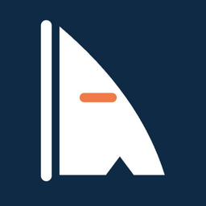

<title>Gustiq</title>
<meta name="claude:viewport-fit-sides" content="cover">
<link rel="preconnect" href="https://fonts.googleapis.com">
<link rel="preconnect" href="https://fonts.gstatic.com" crossorigin>
<link rel="stylesheet" href="https://fonts.googleapis.com/css2?family=IBM+Plex+Mono:wght@400;500;600&family=IBM+Plex+Sans:wght@400;500;600&family=Poppins:wght@700&family=Space+Grotesk:wght@500;600;700&display=swap">
<style>
/*LEAFLET_CSS*/
</style>
<style>
/* Layout: instrument-panel sidebar on the left, chart of the bay on the right; stacks on phones. */
:root {
  --page: #f4f6f7; --surface: #fcfdfd; --ink: #0e1a22; --ink-2: #4a5a64; --muted: #7d8b93;
  --grid: #dde3e6; --axis: #b9c3c8; --border: rgba(14, 26, 34, 0.10);
  --accent: #1f6fc4; --accent-ink: #ffffff;
  --water: #d7e6ef; --land: #eef0ec; --shore: #a9b8bf;
  --left: #6250d6; --right: #eb6834; --neutral: #8a9399;
  --lift: #2a78d6; --header: #e34948; --flood: #1baf7a; --ebb: #c98500; --drift: #7c5ce0;
  --band1: rgba(42, 120, 214, 0.12); --band2: rgba(42, 120, 214, 0.26);
  --warn-bg: #fff4dc; --warn-ink: #6b4a00;
  --f-body: "Barlow", system-ui, -apple-system, "Segoe UI", sans-serif;
  --f-display: "Barlow Condensed", "Arial Narrow", system-ui, sans-serif;
}
@media (prefers-color-scheme: dark) {
  :root:not([data-theme="light"]) {
    color-scheme: dark;
    --page: #0b1217; --surface: #121c23; --ink: #e9eff2; --ink-2: #b6c3ca; --muted: #83929a;
    --grid: #22303a; --axis: #33434e; --border: rgba(255, 255, 255, 0.10);
    --accent: #4a96e8; --accent-ink: #06121c;
    --water: #0f2433; --land: #1f2a2f; --shore: #3b4d57;
    --left: #9085e9; --right: #d95926; --neutral: #7d878d; --lift: #3987e5; --header: #e66767; --flood: #199e70; --ebb: #d9a020; --drift: #a58ff5;
    --band1: rgba(57, 135, 229, 0.16); --band2: rgba(57, 135, 229, 0.32);
    --warn-bg: #3a2e10; --warn-ink: #f5d48a;
  }
}
:root[data-theme="dark"] {
  color-scheme: dark;
  --page: #0b1217; --surface: #121c23; --ink: #e9eff2; --ink-2: #b6c3ca; --muted: #83929a;
  --grid: #22303a; --axis: #33434e; --border: rgba(255, 255, 255, 0.10);
  --accent: #4a96e8; --accent-ink: #06121c;
  --water: #0f2433; --land: #1f2a2f; --shore: #3b4d57;
  --left: #9085e9; --right: #d95926; --neutral: #7d878d; --lift: #3987e5; --header: #e66767; --flood: #199e70; --ebb: #d9a020; --drift: #a58ff5;
  --band1: rgba(57, 135, 229, 0.16); --band2: rgba(57, 135, 229, 0.32);
  --warn-bg: #3a2e10; --warn-ink: #f5d48a;
}
* { box-sizing: border-box; }
[hidden] { display: none !important; }
html, body { height: 100%; }
body { background: var(--page); color: var(--ink); font: 15px/1.5 var(--f-body); }
body::before { content: ""; position: fixed; inset: 0 0 auto; height: env(safe-area-inset-top, 0px); z-index: 1100; background: var(--surface); }

.top {
  position: sticky; top: env(safe-area-inset-top, 0px); z-index: 1000;
  display: flex; align-items: center; gap: 12px 20px; flex-wrap: wrap;
  padding-block: 10px; padding-left: max(16px, env(safe-area-inset-left, 0px)); padding-right: max(16px, env(safe-area-inset-right, 0px));
  background: var(--surface); border-bottom: 1px solid var(--border);
}
.brand { display: flex; align-items: center; gap: 8px; color: var(--accent); }
.brand { gap: 10px; }
.brand .logo { width: 40px; height: 40px; border-radius: 9px; flex: none; display: block; }
.brand-text { display: grid; gap: 3px; }
.brand .name { font: 700 24px/0.9 var(--f-display), system-ui, sans-serif; letter-spacing: -.01em; text-transform: lowercase; color: var(--ink); }
.brand .name .d { color: #F27A48; }
.brand .venue { font: 600 12px/1 var(--f-body); color: var(--muted); letter-spacing: .1em; text-transform: uppercase; }
.tabs { display: flex; gap: 4px; margin-left: auto; flex-wrap: wrap; }
.tabs a, .seg button {
  font: 500 14px/1 var(--f-body); color: var(--ink-2); text-decoration: none; padding: 8px 12px; border-radius: 8px;
  border: 0; background: none; cursor: pointer;
}
.tabs a:hover, .seg button:hover { background: var(--grid); }
.tabs a.active, .seg button.active { background: var(--accent); color: var(--accent-ink); }
.tabs a:focus-visible, button:focus-visible, input:focus-visible, select:focus-visible { outline: 2px solid var(--accent); outline-offset: 2px; }

main { display: grid; grid-template-columns: minmax(0, 46%) minmax(0, 1fr); height: calc(100% - 57px); }
.panel { overflow-y: auto; min-width: 0; padding-block: 20px 40px; padding-left: max(16px, env(safe-area-inset-left, 0px)); padding-right: 24px; border-right: 1px solid var(--border); }
.mapwrap { position: relative; min-width: 0; }
#map { position: absolute; inset: 0; background: var(--water); }

h1 { font: 600 28px/1.1 var(--f-display); letter-spacing: .01em; margin: 0 0 6px; text-wrap: balance; }
h2 { font: 600 18px/1.2 var(--f-display); letter-spacing: .02em; margin: 30px 0 6px; text-wrap: balance; }
.lede { color: var(--ink-2); margin: 0 0 16px; max-width: 62ch; }
.hint, .caveat { color: var(--muted); font-size: 13px; margin: 0 0 8px; max-width: 70ch; }

.form { display: grid; gap: 12px; background: var(--surface); border: 1px solid var(--border); border-radius: 12px; padding: 16px; }
.form fieldset { border: 0; padding: 0; margin: 0; min-width: 0; }
.form legend, .form label { color: var(--ink-2); font-size: 13px; }
.form label { display: grid; gap: 4px; }
.row { display: grid; grid-template-columns: 1fr 1fr; gap: 12px; }
input, select { font: inherit; color: var(--ink); background: var(--page); border: 1px solid var(--axis); border-radius: 8px; padding: 7px 9px; min-width: 0; width: 100%; }
input[type=range] { padding: 0; }
input[type=file] { padding: 6px; }
details summary { cursor: pointer; color: var(--ink-2); font-size: 13px; }
details[open] summary { margin-bottom: 8px; }
button { font: 500 14px/1 var(--f-body); border-radius: 8px; padding: 10px 14px; cursor: pointer; border: 1px solid var(--axis); background: var(--surface); color: var(--ink); }
button.primary { background: var(--accent); color: var(--accent-ink); border-color: var(--accent); font-weight: 600; }
.inline { display: inline-flex; align-items: center; gap: 8px; color: var(--ink-2); margin-bottom: 6px; }
.inline select { width: auto; }

.chips { display: flex; flex-wrap: wrap; gap: 6px; margin-top: 4px; }
.chips label { display: inline-flex; align-items: center; border: 1px solid var(--axis); border-radius: 999px; padding: 4px 12px; cursor: pointer; color: var(--ink); font-size: 14px; }
.chips input { position: absolute; opacity: 0; width: 1px; height: 1px; }
.chips label:has(input:checked) { background: var(--accent); border-color: var(--accent); color: var(--accent-ink); }
.chips label:has(input:focus-visible) { outline: 2px solid var(--accent); outline-offset: 2px; }

.tiles { display: grid; grid-template-columns: repeat(auto-fit, minmax(130px, 1fr)); gap: 10px; margin: 18px 0 10px; }
.tile { background: var(--surface); border: 1px solid var(--border); border-radius: 12px; padding: 12px 14px; min-width: 0; }
.tile .k { color: var(--muted); font-size: 12px; letter-spacing: .06em; text-transform: uppercase; }
.tile .v { font: 600 28px/1.15 var(--f-display); margin-top: 4px; }
.tile .s { color: var(--ink-2); font-size: 13px; }
.tile.hero { grid-column: 1 / -1; border-color: var(--accent); }
.tile.hero .v { font-size: 34px; }

.split { display: flex; height: 26px; border-radius: 6px; overflow: hidden; gap: 2px; margin: 4px 0 6px; }
.split div { display: flex; align-items: center; justify-content: center; color: #fff; font-size: 12px; font-weight: 600; min-width: 0; white-space: nowrap; overflow: hidden; }
.split .l { background: var(--left); } .split .o { background: var(--neutral); } .split .r { background: var(--right); }
.split-legend { display: flex; gap: 6px 14px; color: var(--ink-2); font-size: 13px; flex-wrap: wrap; }
.swatch { display: inline-block; width: 10px; height: 10px; border-radius: 2px; margin-right: 5px; vertical-align: -1px; }
.advice { padding-left: 18px; margin: 12px 0; max-width: 68ch; }
.advice li { margin-bottom: 6px; }

.chart { position: relative; height: 260px; background: var(--surface); border: 1px solid var(--border); border-radius: 12px; padding: 10px; }
.chart.small { height: 180px; margin-bottom: 10px; }
.slider-label { color: var(--ink-2); font-size: 13px; font-variant-numeric: tabular-nums; }

.table-wrap { max-height: 300px; overflow: auto; border: 1px solid var(--border); border-radius: 12px; background: var(--surface); }
table { border-collapse: collapse; width: 100%; font-variant-numeric: tabular-nums; }
th, td { text-align: left; padding: 7px 10px; border-bottom: 1px solid var(--grid); white-space: nowrap; }
th { position: sticky; top: 0; background: var(--surface); color: var(--muted); font-weight: 500; font-size: 12px; letter-spacing: .05em; text-transform: uppercase; }
tbody tr.click { cursor: pointer; }
tbody tr.click:hover { background: var(--grid); }
tbody tr.sel { outline: 2px solid var(--accent); outline-offset: -2px; }
.metrics td:last-child, .metrics th:last-child { text-align: right; }
.count { color: var(--muted); font-weight: 400; }

.note { border-radius: 10px; padding: 10px 12px; margin: 12px 0; font-size: 14px; background: var(--warn-bg); color: var(--warn-ink); }
.note.info { background: var(--surface); color: var(--ink-2); border: 1px solid var(--border); }

.list { display: grid; gap: 6px; margin-top: 10px; }
.item { display: flex; align-items: center; gap: 10px; background: var(--surface); border: 1px solid var(--border); border-radius: 10px; padding: 8px 12px; cursor: pointer; text-align: left; width: 100%; font: inherit; color: inherit; }
.item:hover { border-color: var(--accent); }
.item.sel { border-color: var(--accent); box-shadow: inset 3px 0 0 var(--accent); }
.item .meta { color: var(--muted); font-size: 12.5px; }
.item .tag { margin-left: auto; font-size: 11px; letter-spacing: .06em; text-transform: uppercase; color: var(--muted); border: 1px solid var(--axis); border-radius: 999px; padding: 2px 8px; }
.rate { display: inline-block; padding: 2px 8px; border-radius: 10px; font-weight: 700; font-size: 12px; }
.gear { border: 1px solid var(--border); background: var(--surface); color: var(--ink); border-radius: 999px; width: 38px; height: 38px; padding: 0; font-size: 20px; line-height: 1; margin-left: 6px; flex: none; }
#settings { border: 1px solid var(--border); border-radius: 14px; background: var(--surface); color: var(--ink); width: min(560px, calc(100vw - 32px)); max-height: calc(100vh - 48px); padding: 16px 18px; }
#settings::backdrop { background: rgba(10, 14, 20, .45); }
#settings h3 { font-size: 14px; margin: 16px 0 8px; }
.set-head { display: flex; justify-content: space-between; align-items: center; }
.set-head h2 { margin: 0; } .set-head button { font-size: 22px; padding: 2px 10px; }
.set-grid { display: grid; grid-template-columns: repeat(auto-fit, minmax(200px, 1fr)); gap: 8px 14px; }
.set-grid label { display: flex; flex-direction: column; gap: 4px; font-size: 13px; color: var(--ink-2); }
.set-grid label.chk { flex-direction: row; align-items: center; gap: 8px; }
.pals { display: grid; grid-template-columns: repeat(auto-fill, minmax(150px, 1fr)); gap: 6px; }
.pal { display: flex; flex-direction: column; gap: 5px; padding: 6px 8px; text-align: left; font-size: 12.5px; }
.pal i { display: block; height: 10px; border-radius: 5px; }
.pal.on { border-color: var(--accent); box-shadow: 0 0 0 2px color-mix(in srgb, var(--accent) 35%, transparent); }
.customs { display: flex; gap: 8px; flex-wrap: wrap; } .customs input { width: 42px; height: 32px; padding: 0; border: 1px solid var(--border); border-radius: 6px; background: none; }
.gx-layers { display: flex; flex-wrap: wrap; gap: 4px; margin: 4px 0 10px; }
.gx-time { position: absolute; left: 12px; right: 12px; bottom: calc(22px + env(safe-area-inset-bottom, 0px)); z-index: 520;
  display: flex; align-items: center; gap: 10px; background: var(--surface); color: var(--ink); border: 1px solid var(--border); border-radius: 12px; padding: 8px 10px 18px; box-shadow: 0 4px 18px rgba(0,0,0,.18); }
.gx-time button { padding: 6px 10px; flex: none; }
.gx-track { position: relative; flex: 1; min-width: 0; }
.gx-track input { width: 100%; margin: 0; }
.gx-ticks { position: absolute; left: 0; right: 0; top: 20px; height: 12px; font-size: 10px; color: var(--muted); pointer-events: none; }
.gx-ticks span { position: absolute; transform: translateX(-50%); white-space: nowrap; }

#gx-label { font: 600 13px/1.2 var(--f-body); min-width: 118px; text-align: right; }
.gx-probe { position: absolute; z-index: 560; background: var(--surface); color: var(--ink); border: 1px solid var(--border); border-radius: 10px; padding: 8px 10px; font-size: 12.5px; line-height: 1.45; pointer-events: none; box-shadow: 0 4px 16px rgba(0,0,0,.2); max-width: 300px; }
.gx-probe .gp-h { color: var(--muted); font-size: 11.5px; margin-bottom: 2px; } .gx-probe .gp-f { color: var(--accent); font-size: 11.5px; margin-top: 3px; }
.gx-nodata { position: absolute; top: 14px; left: 50%; transform: translateX(-50%); z-index: 530; background: var(--surface); border: 1px solid var(--border); border-radius: 10px; padding: 8px 12px; font-size: 13px; }
body.gx .maptools .seg, body.gx #liftmap-btn, body.gx #tide-toggle { display: none !important; }
body.gx #map { background: #26313d; }
.fx-days { display: flex; gap: 8px; overflow-x: auto; padding: 4px 2px 10px; scroll-snap-type: x proximity; }
.fx-day { flex: none; width: 112px; border: 1px solid var(--border); border-radius: 12px; padding: 8px; background: var(--surface); font-size: 12.5px; display: flex; flex-direction: column; gap: 3px; scroll-snap-align: start; }
.fx-dn { font-weight: 600; } .fx-ic { font-size: 24px; line-height: 1.1; } .fx-t { font-weight: 600; font-size: 14px; } .fx-t span { color: var(--muted); font-weight: 500; } .fx-g, .fx-r { color: var(--ink-2); }
.fx-day .rate { align-self: flex-start; margin-top: 2px; }
body.gx .legend { bottom: calc(96px + env(safe-area-inset-bottom, 0px)); max-height: calc(100% - 250px); }
@media (max-width: 760px) { .gx-time { left: 6px; right: 6px; bottom: calc(8px + env(safe-area-inset-bottom, 0px)); gap: 6px; } #gx-label { min-width: 0; font-size: 11.5px; max-width: 92px; } body.gx .legend { bottom: calc(76px + env(safe-area-inset-bottom, 0px)); } }
.surge { color: #b8611a; }
.plan-chips { display: flex; flex-wrap: wrap; gap: 6px; }
#plan-pick .plan-chips button { font: inherit; font-size: 13px; padding: 5px 10px; border-radius: 999px; border: 1px solid var(--axis); background: var(--surface); color: var(--ink); cursor: pointer; }
#plan-pick .plan-chips button:hover { border-color: var(--accent); }
#plan-venues { display: contents; }
.rate.great { background: #1baf7a; color: #fff; } .rate.ok { background: #e2d23a; color: #1f2a33; } .rate.tough { background: #e34948; color: #fff; } .rate.calm { background: #9ecee6; color: #1f2a33; }
#plan-table tr.best td { background: color-mix(in srgb, #1baf7a 14%, transparent); }
.btnrow { display: flex; flex-wrap: wrap; gap: 6px; }
.race-ico { background: none; border: none; }
.buoy { width: 26px; height: 26px; border-radius: 50%; background: #F27A48; color: #fff; border: 2px solid #fff; box-shadow: 0 1px 4px rgba(0,0,0,.45); font: 700 11px/22px var(--f-body); text-align: center; }
.buoy.big { width: 44px; height: 44px; font-size: 18px; line-height: 40px; border-width: 3px; }
.rc-boat { width: 34px; height: 20px; border-radius: 4px 12px 12px 4px; background: #0F2A45; color: #fff; border: 2px solid #fff; font: 700 10px/16px var(--f-body); text-align: center; box-shadow: 0 1px 4px rgba(0,0,0,.45); }
.rc-boat.big { width: 54px; height: 30px; font-size: 15px; line-height: 26px; }
.pin-mark, .fin-mark { width: 24px; height: 24px; border-radius: 50%; background: #ffd23f; color: #0F2A45; border: 2px solid #fff; font: 700 9px/20px var(--f-body); text-align: center; box-shadow: 0 1px 4px rgba(0,0,0,.45); }
.fin-mark { background: #1baf7a; color: #fff; font-size: 11px; }
.pin-mark.big, .fin-mark.big { width: 40px; height: 40px; font-size: 14px; line-height: 36px; }
.leg-chev { width: 0; height: 0; margin: 1px 0 0 2px; border-left: 5px solid transparent; border-right: 5px solid transparent; border-bottom: 10px solid var(--c); filter: drop-shadow(0 0 1px #0b1d33); }
.leg-lab { transform: translate(-50%, -50%); white-space: nowrap; background: rgba(15,42,69,.85); color: #fff; padding: 2px 6px; border-radius: 6px; font: 600 11px/1.3 var(--f-body); width: max-content; }
.leg-lab.big { font-size: 18px; padding: 4px 10px; }
.sim-num { position: absolute; left: 14px; top: -6px; font: 700 10px/1 var(--f-body); color: #fff; text-shadow: 0 0 2px #000, 0 0 2px #000; }
.sim-boat { width: 0; height: 0; margin: 1px 0 0 3px; border-left: 6px solid transparent; border-right: 6px solid transparent; border-bottom: 16px solid var(--c); filter: drop-shadow(0 0 1px #fff) drop-shadow(0 1px 2px rgba(0,0,0,.5)); }
.chat #chat-log { max-height: 280px; overflow-y: auto; display: grid; gap: 6px; margin-bottom: 8px; }
.chat .msg { padding: 8px 10px; border-radius: 10px; line-height: 1.4; }
.chat .msg.user { background: var(--accent); color: var(--accent-ink); justify-self: end; max-width: 85%; }
.chat .msg.assistant { background: var(--surface); border: 1px solid var(--border); max-width: 95%; }
.chat form { display: flex; gap: 6px; margin: 8px 0 4px; } .chat input { flex: 1; min-width: 0; }
body.board header, body.board main > .panel { display: none; }
body.board main { display: block; }
body.board .mapwrap { position: fixed; inset: 0; height: 100vh !important; z-index: 1000; }
body.board #race-board-exit { display: block; }
#race-board-exit { display: none; position: absolute; top: 10px; left: 60px; z-index: 600; }
.region-pick { display: grid; gap: 4px; font-weight: 600; margin: 0 0 10px; max-width: 320px; }
.seg { display: inline-flex; gap: 4px; background: var(--surface); border: 1px solid var(--border); border-radius: 10px; padding: 3px; margin-top: 12px; flex-wrap: wrap; }

.legend { position: absolute; left: calc(12px + env(safe-area-inset-left, 0px)); bottom: calc(24px + env(safe-area-inset-bottom, 0px)); z-index: 500; background: var(--surface); color: var(--ink);
  border: 1px solid var(--border); border-radius: 10px; padding: 8px 10px; font-size: 12.5px; max-width: 270px; }
.legend { padding-right: 30px; display: flex; flex-direction: column; max-height: calc(100% - 170px); min-height: 0; }
.legend .legend-body { overflow-y: auto; overscroll-behavior: contain; min-height: 0; padding-right: 4px; scrollbar-width: thin; }
.legend:not(.more) .fine { display: none; }
.legend .legend-more { margin-top: 6px; border: 0; background: none; padding: 2px 0; color: var(--accent); font: 600 12px/1.2 var(--f-body); cursor: pointer; text-align: left; }
.legend .legend-toggle { position: absolute; top: 4px; right: 4px; border: 1px solid var(--border); background: var(--surface); color: var(--ink-2); border-radius: 7px; min-width: 24px; height: 22px; padding: 0 6px; font: 600 12px/1 var(--f-body); cursor: pointer; }
.legend.min { padding: 4px; }
.legend.min .legend-body { display: none; }
.legend.min .legend-toggle { position: static; }
.legend .mini-cur { display: none; }
.legend.min .mini-cur { display: grid; grid-template-columns: auto 90px; gap: 2px 6px; align-items: center; font: 600 10.5px/1.2 var(--f-body); color: var(--ink-2); margin-top: 4px; }
.legend.min .mini-cur i { height: 8px; border-radius: 4px; display: block; }
.legend.min .mini-cur span:last-child { grid-column: 2; font-weight: 500; font-size: 9.5px; }
.legend .bar { height: 8px; border-radius: 4px; margin: 4px 0 2px; }
.legend .ends { display: flex; justify-content: space-between; gap: 8px; color: var(--ink-2); }
.legend .fine { color: var(--muted); margin-top: 4px; }
.probe { position: absolute; z-index: 700; pointer-events: none; background: var(--surface); color: var(--ink); border: 1px solid var(--border);
  border-radius: 10px; padding: 8px 10px; font-size: 13px; line-height: 1.45; box-shadow: 0 4px 16px rgba(0,0,0,.18); width: 250px; }
.probe .pt { font-weight: 600; margin-bottom: 2px; }
.probe .pr { display: flex; gap: 8px; }
.probe .pk { color: var(--muted); width: 72px; flex: none; }
.probe .lift { color: var(--lift); font-weight: 600; } .probe .head { color: var(--header); font-weight: 600; }
.probe .flood { color: var(--flood); font-weight: 600; } .probe .drift { color: var(--drift); font-weight: 600; } .probe .ebb { color: var(--ebb); font-weight: 600; }
.probe .pf { color: var(--muted); font-size: 11.5px; margin-top: 4px; }
.maptools { position: absolute; right: calc(12px + env(safe-area-inset-right, 0px)); top: 12px; z-index: 500; display: grid; justify-items: end; gap: 6px; }
.maptools .seg { margin-top: 0; box-shadow: 0 1px 4px rgba(0,0,0,.15); }
.maptools .seg button { padding: 6px 10px; font-size: 13px; }
.wind-canvas { pointer-events: none; position: absolute; left: 0; top: 0; }
.search { position: relative; flex: 1 1 220px; max-width: 360px; min-width: 0; }
.search input { width: 100%; padding: 8px 12px; border-radius: 999px; }
.search-results { position: absolute; left: 0; right: 0; top: calc(100% + 4px); z-index: 1200; background: var(--surface); border: 1px solid var(--border);
  border-radius: 12px; box-shadow: 0 6px 24px rgba(0,0,0,.18); padding: 4px; display: grid; }
.sr { display: flex; justify-content: space-between; gap: 10px; text-align: left; border: 0; background: none; padding: 8px 10px; border-radius: 8px; font-size: 14px; color: var(--ink); }
.sr:hover, .sr.sel { background: var(--grid); }
.sr span:first-child { min-width: 0; overflow: hidden; text-overflow: ellipsis; white-space: nowrap; }
.sr-k { color: var(--muted); font-size: 12px; white-space: nowrap; }
.sr-empty { padding: 8px 10px; color: var(--muted); font-size: 13px; }
main.wide { grid-template-columns: minmax(0, 1fr); }
main.panel-min { grid-template-columns: minmax(0, 1fr); }
main.panel-min > .panel { display: none; }
#panel-toggle { position: absolute; top: 96px; left: 10px; z-index: 650; border-left: 1px solid var(--border) !important; border-radius: 6px !important; width: 34px !important; height: 34px !important; width: 22px; height: 56px; border: 1px solid var(--border); border-left: 0;
  border-radius: 0 10px 10px 0; background: var(--surface); color: var(--ink-2); font: 700 14px/1 var(--f-body); cursor: pointer; box-shadow: 0 1px 4px rgba(0,0,0,.2); padding: 0; }
main.wide #panel-toggle { display: none; }
main.wide .mapwrap { display: none; }
main.wide .panel { border-right: 0; }
#tab-kits { max-width: 1100px; margin: 0 auto; }
.kits-hero { display: flex; gap: 16px; align-items: center; margin-bottom: 8px; }
.kits-hero img { border-radius: 14px; flex: none; }
.kits-hero h1 { font-family: "Poppins", system-ui, sans-serif; letter-spacing: -.01em; }
.kit-grid { display: grid; grid-template-columns: repeat(auto-fill, minmax(220px, 1fr)); gap: 16px; margin: 16px 0 8px; }
.kit-grid:empty { display: none; }
.kit { display: grid; grid-template-rows: auto 1fr; background: var(--surface); border: 1px solid var(--border); border-radius: 14px; overflow: hidden; color: inherit; text-decoration: none; }
.kit:hover { border-color: var(--accent); }
.kit img { width: 100%; aspect-ratio: 1 / 1; object-fit: cover; display: block; background: var(--grid); }
.kit-body { padding: 12px 14px; display: grid; gap: 4px; align-content: start; }
.kit-name { font-weight: 600; }
.kit-price { font: 600 20px/1.1 var(--f-display); }
.kit-store { color: var(--accent); font-weight: 600; font-size: 13px; }
.store-grid { display: grid; grid-template-columns: repeat(auto-fit, minmax(240px, 1fr)); gap: 12px; }
.store { display: grid; gap: 4px; padding: 18px; border-radius: 14px; border: 1px solid var(--border); background: var(--surface); color: inherit; text-decoration: none; }
.store:hover { border-color: var(--accent); }
.store-name { font: 600 24px/1.1 var(--f-display); }
.store-sub { color: var(--ink-2); }
.store-go { color: var(--accent); font-weight: 600; margin-top: 6px; }
.kit-feature { display: grid; grid-template-columns: minmax(0, 1.1fr) minmax(0, 1fr); gap: 24px; align-items: center; margin-top: 24px;
  background: var(--surface); border: 1px solid var(--border); border-radius: 16px; padding: 20px; }
.kit-feature img { width: 100%; height: auto; border-radius: 12px; display: block; background: #fff; }
.kit-copy h2 { margin-top: 0; font-family: "Poppins", system-ui, sans-serif; font-size: 24px; letter-spacing: -.01em; }
.kit-copy p { margin: 0 0 10px; max-width: 62ch; color: var(--ink-2); }
.kit-copy .kit-tag { color: var(--ink); font-weight: 600; font-size: 17px; }
.kit-buttons { display: flex; flex-wrap: wrap; gap: 10px; margin-top: 6px; }
.kit-btn { background: var(--accent); color: var(--accent-ink); text-decoration: none; font-weight: 600; padding: 10px 16px; border-radius: 999px; }
.kit-btn:hover { filter: brightness(1.08); }
@media (max-width: 760px) { .kit-feature { grid-template-columns: minmax(0, 1fr); padding: 14px; } }
.check { display: flex !important; align-items: center; gap: 8px; }
.check input { width: auto; }
.dialrow { display: flex; gap: 16px; align-items: center; flex-wrap: wrap; }
.dialrow .dialcontrols { display: grid; gap: 10px; flex: 1 1 180px; min-width: 0; }
#wind-dial { cursor: grab; touch-action: none; flex: none; }
#field-readout, #tide-readout { margin-top: 6px; color: var(--ink); font-variant-numeric: tabular-nums; min-height: 1.4em; }
.maptools button { background: var(--surface); box-shadow: 0 1px 4px rgba(0,0,0,.15); }
.station-icon { background: none; border: 0; }
.station-icon .lab { position: absolute; left: 30px; top: 4px; white-space: nowrap; background: var(--surface); color: var(--ink);
  border: 1px solid var(--border); border-radius: 6px; padding: 1px 6px; font: 600 12.5px/1.4 var(--f-body); font-variant-numeric: tabular-nums; }
.leaflet-container { font: inherit; background: var(--water); }
.leaflet-tooltip { font: 13px/1.4 var(--f-body); }
.leaflet-control-attribution { font-size: 11px; }

.rules { margin-top: 36px; padding-top: 12px; border-top: 1px solid var(--grid); color: var(--muted); font-size: 12.5px; max-width: 75ch; }

@media (max-width: 900px) {
  main { grid-template-columns: minmax(0, 1fr); height: auto; }
  .panel { border-right: 0; padding-right: max(16px, env(safe-area-inset-right, 0px)); }
  .mapwrap { height: 55vh; order: -1; }
  main.panel-min { grid-template-columns: minmax(0, 1fr); }
  main.panel-min .mapwrap { height: calc(100vh - 110px); }
  .tabs { margin-left: 0; flex-wrap: nowrap; overflow-x: auto; width: 100%; scrollbar-width: none; -webkit-overflow-scrolling: touch; padding-right: 48px; }
  .tabs::-webkit-scrollbar { display: none; }
  .tabs a { white-space: nowrap; flex: none; }
  .top { position: sticky; } .gear { position: absolute; right: max(12px, env(safe-area-inset-right, 0px)); bottom: 10px; }
  .leaflet-control-attribution { font-size: 9px !important; white-space: nowrap; overflow: hidden; text-overflow: ellipsis; max-width: 100vw; }
  .gx-time { bottom: calc(22px + env(safe-area-inset-bottom, 0px)) !important; }
  body.gx .legend { bottom: calc(90px + env(safe-area-inset-bottom, 0px)) !important; }
  .row { grid-template-columns: 1fr; }
  .legend { max-width: 210px; font-size: 11.5px; padding: 6px 30px 6px 8px; left: calc(8px + env(safe-area-inset-left, 0px)); bottom: calc(18px + env(safe-area-inset-bottom, 0px)); max-height: 40%; }
  #field-readout, #tide-readout { display: none; }
}
/* ===== Gustiq theme: chart-room navy, off-white paper, one signal orange. Sharp 1px rules, no rounded cards or shadows.
   Only looks live here; every map, tide and wind feature above is unchanged. ===== */
:root {
  --hdr: #071426; --hdr-ink: #F8F8F6; --hdr-mute: #8C9AAE; --hdr-line: #22344F;
  --signal: #F0642D;
  --page: #F8F8F6; --surface: #FFFFFF; --ink: #071426; --ink-2: #33414F; --muted: #5F6B79;
  --grid: #E3E5E8; --axis: #C4C9D0; --border: #CDD1D6; --rule: #071426;
  --accent: #0B2140; --accent-ink: #F8F8F6;
  --warn-bg: #FFF1E8; --warn-ink: #7A2E0B;
  --f-body: "IBM Plex Sans", "Helvetica Neue", Arial, sans-serif;
  --f-display: "Space Grotesk", "IBM Plex Sans", Arial, sans-serif;
  --f-mono: "IBM Plex Mono", ui-monospace, Menlo, monospace;
}
@media (prefers-color-scheme: dark) {
  :root:not([data-theme="light"]) {
    --page: #0A1A30; --surface: #0F2340; --ink: #F4F4F0; --ink-2: #C3CCD8; --muted: #8C9BB0;
    --grid: #182E4D; --axis: #2B4468; --border: #1F3758; --rule: #2B4468;
    --accent: #4A96E8; --accent-ink: #071426; --hdr: #050F1E; --hdr-line: #1A2E4B;
    --warn-bg: #3A1C0C; --warn-ink: #FFC6A8;
  }
}
:root[data-theme="dark"] {
  --page: #0A1A30; --surface: #0F2340; --ink: #F4F4F0; --ink-2: #C3CCD8; --muted: #8C9BB0;
    --grid: #182E4D; --axis: #2B4468; --border: #1F3758; --rule: #2B4468;
    --accent: #4A96E8; --accent-ink: #071426; --hdr: #050F1E; --hdr-line: #1A2E4B;
    --warn-bg: #3A1C0C; --warn-ink: #FFC6A8;
}
body { font: 15px/1.55 var(--f-body); -webkit-font-smoothing: antialiased; }
body::before { background: var(--hdr); }

/* Header: a solid navy bar. Wordmark left, search, then tabs as mono labels with an orange underline. */
.top { background: var(--hdr); color: var(--hdr-ink); border-bottom: 1px solid var(--hdr-line); padding-block: 0; gap: 0 22px; min-height: 64px; }
.brand { padding-block: 12px; }
.brand .logo { border-radius: 0; width: 38px; height: 38px; outline: 1px solid var(--hdr-line); }
.brand .name { color: var(--hdr-ink); font-size: 25px; }
.brand .name .d { color: #0A1A30; background: var(--signal); padding: 0 4px; margin-left: 3px; border-radius: 3px; text-transform: none; font-size: .8em; line-height: 1.05; display: inline-block; vertical-align: 2px; }
.brand-text { gap: 6px; }
.brand .venue { font: 500 10.5px/1 var(--f-mono); color: var(--hdr-mute); letter-spacing: .08em; }
.search input { background: transparent; color: var(--hdr-ink); border: 1px solid var(--hdr-line); border-radius: 0; font: 400 13.5px/1.2 var(--f-mono); padding: 9px 12px; }
.search input::placeholder { color: var(--hdr-mute); }
.search input:focus { border-color: var(--hdr-ink); outline: none; }
.tabs { gap: 0; align-self: stretch; }
.tabs a { display: flex; align-items: center; height: 100%; min-height: 64px; padding: 0 14px; border-radius: 0; color: var(--hdr-mute);
  font: 500 12px/1 var(--f-mono); letter-spacing: .06em; text-transform: uppercase; border-bottom: 3px solid transparent; border-top: 3px solid transparent; }
.tabs a:hover { background: none; color: var(--hdr-ink); }
.tabs a.active { background: none; color: var(--hdr-ink); border-bottom-color: var(--signal); }
.gear { border-radius: 0; border: 1px solid var(--hdr-line); background: transparent; color: var(--hdr-ink); width: 38px; height: 38px; display: grid; place-items: center; align-self: center; }
.gear:hover { border-color: var(--hdr-ink); }

/* Side panel: editorial column. Big grotesk headings, a hard rule above each section. */
@media (min-width: 901px) { main { height: calc(100% - 65px); grid-template-columns: minmax(0, 42%) minmax(0, 1fr); } }
.panel { background: var(--page); border-right: 1px solid var(--rule); padding-top: 28px; padding-right: 28px; }
h1 { font: 700 34px/1.02 var(--f-display); letter-spacing: -.025em; margin: 0 0 10px; }
h2 { font: 600 19px/1.2 var(--f-display); letter-spacing: -.01em; margin: 34px 0 8px; padding-top: 12px; border-top: 1px solid var(--rule); }
.tab > h1:first-child, .tab > h1:first-of-type { padding-bottom: 14px; border-bottom: 3px solid var(--rule); max-width: 16ch; }
.lede { font-size: 15.5px; color: var(--ink-2); }
.hint, .caveat { font-size: 12.5px; }
.rules { border-top: 1px solid var(--rule); font: 400 12px/1.6 var(--f-body); color: var(--muted); }
.rules a { color: var(--ink); }

/* Labels and small print in mono */
.form legend, .form label, .set-grid label, details summary, .tile .k, th, .item .tag, .sr-k, .gx-ticks, .gx-probe .gp-h,
.legend .ends, .split-legend, .slider-label, .fx-dn, .fx-g, .fx-r, .kit-store, .store-go, .store-sub, .count, .meta, .item .meta,
.probe .pk, .probe .pf, #gx-label, .legend .legend-more {
  font-family: var(--f-mono); letter-spacing: .01em;
}
.form legend, .form label, .set-grid label, .tile .k, th, .item .tag { font-size: 11.5px; text-transform: uppercase; letter-spacing: .05em; }
.form label, .set-grid label { text-transform: none; letter-spacing: 0; font-size: 12.5px; }

/* Sharp everything: no rounded cards, pills or soft shadows */
.form, input, select, button, .chips label, .tile, .split, .chart, .table-wrap, .note, .item, .item .tag, .rate, #settings, .pal, .pal i,
.customs input, .gx-time, .gx-probe, .gx-nodata, .fx-day, #plan-pick .plan-chips button, .chat .msg, .seg, .legend, .legend .legend-toggle,
.legend .bar, .legend.min .mini-cur i, .probe, .search-results, .sr, #panel-toggle, .kits-hero img, .kit, .store, .kit-feature,
.kit-feature img, .kit-btn, .station-icon .lab, .leg-lab, .swatch, #race-board-exit { border-radius: var(--r) !important; }
.swatch, .pal i, .legend .bar, .legend.min .mini-cur i, .split, .rate, .item .tag, .leg-lab, .station-icon .lab, .legend .legend-toggle { border-radius: 3px !important; }
.gx-time, .gx-probe, .probe, .search-results, .maptools .seg, .maptools button, #panel-toggle { box-shadow: none !important; }

/* Inputs and buttons */
input, select { background: var(--surface); border-color: var(--axis); font-family: var(--f-body); }
.kits-hero + .kit-grid:empty + h2 { border-top: 0; margin-top: 22px; padding-top: 0; }
input:focus, select:focus { border-color: var(--ink); }
input[type=range] { accent-color: var(--signal); }
button { font: 500 13.5px/1 var(--f-body); border-color: var(--axis); }
button:hover { border-color: var(--ink); }
button.primary { background: var(--accent); border-color: var(--accent); color: var(--accent-ink); font-weight: 600; }
button.primary:hover { background: var(--signal); border-color: var(--signal); color: #071426; }
.form { background: transparent; border: 1px solid var(--rule); padding: 18px; }
.chips label { border-color: var(--axis); font-size: 13px; }
.chips label:has(input:checked) { background: var(--accent); color: var(--accent-ink); border-color: var(--accent); }

/* Segmented controls: joined boxes with 1px dividers */
.seg { gap: 0; padding: 0; border: 1px solid var(--rule); background: var(--surface); }
.seg button { border-radius: 0; border: 0; border-left: 1px solid var(--border); font: 500 12px/1 var(--f-mono); letter-spacing: .03em; padding: 9px 12px; color: var(--ink-2); }
.seg button:first-child { border-left: 0; }
.seg button:hover { background: var(--grid); }
.seg button.active { background: var(--accent); color: var(--accent-ink); }
.maptools .seg { border-color: #071426; }
.maptools button { border: 1px solid #071426; }

/* Stat tiles become an editorial figure row: rule on top, mono label, big number */
.tiles { gap: 18px 22px; }
.tile { background: none; border: 0; border-top: 1px solid var(--rule); padding: 10px 0 0; }
.tile.hero { border-top: 3px solid var(--signal); }
.tile .v { font: 600 30px/1.1 var(--f-display); letter-spacing: -.02em; font-variant-numeric: tabular-nums; }
.tile.hero .v { font-size: 40px; }
.chart { border-color: var(--border); }
.table-wrap { border-color: var(--rule); }
th { color: var(--ink-2); border-bottom: 1px solid var(--rule); }
.note { border-left: 3px solid var(--signal); }
.note.info { border: 1px solid var(--border); border-left: 3px solid var(--accent); }
.item { border-color: var(--border); }
.item:hover, .item.sel { border-color: var(--ink); }
.item.sel { box-shadow: inset 4px 0 0 var(--signal); }

/* Floating map panels: solid paper, hard 1px navy edge */
.legend, .probe, .gx-probe, .gx-time, .gx-nodata, #panel-toggle { border: 1px solid #071426; }
:root[data-theme="dark"] .legend, :root[data-theme="dark"] .probe, :root[data-theme="dark"] .gx-probe, :root[data-theme="dark"] .gx-time { border-color: #3A4E6B; }
.legend { font-size: 12px; }
.legend .legend-toggle { border-color: var(--border); font-family: var(--f-mono); }
.legend .legend-more { color: var(--ink); text-decoration: underline; text-underline-offset: 3px; }
.gx-time { padding: 10px 12px 20px; }
.gx-time button { border-color: var(--rule); }
#gx-label { font: 500 12px/1.25 var(--f-mono); }
#gx-now { font: 500 11.5px/1 var(--f-mono); text-transform: uppercase; letter-spacing: .05em; }
.gx-probe .gp-f { color: var(--signal); }
body.gx #map { background: #071426; }
.leaflet-bar { border: 1px solid #071426 !important; border-radius: 0 !important; box-shadow: none !important; }
.leaflet-bar a { border-radius: 0 !important; color: #071426; font-family: var(--f-mono); }
.leaflet-bar a:hover { background: #F8F8F6; }
.station-icon .lab { font-family: var(--f-mono); font-weight: 500; font-size: 12px; }

/* Search results */
.search-results { border: 1px solid #071426; padding: 0; background: var(--surface); }
.sr { border-bottom: 1px solid var(--grid); padding: 10px 12px; }
.sr:hover, .sr.sel { background: var(--grid); box-shadow: inset 3px 0 0 var(--signal); }

/* Settings dialog */
#settings { border: 1px solid var(--rule); padding: 20px 22px; }
#settings::backdrop { background: rgba(4, 12, 24, .6); }
#settings h3 { font: 500 11.5px/1 var(--f-mono); text-transform: uppercase; letter-spacing: .06em; color: var(--ink-2); border-top: 1px solid var(--border); padding-top: 14px; }
.pal.on { border-color: var(--ink); box-shadow: inset 0 -3px 0 var(--signal); }

/* Forecast day strip: a ruled table of days instead of rounded cards */
.fx-days { gap: 0; border: 1px solid var(--rule); padding: 0; }
.fx-day { border: 0; border-right: 1px solid var(--border); background: var(--surface); padding: 10px; width: 118px; }
.fx-day:last-child { border-right: 0; }
.fx-dn { font-size: 11px; text-transform: uppercase; letter-spacing: .04em; color: var(--ink-2); }
.fx-ic { font: 600 15px/1.2 var(--f-display); letter-spacing: -.01em; margin: 4px 0 2px; }
.fx-t { font-family: var(--f-display); font-size: 17px; }
.rate { font: 600 10.5px/1.4 var(--f-mono); text-transform: uppercase; letter-spacing: .04em; padding: 2px 6px; }

/* AI coach chat */
.chat .msg.user { background: var(--accent); color: var(--accent-ink); }
.chat .msg.assistant { border-color: var(--border); border-left: 3px solid var(--signal); }

/* Coach Kits: split editorial layout, photos in fixed frames */
.kits-hero { display: grid; grid-template-columns: 96px minmax(0, 1fr); gap: 20px; align-items: end; padding-bottom: 18px; border-bottom: 3px solid var(--rule); }
.kits-hero img { width: 96px; height: 96px; }
.kits-hero h1, .kit-copy h2 { font-family: var(--f-display); }
.kits-hero h1 { font-size: 46px; margin: 0; border: 0; padding: 0; }
.kits-hero .lede { margin: 6px 0 0; }
.kit-grid { gap: 0; border-left: 1px solid var(--rule); border-top: 1px solid var(--rule); }
.kit { border: 0; border-right: 1px solid var(--rule); border-bottom: 1px solid var(--rule); }
.kit img { aspect-ratio: 4 / 5; }
.kit:hover { border-color: var(--rule); box-shadow: inset 0 -4px 0 var(--signal); }
.kit-price { font-family: var(--f-display); }
.store-grid { gap: 0; grid-template-columns: minmax(0, 1.4fr) minmax(0, 1fr); border: 1px solid var(--rule); }
.store { border: 0; padding: 22px; background: var(--surface); }
.store + .store { border-left: 1px solid var(--rule); background: var(--page); }
.store:hover { box-shadow: inset 0 -4px 0 var(--signal); }
.store-name { font: 700 34px/1 var(--f-display); letter-spacing: -.02em; }
.store-go, .kit-store { color: var(--ink); text-decoration: underline; text-underline-offset: 3px; }
.kit-feature { grid-template-columns: minmax(0, 1.35fr) minmax(0, 1fr); gap: 0; padding: 0; background: var(--surface); border: 1px solid var(--rule); align-items: stretch; }
.kit-feature img { aspect-ratio: 16 / 9; object-fit: cover; height: 100%; border-right: 1px solid var(--rule); }
.kit-copy { padding: 24px; }
.kit-copy h2 { border: 0; padding: 0; font-size: 28px; letter-spacing: -.02em; }
.kit-copy .kit-tag { font: 500 12px/1.4 var(--f-mono); text-transform: uppercase; letter-spacing: .06em; color: var(--signal); }
.kit-btn { background: var(--accent); color: var(--accent-ink); padding: 12px 18px; font-weight: 600; }
.kit-btn + .kit-btn { background: transparent; color: var(--ink); outline: 1px solid var(--rule); outline-offset: -1px; }
.kit-btn:hover { filter: none; background: var(--signal); color: #071426; }

@media (max-width: 900px) {
  main { height: auto; }
  .top { padding-block: 0 0; }
  .brand { padding-block: 10px 6px; }
  .search { padding-bottom: 8px; }
  .tabs { border-top: 1px solid var(--hdr-line); }
  .tabs a { min-height: 46px; padding: 0 12px; }
  .gear { bottom: auto; top: 12px; }
  .panel { border-right: 0; border-top: 1px solid var(--rule); padding-top: 22px; }
  h1 { font-size: 29px; }
  .store-grid, .kit-feature { grid-template-columns: minmax(0, 1fr); }
  .store + .store { border-left: 0; border-top: 1px solid var(--rule); }
  .kit-feature img { border-right: 0; border-bottom: 1px solid var(--rule); }
  .kits-hero { grid-template-columns: 64px minmax(0, 1fr); gap: 14px; }
  .kits-hero img { width: 64px; height: 64px; }
  .kits-hero h1 { font-size: 34px; }
}

/* ===== Refinement: calmer, finished look. Small radii, sans-serif controls, light neutral dividers. ===== */
:root { --r: 6px; --r-lg: 10px; --lift-shadow: 0 1px 2px rgba(7,20,38,.06), 0 4px 14px rgba(7,20,38,.07); }
.top { min-height: 60px; gap: 0 28px; }
.brand .logo { border-radius: 8px; outline: 0; }
.brand .venue { font: 500 10px/1 var(--f-body); letter-spacing: .12em; }
.search input { font: 400 14px/1.2 var(--f-body); border-radius: var(--r); background: rgba(248,248,246,.06); border-color: rgba(248,248,246,.14); padding: 9px 14px; }
.search input:focus { background: rgba(248,248,246,.1); border-color: rgba(248,248,246,.5); }
.tabs a { font: 500 14px/1 var(--f-body); letter-spacing: 0; text-transform: none; min-height: 60px; padding: 0 13px; border-bottom-width: 2px; border-top-width: 2px; }
.gear { border-radius: var(--r); border-color: rgba(248,248,246,.16); }

.panel { padding: 32px 32px 48px max(24px, env(safe-area-inset-left, 0px)); }
.panel > .tab, .panel > #loading { max-width: 640px; }
.panel > #tab-kits, .panel > #tab-puffs { max-width: 1180px; margin-inline: auto; }
h1 { font-size: 32px; letter-spacing: -.03em; margin-bottom: 8px; }
.tab > h1:first-child, .tab > h1:first-of-type { border-bottom: 0; padding-bottom: 0; max-width: none; }
h2 { font-size: 18px; border-top: 1px solid var(--border); padding-top: 22px; margin-top: 30px; }
.lede { font-size: 15.5px; line-height: 1.6; margin-bottom: 20px; }

.form legend, .form label, .set-grid label { font: 500 13px/1.3 var(--f-body); text-transform: none; letter-spacing: 0; color: var(--ink-2); }
details summary, .split-legend, .slider-label, .count, .item .meta, .meta, .store-sub, .kit-store, .store-go { font-family: var(--f-body); }
.tile .k, th, .item .tag { font: 500 11px/1.3 var(--f-mono); letter-spacing: .06em; }

.form { background: var(--surface); border: 1px solid var(--border); border-radius: var(--r-lg) !important; padding: 20px; }
input, select { min-height: 38px; }
button { min-height: 36px; font: 500 14px/1 var(--f-body); }
button.primary:hover { background: #12305A; border-color: #12305A; color: #F8F8F6; }
:root[data-theme="dark"] button.primary:hover { background: #FFFFFF; color: #071426; }
.chips label { border-radius: var(--r) !important; }

.seg { border: 1px solid var(--border); border-radius: var(--r) !important; overflow: hidden; }
.seg button { font: 500 13px/1 var(--f-body); letter-spacing: 0; padding: 9px 13px; min-height: 0; }
.maptools .seg { border-color: rgba(7,20,38,.18); box-shadow: var(--lift-shadow) !important; }
.maptools button { border-color: rgba(7,20,38,.18); border-radius: var(--r) !important; box-shadow: var(--lift-shadow) !important; }

.tiles { gap: 14px; }
.tile { background: var(--surface); border: 1px solid var(--border); border-radius: var(--r-lg) !important; padding: 14px 16px; }
.tile.hero { border: 1px solid var(--border); box-shadow: inset 3px 0 0 var(--signal); }
.chart, .table-wrap { border-color: var(--border); border-radius: var(--r-lg) !important; }
th { border-bottom: 1px solid var(--border); color: var(--muted); }
.note { border-radius: var(--r) !important; }
.item { border-radius: var(--r) !important; }

.legend, .probe, .gx-probe, .gx-time, .gx-nodata, #panel-toggle, .search-results { border: 1px solid rgba(7,20,38,.14); border-radius: var(--r-lg) !important; box-shadow: var(--lift-shadow) !important; }
:root[data-theme="dark"] .legend, :root[data-theme="dark"] .probe, :root[data-theme="dark"] .gx-probe, :root[data-theme="dark"] .gx-time { border-color: #22344F; }
.gx-ticks, #gx-label { font-family: var(--f-body); font-variant-numeric: tabular-nums; }
#gx-label { font-weight: 600; }
.legend { font-family: var(--f-body); }
.legend .legend-more { font-family: var(--f-body); text-decoration: none; color: var(--accent); }
.gx-time { padding: 10px 14px 20px; }
#gx-now { font: 500 13px/1 var(--f-body); text-transform: none; letter-spacing: 0; }
.leaflet-bar { border: 1px solid rgba(7,20,38,.18) !important; border-radius: var(--r) !important; overflow: hidden; box-shadow: var(--lift-shadow) !important; }
.leaflet-bar a { font-family: var(--f-body); }
.search-results { overflow: hidden; }
.sr { border-radius: 0 !important; font-family: var(--f-body); }

#settings { border-color: var(--border); border-radius: 14px !important; box-shadow: 0 20px 60px rgba(4,12,24,.35); }
#settings h3 { border-top-color: var(--grid); }
#settings .set-head h2 { border-top: 0; padding-top: 0; }

.rules { border-top: 1px solid var(--border); font-size: 12px; line-height: 1.65; }

.kits-hero { border-bottom: 1px solid var(--border); }
.kits-hero img { border-radius: 14px !important; }
.kit-grid, .store-grid, .kit-feature { border-color: var(--border); border-radius: var(--r-lg) !important; overflow: hidden; }
.store + .store { border-left-color: var(--border); }
.kit-feature img { border-right-color: var(--border); border-radius: 0 !important; }
.kit-btn { border-radius: var(--r) !important; }
.kit-btn + .kit-btn { outline-color: var(--axis); }
.kit-btn:hover { background: #12305A; color: #F8F8F6; }
.kit-copy .kit-tag { letter-spacing: .08em; }

@media (max-width: 900px) {
  .panel { padding: 24px max(18px, env(safe-area-inset-right, 0px)) 40px max(18px, env(safe-area-inset-left, 0px)); }
  .tabs a { min-height: 46px; font-size: 14px; }
  h1 { font-size: 28px; }
  .store + .store { border-top-color: var(--border); }
}
.panel { border-right-color: var(--border); }
.legend .ends { font-family: var(--f-body); font-variant-numeric: tabular-nums; }
input[type=range] { -webkit-appearance: none; appearance: none; background: transparent; height: 22px; border: 0; min-height: 0; }
input[type=range]::-webkit-slider-runnable-track { height: 4px; border-radius: 2px; background: var(--grid); }
input[type=range]::-moz-range-track { height: 4px; border-radius: 2px; background: var(--grid); }
input[type=range]::-moz-range-progress { height: 4px; border-radius: 2px; background: var(--signal); }
input[type=range]::-webkit-slider-thumb { -webkit-appearance: none; width: 18px; height: 18px; margin-top: -7px; border-radius: 50%; background: var(--surface); border: 2px solid var(--accent); box-shadow: 0 1px 3px rgba(7,20,38,.25); cursor: pointer; }
input[type=range]::-moz-range-thumb { width: 14px; height: 14px; border-radius: 50%; background: var(--surface); border: 2px solid var(--accent); cursor: pointer; }

/* ===== Navy identity: the whole app sits on deep navy like a chart table at night. Crisp 1px edges, 4px corners,
   no soft drop shadows; orange marks what is active. ===== */
:root { --r: 4px; --r-lg: 5px; --lift-shadow: none; }
.tile, .form, .chart, .table-wrap, .legend, .probe, .gx-probe, .gx-time, .gx-nodata, #panel-toggle, .search-results, .seg,
.maptools button, .maptools .seg, .leaflet-bar, .kit-grid, .store-grid, .kit-feature { box-shadow: none !important; }
:root[data-theme="dark"] .panel { background: var(--page); border-right: 1px solid var(--hdr-line); }
:root[data-theme="dark"] h1 { color: #FFFFFF; }
:root[data-theme="dark"] h2 { border-top-color: var(--border); }
:root[data-theme="dark"] .form, :root[data-theme="dark"] .tile, :root[data-theme="dark"] .chart, :root[data-theme="dark"] .table-wrap { background: var(--surface); border-color: var(--border); }
:root[data-theme="dark"] input, :root[data-theme="dark"] select { background: #081930; border-color: var(--axis); color: var(--ink); }
:root[data-theme="dark"] button { background: transparent; border-color: var(--axis); color: var(--ink); }
:root[data-theme="dark"] button:hover { border-color: var(--ink-2); background: rgba(255,255,255,.03); }
:root[data-theme="dark"] button.primary { background: var(--signal); border-color: var(--signal); color: #071426; }
:root[data-theme="dark"] button.primary:hover { background: #FF7A45; border-color: #FF7A45; color: #071426; }
:root[data-theme="dark"] .seg { background: #081930; border-color: var(--axis); }
:root[data-theme="dark"] .seg button { border-left-color: var(--border); color: var(--ink-2); }
:root[data-theme="dark"] .seg button.active { background: var(--signal); color: #071426; }
:root[data-theme="dark"] .chips label:has(input:checked) { color: #071426; }
:root[data-theme="dark"] .legend, :root[data-theme="dark"] .probe, :root[data-theme="dark"] .gx-probe, :root[data-theme="dark"] .gx-time,
:root[data-theme="dark"] .gx-nodata, :root[data-theme="dark"] #panel-toggle, :root[data-theme="dark"] .search-results { background: rgba(7,20,38,.94); border: 1px solid #2B4468; color: var(--ink); }
:root[data-theme="dark"] .maptools .seg, :root[data-theme="dark"] .maptools button { border-color: #2B4468; background: #071426; }
:root[data-theme="dark"] .leaflet-bar { border-color: #2B4468 !important; }
:root[data-theme="dark"] .leaflet-bar a { background: #071426; color: #F4F4F0; border-bottom-color: #2B4468; }
:root[data-theme="dark"] .leaflet-bar a:hover { background: #0F2340; }
:root[data-theme="dark"] .station-icon .lab { background: #071426; color: #F4F4F0; border-color: #2B4468; }
:root[data-theme="dark"] input[type=range] { background: transparent; border: 0; }
:root[data-theme="dark"] input[type=range]::-webkit-slider-thumb { background: var(--signal); border-color: #071426; }
:root[data-theme="dark"] input[type=range]::-moz-range-thumb { background: var(--signal); border-color: #071426; }
:root[data-theme="dark"] .tile.hero { box-shadow: inset 3px 0 0 var(--signal) !important; }
:root[data-theme="dark"] .legend .legend-more, :root[data-theme="dark"] .rules a, :root[data-theme="dark"] .store-go, :root[data-theme="dark"] .kit-store { color: var(--signal); }
:root[data-theme="dark"] .kits-hero, :root[data-theme="dark"] .rules { border-color: var(--border); }
:root[data-theme="dark"] .store, :root[data-theme="dark"] .kit-feature { background: var(--surface); }
:root[data-theme="dark"] .store + .store { background: #0C1F3A; }
:root[data-theme="dark"] .kit-btn { background: var(--signal); color: #071426; }
:root[data-theme="dark"] .kit-btn + .kit-btn { background: transparent; color: var(--ink); outline-color: var(--axis); }
:root[data-theme="dark"] .kit-btn:hover { background: #FF7A45; color: #071426; }
:root[data-theme="dark"] .kits-hero img { outline: 1px solid var(--border); }
:root[data-theme="dark"] #settings { background: var(--page); }
:root[data-theme="dark"] .chips label:has(input:checked) { background: var(--signal); border-color: var(--signal); }
:root[data-theme="dark"] .item.sel, :root[data-theme="dark"] .item:hover { border-color: var(--signal); }
:root[data-theme="dark"] .chat .msg.user { background: var(--signal); color: #071426; }
:root[data-theme="dark"] .tabs a:focus-visible, :root[data-theme="dark"] button:focus-visible, :root[data-theme="dark"] input:focus-visible, :root[data-theme="dark"] select:focus-visible { outline-color: var(--signal); }
.probe { width: auto; min-width: 170px; max-width: 230px; padding: 7px 10px; font-size: 12.5px; line-height: 1.5; }
.probe .pt { font: 600 10.5px/1.3 var(--f-mono); text-transform: uppercase; letter-spacing: .06em; color: var(--muted); margin-bottom: 3px; }
.probe .pk { width: 56px; }
.probe .pe { color: var(--muted); font-size: 11px; }

/* Forecast layer rail: a slim column on the map's right edge (icon + short label), like a chart plotter's layer menu */
.gx-rail { display: none; }
body.gx .gx-rail { display: flex; flex-direction: column; position: absolute; z-index: 560; right: calc(12px + env(safe-area-inset-right, 0px)); top: 50%; transform: translateY(-58%);
  background: rgba(7,20,38,.92); border: 1px solid #22344F; border-radius: 14px !important; padding: 5px; gap: 2px; }
.gx-rail button { display: flex; flex-direction: column; align-items: center; gap: 3px; width: 64px; padding: 8px 4px 7px; min-height: 0; border: 0 !important; border-radius: 10px !important;
  background: transparent !important; color: #9DB0C8 !important; font: 500 10.5px/1.1 var(--f-body); letter-spacing: .01em; cursor: pointer; transition: background .15s, color .15s; }
.gx-rail button:hover { background: rgba(255,255,255,.06) !important; color: #F4F4F0 !important; }
.gx-rail button.active { background: rgba(240,100,45,.16) !important; color: #FFFFFF !important; box-shadow: inset 2px 0 0 var(--signal); }
.gx-rail button.active svg { color: var(--signal); }
.gx-rail button:focus-visible { outline: 2px solid var(--signal); outline-offset: -2px; }
body.gx .maptools { right: calc(92px + env(safe-area-inset-right, 0px)); }
@media (max-width: 900px) {
  body.gx .gx-rail { flex-direction: row; top: auto; transform: none; right: 6px; left: 6px; bottom: calc(86px + env(safe-area-inset-bottom, 0px)); overflow-x: auto; scrollbar-width: none; border-radius: 12px !important; }
  body.gx .gx-rail::-webkit-scrollbar { display: none; }
  .gx-rail button { width: auto; min-width: 58px; flex: none; padding: 6px 6px 5px; }
  body.gx .legend { top: 8px; bottom: auto !important; left: 52px; max-width: 190px; max-height: 42%; }
  body.gx #panel-toggle { top: 96px; }
  body.gx .mapwrap { height: 62vh; }
  body.gx .maptools { right: 12px; }
}
.radar-ctl { display: flex; align-items: center; gap: 8px; margin-top: 6px; }
.radar-ctl button { padding: 5px 9px; min-height: 0; font-size: 12px; }
.radar-ctl span { color: var(--muted); font-size: 11.5px; }
/* Racing sub-menu: conditions, course and debrief share one top tab */
.subnav { display: flex; gap: 22px; margin: -6px 0 22px; border-bottom: 1px solid var(--border); }
.subnav a { padding: 10px 0 11px; color: var(--ink-2); text-decoration: none; font: 500 14px/1 var(--f-body); border-bottom: 2px solid transparent; margin-bottom: -1px; }
.subnav a:hover { color: var(--ink); }
.subnav a.active { color: var(--ink); border-bottom-color: var(--signal); }
body.cruise #arrow-tools, body.cruise #tide-tools, body.cruise #liftmap-btn { display: none !important; }
.dz-key { display: grid; gap: 4px; margin: 6px 0 2px; }
.dz-key span { display: flex; align-items: center; gap: 8px; }
.dz-key i { width: 18px; height: 10px; flex: none; display: inline-block; }
.dz-ndz { background: rgba(229,72,77,.3); border: 1.5px solid #E5484D; }
.dz-3 { border-top: 2px dashed #F5B83D; height: 0 !important; }
/* Forecast spot table (Windy-style) */
.sp-head { display: flex; align-items: flex-start; justify-content: space-between; gap: 8px; margin-bottom: 14px; flex-wrap: wrap; }
.sp-head .sp-title { flex: 1 1 200px; min-width: 0; }
.sp-title h1 { margin: 0 0 2px; font-size: 26px; }
.sp-title span { color: var(--muted); font: 500 12px/1.2 var(--f-mono); }
.sp-geo { display: inline-flex; align-items: center; gap: 6px; padding: 8px 12px; border-radius: 999px !important; font-size: 13px; flex: none; }
.sp-wrap { overflow-x: auto; border: 1px solid var(--border); border-radius: 10px; background: var(--surface); scrollbar-width: thin; }
.sp-empty { padding: 28px 16px; color: var(--muted); text-align: center; font-size: 14px; }
.sp-table { border-collapse: separate; border-spacing: 0; font: 500 12px/1 var(--f-body); font-variant-numeric: tabular-nums; width: max-content; }
.sp-table th, .sp-table td { padding: 0; border: 0; white-space: nowrap; text-align: center; }
.sp-table tbody th, .sp-table thead th:first-child { position: sticky; left: 0; z-index: 2; background: var(--surface); color: var(--muted); font: 500 10.5px/1 var(--f-mono); text-transform: none; letter-spacing: 0;
  text-align: left; padding: 0 10px; min-width: 66px; border-right: 1px solid var(--border); }
.sp-table td { width: 34px; min-width: 34px; height: 26px; cursor: pointer; }
.sp-days th { height: 30px; padding: 0 8px; text-align: left; font: 600 12px/1 var(--f-body); color: var(--ink); background: var(--surface); position: static; border-bottom: 1px solid var(--border); }
.sp-days th:first-child { position: sticky; }
.sp-hours td { color: var(--muted); font-size: 11px; height: 24px; border-bottom: 1px solid var(--border); }
.sp-table td.nt { background-color: rgba(255,255,255,.025); }
.sp-table .dstart { border-left: 1px solid var(--axis); }
.sp-num td { font-weight: 600; font-size: 12.5px; height: 28px; }
.sp-arrow { display: inline-block; font-size: 15px; line-height: 1; color: var(--ink); }
.sp-arrow.sm { font-size: 11px; margin-right: 1px; }
.sp-cloud i { display: inline-block; width: 22px; height: 10px; border-radius: 6px; background: #C9D3DF; }
.sp-small td { color: var(--ink-2); font-size: 11px; }
.sp-cur td { font-size: 10.5px; }
.sp-table td.cur { box-shadow: inset 2px 0 0 var(--signal), inset -2px 0 0 var(--signal); }
.sp-hours td.cur { color: var(--signal); font-weight: 700; }
.sp-model { color: var(--muted); font-size: 11.5px; margin: 10px 0 0; }
.sp-pin i { display: block; width: 18px; height: 18px; margin: 2px; border-radius: 50% 50% 50% 0; transform: rotate(-45deg); background: var(--signal); border: 2px solid #fff; box-shadow: 0 1px 4px rgba(0,0,0,.45); }
/* ===== Cruising: Google-Maps-style ===== */
#tab-cruise { display: flex; flex-direction: column; gap: 12px; }
#tab-cruise[hidden] { display: none !important; }
.cr-search { display: flex; align-items: center; gap: 10px; padding: 0 14px; height: 46px; border-radius: 23px; background: var(--surface); border: 1px solid var(--axis); color: var(--muted); }
.cr-search:focus-within { border-color: var(--signal); }
.cr-search input { flex: 1; border: 0 !important; background: transparent !important; padding: 0; min-height: 0; font-size: 15px; color: var(--ink); outline: none; }
.cr-chips { display: flex; flex-direction: column; gap: 8px; }
.cr-grp { display: flex; flex-wrap: wrap; gap: 6px 8px; align-items: center; }
.cr-gl { flex: none; width: 52px; font: 500 10.5px/1 var(--f-mono); letter-spacing: .1em; text-transform: uppercase; color: var(--muted); }
.cr-chips::-webkit-scrollbar { display: none; }
.cr-chip { flex: none; display: inline-flex; align-items: center; gap: 7px; height: 36px; padding: 0 14px 0 11px; min-height: 0; border-radius: 18px !important; border: 1px solid var(--axis) !important;
  background: var(--surface) !important; color: var(--ink) !important; font: 500 13.5px/1 var(--f-body); white-space: nowrap; transition: background .15s, border-color .15s; }
.cr-chip svg { width: 17px; height: 17px; color: var(--ink-2); }
.cr-chip:hover { border-color: var(--ink-2) !important; }
.cr-chip.on { background: #F4F4F0 !important; color: #071426 !important; border-color: #F4F4F0 !important; }
.cr-chip.on svg { color: #071426; }
.cr-chip.tog.on { background: rgba(229,72,77,.18) !important; color: #FFB4B6 !important; border-color: #E5484D !important; }
.cr-chip.tog.on svg { color: #FF8A8E; }
.cr-chip.add { border-style: dashed !important; color: var(--signal) !important; }
.cr-chip.add svg { color: var(--signal); }
.cr-chip.add.on { background: var(--signal) !important; color: #071426 !important; border-style: solid !important; }
.cr-meta { display: flex; align-items: center; justify-content: space-between; gap: 10px; margin: 2px 0 8px; color: var(--muted); font: 500 12px/1 var(--f-mono); }
.cr-cost { display: flex; gap: 2px; background: var(--surface); border: 1px solid var(--border); border-radius: 999px; padding: 2px; }
.cr-cost button { border: 0 !important; background: transparent !important; border-radius: 999px !important; padding: 5px 10px; min-height: 0; font: 500 12px/1 var(--f-body); color: var(--ink-2) !important; }
.cr-cost button.on { background: var(--axis) !important; color: var(--ink) !important; }
.cr-list { display: flex; flex-direction: column; gap: 2px; }
.cr-card { display: grid; grid-template-columns: 40px minmax(0, 1fr) auto; align-items: center; gap: 12px; padding: 10px 10px; min-height: 0; border: 0 !important; border-radius: 12px !important;
  background: transparent !important; color: var(--ink) !important; text-align: left; font: 400 13px/1.35 var(--f-body); transition: background .12s; }
.cr-card:hover { background: rgba(255,255,255,.05) !important; }
.cr-body { min-width: 0; display: flex; flex-direction: column; gap: 2px; }
.cr-body b { font: 600 14.5px/1.25 var(--f-body); overflow: hidden; text-overflow: ellipsis; white-space: nowrap; }
.cr-body small { color: var(--muted); font-size: 12.5px; overflow: hidden; text-overflow: ellipsis; white-space: nowrap; display: flex; align-items: center; gap: 5px; }
.cr-body em, .cr-status { font-style: normal; font: 600 11.5px/1.2 var(--f-body); }
.cr-body em.ok, .cr-status.ok { color: #5BE09A; } .cr-body em.gone, .cr-status.gone { color: #FF7A7F; } .cr-body em.old, .cr-status.old { color: #E6C36A; }
.cr-dist { color: var(--ink-2); font: 600 13px/1 var(--f-body); text-align: right; } .cr-dist small { display: block; color: var(--muted); font: 500 10px/1.4 var(--f-mono); }
.cr-ic { width: 40px; height: 40px; border-radius: 12px; display: grid; place-items: center; background: color-mix(in srgb, var(--c) 18%, transparent); color: var(--c); }
.cr-ic svg { width: 21px; height: 21px; }
.cr-ic.big { width: 52px; height: 52px; border-radius: 15px; } .cr-ic.big svg { width: 27px; height: 27px; }
.cr-hint { color: var(--muted); font-size: 13px; padding: 10px 12px; }
.cr-hint.strong { color: var(--ink); background: rgba(240,100,45,.14); border: 1px solid rgba(240,100,45,.5); border-radius: 10px; }
.cr-empty { color: var(--muted); padding: 22px 12px; text-align: center; font-size: 13.5px; } .cr-empty a { color: var(--signal); }
.cr-stars { display: inline-flex; gap: 1px; vertical-align: -1px; }
.cr-stars i { width: 11px; height: 11px; background: #4A5A70; clip-path: polygon(50% 0, 61% 35%, 98% 35%, 68% 57%, 79% 91%, 50% 70%, 21% 91%, 32% 57%, 2% 35%, 39% 35%); }
.cr-stars i.f { background: #F5B83D; } .cr-stars i.h { background: linear-gradient(90deg, #F5B83D 50%, #4A5A70 50%); }
/* detail */
#cr-detail { display: flex; flex-direction: column; gap: 14px; }
#cr-detail[hidden] { display: none; }
.cr-back { align-self: flex-start; display: inline-flex; align-items: center; gap: 4px; padding: 6px 10px 6px 4px; min-height: 0; border: 0 !important; background: transparent !important; color: var(--ink-2) !important; font: 500 13px/1 var(--f-body); }
.cr-back svg { width: 18px; height: 18px; }
.cr-dh { display: flex; align-items: center; gap: 14px; }
.cr-dh h2 { margin: 0 0 3px; padding: 0; border: 0; font: 700 21px/1.2 var(--f-display); letter-spacing: -.015em; }
.cr-type { color: var(--muted); font-size: 13px; }
.cr-rating { display: flex; align-items: center; gap: 8px; flex-wrap: wrap; font-size: 13.5px; color: var(--ink-2); }
.cr-rating b { font-size: 15px; color: var(--ink); } .cr-rating .open { color: #5BE09A; font-weight: 600; } .cr-rating .closed { color: #FF7A7F; font-weight: 600; }
.cr-status { font-size: 13px; } .cr-status.none { color: var(--muted); font-weight: 500; }
.cr-actions { display: flex; gap: 8px; overflow-x: auto; scrollbar-width: none; padding-bottom: 2px; }
.cr-act { flex: none; display: flex; flex-direction: column; align-items: center; gap: 6px; width: 76px; padding: 10px 4px; min-height: 0; border: 1px solid var(--border) !important; border-radius: 14px !important;
  background: var(--surface) !important; color: var(--ink) !important; text-decoration: none; font: 500 11.5px/1.15 var(--f-body); text-align: center; }
.cr-act svg { width: 20px; height: 20px; color: var(--signal); }
.cr-act.pri { background: var(--signal) !important; border-color: var(--signal) !important; color: #071426 !important; } .cr-act.pri svg { color: #071426; }
.cr-act:hover { border-color: var(--ink-2) !important; }
.cr-rows { border-top: 1px solid var(--border); }
.cr-row { display: grid; grid-template-columns: 76px minmax(0, 1fr); gap: 12px; padding: 10px 2px; border-bottom: 1px solid var(--border); font-size: 13.5px; }
.cr-row span { color: var(--muted); font-size: 12.5px; } .cr-row a { color: var(--signal); }
#cr-detail h3 { margin: 4px 0 0; font: 600 15px/1.2 var(--f-display); text-transform: none; letter-spacing: 0; color: var(--ink); border: 0; padding: 0; }
.cr-rep { padding: 10px 12px; border-radius: 12px; background: var(--surface); border: 1px solid var(--border); font-size: 13px; }
.cr-rep b { margin-right: 8px; } .cr-rep span { color: var(--muted); font-size: 12px; } .cr-rep p { margin: 5px 0 0; color: var(--ink-2); }
.cr-rep.stayed b { color: #5BE09A; } .cr-rep.gone b { color: #FF7A7F; }
.cr-rev { padding: 10px 0; border-bottom: 1px solid var(--border); font-size: 13px; }
.cr-rev-h { display: flex; align-items: center; gap: 8px; color: var(--muted); font-size: 12px; } .cr-rev-h a { color: var(--ink-2); }
.cr-rev p { margin: 6px 0 0; color: var(--ink-2); line-height: 1.5; }
.cr-google { color: var(--muted); font-size: 11.5px; padding-top: 4px; }
.cr-form { display: flex; flex-direction: column; gap: 8px; padding: 12px; border-radius: 14px; background: var(--surface); border: 1px solid var(--axis); }
.cr-form-t { font: 600 14px/1.2 var(--f-body); }
.cr-form textarea { font: inherit; color: var(--ink); background: #081930; border: 1px solid var(--axis); border-radius: 8px; padding: 8px 10px; resize: vertical; }
.cr-form-b { display: flex; justify-content: flex-end; gap: 8px; }
.cr-form-m { color: var(--ink-2); font-size: 12.5px; min-height: 1em; } .cr-fine { color: var(--muted); font-size: 11.5px; margin: 0; }
.cr-types { display: flex; flex-wrap: wrap; gap: 6px; }
.cr-types label { cursor: pointer; } .cr-types input { position: absolute; opacity: 0; width: 1px; height: 1px; }
.cr-types span { display: inline-block; padding: 7px 11px; border-radius: 999px; border: 1px solid var(--axis); font-size: 12.5px; }
.cr-types input:checked + span { background: #F4F4F0; color: #071426; border-color: #F4F4F0; }
/* map pins and clusters */
.crp-wrap { background: none; border: 0; }
.crp { position: relative; width: 30px; height: 30px; border-radius: 50%; display: grid; place-items: center; background: #0B1B30; color: var(--c); border: 2px solid var(--c);
  box-shadow: 0 2px 6px rgba(0,0,0,.45); transition: transform .12s; }
.crp svg { width: 16px; height: 16px; }
.crp:hover { transform: scale(1.15); }
.crp.usr { border-style: dashed; }
.crp b { position: absolute; top: -3px; right: -3px; width: 11px; height: 11px; border-radius: 50%; border: 2px solid #0B1B30; }
.crp b.ok { background: #5BE09A; } .crp b.gone { background: #FF5A60; } .crp b.old { background: #E6C36A; }
.crc { border-radius: 50%; display: grid; place-items: center; background: color-mix(in srgb, var(--c) 88%, #071426); color: #071426; font: 700 12.5px/1 var(--f-body);
  border: 3px solid rgba(255,255,255,.85); box-shadow: 0 2px 8px rgba(0,0,0,.45); cursor: pointer; }
.cr-tip { background: #071426; color: #F4F4F0; border: 1px solid #2B4468; font: 600 12px/1.2 var(--f-body); box-shadow: none; }
.cr-tip::before { display: none; }
body.cr-adding #map { cursor: crosshair; }
.cr-pop b.no { color: #FF7A7F; } .cr-pop p { margin: 4px 0; }
body.cruise .legend { max-width: 250px; }
/* the long data credits fold away */
.rules > summary { cursor: pointer; color: var(--muted); font: 500 12px/1.4 var(--f-body); list-style: none; }
.rules > summary::-webkit-details-marker { display: none; }
.rules > summary::after { content: " ▾"; }
.rules[open] > summary { margin-bottom: 8px; }
@media (max-width: 900px) {
  /* phones: each group is one swipeable row, with a fade at the edge to show there is more */
  .cr-grp { flex-wrap: nowrap; overflow-x: auto; scrollbar-width: none; margin: 0 -18px; padding: 0 18px 2px; -webkit-mask-image: linear-gradient(90deg, #000 85%, transparent); mask-image: linear-gradient(90deg, #000 85%, transparent); }
  .cr-grp::-webkit-scrollbar { display: none; }
  .cr-gl { width: auto; margin-right: 2px; }
  body.cruise .legend { top: 8px; bottom: auto !important; left: 52px; max-width: 200px; max-height: 45%; }
  body.cruise .mapwrap { height: 60vh; }
}
.sp-td { font-style: normal; font-size: 8px; margin-left: 1px; opacity: .8; }
.sp-note { position: sticky; left: 0; padding: 8px 10px; color: var(--muted); font-size: 11.5px; border-top: 1px solid var(--border); }
.sp-best { display: flex; align-items: center; gap: 10px; flex-wrap: wrap; width: 100%; margin: 0 0 10px; padding: 10px 14px; min-height: 0; border-radius: 12px !important;
  border: 1px solid rgba(91,224,154,.45) !important; background: rgba(91,224,154,.10) !important; color: var(--ink) !important; font: 500 13.5px/1.3 var(--f-body); text-align: left; }
.sp-best b { color: #5BE09A; font-weight: 700; } .sp-best span { color: var(--ink-2); }
.sp-best.none { border: 1px solid var(--border); background: var(--surface); color: var(--muted); font-size: 12.5px; }
.sp-sailrow td { height: 18px; }
.sp-sail { display: inline-block; width: 22px; height: 6px; border-radius: 3px; vertical-align: middle; }
.sp-sail.good { background: #5BE09A; } .sp-sail.ok { background: #E6C36A; opacity: .7; }
.sp-table td.nt { background-color: rgba(0,0,0,.22); }
.cr-tonight { border: 1px solid var(--border); border-radius: 14px; background: var(--surface); padding: 12px; display: flex; flex-direction: column; gap: 10px; }
.cr-tonight.loading { color: var(--muted); font-size: 13px; }
.cr-tn-h { display: flex; justify-content: space-between; gap: 10px; flex-wrap: wrap; font-size: 13px; } .cr-tn-h span { color: var(--ink-2); }
.cr-tn-row { display: flex; gap: 2px; overflow-x: auto; scrollbar-width: none; }
.cr-tn-c { flex: 1 0 40px; display: flex; flex-direction: column; align-items: center; gap: 3px; padding: 6px 0; border-radius: 8px; background: rgba(255,255,255,.03); font-size: 11px; color: var(--muted); }
.cr-tn-c b { color: var(--ink); font-size: 14px; } .cr-tn-c small { font-size: 10.5px; color: var(--muted); }
.cr-tn-w { display: flex; flex-direction: column; gap: 4px; } .cr-tn-w span { color: #FFB86B; font-size: 12.5px; font-weight: 600; } .cr-tn-w span::before { content: "! "; }
.cr-tn-ok { color: #5BE09A; font-size: 12.5px; }
#settings h3 .hint { text-transform: none; letter-spacing: 0; font-family: var(--f-body); }
/* phones: compact map buttons and the map key starts folded (one tap opens it) */
@media (max-width: 900px) {
  .maptools { gap: 4px; }
  .maptools .seg button, .maptools > button { padding: 6px 8px; font-size: 11.5px; min-height: 0; }
}
/* My boat, directions, bridges */
.cr-chip.act { border-color: rgba(240,100,45,.6); }
.cr-chip.act.set svg { color: var(--signal); }
.boat-grid { display: grid; grid-template-columns: 1fr 1fr; gap: 8px; }
.boat-form label { display: grid; gap: 4px; color: var(--ink-2); font-size: 12.5px; }
.rt-ends { display: grid; grid-template-columns: 1fr auto; grid-template-rows: auto auto; gap: 6px; align-items: center; }
.rt-end { grid-column: 1; display: flex; align-items: center; gap: 10px; text-align: left; padding: 9px 12px; border: 1px solid var(--axis) !important; border-radius: 10px !important; background: var(--surface) !important; color: var(--ink) !important; min-height: 0; font: 500 14px/1.25 var(--f-body); }
.rt-end span { display: flex; flex-direction: column; min-width: 0; overflow: hidden; text-overflow: ellipsis; white-space: nowrap; }
.rt-end small { color: var(--muted); font-size: 11px; }
.rt-end i { flex: none; width: 10px; height: 10px; border-radius: 50%; border: 2px solid #fff; }
.rt-end i.a { background: #5BE09A; } .rt-end i.b { background: #F0642D; }
#rt-to { grid-row: 2; }
.rt-swap { grid-column: 2; grid-row: 1 / 3; width: 36px; height: 36px; padding: 0 !important; min-height: 0; display: grid; place-items: center; border: 1px solid var(--axis) !important; border-radius: 50% !important; background: transparent !important; color: var(--ink-2) !important; }
.rt-swap svg { width: 18px; height: 18px; }
.rt-sum { display: grid; grid-template-columns: repeat(3, 1fr); border: 1px solid var(--axis); border-radius: 12px; overflow: hidden; }
.rt-sum div { display: flex; flex-direction: column; gap: 2px; padding: 12px; }
.rt-sum div + div { border-left: 1px solid var(--axis); }
.rt-sum b { font: 600 20px/1.1 var(--f-display); color: var(--ink); }
.rt-sum span { color: var(--muted); font-size: 11.5px; }
.rt-boat { text-align: left; padding: 10px 12px; border: 1px dashed rgba(240,100,45,.7) !important; border-radius: 10px !important; background: rgba(240,100,45,.08) !important; color: var(--ink) !important; font-size: 13px; min-height: 0; }
.rt-hz { display: flex; flex-direction: column; gap: 2px; padding: 9px 12px; border-left: 3px solid #C9D3DF; background: var(--surface); border-radius: 0 8px 8px 0; font-size: 13px; }
.rt-hz span { color: var(--ink-2); font-size: 12px; }
.rt-hz.ok { border-color: #5BE09A; } .rt-hz.opening { border-color: #F5B83D; } .rt-hz.blocked { border-color: #FF5A60; }
/* radar: dim satellite land, wind lines faint so the rain stands out */
body.gx-light .leaflet-tile-pane { opacity: .55; }
body.gx-radar .leaflet-gx-pane .wind-canvas:not(.leaflet-zoom-animated) { opacity: .35; }
.cr-warn { display: flex; flex-wrap: wrap; align-items: baseline; gap: 4px 10px; padding: 10px 12px; border-radius: 10px; border: 1px solid var(--c); background: color-mix(in srgb, var(--c) 14%, transparent); font-size: 13px; }
.cr-warn b { color: var(--c); font: 600 14px/1.2 var(--f-body); }
.cr-warn span { color: var(--ink-2); font-size: 12.5px; }
.cr-warn details { flex-basis: 100%; } .cr-warn summary { font-size: 12px; color: var(--ink-2); }
.cr-warn p { margin: 6px 0 0; font-size: 12.5px; color: var(--ink-2); line-height: 1.45; }
.cr-mfc .cr-row div { font-size: 13px; line-height: 1.45; }
.cr-here small { display: block; color: var(--muted); font-size: 11.5px; margin-top: 2px; }
/* race controls on the map */
.race-bar { position: absolute; left: 50%; transform: translateX(-50%); bottom: calc(22px + env(safe-area-inset-bottom, 0px)); z-index: 520; display: flex; align-items: center; gap: 8px;
  padding: 8px; background: var(--surface); border: 1px solid #22344F; border-radius: 12px; max-width: calc(100% - 24px); }
.race-bar button, .race-bar select { min-height: 0; padding: 7px 11px; font-size: 13px; width: auto; flex: none; }
.race-bar #rb-run { display: inline-flex; align-items: center; gap: 6px; }
.rb-fleet { display: flex; align-items: center; border: 1px solid var(--axis); border-radius: 8px; }
.rb-fleet button { border: 0 !important; background: transparent !important; padding: 7px 10px; font-size: 15px; line-height: 1; }
.rb-fleet span { font-size: 12.5px; min-width: 56px; text-align: center; color: var(--ink); }
body.race-on .legend { bottom: calc(84px + env(safe-area-inset-bottom, 0px)); }
@media (max-width: 900px) {
  /* the time bar and race bar sit flush on the bottom edge of the map; the map credit line shows inside them */
  .gx-time, .race-bar { left: 0 !important; right: 0 !important; bottom: 0 !important; transform: none; max-width: none; border-radius: 12px 12px 0 0 !important; padding: 8px 10px 18px !important; border-bottom: 0 !important; }
  .race-bar { justify-content: space-between; gap: 6px; }
  .race-bar button, .race-bar select { padding: 7px 8px; font-size: 12.5px; }
  .rb-wide { display: none; } .rb-fleet span { min-width: 50px; }
  body.gx .gx-rail { bottom: 78px !important; }
  main.panel-min .gx-time, main.panel-min .race-bar { padding-bottom: calc(18px + env(safe-area-inset-bottom, 0px)) !important; }
  main.panel-min .mapwrap { height: calc(100vh - var(--top-h, 110px)) !important; height: calc(100dvh - var(--top-h, 110px)) !important; }
  body.gx main.panel-min .gx-rail { bottom: calc(78px + env(safe-area-inset-bottom, 0px)) !important; }
  body.race-on .legend { top: 8px; bottom: auto !important; left: 52px; }
  .leaflet-bottom .leaflet-control-attribution { position: relative; z-index: 600; }
}
/* forecast zoomed in: satellite and names show through the weather colours */
body.gx-zoomed .leaflet-gx-pane canvas.leaflet-zoom-animated { opacity: .5; }
body.gx-zoomed:not(.gx-light) .leaflet-tile-pane { opacity: .85; }
body.gx .leaflet-gx-pane canvas, body.gx .leaflet-tile-pane { transition: opacity .25s ease; }
/* forecast: neutral water behind the colours */
body.gx #map { background: #0C1B2E !important; }
/* live radar: soften the speckle and the square pixels of the radar picture */
.leaflet-radarPane-pane img { filter: blur(.6px) saturate(1.15); }
.rt-pin-wrap { background: none; border: 0; }
.rt-pin { width: 26px; height: 26px; border-radius: 50% 50% 50% 0; transform: rotate(-45deg); border: 2.5px solid #fff; box-shadow: 0 1px 4px rgba(0,0,0,.5); display: grid; place-items: center; }
.rt-pin { font: 700 11px/1 var(--f-body); color: #071426; }
.rt-pin.a { background: #5BE09A; } .rt-pin.b { background: #F0642D; } .rt-pin.w { background: #F5B83D; }
.rt-pin span { transform: rotate(45deg); }
.pl-legs { display: flex; flex-direction: column; gap: 6px; }
.pl-leg { display: flex; flex-direction: column; gap: 2px; padding: 8px 12px; border-left: 3px solid #F5B83D; background: var(--surface); border-radius: 0 8px 8px 0; font-size: 13px; }
.pl-leg span { color: var(--ink-2); font-size: 12px; } .pl-leg.bad { border-color: #FF5A60; } .pl-leg em { color: #FF8A8F; font-style: normal; font-size: 12px; }
#rt-plot { display: flex; align-items: center; gap: 6px; } #rt-plot svg { width: 16px; height: 16px; color: #F5B83D; }
/* Puff lab (site theme: navy, orange signal, Space Grotesk / IBM Plex) */
.pl-wrap { background: var(--surface); color: var(--ink); border: 1px solid var(--border); border-radius: 4px; padding: 18px 20px 14px; display: flex; flex-direction: column; gap: 12px; max-width: 1100px; width: 100%; margin: 0 auto; box-sizing: border-box; }
#tab-puffs { width: 100%; }
.pl-wrap.pl-max, .pl-wrap:fullscreen { position: fixed; inset: 0; z-index: 3000; max-width: none; border-radius: 0; overflow: auto; background: var(--page); }
.pl-top { display: flex; justify-content: space-between; align-items: flex-end; gap: 12px; border-bottom: 1px solid var(--border); padding-bottom: 10px; }
.pl-kick { font: 500 11.5px/1 var(--f-mono); letter-spacing: .1em; color: var(--signal); text-transform: uppercase; }
.pl-big { font: 600 clamp(26px, 4.5vw, 44px)/1.05 var(--f-display); margin: 6px 0 4px; color: var(--ink); letter-spacing: -.01em; }
.pl-sub { font: 400 15px/1.4 var(--f-body); margin: 0; color: var(--ink-2); }
.pl-wind { display: flex; flex-direction: column; align-items: center; gap: 2px; color: var(--ink-2); font: 500 11px/1 var(--f-mono); text-transform: uppercase; letter-spacing: .08em; } .pl-wind svg { color: var(--signal); } .pl-wind b { font: 600 18px/1 var(--f-display); color: var(--ink); text-transform: none; letter-spacing: 0; }
.pl-stage { position: relative; height: min(62vh, 640px); min-height: 320px; }
.pl-wrap:fullscreen .pl-stage, .pl-wrap.pl-max .pl-stage { height: 64vh; }
#pl-cv { width: 100%; height: 100%; display: block; border-radius: 4px; border: 1px solid var(--border); cursor: crosshair; }
.pl-clock { position: absolute; right: 12px; bottom: 10px; font: 500 13px/1 var(--f-mono); color: var(--ink); background: rgba(10,26,48,.8); border: 1px solid var(--border); padding: 6px 9px; border-radius: 4px; pointer-events: none; }
.pl-rows { display: grid; grid-template-columns: 1fr 1fr; gap: 8px 12px; }
.pl-row { position: relative; border: 1px solid var(--border); border-left: 3px solid var(--c); padding: 8px 12px 12px; background: var(--page); border-radius: 4px; overflow: hidden; }
.pl-r1 { display: flex; align-items: baseline; gap: 8px; } .pl-r1 b { font: 600 17px/1.15 var(--f-display); color: var(--ink); }
.pl-r1 span { color: var(--muted); font-size: 12.5px; } .pl-r1 em { margin-left: auto; font: 600 15px/1 var(--f-mono); color: var(--c); font-style: normal; white-space: nowrap; }
.pl-r2 { font: 400 12.5px/1.45 var(--f-mono); color: var(--ink-2); margin-top: 3px; }
.pl-row i { position: absolute; left: 0; bottom: 0; height: 3px; background: var(--c); transition: width .2s linear; }
.pl-ctl { display: flex; flex-wrap: wrap; gap: 10px 18px; align-items: end; border-top: 1px solid var(--border); padding-top: 12px; }
.pl-ctl label { display: grid; gap: 4px; font-size: 12px; color: var(--ink-2); min-width: 120px; } .pl-ctl label b { color: var(--ink); font-family: var(--f-mono); }
.pl-ctl input[type=range] { width: 140px; }
.pl-btns { display: flex; gap: 8px; margin-left: auto; } .pl-btns button { min-height: 0; padding: 8px 14px; }
.pl-fine { font-size: 12px; color: var(--muted); margin: 0; }
.pl-modes { display: flex; flex-wrap: wrap; gap: 8px; justify-content: space-between; }
.pl-steer { position: absolute; left: 50%; top: 10px; transform: translateX(-50%); display: flex; align-items: center; gap: 8px; background: rgba(10,26,48,.9); border: 1px solid var(--border); padding: 8px; border-radius: 6px; }
.pl-steer button { min-height: 0; padding: 12px 18px; font-size: 18px; } .pl-steer span { font: 500 13px/1 var(--f-mono); min-width: 150px; text-align: center; }
.pl-note { font-size: 14px; line-height: 1.5; } .pl-quiz { color: #FFD23F; }
.pl-r3 { font: 400 12px/1.4 var(--f-mono); color: var(--muted); margin-top: 3px; }
.pl-row.you { box-shadow: inset 0 0 0 1px #FFD23F; }
.pl-pick { min-height: 0; padding: 3px 9px; font-size: 12px; margin-left: 6px; border: 1px solid var(--c) !important; background: transparent !important; color: var(--c) !important; }
.pl-pick.on { background: var(--c) !important; color: #0A1A30 !important; }
.pl-tag { font: 500 11px/1 var(--f-mono); color: #FFD23F; margin-left: 6px; }
.pl-fleet { display: flex; align-items: center; gap: 8px; flex-wrap: wrap; width: 100%; } .pl-fleet > span { font: 500 11px/1 var(--f-mono); text-transform: uppercase; letter-spacing: .1em; color: var(--muted); }
#pl-fleet { display: flex; gap: 6px; flex-wrap: wrap; }
.pl-fc { min-height: 0; padding: 6px 11px; font-size: 12.5px; border: 1px solid var(--c) !important; background: transparent !important; color: var(--ink-2) !important; opacity: .55; }
.pl-fc.on { opacity: 1; color: var(--ink) !important; box-shadow: inset 3px 0 0 var(--c); }
.pl-grid { display: grid; grid-template-columns: repeat(auto-fill, minmax(170px, 1fr)); gap: 10px 16px; width: 100%; }
.pl-grid label { min-width: 0; } .pl-grid input[type=range] { width: 100%; }
.pl-vmgw { width: 100%; display: grid; gap: 4px; font: 500 11px/1 var(--f-mono); text-transform: uppercase; letter-spacing: .1em; color: var(--muted); }
#pl-vmg { width: 100%; height: 110px; display: block; border: 1px solid var(--border); border-radius: 4px; background: var(--page); }
#pl-prev.on { border-color: #FFD23F !important; color: #FFD23F !important; }
#pl-rec.armed { border-color: #FF5A60 !important; color: #FF5A60 !important; } #pl-rec.on { background: #FF5A60 !important; color: #fff !important; }
.pl-btns { flex-wrap: wrap; margin-left: 0 !important; }
@media (max-width: 760px) { .pl-rows { grid-template-columns: 1fr; } .pl-btns { margin-left: 0; } .pl-wrap { padding: 12px; } }
.bt-list { display: flex; flex-direction: column; gap: 8px; }
.bt-row { display: grid; grid-template-columns: 22px 72px 1fr; gap: 10px; align-items: center; text-align: left; padding: 8px 10px; border: 1px solid var(--border) !important; border-left: 3px solid var(--c) !important; border-radius: 4px !important; background: var(--surface) !important; color: var(--ink) !important; min-height: 0; }
.bt-n { font: 600 15px/1 var(--f-mono); color: var(--muted); } .bt-nr { font-size: 11px; color: var(--muted); text-align: center; }
.bt-b { display: flex; flex-direction: column; gap: 3px; min-width: 0; } .bt-b b { font: 600 15px/1.2 var(--f-display); } .bt-b small { font-size: 12px; color: var(--ink-2); line-height: 1.35; } .bt-b i { font-style: normal; }
.sh-cell { display: flex; gap: 10px; align-items: center; }
.aw-alarm { background: #FF5A60; color: #fff; font: 700 20px/1.2 var(--f-display); padding: 14px; border-radius: 4px; text-align: center; animation: awb 0.7s infinite alternate; }
@keyframes awb { to { background: #B3141C; } }
.aw-r { display: grid; gap: 4px; font-size: 13px; color: var(--ink-2); }
@media (prefers-reduced-motion: reduce) { * { scroll-behavior: auto !important; transition: none !important; } }
</style>

<header class="top">
  <div class="brand">
    
    <span class="brand-text"><span class="name">gust<span class="d">IQ</span></span><span class="venue" id="brand-venue">Wind · Water · Racing · Cruising</span></span>
  </div>
  <div class="search" role="search">
    <input type="search" id="place-search" placeholder="Search a town, harbor or station" aria-label="Search places" autocomplete="off">
    <div class="search-results" id="search-results" role="listbox" hidden></div>
  </div>
  <nav class="tabs" aria-label="Sections">
    <a href="#wind" data-tab="wind" class="active">Forecast</a>
    <a href="#coast" data-tab="racing">Racing</a>
    <a href="#cruise" data-tab="cruise">Cruising</a>
    <a href="#kits" data-tab="kits">Coach Kits</a>
  </nav>
  <button type="button" id="settings-btn" class="gear" aria-label="Settings" title="Settings: units, colours, theme"><svg width="18" height="18" viewBox="0 0 18 18" aria-hidden="true" fill="none" stroke="currentColor" stroke-width="1.5"><path d="M1 4h16M1 9h16M1 14h16"/><rect x="4" y="2" width="3" height="4" fill="var(--hdr)"/><rect x="11" y="7" width="3" height="4" fill="var(--hdr)"/><rect x="6" y="12" width="3" height="4" fill="var(--hdr)"/></svg></button>
</header>

<dialog id="settings" aria-labelledby="settings-title">
  <div class="set-head"><h2 id="settings-title">Settings</h2><button type="button" id="settings-close" aria-label="Close settings">&times;</button></div>
  <div id="settings-body"></div>
  <p class="hint">Saved on this device.</p>
</dialog>

<main>
  <section class="panel">
    <nav class="subnav" id="racing-nav" aria-label="Racing" hidden>
      <a href="#coast" data-sub="coast">Conditions</a><a href="#race" data-sub="race">Race course</a><a href="#debrief" data-sub="debrief">Coach debrief</a><a href="#puffs" data-sub="puffs">Puff lab</a>
    </nav>
    <div id="loading" class="note info">Loading six years of Newport wind history…</div>

    <!-- PLANNER -->
    <div class="tab" id="tab-planner" hidden>
      <h1>Pre-race planner</h1>
      <p class="lede">Enter the forecast for race start. The planner finds past race-season days at Newport that started the same way and shows what the wind actually did next.</p>
      <form id="plan-form" class="form">
        <fieldset>
          <legend>Months (racing season)</legend>
          <div class="chips" id="months"></div>
        </fieldset>
        <div class="row">
          <label for="start">Start time
            <select id="start"></select>
          </label>
          <label for="duration">Race length
            <select id="duration">
              <option value="1">1 h</option><option value="1.5">1.5 h</option><option value="2">2 h</option>
              <option value="2.5" selected>2.5 h</option><option value="3">3 h</option><option value="4">4 h</option>
            </select>
          </label>
        </div>
        <div class="row">
          <label for="dir">Wind from (degrees true)<input type="number" id="dir" value="210" min="0" max="359" required></label>
          <label for="spd">Wind speed (knots)<input type="number" id="spd" value="12" min="0" max="40" required></label>
        </div>
        <details>
          <summary>Matching tolerance</summary>
          <div class="row">
            <label for="dirtol">Direction ± (degrees)<input type="number" id="dirtol" value="25" min="5" max="90"></label>
            <label for="spdtol">Speed ± (knots)<input type="number" id="spdtol" value="4" min="1" max="15"></label>
          </div>
        </details>
        <button class="primary" type="submit">Analyze history</button>
        <div id="plan-msg" class="note" hidden></div>
      </form>

      <div id="plan-out" hidden>
        <div class="tiles" id="plan-tiles"></div>
        <div class="split" id="plan-split" role="img" aria-label="Share of similar days by outcome"></div>
        <div class="split-legend" id="split-legend"></div>
        <ul class="advice" id="plan-advice"></ul>

        <h2>How the wind moved on similar days</h2>
        <p class="hint">Degrees from the start direction at Newport harbor. Above zero means the wind went right (veered); below zero means it went left (backed). Bands show the middle 50% and 80% of days. Tap a day in the table to overlay it.</p>
        <div class="chart"><canvas id="env-chart"></canvas></div>
        <h2>Wind speed on similar days</h2>
        <div class="chart small"><canvas id="spd-chart"></canvas></div>

        <h2>Station wind over the race</h2>
        <p class="hint">Drag to move through the race. The big arrows are the 4 stations; the moving dashes estimate the wind over the water. They drift the way the wind blows, faster where it is stronger, and are blue where you would be lifted and red where you would be headed on the tack chosen on the map.</p>
        <input type="range" id="time-slider" min="0" max="0" value="0" aria-label="Time during race">
        <div class="slider-label" id="time-label"></div>

        <h2>Matching days <span class="count" id="days-count"></span></h2>
        <div class="table-wrap"><table id="days-table"><thead><tr><th>Date</th><th>Start</th><th>Shift at end</th><th>Osc ±</th><th>Speed end</th></tr></thead><tbody></tbody></table></div>
      </div>

      <h2>Typical day by hour</h2>
      <p class="hint">Median wind at Newport harbor for the chosen month, all days with at least 3 knots.</p>
      <label class="inline" for="clim-month">Month <select id="clim-month"></select></label>
      <div class="chart small"><canvas id="clim-dir"></canvas></div>
      <div class="chart small"><canvas id="clim-spd"></canvas></div>
    </div>

    <!-- DEBRIEF -->
    <div class="tab" id="tab-debrief" hidden>
      <h1>Coach debrief</h1>
      <p class="lede">Upload a GPX track from any GPS watch or phone app. The wind is worked out from the boat's tacking headings, every upwind moment is colored lifted or headed, and each tack is checked against the shifts.</p>
      <form id="upload-form" class="form">
        <label for="gpx">GPX file<input type="file" id="gpx" accept=".gpx,application/gpx+xml" required></label>
        <label for="gpx-name">Name (boat, sailor or race)<input type="text" id="gpx-name" placeholder="J/70 USA 123, Race 2"></label>
        <details>
          <summary>Known wind direction (optional)</summary>
          <label for="twd-hint">Wind from (degrees)<input type="number" id="twd-hint" min="0" max="359" placeholder="Detect from track"></label>
        </details>
        <button class="primary" type="submit">Analyze track</button>
        <div id="upload-msg" class="note" hidden></div>
      </form>
      <p class="hint" style="margin-top:10px">Tracks are analyzed in your browser and are not uploaded anywhere. Your tracks are kept on this device only.</p>
      <h2>Tracks</h2>
      <div class="list" id="track-list"></div>

      <div id="debrief-out" hidden>
        <h2 id="debrief-title"></h2>
        <div class="tiles" id="debrief-tiles"></div>
        <ul class="advice" id="debrief-insights"></ul>
        <div class="seg" id="color-seg" role="group" aria-label="Track color">
          <button class="active" data-color="lift" type="button">Lifted / headed</button>
          <button data-color="shift" type="button">Wind shift</button>
        </div>
        <h2>Wind direction during the race</h2>
        <p class="hint">Worked out from the GPS track (upwind legs only), compared with the NOAA station at Newport harbor when that day is in the dataset.</p>
        <div class="chart"><canvas id="twd-chart"></canvas></div>
        <p class="caveat">GPS records course over ground, not compass heading, so tidal current and leeway mix into the inferred wind. Steering changes also show up as small shifts. Read the pattern, not single readings.</p>
      </div>
    </div>

    <!-- DAY PLANNER: hour-by-hour wind, tide and current for the map centre -->
    <div class="tab" id="tab-plan" hidden>
      <h1>Day planner</h1>
      <p class="lede">Hour by hour for your spot: forecast wind, tide and tidal current, with the best hours to be on the water highlighted.</p>
      <div id="dplan-out" hidden>
      <div class="form">
        <label for="plan-day">Day<select id="plan-day"></select></label>
        <p class="hint" id="plan-where" style="margin:0"></p>
      </div>
      <div class="chart"><canvas id="plan-chart"></canvas></div>
      <div id="plan-best" class="note info" style="margin-top:10px"></div>
      <div class="table-wrap"><table id="plan-table"><thead><tr><th>Time</th><th>Wind</th><th>Tide</th><th>Current</th><th>Sailing</th></tr></thead><tbody></tbody></table></div>
      </div>
      <div class="form" id="plan-pick">
        <p style="margin:0 0 8px"><b id="plan-pick-title">Pick your spot.</b> Tap the water on the map, search for a harbor in the box at the top, use your location, or choose a sailing area:</p>
        <div class="plan-chips"><button type="button" id="plan-geo" class="btn-ghost">Use my location</button><span id="plan-venues"></span></div>
        <p class="hint" id="plan-msg" style="margin:6px 0 0"></p>
      </div>
      <p class="hint">"Great" = wind 6 to 18 kt with gentle current (0.7 kt or less). "Choppy" = current of 0.8 kt or more running against the wind, which stands up short, steep waves. Wind is the National Weather Service (or MET Norway) forecast; tide and current are NOAA predictions or estimates between stations (see the Coast Map key). Not for navigation.</p>
    </div>

    <!-- WIND MAP: worldwide wind, gusts, currents and weather -->
    <div class="tab" id="tab-wind" hidden>
      <div id="gx-msg" class="note warn" hidden></div>
      <div id="gx-stale" class="note warn" hidden></div>
      <div class="sp-head">
        <div class="sp-title"><h1 id="sp-name">Forecast</h1><span id="sp-sub">Tap the map to pick a spot</span></div>
        <button type="button" id="sp-share" class="sp-geo" title="Share this forecast"><svg viewBox="0 0 24 24" width="16" height="16" fill="none" stroke="currentColor" stroke-width="1.8" stroke-linecap="round" stroke-linejoin="round"><path d="M12 3v12M7 8l5-5 5 5M5 13v6h14v-6"/></svg><span>Share</span></button>
        <button type="button" id="sp-geo" class="sp-geo" title="Forecast for where I am"><svg viewBox="0 0 24 24" width="16" height="16" fill="none" stroke="currentColor" stroke-width="1.8"><circle cx="12" cy="12" r="3"/><path d="M12 2v4M12 18v4M2 12h4M18 12h4"/></svg>My location</button>
      </div>
      <div class="sp-wrap" id="sp-wrap"><div class="sp-empty">Tap anywhere on the map for its 16-day forecast.</div></div>
      <p class="sp-model" id="gx-run"></p>
    </div>

    <!-- FORECAST: 16-day weather for one spot -->
    <div class="tab" id="tab-weather" hidden>
      <h1>Forecast</h1>
      <p class="lede">Weather for the next 16 days at any spot in the world: wind and gusts, temperature, rain, cloud, pressure and ocean current.</p>
      <div id="fx-msg" class="note warn" hidden></div>
      <div id="fx-out" hidden>
        <p class="hint" id="fx-where"></p>
        <div class="fx-days" id="fx-days"></div>
        <h2>Wind and gusts</h2><div class="chart"><canvas id="fx-wind"></canvas></div>
        <h2>Temperature</h2><div class="chart"><canvas id="fx-temp"></canvas></div>
        <h2>Rain and cloud</h2><div class="chart"><canvas id="fx-rain"></canvas></div>
        <h2>Air pressure</h2><p class="hint">Falling pressure often means wind and rain are coming; rising pressure usually means clearing.</p><div class="chart"><canvas id="fx-pres"></canvas></div>
        <div id="fx-cur-wrap" hidden><h2>Ocean current</h2><div class="chart"><canvas id="fx-cur"></canvas></div></div>
      </div>
      <div class="form" id="fx-pick">
        <p style="margin:0 0 8px"><b id="fx-pick-title">Pick a spot anywhere in the world.</b> Tap the map, search in the box at the top, use your location, or choose one:</p>
        <div class="plan-chips"><button type="button" id="fx-geo">Use my location</button><span id="fx-venues"></span></div>
        <p class="hint" id="fx-msg2" style="margin:6px 0 0"></p>
      </div>
      <p class="hint">NOAA Global Forecast System (GFS) and Real-Time Ocean Forecast System (RTOFS), refreshed by the site's daily update. Model values for a 50 km (weather) or 25 km (current) area, not a measurement at your exact spot. Not for navigation.</p>
    </div>

    <!-- RACE PLANNING (sits above the Coast Map controls, which set the conditions) -->
    <div class="tab" id="tab-race" hidden>
      <h1>Race planning</h1>
      <p class="lede">Lay a course, drag the marks, and race simulated boats through the wind and current.</p>
      <div class="form">
        <div class="row">
          <label for="race-type">Course<select id="race-type">
            <option value="wl">Windward–leeward</option><option value="wlg">Windward–leeward with gate</option>
            <option value="tri">Triangle</option><option value="trap">Trapezoid</option><option value="custom">Custom (add your own marks)</option></select></label>
          <label for="race-finish">Finish<select id="race-finish"><option value="down">At the start line (downwind)</option><option value="up">Upwind, near mark 1</option></select></label>
        </div>
        <div class="row">
          <label for="race-rounding">Marks to<select id="race-rounding"><option value="port">Port</option><option value="starboard">Starboard</option></select></label>
          <label for="race-boat">Boats<select id="race-boat"></select></label>
        </div>
        <label for="race-len">Beat length: <b id="race-len-label"></b><input type="range" id="race-len" min="0.2" max="2.5" step="0.05" value="0.8"></label>
        <label for="race-laps">Laps: <b id="race-laps-label"></b><input type="range" id="race-laps" min="1" max="4" step="1" value="2"></label>
        <label for="race-line">Start line: <b id="race-line-label"></b><input type="range" id="race-line" min="40" max="500" step="10" value="150"></label>
        <label for="race-axis">Course axis: <b id="race-axis-label"></b><input type="range" id="race-axis" min="0" max="355" step="5" value="0"></label>
        <label class="check" for="race-auto"><input type="checkbox" id="race-auto" checked> Square the course to the wind at the course</label>
        <div class="btnrow">
          <button type="button" id="race-here" class="primary">Put the course here</button>
          <button type="button" id="race-place">Tap to place the start</button>
          <button type="button" id="race-addmark">Add a mark</button>
          <button type="button" id="race-clear">Clear</button>
        </div>
        <p class="hint" id="race-summary"></p>
        <p class="hint" style="margin:0">Drag the committee boat, the pin and any mark to move it; distances update as you go.</p>
      </div>
      <h2>Simulate the race</h2>
      <div class="form">
        <div class="chips" id="race-strats">
          <label><input type="checkbox" value="best"> Fastest route</label><label><input type="checkbox" value="left"> Goes left</label>
          <label><input type="checkbox" value="right"> Goes right</label><label><input type="checkbox" value="shifts"> Plays the shifts</label>
        </div>
        <p class="hint" style="margin:0">The fleet is shared among the styles you tick. Each boat sails a little differently (boat speed, how soon it tacks), like a real fleet.</p>
        <div>
        </div>
        <label for="race-fleet">Boats in the race: <b id="race-fleet-label"></b><input type="range" id="race-fleet" min="1" max="20" step="1" value="6"></label>
        <div class="row">
          <label for="race-speed">Replay speed<select id="race-speed"><option value="30">30×</option><option value="60" selected>60×</option><option value="120">120×</option><option value="300">300×</option></select></label>
          <div style="display:grid;align-items:end"><button type="button" id="race-run" class="primary">Run the race</button></div>
        </div>
        <div class="note info" id="race-sim-msg" hidden></div>
        <div id="race-results" class="table-wrap"></div>
        <p class="hint" style="margin:0">Boats use the wind at the start time and the tidal current as it changes during the race. Boat speeds are approximate tables made for this planner, not official class polars. Mark rounding, starts and boat-on-boat tactics are not modelled.</p>
      </div>
      <button type="button" id="race-board" style="margin-top:10px">Big screen (smartboard)</button>
      <h2>Ask the AI coach</h2>
      <div class="chat">
        <div id="chat-log" aria-live="polite"></div>
        <div class="chips" id="chat-chips"><button type="button">Which side of the course is favored?</button><button type="button">Where is the current strongest?</button><button type="button">Why are some spots lifted?</button></div>
        <form id="chat-form"><input id="chat-input" type="text" maxlength="500" placeholder="Ask about the wind, current or your course" aria-label="Question for the AI coach"><button type="submit" id="chat-send" class="primary">Ask</button></form>
        <p class="hint" style="margin:0">Answers come from Claude (an AI) using the map's estimates. They can be wrong; check with your coach.</p>
      </div>
    </div>

    <!-- EAST COAST -->
    <div class="tab" id="tab-coast" hidden>
      <label class="region-pick" for="region-select">Region
        <select id="region-select">
          <option value="us">US East &amp; Gulf Coast</option>
          <option value="west">US West Coast</option>
          <option value="lakes">Great Lakes</option>
          <option value="hawaii">Hawaii</option>
          <option value="iberia">Spain &amp; Portugal</option>
        </select>
      </label>
      <div class="seg" id="coast-mode" role="group" aria-label="What the map shows">
        <button type="button" data-mode="live" class="active">Live &amp; forecast</button>
        <button type="button" data-mode="typical">Typical wind</button>
        <button type="button" data-mode="custom">Set the wind direction</button>
      </div>
      <div class="form" id="typical-controls" style="margin-top:10px">
        <label for="coast-month">Month<select id="coast-month"></select></label>
        <label for="coast-hour">Time of day: <b id="coast-hour-label"></b><input type="range" id="coast-hour" min="0" max="23" value="14"></label>
        <button type="button" id="coast-play" class="primary">Play the day</button>
      </div>
      <div class="form" id="custom-controls" style="margin-top:10px" hidden>
        <div class="dialrow">
          <svg id="wind-dial" viewBox="0 0 120 120" width="120" height="120" role="slider" tabindex="0" aria-label="Wind direction" aria-valuemin="0" aria-valuemax="355">
            <circle cx="60" cy="60" r="54" fill="var(--page)" stroke="var(--axis)" stroke-width="1.5"/>
            <g font-size="11" font-weight="600" fill="var(--ink-2)" text-anchor="middle"><text x="60" y="17">N</text><text x="107" y="64">E</text><text x="60" y="111">S</text><text x="13" y="64">W</text></g>
            <g id="dial-arrow"><line x1="60" y1="26" x2="60" y2="92" stroke="var(--accent)" stroke-width="4" stroke-linecap="round"/><path d="M60 98 L51 82 L69 82 Z" fill="var(--accent)"/></g>
          </svg>
          <div class="dialcontrols">
            <label for="wd">Breeze from <b id="wd-label"></b><input type="range" id="wd" min="0" max="355" step="5" value="200"></label>
            <label for="ws">Breeze speed <b id="ws-label"></b><input type="range" id="ws" min="6" max="25" step="1" value="12"></label>
          </div>
        </div>
        <p class="hint" style="margin:0">Drag the dial or the slider. The map shows how each spot usually bends and slows a breeze from that direction, measured at <span id="effects-n">129</span> NOAA stations in racing-season daytime hours. Blue is lifted and red is headed compared with the direction you set.</p>
      </div>
      <div class="form" id="live-controls" style="margin-top:10px" hidden>
        <div class="row">
          <label for="live-day">Date<select id="live-day"></select></label>
          <div style="display:grid;align-items:end"><button type="button" id="live-now">Now</button></div>
        </div>
        <label for="live-hour">Time: <b id="live-hour-label"></b><input type="range" id="live-hour" min="0" max="23" value="12"></label>
        <p class="hint" id="live-source" style="margin:0"></p>
      </div>
      <div id="tide-panel" hidden>
        <h2>Tide and current <span class="count" id="tide-where"></span></h2>
        <div class="tiles" id="tide-tiles"></div>
        <div class="chart small" id="tide-chart-box"><canvas id="tide-chart"></canvas></div>
        <div class="chart small" id="current-chart-box"><canvas id="current-chart"></canvas></div>
        <p class="hint"><span id="tide-note">NOAA predictions for the nearest stations.</span></p>
      </div>
      <h2>Jump to a venue</h2>
      <div class="chips" id="coast-venues"></div>
      <h2>Stations near the map center</h2>
      <p class="hint" id="near-hint">Typical wind at this month and hour. Steadiness shows how often the wind really comes from that direction: near 100% it almost always does; below about 50% it varies a lot from day to day.</p>
      <div class="table-wrap"><table id="coast-near"><thead><tr><th>Station</th><th>Away</th><th>From</th><th>Speed</th><th id="near-last">Steadiness</th></tr></thead><tbody></tbody></table></div>
      <ul class="advice">
        <li>"Typical" means the average for that month and hour over six years. On any single day the wind can be very different, so use this for planning, not as a forecast.</li>
        <li>Blue and red compare each spot with the regional wind within about 40 km, on the tack chosen on the map. They show where the wind usually bends, not where it will bend on race day.</li>
        <li>Between stations the wind is estimated, and stations can be 20 to 100 miles apart. Detail is best where stations are dense, such as Chesapeake Bay, Long Island Sound and Narragansett Bay.</li>
      </ul>
      <div id="coast-msg" class="note" hidden></div>
    </div>

    <!-- COACH KITS -->
    <!-- CRUISING: a map of everything on the water (moorings, anchorages, marinas, pump-outs, fuel, food, clubs, fishing) -->
    <div class="tab" id="tab-cruise" hidden>
      <div id="cr-msg" class="note warn" hidden></div>
      <div class="cr-search">
        <svg viewBox="0 0 24 24" width="18" height="18" fill="none" stroke="currentColor" stroke-width="2"><circle cx="11" cy="11" r="7"/><path d="M20 20l-3.5-3.5"/></svg>
        <input type="search" id="cr-q" placeholder="Search moorings, marinas, restaurants…" autocomplete="off" aria-label="Search places on the water">
      </div>
      <div class="cr-chips" id="cr-chips" role="tablist" aria-label="Show"></div>
      <div id="cr-main">
        <div class="cr-meta"><span id="cr-count"></span><div class="cr-cost" id="cr-cost" role="group" aria-label="Cost">
          <button type="button" data-c="any" class="on">Any</button><button type="button" data-c="free">Free</button><button type="button" data-c="paid">Paid</button></div></div>
        <div class="cr-list" id="cr-list"></div>
      </div>
      <div id="cr-detail" hidden></div>
    </div>

    <div class="tab" id="tab-puffs" hidden>
      <div class="pl-wrap" id="pl-wrap">
        <div class="pl-top">
          <div><div class="pl-kick" id="pl-kick">Downwind · 4 boats</div><h1 class="pl-big" id="pl-big">Puff lab</h1><p class="pl-sub" id="pl-sub"></p></div>
          <div class="pl-wind"><span>wind</span><svg viewBox="0 0 20 60" width="16" height="48"><path d="M10 2v50M3 44l7 12 7-12" fill="none" stroke="currentColor" stroke-width="2.4" stroke-linecap="round" stroke-linejoin="round"/></svg><b id="pl-windkt">10 kt</b></div>
        </div>
        <div class="pl-modes"><div class="seg" id="pl-mode" role="group" aria-label="Mode"><button type="button" data-v="race" class="active">Watch the fleet</button><button type="button" data-v="steer">You steer</button><button type="button" data-v="quiz">Predict the winner</button></div>
          <div class="seg" id="pl-leg" role="group" aria-label="Leg"><button type="button" data-v="down" class="active">Downwind</button><button type="button" data-v="up">Upwind</button></div></div>
        <div class="pl-stage"><canvas id="pl-cv"></canvas><div class="pl-clock" id="pl-clock">race clock 0:00</div>
          <div class="pl-steer" id="pl-steer" hidden><button type="button" id="pl-left" aria-label="Steer left">◀</button><span id="pl-you-ang"></span><button type="button" id="pl-right" aria-label="Steer right">▶</button><button type="button" id="pl-gybe" class="primary">Gybe</button></div></div>
        <div class="note info pl-note" id="pl-note" hidden></div><div class="note info" id="pl-msg" hidden></div>
        <div class="pl-rows" id="pl-rows"></div>
        <div class="pl-ctl">
          <div class="pl-btns"><button type="button" class="primary" id="pl-run">▶ Race</button><button type="button" id="pl-new">New puffs</button><button type="button" id="pl-prev" title="Show where the puffs will be in 30 seconds">Puff preview</button><button type="button" id="pl-rec" title="Save the race as a video">● Record</button><button type="button" id="pl-full">Big screen</button></div>
          <div class="pl-fleet"><span>Racing</span><div id="pl-fleet"></div></div>
          <div class="pl-grid">
            <label>Boat<select id="pl-cls"><option value="opti">Optimist</option><option value="ilca" selected>ILCA / Laser</option><option value="f420">420</option><option value="j70">J/70 keelboat</option></select></label>
            <label>Wind <b id="pl-w-l">10 kt</b><input type="range" id="pl-w" min="4" max="24" step="1" value="10"></label>
            <label>Puffiness <b id="pl-p-l">35%</b><input type="range" id="pl-p" min="0" max="70" step="5" value="35"></label>
            <label>Puffs <b id="pl-n-l">9</b><input type="range" id="pl-n" min="0" max="20" step="1" value="9"></label>
            <label>Wind shifts<select id="pl-shift"><option value="none">Steady direction</option><option value="osc">Oscillating (±10°)</option><option value="right">Persistent veer (right)</option><option value="left">Persistent back (left)</option></select></label>
            <label>Current<select id="pl-cur"><option value="none">None</option><option value="with">With you</option><option value="against">Against you</option><option value="cross">Across the course</option></select></label>
            <label id="pl-ckw" hidden>Current <b id="pl-ck-l">0.6 kt</b><input type="range" id="pl-ck" min="1" max="20" step="1" value="6"></label>
            <label>Speed<select id="pl-spd"><option value="20">20×</option><option value="40" selected>40×</option><option value="80">80×</option></select></label>
          </div>
          <div class="pl-vmgw"><span>VMG for this boat and wind</span><canvas id="pl-vmg"></canvas></div>
        </div>
        <p class="pl-fine">Tap the water to drop a puff. Every boat sails through the same puffs, shifts and current, so the only difference is how it is sailed. Illustrative speeds made for teaching, not official polars; flat water, no waves, no tactics between boats.</p>
      </div>
    </div>
    <div class="tab" id="tab-kits" hidden>
      <div class="kits-hero">
        
        <div>
          <h1>Coach Kits</h1>
          <p class="lede">Sailing coach kits, available on Etsy and Amazon.</p>
        </div>
      </div>
      <div class="kit-grid" id="kit-grid"></div>
      <h2>Where to buy</h2>
      <div class="store-grid">
        <a class="store" href="https://www.etsy.com/shop/NJPboatworks" target="_blank" rel="noopener">
          <span class="store-name">Etsy</span>
          <span class="store-sub">NJP Boatworks shop: see every kit</span>
          <span class="store-go">Visit the Etsy shop →</span>
        </a>
        <a class="store" href="https://www.amazon.com/dp/B0FJKP17SW" target="_blank" rel="noopener">
          <span class="store-name">Amazon</span>
          <span class="store-sub">Coach kit listing</span>
          <span class="store-go">Buy on Amazon →</span>
        </a>
      </div>
      <section class="kit-feature">
        
        <div class="kit-copy">
          <h2>Sailing Coaching Kits</h2>
          <p class="kit-tag">Made by sailors, used by sailors.</p>
          <p>The pieces slide around a whiteboard, so you can show exactly how boats work the course. Much easier to move than magnetic sheets.</p>
          <p>Five boats with sliding sails, numbered marks, wind and current arrows. Everything you need to draw a race and talk it through, from a first regatta to advanced tactics. Made in the USA.</p>
          <div class="kit-buttons">
            <a class="kit-btn" href="https://www.etsy.com/shop/NJPboatworks" target="_blank" rel="noopener">Buy on Etsy</a>
            <a class="kit-btn" href="https://www.amazon.com/dp/B0FJKP17SW" target="_blank" rel="noopener">Buy on Amazon</a>
          </div>
        </div>
      </section>
    </div>

    <!-- ACCURACY -->
    <div class="tab" id="tab-accuracy" hidden>
      <h1>How accurate is the AI?</h1>
      <p class="lede">The shift forecaster was tested on a full season it never saw during training, and compared with simple rules of thumb.</p>
      <div id="model-out"></div>
    </div>

    <details class="rules"><summary>Data sources &amp; disclaimer</summary>
      Built for pre-race planning and post-race debriefs. Racing Rules of Sailing rule 41 (Outside Help), class rules and sailing instructions may limit electronic information during a race, so check them before using this on the water. Not for navigation.<br>
      Data: NOAA (NDBC buoys, CO-OPS tides and currents), National Weather Service and MET Norway forecasts (MET Norway data CC BY 4.0), Iowa Environmental Mesonet airport readings, IOC Sea Level Station Monitoring Facility tide gauges, US Census and GeoNames place names (CC BY 4.0). Coastline: © OpenStreetMap contributors (ODbL) and GSHHG.<br>
      <a href="privacy.html" target="_blank" rel="noopener">Privacy policy</a>
    </details>
  </section>

  <section class="mapwrap">
    <button type="button" id="panel-toggle" aria-label="Hide the side panel" title="Hide the side panel">&laquo;</button>
    <button type="button" id="race-board-exit" class="primary" onclick="toggleBoard()">Exit big screen</button>
    <div id="map" role="region" aria-label="Map of Newport and Narragansett Bay"></div>
    <div class="legend" id="map-legend" hidden></div>
    <div class="gx-probe" id="gx-probe" hidden></div>
    <div class="gx-nodata" id="gx-nodata" hidden></div>
    <div class="gx-rail" id="gx-layers" role="radiogroup" aria-label="Map layer">
      <button type="button" role="radio" data-l="wind" class="active" aria-checked="true"><svg viewBox="0 0 24 24" width="20" height="20" aria-hidden="true" fill="none" stroke="currentColor" stroke-width="1.6" stroke-linecap="round" stroke-linejoin="round"><path d="M3 8h11a3 3 0 1 0-3-3"/><path d="M3 12h16a3 3 0 1 1-3 3"/><path d="M3 16h7"/></svg><span>Wind</span></button>
      <button type="button" role="radio" data-l="gust" aria-checked="false"><svg viewBox="0 0 24 24" width="20" height="20" aria-hidden="true" fill="none" stroke="currentColor" stroke-width="1.6" stroke-linecap="round" stroke-linejoin="round"><path d="M3 7h9a2.5 2.5 0 1 0-2.5-2.5"/><path d="M3 11h14"/><path d="M3 15h14a2.5 2.5 0 1 1-2.5 2.5"/><path d="M19 7l2-2M19 11h2"/></svg><span>Gusts</span></button>
      <button type="button" role="radio" data-l="waves" aria-checked="false"><svg viewBox="0 0 24 24" width="20" height="20" aria-hidden="true" fill="none" stroke="currentColor" stroke-width="1.6" stroke-linecap="round" stroke-linejoin="round"><path d="M2 15c2-3 4-5 7-5 2.5 0 3.5 2 2 3.5-1 1-3 .5-3-1"/><path d="M8 12.5c1.5-4 4.5-7 9-7 2 0 3.5.6 5 1.5"/><path d="M2 19c3 0 3.5-1.5 6.5-1.5S12 19 15 19s3.5-1.5 6.5-1.5"/></svg><span>Waves</span></button>
      <button type="button" role="radio" data-l="current" aria-checked="false"><svg viewBox="0 0 24 24" width="20" height="20" aria-hidden="true" fill="none" stroke="currentColor" stroke-width="1.6" stroke-linecap="round" stroke-linejoin="round"><path d="M2 9c2.5-2 4.5-2 7 0s4.5 2 7 0 4.5-2 6 0"/><path d="M2 15c2.5-2 4.5-2 7 0s4.5 2 7 0 4.5-2 6 0"/><path d="M17 19l3-2-3-2"/></svg><span>Current</span></button>
      <button type="button" role="radio" data-l="rain" aria-checked="false"><svg viewBox="0 0 24 24" width="20" height="20" aria-hidden="true" fill="none" stroke="currentColor" stroke-width="1.6" stroke-linecap="round" stroke-linejoin="round"><path d="M7 15a4 4 0 0 1 .5-8A5 5 0 0 1 17 7.5a3.5 3.5 0 0 1 0 7.5"/><path d="M8 18l-1 3M12 17l-1 3M16 18l-1 3"/></svg><span>Rain</span></button>
      <button type="button" role="radio" data-l="radar" aria-checked="false"><svg viewBox="0 0 24 24" width="20" height="20" aria-hidden="true" fill="none" stroke="currentColor" stroke-width="1.6" stroke-linecap="round" stroke-linejoin="round"><circle cx="12" cy="12" r="1.5"/><path d="M12 3a9 9 0 1 0 9 9"/><path d="M12 7a5 5 0 1 0 5 5"/><path d="M12 12l7-7"/></svg><span>Radar</span></button>
      <button type="button" role="radio" data-l="temp" aria-checked="false"><svg viewBox="0 0 24 24" width="20" height="20" aria-hidden="true" fill="none" stroke="currentColor" stroke-width="1.6" stroke-linecap="round" stroke-linejoin="round"><path d="M10 14V5a2 2 0 1 1 4 0v9a4 4 0 1 1-4 0z"/><path d="M12 9v7"/></svg><span>Air temp</span></button>
      <button type="button" role="radio" data-l="sst" aria-checked="false"><svg viewBox="0 0 24 24" width="20" height="20" aria-hidden="true" fill="none" stroke="currentColor" stroke-width="1.6" stroke-linecap="round" stroke-linejoin="round"><path d="M8 13V5a2 2 0 1 1 4 0v8a3.5 3.5 0 1 1-4 0z"/><path d="M15 15c1.5-1.2 2.8-1.2 4.3 0M15 19c1.5-1.2 2.8-1.2 4.3 0"/></svg><span>Water temp</span></button>
      <button type="button" role="radio" data-l="cloud" aria-checked="false"><svg viewBox="0 0 24 24" width="20" height="20" aria-hidden="true" fill="none" stroke="currentColor" stroke-width="1.6" stroke-linecap="round" stroke-linejoin="round"><path d="M7 18a4.5 4.5 0 0 1 .4-9 5.5 5.5 0 0 1 10.4 1.5A3.8 3.8 0 0 1 17.5 18z"/></svg><span>Cloud</span></button>
    </div>
    <div class="race-bar" id="race-bar" hidden>
      <button type="button" id="rb-run" class="primary"><svg viewBox="0 0 24 24" width="14" height="14" aria-hidden="true"><path d="M7 4l13 8-13 8z" fill="currentColor"/></svg><span>Run<span class="rb-wide"> the race</span></span></button>
      <div class="rb-fleet" role="group" aria-label="Boats in the race"><button type="button" id="rb-minus" aria-label="Fewer boats">−</button><span id="rb-n">6 boats</span><button type="button" id="rb-plus" aria-label="More boats">+</button></div>
      <select id="rb-speed" aria-label="Replay speed"><option value="30">30×</option><option value="60" selected>60×</option><option value="120">120×</option><option value="300">300×</option></select>
      <button type="button" id="rb-course" title="Lay the course at the middle of the map">Course<span class="rb-wide"> here</span></button>
    </div>
    <div class="gx-time" id="gx-time" hidden>
      <button type="button" id="gx-play" aria-label="Play">&#9654;</button>
      <div class="gx-track"><input type="range" id="gx-slider" min="0" max="384" value="0" aria-label="Forecast time"><div class="gx-ticks" id="gx-ticks"></div></div>
      <span id="gx-label"></span>
      <button type="button" id="gx-now">Now</button>
    </div>
    <div class="probe" id="probe" hidden></div>
    <div class="maptools">
      <button id="liftmap-btn" type="button">Show venue lift map</button>
      <div class="seg" id="basemap-tools" role="group" aria-label="Base map" hidden>
      </div>
      <div class="seg" id="arrow-tools" role="group" aria-label="Color wind arrows for tack">
        <button type="button" data-tack="stbd" class="active">Starboard tack</button>
        <button type="button" data-tack="port">Port tack</button>
        <button type="button" data-tack="off">Hide wind</button>
      </div>
      <div class="seg" id="tide-tools" role="group" aria-label="Tides on the map">
        <button type="button" id="tide-toggle" class="active" aria-pressed="true">Tides &amp; currents on</button>
        <button type="button" id="label-toggle" title="Place names and state borders" class="active" aria-pressed="true">Names on</button>
      </div>
    </div>
  </section>
</main>

<script src="https://cdn.jsdelivr.net/npm/leaflet@1.9.4/dist/leaflet.js"></script>
<script src="https://cdn.jsdelivr.net/npm/chart.js@4.4.1/dist/chart.umd.js"></script>
<script src="config.js"></script>
<script>
"use strict";
/* =================== helpers =================== */
const MONTHS = ["Jan","Feb","Mar","Apr","May","Jun","Jul","Aug","Sep","Oct","Nov","Dec"];
const $ = (s) => document.querySelector(s);
const css = (n) => getComputedStyle(document.documentElement).getPropertyValue(n).trim();
const esc = (s) => String(s).replace(/[&<>"']/g, (c) => ({ "&": "&amp;", "<": "&lt;", ">": "&gt;", '"': "&quot;", "'": "&#39;" }[c]));
const fmtSigned = (x, unit = "°") => (x == null || Number.isNaN(x) ? "–" : (x > 0 ? "+" : x < 0 ? "−" : "") + Math.abs(x) + unit);
const r1 = (x) => Math.round(x * 10) / 10;
const wrap180 = (a) => ((((a + 180) % 360) + 360) % 360) - 180;
const deg = (r) => (r * 180) / Math.PI, rad = (d) => (d * Math.PI) / 180;
function circMean(arr) { let s = 0, c = 0, n = 0; for (const d of arr) if (d != null && !Number.isNaN(d)) { s += Math.sin(rad(d)); c += Math.cos(rad(d)); n++; } return n ? (deg(Math.atan2(s, c)) + 360) % 360 : NaN; }
function pctl(vals, q) { const v = vals.filter((x) => x != null && !Number.isNaN(x)).sort((a, b) => a - b); if (!v.length) return NaN; const i = ((v.length - 1) * q) / 100, lo = Math.floor(i), hi = Math.ceil(i); return v[lo] + (v[hi] - v[lo]) * (i - lo); }
const median = (v) => pctl(v, 50);
const nanmean = (v) => { let s = 0, n = 0; for (const x of v) if (x != null && !Number.isNaN(x)) { s += x; n++; } return n ? s / n : NaN; };
const nn = (x, d = 1) => (x == null || Number.isNaN(x) ? null : Math.round(x * 10 ** d) / 10 ** d);
function linfit(x, y) { const n = x.length; let sx = 0, sy = 0, sxx = 0, sxy = 0; for (let i = 0; i < n; i++) { sx += x[i]; sy += y[i]; sxx += x[i] * x[i]; sxy += x[i] * y[i]; } const b = (n * sxy - sx * sy) / (n * sxx - sx * sx); return [b, (sy - b * sx) / n]; }
function store(key, val) { try { if (val === undefined) return JSON.parse(localStorage.getItem(key) || "null"); localStorage.setItem(key, JSON.stringify(val)); } catch (_) { return null; } }
function showMsg(el, text) { el.textContent = text; el.hidden = !text; }

let D, GRID, ST = {}, map, layers = {}, charts = {}, planResult = null, selectedDay = null;
let currentTrack = null, colorMode = "lift", userTracks = [];

function unpack(b64) { const bin = atob(b64), u8 = new Uint8Array(bin.length); for (let i = 0; i < bin.length; i++) u8[i] = bin.charCodeAt(i); return new Uint16Array(u8.buffer); }

/* =================== planner (port of backend/analysis.py) =================== */
function plan({ months, startMin, durationH, direction, speed, dirTol, spdTol }) {
  const T = GRID.steps, prim = ST[D.venue.primary];
  const ts = (startMin - GRID.day_start_min) / 10, n = Math.round(durationH * 6) + 1;
  if (ts + n - 1 > T - 1) return { error: "The race window must finish by 19:50. Pick an earlier start or a shorter race." };
  const times = Array.from({ length: n }, (_, i) => i * 10);
  let candidates = 0; const picks = [];
  GRID.dates.forEach((date, d) => {
    if (!months.includes(+date.slice(5, 7))) return;
    candidates++;
    let u = 0, v = 0, sp = 0, k = 0;
    for (let t = ts - 2; t <= ts; t++) { const dir = prim.dir[d * T + t], s = prim.spd[d * T + t]; if (dir == null || s == null) continue; u += Math.sin(rad(dir)) * s; v += Math.cos(rad(dir)) * s; sp += s; k++; }
    if (k < 2) return;
    const sd = (deg(Math.atan2(u, v)) + 360) % 360, ss = sp / k;
    if (Math.abs(wrap180(sd - direction)) > dirTol || Math.abs(ss - speed) > spdTol) return;
    const dirs = [], spds = []; let miss = 0;
    for (let i = 0; i < n; i++) { const x = prim.dir[d * T + ts + i]; dirs.push(x); spds.push(prim.spd[d * T + ts + i]); if (x == null) miss++; }
    if (miss / n >= 0.2) return;
    picks.push({ d, date, ref: sd, dirs, spds });
  });
  const res = { query: { months, startMin, durationH, direction, speed }, candidates, n_analogs: picks.length, times };
  if (!picks.length) return res;
  const tH = times.map((m) => m / 60);
  const deltas = picks.map((p) => p.dirs.map((x) => (x == null ? null : wrap180(x - p.ref))));
  const endShift = [], slopes = [], oscAmp = [], oscPer = [];
  deltas.forEach((row) => {
    endShift.push(nanmean(row.slice(-3)));
    const xs = [], ys = []; row.forEach((y, i) => { if (y != null) { xs.push(tH[i]); ys.push(y); } });
    if (xs.length < 4) { slopes.push(NaN); oscAmp.push(NaN); oscPer.push(NaN); return; }
    const [b, a] = linfit(xs, ys); slopes.push(b);
    const resid = ys.map((y, i) => y - (a + b * xs[i]));
    oscAmp.push((pctl(resid, 90) - pctl(resid, 10)) / 2);
    let cr = 0; for (let i = 1; i < resid.length; i++) if (Math.sign(resid[i]) * Math.sign(resid[i - 1]) < 0) cr++;
    oscPer.push(cr >= 2 ? (2 * (xs[xs.length - 1] - xs[0]) * 60) / cr : NaN);
  });
  const pct = (f) => r1((100 * endShift.filter(f).length) / endShift.length);
  const s = {
    right: pct((x) => x > 10), left: pct((x) => x < -10), osc: pct((x) => !(x > 10) && !(x < -10)),
    endShift: r1(median(endShift)), trend: r1(median(slopes)), oscAmp: nn(median(oscAmp)),
    oscPer: Number.isNaN(median(oscPer)) ? null : Math.round(median(oscPer)),
    spdChg: r1(median(picks.map((p) => nanmean(p.spds.slice(-3)) - p.spds[0]))),
  };
  const col = (rows, i) => rows.map((r) => r[i]);
  const env = {}; [10, 25, 50, 75, 90].forEach((q) => (env["p" + q] = times.map((_, i) => nn(pctl(col(deltas, i), q)))));
  ["25", "50", "75"].forEach((q) => (env["s" + q] = times.map((_, i) => nn(pctl(col(picks.map((p) => p.spds), i), +q)))));
  const stations = {};
  for (const [sid, st] of Object.entries(ST)) {
    const dir = [], spd = [];
    for (let i = 0; i < n; i++) {
      let u = 0, v = 0, k = 0; const sp = [];
      for (const p of picks) { const x = st.dir[p.d * T + ts + i], y = st.spd[p.d * T + ts + i]; if (x == null || y == null) continue; u += Math.sin(rad(x)) * y; v += Math.cos(rad(x)) * y; k++; sp.push(y); }
      const ok = k / picks.length >= 0.3;
      dir.push(ok ? Math.round((deg(Math.atan2(u, v)) + 360) % 360) : null); spd.push(ok ? nn(median(sp)) : null);
    }
    stations[sid] = { dir, spd };
  }
  const days = picks.map((p, i) => ({ date: p.date, startDir: Math.round(p.ref), startSpd: nn(p.spds[0]), endShift: nn(endShift[i]), endSpd: nn(nanmean(p.spds.slice(-3))), osc: nn(oscAmp[i]), trace: deltas[i].map((x) => nn(x)) }))
    .sort((a, b) => (a.date < b.date ? 1 : -1));
  return Object.assign(res, { summary: s, envelope: env, stations, days, advice: advice(s, picks.length) });
}

function advice(s, n) {
  const t = [];
  if (n < 8) t.push(`Only ${n} matching days were found, so treat these percentages as weak evidence. Widen the tolerance or add months.`);
  if (s.right >= 50 && s.right > s.left * 2) t.push(`On ${s.right}% of similar days the wind veered (clockwise) more than 10° over the race. History favors the RIGHT side of the beat (looking upwind), toward the new breeze.`);
  else if (s.left >= 50 && s.left > s.right * 2) t.push(`On ${s.left}% of similar days the wind backed (counter-clockwise) more than 10°. History favors the LEFT side of the beat (looking upwind).`);
  else t.push(`No strong persistent trend: ${s.right}% veered, ${s.left}% backed and ${s.osc}% stayed within ±10°. Play the middle and tack on the headers rather than banking on one side.`);
  if (Math.abs(s.trend) >= 4) t.push(`The typical trend is ${Math.abs(s.trend)}° per hour to the ${s.trend > 0 ? "right (veer)" : "left (back)"}, so later beats are likely to be more one-sided than the first.`);
  if (s.oscAmp != null) t.push(`Oscillations around the trend are typically ±${s.oscAmp}°${s.oscPer ? `, with a cycle of about ${s.oscPer} minutes` : ""}. These come from 10-minute averages at the harbor station, so shifts on the course will be larger and faster.`);
  if (s.spdChg >= 3) t.push(`The breeze typically builds by about ${s.spdChg} knots over the race, which fits a sea breeze filling in. Check sail choices for later races.`);
  else if (s.spdChg <= -3) t.push(`The breeze typically fades by about ${Math.abs(s.spdChg)} knots over the race.`);
  return t;
}

/* =================== debrief (port of backend/debrief.py) =================== */
function parseGpx(text) {
  const doc = new DOMParser().parseFromString(text, "application/xml");
  if (doc.getElementsByTagName("parsererror").length) throw new Error("This file is not valid GPX (XML could not be read).");
  const pts = [];
  for (const el of doc.getElementsByTagNameNS("*", "trkpt")) {
    const tEl = el.getElementsByTagNameNS("*", "time")[0];
    if (!tEl) continue;
    const t = Date.parse(tEl.textContent.trim());
    if (!Number.isNaN(t)) pts.push([t, +el.getAttribute("lat"), +el.getAttribute("lon")]);
  }
  if (pts.length < 20) throw new Error("The GPX file needs at least 20 track points with timestamps.");
  pts.sort((a, b) => a[0] - b[0]);
  return pts;
}

function analyzeTrack(raw, twdHint) {
  const STEP = 5000, t0 = Math.floor(raw[0][0] / STEP) * STEP;
  const bins = new Map();
  for (const [t, la, lo] of raw) { const b = Math.floor((t - t0) / STEP); const e = bins.get(b) || [0, 0, 0]; e[0] += la; e[1] += lo; e[2]++; bins.set(b, e); }
  const last = Math.max(...bins.keys());
  let series = [];
  for (let b = 0; b <= last; b++) { const e = bins.get(b); series.push(e ? [e[0] / e[2], e[1] / e[2]] : null); }
  // Interpolate gaps of up to 6 samples (30 s); drop longer gaps.
  for (let i = 0; i < series.length; i++) if (!series[i]) {
    let j = i; while (j < series.length && !series[j]) j++;
    if (i > 0 && j < series.length && j - i <= 6) for (let k = i; k < j; k++) { const f = (k - i + 1) / (j - i + 1); series[k] = [series[i - 1][0] + (series[j][0] - series[i - 1][0]) * f, series[i - 1][1] + (series[j][1] - series[i - 1][1]) * f]; }
    i = j;
  }
  let P = []; series.forEach((p, b) => { if (p) P.push({ t: t0 + b * STEP, lat: p[0], lon: p[1] }); });
  const K = 2;
  for (let i = K; i < P.length - K; i++) {
    const a = P[i - K], b = P[i + K], la = rad(P[i].lat);
    const dlat = rad(b.lat - a.lat), dlon = rad(b.lon - a.lon) * Math.cos(la);
    P[i].cog = (deg(Math.atan2(dlon, dlat)) + 360) % 360;
    P[i].sog = ((Math.hypot(dlat, dlon) * 6371000) / ((b.t - a.t) / 1000)) * 1.943844;
  }
  P = P.slice(K, P.length - K);
  if (P.length < 20) throw new Error("The track is too short to analyze.");

  // Estimate wind direction and half tacking angle from the two upwind heading clusters.
  const mov = P.filter((p) => p.sog > 1.5).map((p) => p.cog);
  let best = [-1, 0, 45];
  for (let twd = 0; twd < 360; twd += 2) for (const half of [38, 42, 46, 50]) {
    let st = 0, po = 0; for (const c of mov) { const r = wrap180(c - twd); if (Math.abs(r + half) < 10) st++; if (Math.abs(r - half) < 10) po++; }
    const sc = Math.min(st, po); if (sc > best[0]) best = [sc, twd, half];
  }
  let [, twd0, half] = best;
  const est = [], stbC = [], prtC = [];
  for (const c of mov) { const r = wrap180(c - twd0); if (Math.abs(r + half) < 15) { est.push(c + half); stbC.push(c); } if (Math.abs(r - half) < 15) { est.push(c - half); prtC.push(c); } }
  twd0 = circMean(est);
  half = (median(prtC.map((c) => Math.abs(wrap180(c - twd0)))) + median(stbC.map((c) => Math.abs(wrap180(c - twd0))))) / 2;
  if (twdHint != null && !Number.isNaN(twdHint)) twd0 = twdHint;

  const N = P.length;
  const rel = P.map((p) => wrap180(p.cog - twd0));
  const up = P.map((p, i) => Math.abs(rel[i]) < half + 25 && Math.abs(rel[i]) > Math.max(half - 25, 15) && p.sog > 1.5);
  const tack = rel.map((r) => (r < 0 ? "stbd" : "port"));
  const s = P.map((p, i) => (up[i] ? wrap180((tack[i] === "stbd" ? p.cog + half : p.cog - half) - twd0) : null));
  // 30-second trailing median, then a 10-minute centered median as the baseline.
  const shift = s.map((_, i) => { const w = s.slice(Math.max(0, i - 5), i + 1).filter((x) => x != null); return w.length >= 3 ? median(w) : null; });
  const baseline = shift.map((_, i) => { const w = shift.slice(Math.max(0, i - 60), i + 61).filter((x) => x != null); return w.length >= 10 ? median(w) : null; });
  const lift = shift.map((x, i) => (x == null ? null : tack[i] === "stbd" ? x : -x));

  const tacks = []; let lastSide = null, lastT = null;
  for (let i = 0; i < N; i++) {
    if (!up[i]) continue;
    if (lastSide && tack[i] !== lastSide && P[i].t - lastT < 120000) tacks.push(i);
    lastSide = tack[i]; lastT = P[i].t;
  }
  const tz = D.venue.tz;
  const fmtT = (t, opts) => new Date(t).toLocaleTimeString("en-GB", Object.assign({ timeZone: tz, hour12: false }, opts));
  const fmtD = (t) => new Date(t).toLocaleDateString("en-CA", { timeZone: tz });
  const tackInfo = [];
  for (const i of tacks) {
    const t = P[i].t, before = [];
    for (let j = i - 1; j >= 0 && P[j].t >= t - 60000; j--) if (shift[j] != null) before.push(shift[j]);
    let b = null; for (let j = i; j >= 0; j--) if (baseline[j] != null) { b = baseline[j]; break; }
    let jb = i; while (jb > 0 && P[jb].t > t - 20000) jb--;
    if (before.length && b != null) {
      const v = median(before) - b, sideBefore = tack[jb];
      tackInfo.push({ time_local: fmtT(t), lat: nn(P[i].lat, 6), lon: nn(P[i].lon, 6), on_header: sideBefore === "stbd" ? v < 0 : v > 0, shift_vs_mean: nn(v) });
    }
  }
  const points = [];
  for (let i = 0; i < N; i += 2) points.push([nn(P[i].lat, 6), nn(P[i].lon, 6), fmtT(P[i].t), nn(P[i].sog, 2), Math.round(P[i].cog), shift[i] == null ? null : nn((((shift[i] + twd0) % 360) + 360) % 360), nn(lift[i]), up[i]]);
  const perMin = new Map();
  P.forEach((p, i) => { const k = fmtT(p.t, { hour: "2-digit", minute: "2-digit" }); if (!perMin.has(k)) perMin.set(k, []); if (shift[i] != null) perMin.get(k).push(shift[i]); });
  const twdSeries = [...perMin.entries()].map(([k, v]) => [k, v.length ? nn((((median(v) + twd0) % 360) + 360) % 360) : null]);
  const upLift = lift.filter((x, i) => up[i] && x != null);
  const vmgUp = P.map((p, i) => (up[i] ? p.sog * Math.cos(rad(rel[i])) : null)).filter((x) => x != null);
  const station = stationOverlay(P[0].t, P[N - 1].t);
  const summary = {
    start_local: `${fmtD(P[0].t)} ${fmtT(P[0].t, { hour: "2-digit", minute: "2-digit" })}`,
    duration_min: Math.round((P[N - 1].t - P[0].t) / 60000), inferred_twd: Math.round(twd0), half_tack_angle: nn(half),
    pct_upwind: nn((100 * up.filter(Boolean).length) / N), pct_upwind_lifted: upLift.length ? nn((100 * upLift.filter((x) => x > 0).length) / upLift.length) : null,
    n_tacks: tacks.length, n_tacks_on_header: tackInfo.filter((x) => x.on_header).length,
    shift_range_p10_p90: shift.some((x) => x != null) ? [nn(pctl(shift, 10)), nn(pctl(shift, 90))] : null,
    avg_upwind_vmg: vmgUp.length ? nn(nanmean(vmgUp), 2) : null, station_median_dir: station ? station.median_dir : null,
  };
  return { summary, points, twd_series: twdSeries, tacks: tackInfo, station, insights: insights(summary, tackInfo) };
}

function stationOverlay(tStart, tEnd) {
  const tz = D.venue.tz, date = new Date(tStart).toLocaleDateString("en-CA", { timeZone: tz });
  const d = GRID.dates.indexOf(date);
  if (d < 0) return null;
  const hm = (t) => { const [h, m] = new Date(t).toLocaleTimeString("en-GB", { timeZone: tz, hour12: false }).split(":").map(Number); return h * 60 + m; };
  const a = Math.max(0, Math.floor((hm(tStart) - 10 - GRID.day_start_min) / 10)), b = Math.min(GRID.steps - 1, Math.ceil((hm(tEnd) + 10 - GRID.day_start_min) / 10));
  if (b < a) return null;
  const prim = ST[D.venue.primary], series = [];
  for (let t = a; t <= b; t++) { const m = GRID.day_start_min + t * 10; series.push([`${String(Math.floor(m / 60)).padStart(2, "0")}:${String(m % 60).padStart(2, "0")}`, prim.dir[d * GRID.steps + t], nn(prim.spd[d * GRID.steps + t])]); }
  const dirs = series.map((x) => x[1]).filter((x) => x != null);
  return dirs.length >= 2 ? { series, median_dir: Math.round(circMean(dirs)) } : null;
}

function insights(s, tacks) {
  const out = [];
  if (s.pct_upwind_lifted != null) out.push(`Upwind, the boat was on the lifted tack ${s.pct_upwind_lifted}% of the time. Well-sailed beats in oscillating breeze usually aim well above 50%.`);
  if (tacks.length) out.push(`${s.n_tacks_on_header} of ${tacks.length} tacks (${Math.round((100 * s.n_tacks_on_header) / tacks.length)}%) were made on a header, meaning the boat tacked when the wind turned against it. That is usually the right call.`);
  if (s.shift_range_p10_p90) out.push(`The GPS-inferred wind swung between ${fmtSigned(s.shift_range_p10_p90[0])} and ${fmtSigned(s.shift_range_p10_p90[1])} around ${s.inferred_twd}° (10th to 90th percentile).`);
  if (s.station_median_dir != null) out.push(`The track-inferred wind (${s.inferred_twd}°) differs from the Newport harbor station (${s.station_median_dir}°) by ${fmtSigned(Math.round(wrap180(s.inferred_twd - s.station_median_dir)))}. Some of this is real geographic difference and some is current and leeway in the GPS course.`);
  return out;
}

/* =================== map =================== */
function initMap() {
  map = L.map("map", { zoomControl: true, attributionControl: true, zoomSnap: 0.25 });
  map.createPane("windPane").style.zIndex = 350; map.getPane("windPane").style.pointerEvents = "none";
  map.createPane("landPane").style.zIndex = 380; map.getPane("landPane").style.pointerEvents = "none";
  map.attributionControl.setPrefix(false).addAttribution("Shoreline: GSHHG (Wessel &amp; Smith) · © OpenStreetMap contributors");
  if (D.land) layers.land = L.geoJSON(D.land, { pane: "landPane", interactive: false, style: () => ({ color: css("--shore"), weight: 1, fillColor: css("--land"), fillOpacity: 1 }) }).addTo(map);
  layers.stations = L.layerGroup().addTo(map); layers.track = L.layerGroup().addTo(map); layers.lift = L.layerGroup().addTo(map);
  fitStations();
  drawStations({});
  matchMedia("(prefers-color-scheme: dark)").addEventListener("change", restyle);
  new MutationObserver(restyle).observe(document.documentElement, { attributes: true, attributeFilter: ["data-theme"] });
}
function fitStations() { map.fitBounds(L.latLngBounds(Object.values(ST).map((s) => [s.lat, s.lon])), { paddingTopLeft: [40, 40], paddingBottomRight: [150, 40] }); }
function restyle() {
  if (layers.land) layers.land.setStyle({ color: css("--shore"), fillColor: css("--land") });
  rerenderCurrent();
}
function arrowIcon(dir, speed, label) {
  const rot = dir == null ? 0 : (dir + 180) % 360, acc = css("--accent"), sur = css("--surface");
  const arrow = dir == null ? `<circle cx="14" cy="14" r="5" fill="${css("--muted")}"/>`
    : `<g transform="rotate(${rot} 14 14)"><path d="M14 3 L20 17 L14 14 L8 17 Z" fill="${acc}" stroke="${sur}" stroke-width="1.5"/><line x1="14" y1="14" x2="14" y2="25" stroke="${acc}" stroke-width="3" stroke-linecap="round"/></g>`;
  const txt = dir == null ? "no data" : `${dir}° ${speed ?? "–"} kt`;
  return L.divIcon({ className: "station-icon", iconSize: [28, 28], iconAnchor: [14, 14], html: `<svg width="28" height="28" viewBox="0 0 28 28" role="img" aria-label="${esc(label)} ${txt}">${arrow}</svg><span class="lab">${txt}</span>` });
}
let lastStationVals = {};
function drawStations(vals) {
  lastStationVals = vals; layers.stations.clearLayers();
  for (const [sid, s] of Object.entries(ST)) {
    const v = vals[sid] || {};
    L.marker([s.lat, s.lon], { icon: arrowIcon(v.dir ?? null, v.speed ?? null, s.name) })
      .bindTooltip(`<b>${esc(s.name)}</b>` + (v.dir != null ? `<br>From ${v.dir}° at ${v.speed} kt` : ""), { direction: "top", offset: [0, -12] }).addTo(layers.stations);
  }
}
function hex(h) { h = h.replace("#", ""); return [0, 2, 4].map((i) => parseInt(h.slice(i, i + 2), 16)); }
function divergingColor(x, max, neg, pos) { const t = Math.max(-1, Math.min(1, x / max)), mid = hex(css("--neutral")), end = hex(t < 0 ? neg : pos), a = Math.abs(t); return `rgb(${mid.map((m, i) => Math.round(m + (end[i] - m) * a)).join(",")})`; }
let legendMore = false;
let legendMin = (() => { try { const v = localStorage.getItem("legendMin"); return v === null ? matchMedia("(max-width: 900px)").matches : v === "1"; } catch (_) { return false; } })();
function setLegend(html) {
  const el = $("#map-legend"); el.hidden = !html; if (!html) { el.innerHTML = ""; return; }
  el.classList.toggle("min", legendMin); el.classList.toggle("more", legendMore);
  const hasFine = html.includes('class="fine"');
  el.innerHTML = `<button type="button" class="legend-toggle" aria-expanded="${!legendMin}" title="${legendMin ? "Show the map key" : "Hide the map key"}">${legendMin ? "Map key ▸" : "–"}</button>${legendMin && tidesOn && activeTab === "coast" ? `<div class="mini-cur"><span>Current</span><i style="background:${speedGradient()}"></i><span>still · 1 · 2 · 3+ kt</span></div>` : ""}<div class="legend-body">${html}${hasFine ? `<button type="button" class="legend-more">${legendMore ? "Less ▴" : "How this works ▾"}</button>` : ""}</div>`;
  const more = el.querySelector(".legend-more"); if (more) more.addEventListener("click", () => { legendMore = !legendMore; setLegend(html); });
  el.querySelector(".legend-toggle").addEventListener("click", () => {
    legendMin = !legendMin; try { localStorage.setItem("legendMin", legendMin ? "1" : "0"); } catch (_) {}
    setLegend(html);
  });
}
function divLegend(title, l, r, negVar, posVar) { return `<b>${title}</b><div class="bar" style="background:linear-gradient(90deg, ${css(negVar)}, ${css("--neutral")}, ${css(posVar)})"></div><div class="ends"><span>${l}</span><span>${r}</span></div>`; }

let liftOn = false;
function drawLiftMap() {
  layers.lift.clearLayers();
  const lm = D.liftmap; if (!lm.cells.length) return;
  const max = Math.max(4, ...lm.cells.map((c) => Math.abs(c.shift)));
  for (const c of lm.cells) L.rectangle([[c.lat0, c.lon0], [c.lat1, c.lon1]], { stroke: false, fillOpacity: 0.6, fillColor: divergingColor(c.shift, max, css("--left"), css("--right")) })
    .bindTooltip(`Wind here averages ${fmtSigned(c.shift)} vs. the fleet<br>${c.n_sessions} tracks, ${c.n_points} points`).addTo(layers.lift);
  setLegend(divLegend(`Venue lift map (${lm.sessions_used} demo tracks)`, `left / backed −${Math.round(max)}°`, `right / veered +${Math.round(max)}°`, "--left", "--right") +
    `<div class="fine">Built from simulated sample tracks to show how it works. Upload your own GPX tracks to see your venue.</div>`);
  return max;
}
function toggleLiftMap(force) {
  liftOn = force ?? !liftOn;
  $("#liftmap-btn").textContent = liftOn ? "Hide venue lift map" : "Show venue lift map";
  if (!liftOn) { layers.lift.clearLayers(); setLegend(null); if (activeTab === "debrief" && currentTrack) drawTrack(); refreshArrows(); return; }
  drawLiftMap(); if (arrowLayer) arrowLayer.redraw();
  map.fitBounds(layers.lift.getLayers().reduce((b, l) => b.extend(l.getBounds()), L.latLngBounds([])), { padding: [60, 60] });
}

/* =================== wind arrows (simplified land-effect model) =================== */
// Assumptions, shown to the user in the legend. Rough rules of thumb, not calibrated for Newport.
const FIELD = { backDeg: 10, slowFrac: 0.35, reachKm: 3 };
let landGrid = null, arrowTack = "stbd", arrowLayer = null, fieldCache = null;
function pip(x, y, ring) { let inside = false; for (let i = 0, j = ring.length - 1; i < ring.length; j = i++) { const [xi, yi] = ring[i], [xj, yj] = ring[j]; if ((yi > y) !== (yj > y) && x < ((xj - xi) * (y - yi)) / (yj - yi) + xi) inside = !inside; } return inside; }
function buildLandGrid() {
  if (landGrid || !D.land) return;
  const lon0 = -71.62, lat0 = 41.30, lon1 = -70.90, lat1 = 41.82, dlat = 0.0025, dlon = 0.0033;
  const nx = Math.ceil((lon1 - lon0) / dlon), ny = Math.ceil((lat1 - lat0) / dlat);
  const polys = (D.land.type === "MultiPolygon" ? D.land.coordinates : [D.land.coordinates]).map((p) => {
    const r = p[0], b = [Infinity, Infinity, -Infinity, -Infinity];
    for (const [x, y] of r) { b[0] = Math.min(b[0], x); b[1] = Math.min(b[1], y); b[2] = Math.max(b[2], x); b[3] = Math.max(b[3], y); }
    return { r, b };
  });
  const cells = new Uint8Array(nx * ny);
  for (let j = 0; j < ny; j++) { const y = lat0 + (j + 0.5) * dlat; for (let i = 0; i < nx; i++) { const x = lon0 + (i + 0.5) * dlon;
    for (const p of polys) { if (x < p.b[0] || x > p.b[2] || y < p.b[1] || y > p.b[3]) continue; if (pip(x, y, p.r)) { cells[j * nx + i] = 1; break; } } } }
  landGrid = { lon0, lat0, dlon, dlat, nx, ny, cells };
}
function isLand(lat, lon) {
  const g = landGrid; if (!g) return false;
  const i = Math.floor((lon - g.lon0) / g.dlon), j = Math.floor((lat - g.lat0) / g.dlat);
  return i >= 0 && j >= 0 && i < g.nx && j < g.ny && g.cells[j * g.nx + i] === 1;
}
// Share of the upwind fetch (next 3 km toward where the wind comes from) that is land, nearer land counting more.
let currentIsLand = (lat, lon) => isLand(lat, lon);
let currentLandFrac = (lat, lon) => (isLand(lat, lon) ? 1 : 0);
function landInfluence(lat, lon, dirFrom) {
  const b = rad(dirFrom), cl = Math.cos(rad(lat)); let w = 0, l = 0;
  for (let d = 0.25; d <= 8; d += d < 3 ? 0.25 : 0.5) {
    const st = d < 3 ? 1 : 2, la = lat + (d * Math.cos(b)) / 111.32, lo = lon + (d * Math.sin(b)) / (111.32 * cl), fr = currentLandFrac(la, lo);
    w += Math.exp(-d / 1.2) * st; l += shelter(d, fr, fr > 0 ? terrainAt(la, lo) : 0) * st;
  }
  return Math.min(1.2, l / w);
}
function terrainAt(lat, lon) { // metres above the water, 0 if unknown
  const t = activeTab === "coast" && COAST && COAST.terr; if (!t) return 0;
  const i = Math.floor((lon - t.lon0) / t.res), j = t.ny - 1 - Math.floor((lat - t.lat0) / t.res);
  if (i < 0 || j < 0 || i >= t.nx || j >= t.ny) return 0;
  const v = t.h[j * t.nx + i]; return (v / 6) * (v / 6);
}
async function loadTerrain(c, path) {
  try {
    const [m, r] = await Promise.all([fetch(path + "terrain.json"), fetch(path + "terrain.png")]); if (!m.ok || !r.ok) return;
    const meta = await m.json(), bmp = await createImageBitmap(await r.blob(), { colorSpaceConversion: "none", premultiplyAlpha: "none" });
    const cv = document.createElement("canvas"); cv.width = bmp.width; cv.height = bmp.height;
    const x = cv.getContext("2d", { willReadFrequently: true }); x.drawImage(bmp, 0, 0);
    const d = x.getImageData(0, 0, bmp.width, bmp.height).data, h = new Uint8Array(bmp.width * bmp.height);
    for (let k = 0; k < h.length; k++) h[k] = d[k * 4];
    c.terr = { lat0: meta.lat0, lon0: meta.lon0, res: meta.res, nx: bmp.width, ny: bmp.height, h };
    if (COAST === c && activeTab === "coast") refreshArrows();
  } catch (_) {}
}
function fieldSetup(i) {
  // Station winds at this moment, with each station's own land effect removed so we can spread an "open water" wind.
  const obs = [];
  for (const [sid, st] of Object.entries(planResult.stations)) {
    const dir = st.dir[i], spd = st.spd[i]; if (dir == null || spd == null) continue;
    const s = ST[sid], L0 = landInfluence(s.lat, s.lon, dir);
    const d0 = dir + FIELD.backDeg * L0, v0 = spd / (1 - FIELD.slowFrac * L0);
    obs.push({ lat: s.lat, lon: s.lon, u: Math.sin(rad(d0)) * v0, v: Math.cos(rad(d0)) * v0 });
  }
  return obs;
}
function windAt(obs, lat, lon, anyLand) {
  if (!obs.length || (!anyLand && isLand(lat, lon))) return null;
  let su = 0, sv = 0, sw = 0;
  for (const o of obs) { const dy = (lat - o.lat) * 111.32, dx = (lon - o.lon) * 111.32 * Math.cos(rad(lat)), w = 1 / (dx * dx + dy * dy + 0.25); su += o.u * w; sv += o.v * w; sw += w; }
  const u = su / sw, v = sv / sw, baseDir = (deg(Math.atan2(u, v)) + 360) % 360, baseSpd = Math.hypot(u, v);
  const L0 = landInfluence(lat, lon, baseDir);
  return { dir: (baseDir - FIELD.backDeg * L0 + 360) % 360, spd: baseSpd * (1 - FIELD.slowFrac * L0), land: L0 };
}
function computeField() {
  if (!planResult || !planResult.n_analogs) return (fieldCache = null);
  buildLandGrid();
  const i = +$("#time-slider").value, obs = fieldSetup(i);
  if (!obs.length) return (fieldCache = null);
  // Reference: average wind over all open water in the bay area (fixed, so colors don't change as you pan).
  const dirs = [];
  for (let lat = 41.32; lat < 41.80; lat += 0.02) for (let lon = -71.60; lon < -70.92; lon += 0.025) { const w = windAt(obs, lat, lon); if (w) dirs.push(w.dir); }
  fieldCache = { i, obs, ref: Math.round(circMean(dirs)) };
  return fieldCache;
}
function liftOf(dir) { return signedLift(dir, fieldCache.ref); }
// ---------- Wind drawing: a smooth lift/header shading of the water plus moving dashes on top.
// Both sit BELOW the land layer, so the shading stops exactly at the shoreline.
let dashPts = [], dashColors = [], dashCell = 14, animId = null, heat = null;
const reduceMotion = matchMedia("(prefers-reduced-motion: reduce)");
const HEAT_STEP = 6;
// Geographic caches for the coast map. The wind at a spot and the "average wind nearby" used for lift/header are worked
// out on fixed latitude/longitude lattices and interpolated, so colors do not jump as you zoom or pan.
let fieldGen = 0, obsBuckets = null, refBuckets = null;
const baseCache = new Map(), refCache = new Map();
function bumpField() { fieldGen++; baseCache.clear(); refCache.clear(); obsBuckets = null; refBuckets = null; obsPrep = null; }
function bucketize(pts) { const B = new Map(); for (const p of pts) { const k = Math.floor(p.lat) * 1000 + Math.floor(p.lon); let a = B.get(k); if (!a) B.set(k, (a = [])); a.push(p); } return B; }
function knn(B, lat, lon, K) {
  const cl = Math.cos(rad(lat)), i0 = Math.floor(lat), j0 = Math.floor(lon), out = [];
  for (let r = 0; r <= 5; r++) {
    for (let a = i0 - r; a <= i0 + r; a++) for (let b = j0 - r; b <= j0 + r; b++) {
      if (Math.max(Math.abs(a - i0), Math.abs(b - j0)) !== r) continue;
      const arr = B.get(a * 1000 + b); if (!arr) continue;
      for (const o of arr) {
        const dy = (lat - o.lat) * 111.32, dx = (lon - o.lon) * 111.32 * cl, d2 = dx * dx + dy * dy;
        if (out.length < K || d2 < out[out.length - 1].d2) { out.push({ o, d2 }); out.sort((x, y) => x.d2 - y.d2); if (out.length > K) out.pop(); }
      }
    }
    const reach = r * 111.32 * cl;
    if (out.length >= K && out[out.length - 1].d2 <= reach * reach) break;
  }
  return out;
}
// Open-water wind (land effect not yet applied) at one lattice node: inverse-distance blend of the 6 nearest stations.
// Open-water wind (land effect not yet applied) at one lattice node:
//   a smooth regional wind (Gaussian blend of all stations, ~60 km scale)
//   + each nearby station's own difference from that regional wind, fading out over ~10 km.
// So a station's local quirk (an airport behind a hill, a buoy in a bay) shows near it, not 50 km out to sea.
const REG_SIGMA_KM = 60, LOCAL_KM = 10;
let obsPrep = null;
// How much to trust a station's typical direction: steadiness is how often the wind really blows from that direction
// (low at sheltered or valley sites and in variable sea-breeze hours). Live readings and forecasts count fully.
const trustOf = (o) => (Number.isNaN(o.steady) || o.steady == null ? 1 : Math.max(0.05, Math.min(1, (o.steady - 0.2) / 0.6)) ** 2);
function regionalAt(lat, lon) {
  const cl = Math.cos(rad(lat)), i0 = Math.floor(lat), j0 = Math.floor(lon);
  let su = 0, sv = 0, sw = 0, st = 0, sn = 0, ss = 0;
  for (let a = i0 - 2; a <= i0 + 2; a++) for (let b = j0 - 3; b <= j0 + 3; b++) {
    const arr = obsBuckets.get(a * 1000 + b); if (!arr) continue;
    for (const o of arr) {
      const dy = (lat - o.lat) * 111.32, dx = (lon - o.lon) * 111.32 * cl, d2 = dx * dx + dy * dy;
      if (d2 > 40000) continue;
      const w = Math.exp(-d2 / (2 * REG_SIGMA_KM * REG_SIGMA_KM)) * trustOf(o);
      su += o.u * w; sv += o.v * w; ss += Math.hypot(o.u, o.v) * w; sw += w; if (!Number.isNaN(o.steady)) { st += o.steady * w; sn += w; }
    }
  }
  if (sw < 1e-3) { // far from everything: use the nearest few stations
    const near = knn(obsBuckets, lat, lon, 4); if (!near.length) return null;
    su = sv = sw = st = sn = ss = 0;
    for (const { o, d2 } of near) { const w = 1 / (d2 + 1); su += o.u * w; sv += o.v * w; ss += Math.hypot(o.u, o.v) * w; sw += w; if (!Number.isNaN(o.steady)) { st += o.steady * w; sn += w; } }
  }
  // direction from the vector average, speed from the average of the speeds: two stations with different directions
  // (e.g. lake breezes on opposite shores) must not cancel each other's speed
  const vu = su / sw, vv = sv / sw, vm = Math.hypot(vu, vv) || 1e-9, sp = ss / sw;
  return [(vu / vm) * sp, (vv / vm) * sp, sn ? st / sn : NaN, sp];
}
function baseNode(lat, lon) {
  if (!obsBuckets) obsBuckets = bucketize(coastField.obs);
  if (!obsPrep) {
    obsPrep = true;
    for (const o of coastField.obs) {
      const r = regionalAt(o.lat, o.lon);
      // local effects come from land: a station out in open water keeps no local quirk of its own (it still counts in
      // the regional wind), so offshore buoys and forecast points don't make circles of colour around themselves
      if (o.near == null) o.near = Math.max(0, Math.min(1, (0.95 - openness(o.lat, o.lon)) / 0.35));
      // nearshore stations: local effect fading over ~10 km (land); open-water stations (offshore buoys): their reading
      // spread smoothly over ~40 km, so the map matches the buoy without drawing a circle around it
      o.L = LOCAL_KM + 30 * (1 - o.near);
      o.au = r ? o.u - r[0] : 0; o.av = r ? o.v - r[1] : 0; o.as = r ? Math.hypot(o.u, o.v) - r[3] : 0;
    }
  }
  const near = knn(obsBuckets, lat, lon, 6);
  if (!near.length || near[0].d2 > 350 * 350) return null;
  const r = regionalAt(lat, lon); if (!r) return null;
  let au = 0, av = 0, as = 0, aw = 0;
  for (const { o, d2 } of near) { const t = trustOf(o), dd = Math.sqrt(d2), w = o.L > LOCAL_KM + 1 ? Math.exp(-(dd * dd) / (2 * o.L * o.L)) : Math.exp(-dd / o.L); au += o.au * w * t; av += o.av * w * t; as += o.as * w * t; aw += w; }
  const k = aw > 1 ? 1 / aw : 1; // overlapping stations share, they do not add up
  const dn = Math.sqrt(near[0].d2);
  { const fu = r[0] + au * k, fv = r[1] + av * k, fm = Math.hypot(fu, fv) || 1e-9, spd = Math.max(0.5, r[3] + as * k);
    return [(fu / fm) * spd, (fv / fm) * spd, r[2], dn < 120 ? 1 : dn < 320 ? 1 - ((dn - 120) / 200) * 0.4 : 0.6 * (350 - dn) / 30]; }
  // last value: coverage. Full within 120 km of a station; farther out the wind is the regional blend (drawn a little fainter).
  return [r[0] + au * k, r[1] + av * k, r[2], dn < 120 ? 1 : dn < 320 ? 1 - ((dn - 120) / 200) * 0.4 : 0.6 * (350 - dn) / 30];
}
function lattice(cache, sp, lat, lon, node) {
  const fx = lon / sp, fy = lat / sp, i = Math.floor(fx), j = Math.floor(fy), tx = fx - i, ty = fy - j;
  let u = 0, v = 0, s = 0, w = 0, ws = 0, cv = 0;
  let sub = cache.get(sp); if (!sub) cache.set(sp, (sub = new Map())); // one numeric-keyed map per spacing (faster than string keys)
  for (const [a, b, wt] of [[j, i, (1 - tx) * (1 - ty)], [j, i + 1, tx * (1 - ty)], [j + 1, i, (1 - tx) * ty], [j + 1, i + 1, tx * ty]]) {
    const key = a * 1e6 + b; let n = sub.get(key);
    if (n === undefined) { n = node(a * sp, b * sp); sub.set(key, n); }
    if (!n || wt <= 0) continue;
    u += n[0] * wt; v += n[1] * wt; w += wt; cv += (n[3] ?? 1) * wt; if (!Number.isNaN(n[2])) { s += n[2] * wt; ws += wt; }
  }
  return w > 0.01 ? [u / w, v / w, ws ? s / ws : NaN, cv] : null;
}
// "Average wind within about 40 km": Gaussian blend of the wind at all stations/forecast points (with their land effect).
// Reference for lifted/headed: the same open-water wind field, averaged (Gaussian) over ~15 km around the spot. The
// colour then shows how a spot differs from the rest of its own race area: land shelter and local station effects.
const REF_PTS = (() => { const a = [[0, 0, 1]]; for (const r of [6, 12, 20]) for (let k = 0; k < 8; k++) { const t = (k * Math.PI) / 4 + (r === 12 ? Math.PI / 8 : 0); a.push([r * Math.sin(t), r * Math.cos(t), Math.exp(-(r * r) / (2 * 12 * 12))]); } return a; })();
// Zoomed far out, each shading cell is tens of km wide, so the ~15 km average is built from a grid that scales with the
// view (a quarter of the reference spacing, never finer than 0.04 degree = the fixed grid used when zoomed in).
const REF_FNS = new Map();
function refNodeFor(rsp) { let f = REF_FNS.get(rsp); if (!f) { const base = Math.max(0.04, rsp / 4); REF_FNS.set(rsp, (f = (lat, lon) => refNode(lat, lon, base))); } return f; }
function refNode(lat, lon, base = 0.04) {
  if (!obsBuckets) obsBuckets = bucketize(coastField.obs);
  const cl = Math.cos(rad(lat)); let su = 0, sv = 0, sw = 0;
  for (const [dx, dy, g] of REF_PTS) {
    const b = lattice(baseCache, base, lat + dy / 111.32, lon + dx / (111.32 * cl), baseNode); if (!b) continue;
    const m = Math.hypot(b[0], b[1]) || 1; su += (b[0] / m) * g; sv += (b[1] / m) * g; sw += g;
  }
  return sw > 0.2 ? [su, sv, NaN] : null;
}
// Upwind land share for one shading cell. Zoomed in, it reads the drawn shoreline pixels (exact); otherwise the ~600 m grid.
// Land upwind shelters the water. Flat land: the effect fades over ~1-3 km. Higher land (NOAA ETOPO 2022 heights) shelters
// farther (roughly 10x its height) and more strongly. Rule of thumb, not a measured or modelled airflow.
function shelter(d, fr, h) { return fr > 0 ? fr * Math.exp(-d / (1.2 + h / 150)) * (1 + h / 300) : 0; }
function landInfluenceAt(lat, lon, dirFrom, cx, cy, mPerPx) {
  const b = rad(dirFrom), sb = Math.sin(b), cb = Math.cos(b), usePx = landMask && mPerPx < 60, cl = Math.cos(rad(lat)); let w = 0, l = 0;
  for (let d = 0.25; d <= 8; d += d < 3 ? 0.25 : 0.5) {
    const st = d < 3 ? 1 : 2, la = lat + (d * cb) / 111.32, lo = lon + (d * sb) / (111.32 * cl); let fr = null;
    if (usePx) { const px = (d * 1000) / mPerPx, v = onLandPx(cx + sb * px, cy - cb * px); if (v !== null) fr = v ? 1 : 0; }
    if (fr === null) fr = currentLandFrac(la, lo);
    w += Math.exp(-d / 1.2) * st; l += shelter(d, fr, fr > 0 ? terrainAt(la, lo) : 0) * st;
  }
  return Math.min(1.2, l / w);
}

function fieldActive() { return (activeTab === "planner" && !!fieldCache) || (activeTab === "coast" && !!coastField); }
// Wind estimate at a point. anyLand=true also returns values over land (used for shading, which land then covers).
function rawAt(lat, lon, anyLand) {
  if (activeTab === "coast") return coastField ? coastAt(lat, lon, anyLand) : null;
  return fieldCache ? windAt(fieldCache.obs, lat, lon, anyLand) : null;
}
function signedLift(dir, ref) { const d = wrap180(dir - ref); return arrowTack === "port" ? -d : d; }

function computeHeat() {
  heat = null;
  if (arrowTack === "off" || liftOn || !fieldActive()) return;
  if (activeTab === "coast") return computeCoastHeat();
  const size = map.getSize(), gx = Math.ceil(size.x / HEAT_STEP), gy = Math.ceil(size.y / HEAT_STEP), n = gx * gy;
  const U = new Float32Array(n), V = new Float32Array(n), DIR = new Float32Array(n), SPD = new Float32Array(n), OK = new Uint8Array(n), ST = new Float32Array(n).fill(NaN);
  for (let j = 0; j < gy; j++) for (let i = 0; i < gx; i++) {
    const ll = map.containerPointToLatLng([(i + 0.5) * HEAT_STEP, (j + 0.5) * HEAT_STEP]), w = rawAt(ll.lat, ll.lng, true), k = j * gx + i;
    if (!w) continue;
    OK[k] = 1; DIR[k] = w.dir; SPD[k] = w.spd; U[k] = Math.sin(rad(w.dir)) * w.spd; V[k] = Math.cos(rad(w.dir)) * w.spd;
    if (w.steady != null) ST[k] = w.steady;
  }
  const LIFT = new Float32Array(n).fill(NaN);
  const ref = referenceDir();
  if (ref != null) { for (let k = 0; k < n; k++) if (OK[k]) LIFT[k] = signedLift(DIR[k], ref); }
  else {
    // Typical-wind mode: compare with a smoothed version of the same field (Gaussian, sigma ~40 km).
    const c = size.y / 2, kmPerPx = map.distance(map.containerPointToLatLng([0, c]), map.containerPointToLatLng([100, c])) / 100000;
    const sigRaw = 40 / (kmPerPx * HEAT_STEP), sig = Math.max(1, sigRaw), r = Math.min(Math.ceil(3 * sig), Math.max(gx, gy));
    if (sigRaw < 3 && activeTab === "coast" && coastField) {
      // Zoomed out: 40 km is only a few grid cells (or less than one), so a screen blur would compare each spot
      // with itself. Compare instead with the field sampled at the stations/forecast points, weighted by real distance.
      const samples = [];
      for (const o of coastField.obs) { const w = coastAt(o.lat, o.lon, true); if (w) samples.push({ lat: o.lat, lon: o.lon, u: Math.sin(rad(w.dir)) * w.spd, v: Math.cos(rad(w.dir)) * w.spd }); }
      for (let j = 0; j < gy; j++) for (let i = 0; i < gx; i++) {
        const k = j * gx + i; if (!OK[k]) continue;
        const ll = map.containerPointToLatLng([(i + 0.5) * HEAT_STEP, (j + 0.5) * HEAT_STEP]), cl = Math.cos(rad(ll.lat));
        let su = U[k] * 0.05, sv = V[k] * 0.05;
        for (const q of samples) { const dy = (ll.lat - q.lat) * 111.32; if (dy > 160 || dy < -160) continue; const dx = (ll.lng - q.lon) * 111.32 * cl; const g = Math.exp(-(dx * dx + dy * dy) / 3200); su += q.u * g; sv += q.v * g; }
        LIFT[k] = signedLift(DIR[k], (deg(Math.atan2(su, sv)) + 360) % 360);
      }
      heat = { gx, gy, LIFT, DIR, SPD, ST, OK };
      return;
    }
    const ker = Array.from({ length: 2 * r + 1 }, (_, t) => Math.exp(-((t - r) ** 2) / (2 * sig * sig)));
    const blur = (src, w) => { // separable blur of a weighted field
      const tmp = new Float32Array(n), tw = new Float32Array(n), out = new Float32Array(n), ow = new Float32Array(n);
      for (let j = 0; j < gy; j++) for (let i = 0; i < gx; i++) { let s = 0, ws = 0; for (let t = -r; t <= r; t++) { const ii = i + t; if (ii < 0 || ii >= gx) continue; const k = j * gx + ii, g = ker[t + r] * w[k]; s += src[k] * g; ws += g; } tmp[j * gx + i] = s; tw[j * gx + i] = ws; }
      for (let i = 0; i < gx; i++) for (let j = 0; j < gy; j++) { let s = 0, ws = 0; for (let t = -r; t <= r; t++) { const jj = j + t; if (jj < 0 || jj >= gy) continue; const k = jj * gx + i, g = ker[t + r]; s += tmp[k] * g; ws += tw[k] * g; } out[j * gx + i] = s; ow[j * gx + i] = ws; }
      return [out, ow];
    };
    const [bu] = blur(U, OK), [bv] = blur(V, OK);
    for (let k = 0; k < n; k++) if (OK[k]) LIFT[k] = signedLift(DIR[k], (deg(Math.atan2(bu[k], bv[k])) + 360) % 360);
  }
  heat = { gx, gy, LIFT, DIR, SPD, ST, OK };
}
function computeCoastHeat() {
  const size = map.getSize(), gx = Math.ceil(size.x / HEAT_STEP), gy = Math.ceil(size.y / HEAT_STEP), n = gx * gy;
  const DIR = new Float32Array(n), SPD = new Float32Array(n), OK = new Uint8Array(n), ST = new Float32Array(n).fill(NaN), LIFT = new Float32Array(n).fill(NaN), COV = new Float32Array(n);
  const c = size.y / 2, mPerPx = map.distance(map.containerPointToLatLng([0, c]), map.containerPointToLatLng([100, c])) / 100;
  const degPerCell = (mPerPx * HEAT_STEP) / 111320;
  let sp = 0.01; while (sp < degPerCell * 0.75 && sp < 1.28) sp *= 2;      // lattice spacing: about one shading cell, on fixed levels
  const rsp = Math.max(0.08, sp);                                          // the 40 km average changes slowly
  const fixedRef = coastMode === "custom" ? customWind().dir : null, g = COAST.grid, gN = g.lat0 + g.ny * g.res, gE = g.lon0 + g.nx * g.res;
  for (let j = 0; j < gy; j++) for (let i = 0; i < gx; i++) {
    const cx = (i + 0.5) * HEAT_STEP, cy = (j + 0.5) * HEAT_STEP, ll = map.containerPointToLatLng([cx, cy]);
    if (ll.lat < g.lat0 || ll.lat > gN || ll.lng < g.lon0 || ll.lng > gE) continue; // outside this region's shoreline data
    const b = lattice(baseCache, sp, ll.lat, ll.lng, baseNode); if (!b) continue;
    const k = j * gx + i, baseDir = (deg(Math.atan2(b[0], b[1])) + 360) % 360, L0 = landInfluenceAt(ll.lat, ll.lng, baseDir, cx, cy, mPerPx);
    OK[k] = 1; DIR[k] = (baseDir - FIELD.backDeg * L0 + 360) % 360; SPD[k] = Math.hypot(b[0], b[1]) * (1 - FIELD.slowFrac * L0);
    if (!Number.isNaN(b[2])) ST[k] = b[2];
    COV[k] = Math.max(0, Math.min(1, b[3]));
    if (fixedRef != null) LIFT[k] = signedLift(DIR[k], fixedRef) * COV[k] * COV[k];
  }
  if (fixedRef == null) {
    // Reference = the average of the same land-affected wind within ~15 km (Gaussian). Colour then shows how each spot
    // differs from the water around it (the lee of an island, a sheltered cove, a point), whatever the wind direction.
    const sig = 15000 / (mPerPx * HEAT_STEP);
    if (sig >= 2) {
      const U = new Float32Array(n), V = new Float32Array(n), Wt = new Float32Array(n);
      for (let k = 0; k < n; k++) if (OK[k]) { const th = rad(DIR[k]); U[k] = Math.sin(th); V[k] = Math.cos(th); Wt[k] = 1; }
      const r = Math.min(Math.ceil(2.5 * sig), Math.max(gx, gy)), ker = Array.from({ length: 2 * r + 1 }, (_, t) => Math.exp(-((t - r) ** 2) / (2 * sig * sig)));
      const blur = (src) => { const tmp = new Float32Array(n), out = new Float32Array(n);
        for (let j = 0; j < gy; j++) for (let i = 0; i < gx; i++) { let s1 = 0; for (let t = Math.max(-r, -i); t <= Math.min(r, gx - 1 - i); t++) s1 += src[j * gx + i + t] * ker[t + r]; tmp[j * gx + i] = s1; }
        for (let i = 0; i < gx; i++) for (let j = 0; j < gy; j++) { let s1 = 0; for (let t = Math.max(-r, -j); t <= Math.min(r, gy - 1 - j); t++) s1 += tmp[(j + t) * gx + i] * ker[t + r]; out[j * gx + i] = s1; }
        return out; };
      const bu = blur(U), bv = blur(V);
      for (let k = 0; k < n; k++) if (OK[k]) LIFT[k] = signedLift(DIR[k], (deg(Math.atan2(bu[k], bv[k])) + 360) % 360) * COV[k] * COV[k];
    } else { // zoomed far out: the field's own 15 km average from the geographic lattice
      for (let j = 0; j < gy; j++) for (let i = 0; i < gx; i++) { const k = j * gx + i; if (!OK[k]) continue;
        const ll = map.containerPointToLatLng([(i + 0.5) * HEAT_STEP, (j + 0.5) * HEAT_STEP]), rr = lattice(refCache, rsp, ll.lat, ll.lng, refNodeFor(rsp));
        LIFT[k] = signedLift(DIR[k], rr ? (deg(Math.atan2(rr[0], rr[1])) + 360) % 360 : DIR[k]) * COV[k] * COV[k]; }
    }
  }
  heat = { gx, gy, LIFT, DIR, SPD, ST, OK, COV };
}
function heatSample(x, y) {
  if (!heat) return null;
  const i = Math.min(heat.gx - 1, Math.max(0, Math.floor(x / HEAT_STEP))), j = Math.min(heat.gy - 1, Math.max(0, Math.floor(y / HEAT_STEP))), k = j * heat.gx + i;
  return heat.OK[k] ? { lift: heat.LIFT[k], dir: heat.DIR[k], spd: heat.SPD[k], steady: Number.isNaN(heat.ST[k]) ? null : heat.ST[k] } : null;
}
function renderHeat(canvas) {
  const ctx = canvas.getContext("2d"), size = map.getSize();
  ctx.clearRect(0, 0, size.x, size.y);
  if (!heat) return;
  const off = document.createElement("canvas"); off.width = heat.gx; off.height = heat.gy;
  const oc = off.getContext("2d"), img = oc.createImageData(heat.gx, heat.gy);
  const lift = hex(css("--lift")), head = hex(css("--header")), neu = hex(css("--neutral"));
  for (let k = 0; k < heat.gx * heat.gy; k++) {
    if (!heat.OK[k]) continue;
    const t = Math.max(-1, Math.min(1, heat.LIFT[k] / 8)), a = Math.abs(t), end = t < 0 ? head : lift;
    img.data[k * 4] = neu[0] + (end[0] - neu[0]) * a; img.data[k * 4 + 1] = neu[1] + (end[1] - neu[1]) * a; img.data[k * 4 + 2] = neu[2] + (end[2] - neu[2]) * a;
    img.data[k * 4 + 3] = (basemap !== "drawn" ? 15 + 115 * a : 25 + 150 * a) * (heat.COV ? heat.COV[k] : 1);
  }
  oc.putImageData(img, 0, 0);
  ctx.imageSmoothingEnabled = true; ctx.imageSmoothingQuality = "high";
  const g = activeTab === "coast" && COAST && COAST.grid; ctx.save();
  if (g) { // keep the smoothed shading inside this region's land/water data (no stripe bleeding past its edge)
    const a = map.latLngToContainerPoint([g.lat0 + g.ny * g.res, g.lon0]), b = map.latLngToContainerPoint([g.lat0, g.lon0 + g.nx * g.res]);
    ctx.beginPath(); ctx.rect(a.x, a.y, b.x - a.x, b.y - a.y); ctx.clip();
  }
  ctx.drawImage(off, 0, 0, heat.gx * HEAT_STEP, heat.gy * HEAT_STEP);
  ctx.restore();
  if (basemap !== "drawn") { ctx.save(); ctx.globalCompositeOperation = "destination-out"; ctx.fill(curLandPath || landPath(), "evenodd"); ctx.restore(); }
}
function computeDashes() {
  dashPts = [];
  if (!heat) return;
  const size = map.getSize(), step = size.x < 600 ? 11 : 13, BINS = 9, mid = (BINS - 1) / 2;
  dashCell = step;
  const mPerPx = map.distance(map.containerPointToLatLng([0, size.y / 2]), map.containerPointToLatLng([100, size.y / 2])) / 100;
  dashColors = Array.from({ length: BINS }, (_, k) => (k === mid ? (basemap !== "drawn" ? "#ffffff" : css("--ink-2")) : divergingColor(((k - mid) / mid) * 8, 8, css("--header"), css("--lift"))));
  for (let y = step / 2; y < size.y; y += step) for (let x = step / 2; x < size.x; x += step) {
    const jx = x + (Math.random() - 0.5) * step * 0.8, jy = y + (Math.random() - 0.5) * step * 0.8;
    const ll = map.containerPointToLatLng([jx, jy]);
    const lp = onLandPx(jx, jy); if (lp === true || (lp === null && currentIsLand(ll.lat, ll.lng))) continue;
    const w = heatSample(jx, jy); if (!w) continue;
    if (heat.COV) { const cv = heat.COV[Math.min(heat.gy - 1, Math.floor(jy / HEAT_STEP)) * heat.gx + Math.min(heat.gx - 1, Math.floor(jx / HEAT_STEP))]; if (cv < Math.random()) continue; }
    const th = rad((w.dir + 180) % 360);
    const bin = Math.abs(w.lift) < 1.5 ? mid : Math.round(Math.max(-1, Math.min(1, w.lift / 8)) * mid) + mid;
    // in the lee of land the wind is lighter: dashes there move clearly slower and are shorter, so wind shadows stand out
    const sh = Math.min(1, landInfluenceAt(ll.lat, ll.lng, w.dir, jx, jy, mPerPx)), slow = Math.max(0.18, 1 - 0.8 * sh);
    dashPts.push({ x: jx, y: jy, dx: Math.sin(th), dy: -Math.cos(th), spd: w.spd * slow, len: Math.min(11, 4 + w.spd * 0.4) * (0.55 + 0.45 * slow), phase: Math.random(), bin });
  }
}
function renderDashes(canvas, t) {
  const ctx = canvas.getContext("2d"), size = map.getSize();
  ctx.clearRect(0, 0, size.x, size.y);
  if (!dashPts.length) return;
  const span = dashCell * 1.8, still = reduceMotion.matches;
  ctx.lineCap = "round"; ctx.lineWidth = 1.6;
  for (let band = 0; band < 2; band++) {
    ctx.globalAlpha = band === 0 ? 0.35 : 0.95;
    for (let k = 0; k < dashColors.length; k++) {
      ctx.strokeStyle = dashColors[k]; ctx.beginPath();
      for (const p of dashPts) {
        if (p.bin !== k) continue;
        const f = still ? 0.5 : (((t / 1000) * p.spd * 2.2) / span + p.phase) % 1;
        if ((f < 0.2 || f > 0.8 ? 0 : 1) !== band) continue;
        const off = (f - 0.5) * span, cx = p.x + p.dx * off, cy = p.y + p.dy * off, h = p.len / 2;
        ctx.moveTo(cx - p.dx * h, cy - p.dy * h); ctx.lineTo(cx + p.dx * h, cy + p.dy * h);
      }
      ctx.stroke();
    }
  }
  ctx.globalAlpha = 1;
}
function animate(t) {
  animId = null;
  if (!arrowLayer || !arrowLayer._c || !dashPts.length) return;
  renderDashes(arrowLayer._c, t);
  if (!reduceMotion.matches && !document.hidden) animId = requestAnimationFrame(animate);
}
function startAnimation() { if (animId) cancelAnimationFrame(animId); animId = requestAnimationFrame(animate); }
document.addEventListener("visibilitychange", () => { if (!document.hidden) startAnimation(); });
reduceMotion.addEventListener("change", startAnimation);
// Pixel-accurate land mask for the current view, from the same shoreline polygons that are drawn.
let landMask = null, curLandPath = null;
function buildLandMask() {
  const size = map.getSize(), c = document.createElement("canvas");
  if (!size.x || !size.y) { landMask = null; curLandPath = null; return; }  // map hidden (e.g. Coach Kits tab)
  c.width = size.x; c.height = size.y;
  const ctx = c.getContext("2d", { willReadFrequently: true });
  curLandPath = landPath(); ctx.fillStyle = "#000"; ctx.fill(curLandPath, "evenodd");
  landMask = { w: size.x, h: size.y, data: ctx.getImageData(0, 0, size.x, size.y).data };
}
function onLandPx(x, y) { // true/false from the drawn shoreline, null if outside the view
  if (!landMask) return null;
  x = Math.round(x); y = Math.round(y);
  if (x < 0 || y < 0 || x >= landMask.w || y >= landMask.h) return null;
  return landMask.data[(y * landMask.w + x) * 4 + 3] > 127;
}
function sizeCanvas(c, maxDpr = 4) {
  const s = map.getSize(), dpr = Math.min(maxDpr, window.devicePixelRatio || 1);
  L.DomUtil.setPosition(c, map.containerPointToLayerPoint([0, 0]));
  c._tl = map.containerPointToLatLng([0, 0]); c._z = map.getZoom();
  c.width = s.x * dpr; c.height = s.y * dpr; c.style.width = s.x + "px"; c.style.height = s.y + "px";
  c.getContext("2d").setTransform(dpr, 0, 0, dpr, 0, 0);
}
// Keep a drawn canvas glued to the map while it zooms (like Leaflet's own vector layers), then redraw once at the end.
function zoomCanvas(c, center, zoom) {
  if (!c || !c._tl) return;
  L.DomUtil.setTransform(c, map._latLngToNewLayerPoint(c._tl, zoom, center).round(), map.getZoomScale(zoom, c._z));
}
const ZoomCanvasMixin = {
  _zoomEvents() { return { moveend: this.redrawSoon, resize: this.redrawSoon, viewreset: this.redrawSoon, zoomanim: this._onAnim, zoom: this._onZoom }; },
  _onAnim(e) { this._canvases().forEach((c) => zoomCanvas(c, e.center, e.zoom)); },
  _onZoom() { if (!map._animatingZoom) this._canvases().forEach((c) => zoomCanvas(c, map.getCenter(), map.getZoom())); },
  redrawSoon() { if (this._raf) return; this._raf = requestAnimationFrame(() => { this._raf = null; this.redraw(); }); },
};
const ArrowLayer = L.Layer.extend({
  includes: ZoomCanvasMixin,
  _canvases() { return [this._h, this._c]; },
  onAdd(m) {
    const pane = m.getPane("windPane");
    this._h = L.DomUtil.create("canvas", "wind-canvas leaflet-zoom-animated", pane);
    this._c = L.DomUtil.create("canvas", "wind-canvas leaflet-zoom-animated", pane);
    m.on(this._zoomEvents(), this); this.redraw();
  },
  onRemove(m) { this._h.remove(); this._c.remove(); m.off(this._zoomEvents(), this); },
  redraw() {
    if (!this._c) return;
    if (!map.getSize().x) return;  // map hidden
    sizeCanvas(this._h); sizeCanvas(this._c);
    buildLandMask(); computeHeat(); renderHeat(this._h); computeDashes(); renderDashes(this._c, performance.now()); startAnimation();
  },
});
function referenceDir() {
  if (activeTab === "planner") return fieldCache ? fieldCache.ref : null;
  if (activeTab === "coast" && coastMode === "custom") return customWind().dir;
  return null; // typical mode: smoothed field
}
function arrowLegend() {
  if (activeTab === "coast") { const base = coastLegend(); return coastMode === "live" ? base : ((base || "") + tideLegendKey() + currentLegendKey()) || null; }
  if (!fieldCache || arrowTack === "off") return null;
  const tackName = arrowTack === "stbd" ? "starboard" : "port";
  return divLegend(`Wind flow, ${tackName} tack`, "headed 8°", "lifted 8°", "--header", "--lift") +
    `<div class="ends"><span>compared with the bay average, ${fieldCache.ref}°</span></div>
     <div class="fine" style="color:var(--ink-2)">Hover or tap the water for wind, current and tide.</div>
     <div class="fine">Shading and dashes are a model estimate, not measured at each spot. Wind from ${planResult.n_analogs} similar days at 4 stations is spread across the water. Just downwind of land it is slowed about ${Math.round(FIELD.slowFrac * 100)}% and backed about ${FIELD.backDeg}° (land friction), fading over ${FIELD.reachKm} km of open water. These amounts are rough assumptions.</div>`;
}
function refreshArrows() {
  if (activeTab === "coast") computeCoastField(); else computeField();
  if (arrowLayer) arrowLayer.redraw();
  if ((activeTab === "planner" || activeTab === "coast") && !liftOn) setLegend(arrowLegend());
}
function initArrows() {
  arrowLayer = new ArrowLayer().addTo(map);
  document.querySelectorAll("#arrow-tools button").forEach((b) => b.addEventListener("click", () => {
    arrowTack = b.dataset.tack; document.querySelectorAll("#arrow-tools button").forEach((x) => x.classList.toggle("active", x === b));
    if (arrowTack !== "off" && activeTab !== "coast") location.hash = "#coast";
    refreshArrows();
  }));
  map.on("mousemove", (e) => {
    const el = document.getElementById("field-readout"); if (!el || !heat) return;
    const lp = onLandPx(e.containerPoint.x, e.containerPoint.y);
    if (lp === true || (lp === null && currentIsLand(e.latlng.lat, e.latlng.lng))) { el.textContent = "Over land."; return; }
    const w = heatSample(e.containerPoint.x, e.containerPoint.y);
    if (!w) { el.textContent = "Too far from any station to estimate."; return; }
    const lf = Math.round(w.lift);
    el.textContent = `Here: from ${Math.round(w.dir)}° at ${wKt(w.spd, 1)}, ${Math.abs(lf) < 1.5 ? "about average" : (lf > 0 ? "lifted " : "headed ") + Math.abs(lf) + "°"} on ${arrowTack === "stbd" ? "starboard" : "port"}` +
      (w.steady != null ? `, ${coastMode === "custom" && activeTab === "coast" ? "consistency" : "steadiness"} ${Math.round(w.steady * 100)}%.` : ".");
  });
}

// ---------- Detailed shoreline tiles (GSHHS full resolution), loaded for the area in view.
let tileIndex = null, landTiles = new Set(), tileRenderer = null;
const tileCache = new Map();
const shoreStyle = () => (basemap !== "drawn" ? { stroke: false, fillOpacity: 0 } : { color: css("--shore"), weight: 0.8, fillColor: css("--land"), fillOpacity: 1 });
async function initTiles() {
  tileRenderer = L.canvas({ pane: "landPane", padding: 0.3 });
  layers.detail = L.layerGroup().addTo(map);
  try {
    const r = await fetch("tiles/index.json");
    if (r.ok) { const j = await r.json(); tileIndex = new Set(Array.isArray(j) ? j : j.tiles); landTiles = new Set(Array.isArray(j) ? [] : j.land); }
  } catch (_) {}
  map.on("moveend", updateTiles);
  updateTiles();
}
async function updateTiles() {
  if (!tileIndex) return;
  const coarse = activeTab === "coast" ? layers.coastLand : layers.land;
  const zoomedIn = map.getZoom() >= 8.5;
  if (!zoomedIn) {
    layers.detail.clearLayers();
    if (coarse && !map.hasLayer(coarse)) coarse.addTo(map);
    return;
  }
  const b = map.getBounds(), want = [];
  for (let la = Math.floor(b.getSouth()); la <= Math.floor(b.getNorth()); la++)
    for (let lo = Math.floor(b.getWest()); lo <= Math.floor(b.getEast()); lo++) { const k = `${la}_${lo}`; if (tileIndex.has(k) || landTiles.has(k)) want.push(k); }
  if (want.length > 30) return; // very wide view: keep the overview coastline
  const missing = want.filter((k) => !tileCache.has(k)), fetched = missing.length > 0;
  await Promise.all(missing.map(async (k) => {
    if (landTiles.has(k)) { const [la, lo] = k.split("_").map(Number); tileCache.set(k, L.rectangle([[la, lo], [la + 1, lo + 1]], { pane: "landPane", renderer: tileRenderer, interactive: false, ...tileStyle() })); return; }
    try { const r = await fetch(`tiles/${k}.json`); if (r.ok) tileCache.set(k, L.geoJSON(await r.json(), { pane: "landPane", renderer: tileRenderer, interactive: false, style: tileStyle })); } catch (_) {}
  }));
  if (map.getZoom() < 8.5) return;
  const before = layers.detail.getLayers().length;
  layers.detail.clearLayers();
  want.forEach((k) => tileCache.has(k) && layers.detail.addLayer(tileCache.get(k)));
  if (layers.detail.getLayers().length !== before || fetched) { if (arrowLayer) arrowLayer.redrawSoon(); if (currentLayer) currentLayer.redrawSoon(); }
  if (want.every((k) => tileCache.has(k))) { if (layers.land) map.removeLayer(layers.land); if (layers.coastLand) map.removeLayer(layers.coastLand); }
}
const tileStyle = () => ({ stroke: false, fillColor: css("--land"), fillOpacity: basemap !== "drawn" ? 0 : 1 });
function restyleTiles() { tileCache.forEach((g) => g.setStyle(tileStyle())); }

/* =================== East Coast map =================== */
let COAST = null, coastField = null, coastPlay = null, coastFitted = false, coastMode = "typical", EFFECTS = null;
const COAST_VENUES = [
  ["Portland, ME", 43.64, -70.22, 11], ["Marblehead, MA", 42.50, -70.84, 11], ["Buzzards Bay", 41.55, -70.80, 10],
  ["Newport, RI", 41.47, -71.36, 11], ["Western Long Island Sound", 40.93, -73.70, 11], ["Annapolis, MD", 38.95, -76.42, 11],
  ["Hampton Roads, VA", 37.00, -76.25, 10], ["Beaufort, NC", 34.70, -76.66, 11], ["Charleston, SC", 32.74, -79.88, 11],
  ["Jacksonville, FL", 30.35, -81.45, 10], ["Biscayne Bay, FL", 25.65, -80.20, 11], ["Florida Keys", 24.65, -81.30, 9],
  ["Tampa Bay, FL", 27.70, -82.60, 10], ["Sarasota Bay, FL", 27.33, -82.57, 11], ["Pensacola Bay, FL", 30.38, -87.18, 11],
  ["Mobile Bay, AL", 30.50, -88.00, 10], ["Lake Pontchartrain, LA", 30.17, -90.10, 10], ["Galveston Bay, TX", 29.50, -94.85, 10],
  ["Corpus Christi Bay, TX", 27.78, -97.25, 11],
];
const IBERIA_VENUES = [
  ["A Coruña", 43.37, -8.40, 11], ["Ría de Vigo", 42.23, -8.78, 11], ["Santander", 43.46, -3.78, 12], ["Bilbao (Getxo)", 43.35, -3.03, 12],
  ["Porto (Leixões)", 41.18, -8.72, 11], ["Lisbon & Cascais", 38.68, -9.30, 11], ["Algarve", 37.05, -8.35, 10],
  ["Bay of Cádiz", 36.53, -6.27, 11], ["Strait of Gibraltar", 36.00, -5.55, 10], ["Málaga", 36.70, -4.40, 11],
  ["Cartagena", 37.58, -0.98, 11], ["Alicante", 38.33, -0.47, 11], ["Valencia", 39.45, -0.30, 11], ["Barcelona", 41.35, 2.20, 11],
];
const WEST_VENUES = [
  ["San Diego Bay", 32.68, -117.20, 11], ["Long Beach & LA Harbor", 33.72, -118.20, 11], ["Santa Barbara", 34.40, -119.70, 11],
  ["Monterey Bay", 36.80, -121.95, 10], ["San Francisco Bay", 37.84, -122.40, 11], ["Columbia River mouth", 46.22, -123.90, 11],
  ["Puget Sound (Seattle)", 47.65, -122.42, 11], ["San Juan Islands", 48.55, -123.00, 10],
];
const LAKES_VENUES = [
  ["Chicago", 41.88, -87.58, 11], ["Milwaukee", 43.04, -87.88, 11], ["Traverse City", 44.85, -85.55, 11], ["Straits of Mackinac", 45.82, -84.75, 10],
  ["Lake St. Clair", 42.45, -82.75, 10], ["Cleveland", 41.52, -81.72, 11], ["Erie, PA", 42.15, -80.10, 11], ["Toronto", 43.62, -79.38, 11],
  ["Rochester, NY", 43.28, -77.58, 11], ["Duluth", 46.75, -92.05, 11],
];
const HAWAII_VENUES = [
  ["Honolulu & Waikiki", 21.27, -157.85, 12], ["Kaneohe Bay", 21.47, -157.80, 12], ["Maui (Kahului & Kihei)", 20.82, -156.45, 10],
  ["Hilo", 19.73, -155.05, 11], ["Kauai", 22.00, -159.45, 10],
];
function lakesTz(lat, lon) { // Central time on the Wisconsin, Illinois, NW Indiana and western Lake Superior shores
  if (lat < 45.9) return lon < -86.6 && !(lat > 45.55 && lon > -87.55) ? "America/Chicago" : "America/New_York";
  return lon < -90.3 || (lon < -89.6 && lat < 48.05) ? "America/Chicago" : "America/New_York";
}
function iberiaTz(lat, lon) {
  if (lon < -6.18 && lat > 36.9 && lat < 42.2) { if (lat > 41.88 || (lat < 37.6 && lon > -7.42)) return "Europe/Madrid"; return "Europe/Lisbon"; }
  return "Europe/Madrid";
}
const REGIONS = {
  us: { id: "us", name: "US East & Gulf", path: "", bounds: [[24.3, -97.6], [45.3, -66]], venues: COAST_VENUES, tz: () => "America/New_York", noaa: true,
        has: (a, o) => a > 24 && a < 46 && o > -98 && o < -65 && !(a > 40.8 && o < -75.6),
        forecast: "National Weather Service", stations: "buoy, lighthouse and coastal airport", tideNote: "NOAA predictions for the tide and current stations nearest the map center." },
  west: { id: "west", name: "US West Coast", path: "west/", bounds: [[32.45, -125], [49.05, -116.8]], venues: WEST_VENUES, tz: () => "America/Los_Angeles", noaa: true,
        has: (a, o) => a > 32.3 && a < 49.3 && o > -126 && o < -116.5,
        forecast: "National Weather Service", stations: "buoy, lighthouse and coastal airport", tideNote: "NOAA predictions for the tide and current stations nearest the map center." },
  lakes: { id: "lakes", name: "Great Lakes", path: "lakes/", bounds: [[41.3, -92.4], [49.1, -75.7]], venues: LAKES_VENUES, tz: lakesTz, noaa: true,
        has: (a, o) => a > 41.3 && a < 49.2 && o > -92.6 && o < -75.6 && !(a < 43 && o > -78.6),
        forecast: "National Weather Service (MET Norway on the Canadian side)", stations: "buoy, lighthouse and lakeshore airport",
        tideNote: "The Great Lakes have almost no tide (a few centimetres). Water levels there move with wind and air pressure (seiches), which NOAA does not predict as tides." },
  hawaii: { id: "hawaii", name: "Hawaii", path: "hawaii/", bounds: [[18.7, -160.6], [22.45, -154.6]], venues: HAWAII_VENUES, tz: () => "Pacific/Honolulu", noaa: true,
        has: (a, o) => a > 18.5 && a < 22.6 && o > -160.8 && o < -154.4,
        forecast: "National Weather Service", stations: "buoy and coastal airport", tideNote: "NOAA predictions for the tide and current stations nearest the map center." },
  iberia: { id: "iberia", name: "Spain & Portugal", path: "iberia/", bounds: [[35.95, -9.9], [43.85, 3.35]], venues: IBERIA_VENUES, tz: iberiaTz,
        has: (a, o) => a > 35.5 && a < 44.2 && o > -10.5 && o < 3.6,
        forecast: "MET Norway", stations: "coastal airport",
        tideNote: "Tide heights calculated from about five weeks of tide-gauge readings (IOC Sea Level Station Monitoring Facility), in metres above the lowest predicted tide. These are estimates, not official predictions; check official tide tables before relying on them. No tidal-current data is available for this region." },
};
let REGION = REGIONS.us, regionSwitching = false;
const REGION_DATA = {};
const TZ_NAMES = { "America/New_York": "local", "America/Chicago": "local", "America/Los_Angeles": "local", "Pacific/Honolulu": "local", "Europe/Madrid": "Spain time", "Europe/Lisbon": "Portugal time" };
function regionTz() { const c = map ? map.getCenter() : { lat: 0, lng: 0 }; return REGION.tz(c.lat, c.lng); }
const tideUnits = () => (TIDES && TIDES.units) || "ft";
function buildVenues() {
  $("#coast-venues").innerHTML = REGION.venues.map((v, i) => `<label><input type="radio" name="coast-venue" value="${i}">${esc(v[0])}</label>`).join("");
  document.querySelectorAll("#coast-venues input").forEach((el) => el.addEventListener("change", () => { const v = REGION.venues[+el.value]; map.setView([v[1], v[2]], v[3]); }));
}
async function setRegion(id, keepView) {
  if (!REGIONS[id]) return;
  $("#region-select").value = id;
  if (REGION.id === id) return;
  if (layers.coastLand && map.hasLayer(layers.coastLand)) map.removeLayer(layers.coastLand);
  REGION = REGIONS[id]; COAST = null; LIVE = null; TIDES = null; coastField = null;
  coastFitted = !!keepView;
  buildVenues();
  $("#tide-panel").hidden = true;
  if (activeTab === "coast") { await enterCoast(); if (coastMode === "live") { try { await loadLive(); } catch (_) {} refreshLive(); } }
  if (planMode) renderDayPlan();
}
const SECT16 = ["N", "NNE", "NE", "ENE", "E", "ESE", "SE", "SSE", "S", "SSW", "SW", "WSW", "W", "WNW", "NW", "NNW"];
const compass = (d) => SECT16[Math.round((((d % 360) + 360) % 360) / 22.5) % 16];
function activateCoast(c) {
  COAST = c; layers.coastLand = c.layer; EFFECTS = c.effMap;
  if (!layers.coastStations) layers.coastStations = L.layerGroup();
  $("#effects-n").textContent = Object.keys(EFFECTS).length;
}
async function loadCoast() {
  if (COAST) return COAST;
  const rd = REGION_DATA[REGION.id] || (REGION_DATA[REGION.id] = {});
  if (rd.coast) { activateCoast(rd.coast); return rd.coast; }
  const r = await fetch(REGION.path + "coast.json");
  if (!r.ok) throw new Error("Could not load the coast data (HTTP " + r.status + "). Reload the page to try again.");
  const c = await r.json();
  const bin = atob(c.raster.bits), bytes = new Uint8Array(bin.length);
  for (let i = 0; i < bin.length; i++) bytes[i] = bin.charCodeAt(i);
  c.grid = Object.assign({}, c.raster, { bytes }); delete c.raster;
  c.layer = L.geoJSON(c.land, { pane: "landPane", interactive: false, renderer: L.canvas({ pane: "landPane", padding: 0.3 }), style: shoreStyle });
  c.effMap = c.effects ? Object.fromEntries(c.effects.stations.map((e) => [e.id, e])) : {};
  rd.coast = c; activateCoast(c);
  loadTerrain(c, REGION.path);
  return c;
}
function isCoastLand(lat, lon) {
  const g = COAST.grid, i = Math.floor((lon - g.lon0) / g.res), j = Math.floor((lat - g.lat0) / g.res);
  if (i < 0 || j < 0 || i >= g.nx || j >= g.ny) return false;
  const k = j * g.nx + i;
  return ((g.bytes[k >> 3] >> (7 - (k & 7))) & 1) === 1;
}
// Smooth (bilinear) land fraction from the ~600 m grid, so near-shore wind effects fade instead of stepping.
function coastLandFrac(lat, lon) {
  const g = COAST.grid, fx = (lon - g.lon0) / g.res - 0.5, fy = (lat - g.lat0) / g.res - 0.5;
  const i = Math.floor(fx), j = Math.floor(fy), tx = fx - i, ty = fy - j;
  const cell = (a, b) => { if (a < 0 || b < 0 || a >= g.nx || b >= g.ny) return 0; const k = b * g.nx + a; return (g.bytes[k >> 3] >> (7 - (k & 7))) & 1; };
  return (cell(i, j) * (1 - tx) + cell(i + 1, j) * tx) * (1 - ty) + (cell(i, j + 1) * (1 - tx) + cell(i + 1, j + 1) * tx) * ty;
}
function coastTime() { return { m: +$("#coast-month").value - 1, h: +$("#coast-hour").value }; }
function customWind() { return { dir: +$("#wd").value % 360, spd: +$("#ws").value }; }
// How a station usually bends and slows a regional breeze from direction D (interpolated between 16 sectors).
function effectAt(id, D) {
  const e = EFFECTS && EFFECTS[id]; if (!e) return null;
  const pos = (((D % 360) + 360) % 360) / 22.5, k0 = Math.floor(pos) % 16, k1 = (k0 + 1) % 16, f = pos - Math.floor(pos);
  const pick = (a, b, lin) => (a == null && b == null ? null : a == null ? b : b == null ? a : lin(a, b));
  const off = pick(e.off[k0], e.off[k1], (a, b) => a + f * wrap180(b - a));
  if (off == null) return null;
  return { off, ratio: pick(e.ratio[k0], e.ratio[k1], (a, b) => a + f * (b - a)), cons: pick(e.cons[k0], e.cons[k1], (a, b) => a + f * (b - a)) };
}
function stationWind(s) {
  if (coastMode === "custom") {
    const { dir, spd } = customWind(), e = effectAt(s.id, dir);
    return e ? { d: (dir + e.off + 360) % 360, v: spd * e.ratio, steady: e.cons, off: e.off } : null;
  }
  const { m, h } = coastTime(), d = s.dir[m][h], v = s.spd[m][h];
  return d == null || v == null ? null : { d, v, steady: s.steady[m][h] ?? 0 };
}
function computeCoastField() {
  bumpField();
  if (!COAST) return (coastField = null);
  if (coastMode === "live") { if (!LIVE) return (coastField = null); coastField = { obs: liveField() }; drawCoastStations(); return coastField; }
  const obs = [];
  for (const s of COAST.stations) {
    const w = stationWind(s); if (!w) continue;
    const L0 = landInfluence(s.lat, s.lon, w.d), d0 = w.d + FIELD.backDeg * L0, v0 = w.v / (1 - FIELD.slowFrac * L0);
    obs.push({ lat: s.lat, lon: s.lon, u: Math.sin(rad(d0)) * v0, v: Math.cos(rad(d0)) * v0, steady: w.steady });
  }
  coastField = { obs };
  drawCoastStations();
  return coastField;
}
function coastAt(lat, lon, anyLand) {
  if (!anyLand && isCoastLand(lat, lon)) return null;
  const b = baseNode(lat, lon); if (!b) return null;
  const baseDir = (deg(Math.atan2(b[0], b[1])) + 360) % 360, L0 = landInfluence(lat, lon, baseDir);
  return { dir: (baseDir - FIELD.backDeg * L0 + 360) % 360, spd: Math.hypot(b[0], b[1]) * (1 - FIELD.slowFrac * L0), steady: Number.isNaN(b[2]) ? 0 : b[2] };
}
function coastLegend() {
  if (coastMode === "live") return LIVE ? liveLegend() : null;
  if (!coastField || arrowTack === "off") return null;
  const tackName = arrowTack === "stbd" ? "starboard" : "port";
  if (coastMode === "custom") {
    const { dir, spd } = customWind();
    return divLegend(`Breeze from ${dir}° (${compass(dir)}) at ${wKt(spd)}, ${tackName} tack`, "headed 8°", "lifted 8°", "--header", "--lift") +
      `<div class="ends"><span>compared with the ${dir}° breeze you set</span></div>
       <div class="fine" style="color:var(--ink-2)">Hover or tap the water for wind, current and tide.</div>
       <div class="fine">How each spot usually bends and slows a regional breeze from this direction, measured at ${Object.keys(EFFECTS).length} stations (May to October, 9 AM to 6 PM, ${COAST.years[0]} to ${COAST.years[1]}) and spread across the water, with the rough land-friction rule near shore. Model estimate, not a forecast.</div>`;
  }
  const { m, h } = coastTime();
  return divLegend(`Typical wind, ${MONTHS[m]} ${hourLabel(h)}, ${tackName} tack`, "headed 8°", "lifted 8°", "--header", "--lift") +
    `<div class="ends"><span>compared with the average wind within about 15 km</span></div>
     <div class="fine" style="color:var(--ink-2)">Hover or tap the water for wind, current and tide.</div>
     <div class="fine">Average of ${COAST.years[0]} to ${COAST.years[1]} at ${COAST.stations.length} ${REGION.stations} stations, spread across the water and adjusted near shore with a rough land-shelter rule that grows with land height (NOAA ETOPO 2022). More than about 120 km from a station (far offshore) the wind is carried over from the nearest stations and is less reliable. Model estimate, not measured at each spot, and not a forecast.</div>`;
}
const hourLabel = (h) => `${((h + 11) % 12) + 1}:00 ${h < 12 ? "AM" : "PM"}`;
function drawCoastStations() {
  if (!layers.coastStations) return;
  layers.coastStations.clearLayers();
  if (coastMode === "live") {
    if (!LIVE) return;
    const acc = css("--accent"), sur = css("--surface"), names = Object.fromEntries(COAST.stations.map((s) => [s.id, s.name]));
    for (const o of LIVE.obs) L.circleMarker([o.lat, o.lon], { radius: 4, color: sur, weight: 1.5, fillColor: acc, fillOpacity: 1 })
      .bindTooltip(`<b>${esc(names[o.id] || o.name || o.id.replace("asos_", "").toUpperCase())}</b><br>Latest: from ${o.dir}° at ${wKt(o.spd)}${o.gust ? `, gusts ${wKt(o.gust)}` : ""}<br>${timeLabel(Date.parse(o.time))} (${o.kind})`, { direction: "top", offset: [0, -6] })
      .addTo(layers.coastStations);
    return;
  }
  const acc = css("--accent"), sur = css("--surface");
  for (const s of COAST.stations) {
    const w = stationWind(s);
    let tip;
    if (coastMode === "custom") tip = w ? `With a ${customWind().dir}° breeze this spot usually reads ${Math.round(w.d)}° at ${wKt(w.v, 1)}<br>Bend ${fmtSigned(Math.round(w.off))} · consistency ${Math.round(w.steady * 100)}%` : "Not enough hours with a breeze from this direction";
    else tip = w ? `Typically from ${w.d}° at ${wKt(w.v)}<br>Steadiness ${Math.round(w.steady * 100)}%` : "No data for this month and hour";
    L.circleMarker([s.lat, s.lon], { radius: 4, color: sur, weight: 1.5, fillColor: acc, fillOpacity: w ? 1 : 0.3 })
      .bindTooltip(`<b>${esc(s.name)}</b><br>${tip}`, { direction: "top", offset: [0, -6] }).addTo(layers.coastStations);
  }
}
function renderCoastNear() {
  if (!COAST || activeTab !== "coast") return;
  if (coastMode === "live") {
    if (!LIVE) return;
    $("#near-last").textContent = "Gust";
    $("#near-hint").textContent = "Latest reading at each station from the last data refresh (buoys, lighthouses and coastal airports).";
    const c = map.getCenter(), cl = Math.cos(rad(c.lat)), names = Object.fromEntries(COAST.stations.map((s) => [s.id, s.name]));
    const rows = LIVE.obs.map((o) => ({ o, km: Math.hypot((o.lat - c.lat) * 111.32, (o.lon - c.lng) * 111.32 * cl) })).sort((a, b) => a.km - b.km).slice(0, 6);
    $("#coast-near tbody").innerHTML = rows.map(({ o, km }) => { const nm = names[o.id] || o.name || o.id.replace("asos_", "").toUpperCase();
      return `<tr><td>${esc(nm.length > 34 ? nm.slice(0, 33) + "…" : nm)}</td><td>${Math.round(km)} km</td><td>${o.dir}°</td><td>${wKt(o.spd)}</td><td>${o.gust ? wKt(o.gust) : "–"}</td></tr>`; }).join("");
    return;
  }
  const c = map.getCenter(), cl = Math.cos(rad(c.lat)), custom = coastMode === "custom";
  $("#near-hint").textContent = custom ? "How each station usually reads with the breeze you set. Bend is how far it turns that breeze: + is to the right (veered), − to the left (backed)."
    : "Typical wind at this month and hour. Steadiness shows how often the wind really comes from that direction: near 100% it almost always does; below about 50% it varies a lot from day to day.";
  $("#near-last").textContent = custom ? "Bend" : "Steadiness";
  const rows = COAST.stations.map((s) => ({ s, km: Math.hypot((s.lat - c.lat) * 111.32, (s.lon - c.lng) * 111.32 * cl) }))
    .sort((a, b) => a.km - b.km).slice(0, 6);
  $("#coast-near tbody").innerHTML = rows.map(({ s, km }) => {
    const w = stationWind(s);
    const last = !w ? "–" : custom ? fmtSigned(Math.round(w.off)) : Math.round(w.steady * 100) + "%";
    return `<tr><td>${esc(s.name.length > 34 ? s.name.slice(0, 33) + "…" : s.name)}</td><td>${Math.round(km)} km</td><td>${w ? Math.round(w.d) + "°" : "–"}</td><td>${w ? wKt(w.v, 1) : "–"}</td><td>${last}</td></tr>`;
  }).join("");
}
function drawDial() {
  const { dir } = customWind();
  $("#dial-arrow").setAttribute("transform", `rotate(${(dir + 180) % 360} 60 60)`);
  $("#wd-label").textContent = `${dir}° (${compass(dir)})`;
  $("#ws-label").textContent = `${$("#ws").value} kt`;
}
function setCoastMode(mode) {
  coastMode = mode;
  document.querySelectorAll("#coast-mode button").forEach((b) => b.classList.toggle("active", b.dataset.mode === mode));
  $("#typical-controls").hidden = mode !== "typical"; $("#custom-controls").hidden = mode !== "custom"; $("#live-controls").hidden = mode !== "live";
  if (mode === "live") { loadLive().then(() => { if (coastMode === "live") refreshLive(); }).catch((e) => showMsg($("#coast-msg"), e.message)); }
  if (mode !== "live") { $("#tide-panel").hidden = true; if (currentLayer) currentLayer.redraw(); }
  if (mode !== "typical" && coastPlay) { clearInterval(coastPlay); coastPlay = null; $("#coast-play").textContent = "Play the day"; }
  if (activeTab === "coast") { refreshArrows(); renderCoastNear(); }
}
function initCoast() {
  const mSel = $("#coast-month"), cur = new Date().getMonth();
  MONTHS.forEach((mn, i) => mSel.insertAdjacentHTML("beforeend", `<option value="${i + 1}" ${i === (cur >= 4 && cur <= 9 ? cur : 6) ? "selected" : ""}>${mn}</option>`));
  const hr = $("#coast-hour"), lab = $("#coast-hour-label");
  const onTime = () => { lab.textContent = hourLabel(+hr.value) + " local"; if (activeTab === "coast") { refreshArrows(); renderCoastNear(); } };
  hr.addEventListener("input", onTime); mSel.addEventListener("change", onTime); onTime();
  $("#coast-play").addEventListener("click", () => {
    if (coastPlay) { clearInterval(coastPlay); coastPlay = null; $("#coast-play").textContent = "Play the day"; return; }
    $("#coast-play").textContent = "Pause";
    coastPlay = setInterval(() => { hr.value = (+hr.value + 1) % 24; onTime(); }, 1200);
  });
  document.querySelectorAll("#coast-mode button").forEach((b) => b.addEventListener("click", () => setCoastMode(b.dataset.mode)));
  let pending = null;
  const onWind = () => { drawDial(); if (pending) return; pending = requestAnimationFrame(() => { pending = null; if (activeTab === "coast") { refreshArrows(); renderCoastNear(); } }); };
  $("#wd").addEventListener("input", onWind); $("#ws").addEventListener("input", onWind);
  const dial = $("#wind-dial");
  const fromPointer = (e) => {
    const r = dial.getBoundingClientRect(), x = e.clientX - (r.left + r.width / 2), y = e.clientY - (r.top + r.height / 2);
    $("#wd").value = Math.round(((deg(Math.atan2(x, -y)) + 360) % 360) / 5) * 5 % 360; onWind();
  };
  let dragging = false;
  dial.addEventListener("pointerdown", (e) => { dragging = true; dial.setPointerCapture(e.pointerId); fromPointer(e); });
  dial.addEventListener("pointermove", (e) => dragging && fromPointer(e));
  dial.addEventListener("pointerup", () => (dragging = false));
  dial.addEventListener("keydown", (e) => {
    const step = e.key === "ArrowRight" || e.key === "ArrowUp" ? 5 : e.key === "ArrowLeft" || e.key === "ArrowDown" ? -5 : 0;
    if (step) { e.preventDefault(); $("#wd").value = ((+$("#wd").value + step) % 360 + 360) % 360; onWind(); }
  });
  drawDial();
  buildVenues();
  $("#region-select").addEventListener("change", (e) => setRegion(e.target.value));
  map.on("moveend", renderCoastNear);
}
async function enterCoast() {
  try { await loadCoast(); } catch (e) { showMsg($("#coast-msg"), e.message); return; }
  if (activeTab !== "coast") return;
  // open on the real wind (live readings + forecast) the first time; Typical and Set stay one click away
  if (!enterCoast.started) { enterCoast.started = true; if (coastMode === "typical") setCoastMode("live"); }
  currentIsLand = isCoastLand; currentLandFrac = coastLandFrac;
  if (layers.land) map.removeLayer(layers.land);
  layers.coastLand.addTo(map); layers.coastStations.addTo(map);
  if (!coastFitted) {
    const v = store("lastView"); coastFitted = true;
    if (v && REGIONS[v.r] && v.r !== REGION.id) { await setRegion(v.r, true); map.setView([v.lat, v.lng], v.z); return; }
    if (v && v.r === REGION.id) map.setView([v.lat, v.lng], v.z); else map.fitBounds(REGION.bounds);
  }
  loadLive().then(() => { if (currentLayer) currentLayer.redraw(); if (activeTab === "coast") setLegend(arrowLegend()); }).catch(() => {});
  refreshArrows(); renderCoastNear(); updateTiles(); updateDepth();
}
function leaveCoast() {
  currentIsLand = (lat, lon) => isLand(lat, lon); currentLandFrac = (lat, lon) => (isLand(lat, lon) ? 1 : 0);
  $("#tide-panel").hidden = true;
  setTimeout(() => currentLayer && currentLayer.redraw(), 0);
  if (coastPlay) { clearInterval(coastPlay); coastPlay = null; $("#coast-play").textContent = "Play the day"; }
  if (layers.coastLand) { map.removeLayer(layers.coastLand); map.removeLayer(layers.coastStations); }
  if (layers.land && !map.hasLayer(layers.land)) layers.land.addTo(map);
}

/* =================== Live & forecast, tides and currents =================== */
let LIVE = null, TIDES = null, currentLayer = null, currentPts = [], liveTz = null, liveIsNow = true; // liveTz: zone the selected day/hour is in
const _tzFmts = {};
function nyParts(ms) { // wall-clock parts in the region's time zone (New York, Madrid or Lisbon)
  const tz = regionTz(), f = _tzFmts[tz] || (_tzFmts[tz] = new Intl.DateTimeFormat("en-US", { timeZone: tz, year: "numeric", month: "2-digit", day: "2-digit", hour: "2-digit", minute: "2-digit", hour12: false }));
  const p = Object.fromEntries(f.formatToParts(new Date(ms)).map((x) => [x.type, x.value])); return { y: +p.year, m: +p.month, d: +p.day, h: +p.hour % 24, mi: +p.minute };
}
function nyToUtc(y, m, d, h) { // region wall-clock time -> UTC ms
  const guess = Date.UTC(y, m - 1, d, h); const p = nyParts(guess);
  const off = Date.UTC(p.y, p.m - 1, p.d, p.h, p.mi) - guess; return guess - off;
}
const dayLabel = (y, m, d) => new Date(Date.UTC(y, m - 1, d, 12)).toLocaleDateString("en-US", { timeZone: "UTC", weekday: "short", month: "short", day: "numeric" });
const timeLabel = (ms) => new Date(ms).toLocaleTimeString("en-US", { timeZone: regionTz(), hour: "numeric", minute: "2-digit" });
async function loadLive() {
  if (LIVE && TIDES) return;
  const rd = REGION_DATA[REGION.id] || (REGION_DATA[REGION.id] = {});
  if (!rd.live) {
    const [a, b] = await Promise.all([fetch(REGION.path + "live.json"), fetch(REGION.path + "tides.json")]);
    if (!a.ok || !b.ok) throw new Error("Could not load the forecast and tide data. Reload the page to try again.");
    rd.live = await a.json(); rd.tides = await b.json();
    rd.live.fcStart = Date.parse(rd.live.fc.start); rd.live.gen = Date.parse(rd.live.generated);
    const T = rd.tides;
    if (T.timebase === "utc") T.t0 = Date.parse(T.start); // minutes since a UTC instant
    else { const [ty, tm, td] = T.start.slice(0, 10).split("-").map(Number); T.t0 = Date.UTC(ty, tm - 1, td); } // naive local midnight (NOAA lst_ldt)
  }
  LIVE = rd.live; TIDES = rd.tides;
  // Days covered by both the forecast and the tide window, from today
  const now = nyParts(Date.now()), sel = $("#live-day"); sel.innerHTML = "";
  const gfsMs = LIVE.fc.gfs_from != null ? LIVE.fcStart + LIVE.fc.gfs_from * 3600e3 : Infinity;
  for (let k = 0; k < 17; k++) {
    const dt = new Date(Date.UTC(now.y, now.m - 1, now.d + k, 12)), y = dt.getUTCFullYear(), m = dt.getUTCMonth() + 1, d = dt.getUTCDate();
    if (nyToUtc(y, m, d, 0) > LIVE.fcStart + LIVE.fc.hours * 3600e3) break;
    const longRange = nyToUtc(y, m, d, 12) >= gfsMs; // past the NWS / MET Norway forecast: NOAA GFS, less certain
    sel.insertAdjacentHTML("beforeend", `<option value="${y}-${m}-${d}">${dayLabel(y, m, d)}${k === 0 ? " (today)" : longRange ? " (long range)" : ""}</option>`);
  }
  if (liveIsNow || !sel.value) { $("#live-hour").value = now.h; liveIsNow = true; }
  liveTz = regionTz(); liveLabels();
}
function liveTimeMs() { const [y, m, d] = $("#live-day").value.split("-").map(Number); return nyToUtc(y, m, d, +$("#live-hour").value); }
function liveNaiveMin() { // minutes since the tide window start (naive local time for NOAA data, real time for UTC-based data)
  if (TIDES.timebase === "utc") return (liveTimeMs() - TIDES.t0) / 60000;
  const [y, m, d] = $("#live-day").value.split("-").map(Number); return (Date.UTC(y, m - 1, d, +$("#live-hour").value) - TIDES.t0) / 60000;
}
const useObs = () => LIVE && Math.abs(liveTimeMs() - LIVE.gen) < 1.5 * 3600e3 && LIVE.obs.length > 0;
function liveLabels() {
  if (!LIVE) return;
  $("#live-hour-label").textContent = hourLabel(+$("#live-hour").value) + " " + (TZ_NAMES[regionTz()] || "local");
  const ageH = (Date.now() - LIVE.gen) / 3600e3, idx = Math.round((liveTimeMs() - LIVE.fcStart) / 3600e3);
  let src = useObs() ? `Live readings from ${LIVE.obs.length} stations at ${timeLabel(LIVE.gen)}, with the ${REGION.forecast} forecast filling the gaps between them.`
    : idx < 0 ? "This hour is before the forecast starts, so there is no wind data for it." : `${REGION.forecast} forecast for this hour.`;
  src += ` Updated ${ageH < 1.5 ? "within the hour" : Math.round(ageH) + " h ago"}${ageH > 30 ? " (older than usual)" : ""}.`;
  $("#live-source").textContent = src;
}
function liveField() {
  const obs = [], idx = Math.round((liveTimeMs() - LIVE.fcStart) / 3600e3);
  const add = (lat, lon, d, v) => {
    if (d == null || v == null || v < 0.5) return;
    const L0 = landInfluence(lat, lon, d), d0 = d + FIELD.backDeg * L0, v0 = v / (1 - FIELD.slowFrac * L0);
    obs.push({ lat, lon, u: Math.sin(rad(d0)) * v0, v: Math.cos(rad(d0)) * v0, steady: NaN });
  };
  if (idx >= 0 && idx < LIVE.fc.hours) for (const p of LIVE.fc.points) add(p.lat, p.lon, p.d[idx], p.s[idx]);
  if (useObs()) for (const o of LIVE.obs) add(o.lat, o.lon, o.dir, o.spd);
  return obs;
}
// Smooth (cosine) curve between predicted events: [[minute, value], ...]
// Current at a station: NOAA's 30-minute prediction series where it exists (exact shape), otherwise a smooth curve
// between the predicted slack and maximum-current times.
function curAt(s, t) {
  if (s.ts) { const f = (t - s.ts0) / 30, i = Math.floor(f); if (i >= 0 && i < s.ts.length - 1) return s.ts[i] + (s.ts[i + 1] - s.ts[i]) * (f - i); }
  return evAt(s.ev, t);
}
function evAt(ev, t) {
  if (!ev.length || t < ev[0][0] || t > ev[ev.length - 1][0]) return null;
  let i = 0; while (i < ev.length - 2 && ev[i + 1][0] <= t) i++;
  const [t0, a] = ev[i], [t1, b] = ev[i + 1], f = t1 > t0 ? (t - t0) / (t1 - t0) : 0;
  return a + (b - a) * (1 - Math.cos(Math.PI * f)) / 2;
}
function nearest(list, lat, lon) {
  const cl = Math.cos(rad(lat)); let best = null, bd = Infinity;
  for (const s of list) { const d = Math.hypot((s.lat - lat) * 111.32, (s.lon - lon) * 111.32 * cl); if (d < bd) { bd = d; best = s; } }
  return best ? { s: best, km: bd } : null;
}
// ---------- Tidal current estimates between NOAA prediction stations.
// Rules: use stations within CUR_RADIUS_KM whose straight line to the point stays on water;
// inverse-distance weighting with a taper; near shore, remove the part of the flow heading into land
// and slow it somewhat. Beyond the radius nothing is drawn.
const CUR_RADIUS_KM = 20, TIDE_RADIUS_KM = 20;
function waterPath(lat1, lon1, lat2, lon2) {
  // True when the straight line stays on water. The land grid is ~600 m, so land within 600 m of
  // either end (stations sit at the shoreline) and single-cell slivers (piers, pixelated channels) are ignored;
  // a land run wider than ~700 m (an island or peninsula) blocks the path.
  const km = Math.hypot((lat2 - lat1) * 111.32, (lon2 - lon1) * 111.32 * Math.cos(rad(lat1)));
  const stepKm = 0.25, n = Math.max(1, Math.ceil(km / stepKm)); let run = 0;
  for (let k = 1; k < n; k++) {
    const d = (k / n) * km; if (d < 0.6 || km - d < 0.6) { run = 0; continue; }
    const f = k / n;
    if (isCoastLand(lat1 + (lat2 - lat1) * f, lon1 + (lon2 - lon1) * f)) { run += km / n; if (run > 0.7) return false; } else run = 0;
  }
  return true;
}
// How much land lies on the straight line between two points (km), using the smooth land fraction, and ignoring the
// first and last ~600 m (stations sit at the shore). It changes gradually as the line sweeps past an island, so the
// influence of a station fades behind land instead of cutting off along a straight "shadow" line.
// Share of water within ~3 km (0 = hemmed in, 1 = open sea). A current squeezed through an inlet slows down as it
// spreads into wider water (the same flow through a bigger opening), so a station's speed only carries to similar water.
function openness(lat, lon) {
  const cl = Math.cos(rad(lat)); let w = 0, n = 0;
  for (const r of [0.8, 1.6, 2.8]) for (let k = 0; k < 12; k++) { const a = (k * Math.PI) / 6; w += 1 - coastLandFrac(lat + (r * Math.cos(a)) / 111.32, lon + (r * Math.sin(a)) / (111.32 * cl)); n++; }
  return w / n;
}
function stationOpen(s) { if (s._open == null || s._openRegion !== REGION.id) { s._open = openness(s.lat, s.lon); s._openRegion = REGION.id; } return s._open; }
function landCrossKm(lat1, lon1, lat2, lon2) {
  const km = Math.hypot((lat2 - lat1) * 111.32, (lon2 - lon1) * 111.32 * Math.cos(rad(lat1)));
  const n = Math.max(1, Math.ceil(km / 0.2)), step = km / n; let land = 0;
  for (let k = 1; k < n; k++) {
    const d = (k / n) * km, edge = Math.min(1, d / 0.6, (km - d) / 0.6); if (edge <= 0) continue;
    const f = k / n, fr = coastLandFrac(lat1 + (lat2 - lat1) * f, lon1 + (lon2 - lon1) * f);
    if (fr > 0) land += fr * step * edge;
  }
  return land;
}
/* Distance through the water from each current station (around islands, up winding rivers), on a grid built from the
   NOAA depth tiles (fine ~55 m tiles near stations, ~275 m blocks elsewhere). Rebuilt when the view moves. */
let WNET = null;
function fastWater(lat, lon) {
  if (landMask) { const cp = map.latLngToContainerPoint([lat, lon]), v = onLandPx(cp.x, cp.y); if (v !== null) return !v; } // the drawn shoreline (exact)
  if (DEPTH) {
    for (const key of [`f_${Math.floor(lat * 4)}_${Math.floor(lon * 4)}`, `c_${Math.floor(lat / DEPTH.block) * DEPTH.block}_${Math.floor(lon / DEPTH.block) * DEPTH.block}`]) {
      const t = depthTiles.get(key); if (!t) continue;
      const i = Math.floor((lon - t.lon0) / t.res), j = Math.floor((t.lat1 - lat) / t.res);
      if (i >= 0 && j >= 0 && i < t.w && j < t.h) return t.d[(j * t.w + i) * 4] > 0;
    }
  }
  return !isCoastLand(lat, lon); // no depth data here: the land/water grid (keeps narrow channels open)
}
function buildWaterNet() {
  WNET = null;
  buildLandMask(); // land/water of the detailed shoreline for the current view
  if (!TIDES || !(TIDES.currents.length || TIDES.tides.length) || !COAST || map.getZoom() < 10) return;
  const b = map.getBounds(), padLat = (CUR_RADIUS_KM + 1) / 111.32, c = map.getCenter(), padLon = padLat / Math.cos(rad(c.lat));
  const S = b.getSouth() - padLat, N = b.getNorth() + padLat, W = b.getWest() - padLon, E = b.getEast() + padLon;
  const res = Math.max(0.0012, (N - S) / 360), nx = Math.ceil((E - W) / (res / Math.cos(rad(c.lat)))) , ny = Math.ceil((N - S) / res), rlon = (E - W) / nx;
  if (nx * ny > 400000) return;
  const water = new Uint8Array(nx * ny);
  for (let j = 0; j < ny; j++) { const la = S + (j + 0.5) * res; for (let i = 0; i < nx; i++) water[j * nx + i] = fastWater(la, W + (i + 0.5) * rlon) ? 1 : 0; }
  const kmy = res * 111.32, kmx = rlon * 111.32 * Math.cos(rad(c.lat)), kmd = Math.hypot(kmx, kmy);
  const net = { S, W, res, rlon, nx, ny, water, dist: new Map() };
  const cl = Math.cos(rad(c.lat));
  const sts = TIDES.currents.filter((st) => st.lat > S && st.lat < N && st.lon > W && st.lon < E)
    .sort((a, b) => Math.hypot(a.lat - c.lat, (a.lon - c.lng) * cl) - Math.hypot(b.lat - c.lat, (b.lon - c.lng) * cl)).slice(0, 40);
  // one reusable priority queue (typed arrays) for all stations
  let hk = new Float64Array(1 << 16), hv = new Int32Array(1 << 16), hn = 0;
  const hpush = (key, val) => { if (hn >= hk.length) { const k2 = new Float64Array(hk.length * 2), v2 = new Int32Array(hk.length * 2); k2.set(hk); v2.set(hv); hk = k2; hv = v2; }
    let k = hn++; while (k > 0) { const p = (k - 1) >> 1; if (hk[p] <= key) break; hk[k] = hk[p]; hv[k] = hv[p]; k = p; } hk[k] = key; hv[k] = val; };
  const hpop = () => { const val = hv[0]; hn--; if (hn > 0) { const key = hk[hn], v = hv[hn]; let k = 0; for (;;) { const l = 2 * k + 1, r = l + 1; let m = -1, mk = key; if (l < hn && hk[l] < mk) { m = l; mk = hk[l]; } if (r < hn && hk[r] < mk) { m = r; mk = hk[r]; } if (m < 0) break; hk[k] = hk[m]; hv[k] = hv[m]; k = m; } hk[k] = key; hv[k] = v; } return val; };
  const NB = [[1, 0, kmx], [-1, 0, kmx], [0, 1, kmy], [0, -1, kmy], [1, 1, kmd], [1, -1, kmd], [-1, 1, kmd], [-1, -1, kmd]];
  for (const st of sts) {
    let si = Math.floor((st.lon - W) / rlon), sj = Math.floor((st.lat - S) / res), seed = -1, bestD = 1e9;
    for (let dj = -10; dj <= 10; dj++) for (let di = -10; di <= 10; di++) { // stations sit at the shore: start from the nearest water cell
      const i = si + di, j = sj + dj; if (i < 0 || j < 0 || i >= nx || j >= ny || !water[j * nx + i]) continue;
      const d = di * di + dj * dj; if (d < bestD) { bestD = d; seed = j * nx + i; }
    }
    if (seed < 0) continue;
    const D = new Float64Array(nx * ny).fill(Infinity); D[seed] = 0; hn = 0; hpush(0, seed);
    while (hn) {
      const kk0 = hpop(), d = D[kk0]; if (d > CUR_RADIUS_KM) continue;
      const i = kk0 % nx, j = (kk0 - i) / nx;
      for (const [di, dj, w] of NB) { const ii = i + di, jj = j + dj; if (ii < 0 || jj < 0 || ii >= nx || jj >= ny) continue; const kk = jj * nx + ii; if (!water[kk]) continue; const nd = d + w; if (nd < D[kk]) { D[kk] = nd; hpush(nd, kk); } }
    }
    const D16 = new Uint16Array(nx * ny); // stored in 10 m units; 65535 = not reachable
    for (let k = 0; k < D.length; k++) D16[k] = Number.isFinite(D[k]) ? Math.min(65534, Math.round(D[k] * 100)) : 65535;
    net.dist.set(st.id, D16);
  }
  // --- Way to the sea. "Sea" = water that is open for ~6 km around (so bays count as bays, not open sea). S = distance through the water to the sea (km).
  // Ebb runs down S (toward the sea), flood up it; in a cove the way out is always through its mouth.
  // A = water area behind each cell (further from the sea, draining through it): the tide that must pass, so currents
  // weaken toward the head of a cove or river.
  const ii = new Int32Array((nx + 1) * (ny + 1)); // integral image of water
  for (let j = 0; j < ny; j++) { let row = 0; for (let i = 0; i < nx; i++) { row += water[j * nx + i]; ii[(j + 1) * (nx + 1) + i + 1] = ii[j * (nx + 1) + i + 1] + row; } }
  const rx = Math.max(2, Math.round(6 / kmx)), ry = Math.max(2, Math.round(6 / kmy)), SEA = new Float64Array(nx * ny).fill(Infinity);
  hn = 0;
  for (let j = 0; j < ny; j++) for (let i = 0; i < nx; i++) {
    const k = j * nx + i; if (!water[k]) continue;
    const i0 = Math.max(0, i - rx), i1 = Math.min(nx, i + rx + 1), j0 = Math.max(0, j - ry), j1 = Math.min(ny, j + ry + 1);
    const cnt = ii[j1 * (nx + 1) + i1] - ii[j0 * (nx + 1) + i1] - ii[j1 * (nx + 1) + i0] + ii[j0 * (nx + 1) + i0];
    if (cnt >= 0.9 * (i1 - i0) * (j1 - j0)) { SEA[k] = 0; hpush(0, k); }
  }
  if (hn) {
    while (hn) {
      const k0 = hpop(), d = SEA[k0]; if (d > 60) continue;
      const i = k0 % nx, j = (k0 - i) / nx;
      for (const [di, dj, w] of NB) { const a = i + di, b2 = j + dj; if (a < 0 || b2 < 0 || a >= nx || b2 >= ny) continue; const kk = b2 * nx + a; if (!water[kk]) continue; const nd = d + w; if (nd < SEA[kk]) { SEA[kk] = nd; hpush(nd, kk); } }
    }
    const order = []; for (let k = 0; k < SEA.length; k++) if (Number.isFinite(SEA[k]) && SEA[k] > 0) order.push(k);
    order.sort((a, b) => SEA[b] - SEA[a]);
    const A = new Float32Array(nx * ny); for (const k of order) A[k] += 1;
    for (const k of order) { // pass the drained area to the neighbour closest to the sea
      const i = k % nx, j = (k - i) / nx; let best = -1, bs = SEA[k];
      for (const [di, dj] of NB) { const a = i + di, b2 = j + dj; if (a < 0 || b2 < 0 || a >= nx || b2 >= ny) continue; const kk = b2 * nx + a; if (SEA[kk] < bs) { bs = SEA[kk]; best = kk; } }
      if (best >= 0 && SEA[best] > 0) A[best] += A[k];
    }
    net.sea = new Float32Array(SEA); net.area = A; net.kmx = kmx; net.kmy = kmy;
    // --- Tidal filling flow (how a tide actually fills and drains a bay or river). As the water level rises at rate r,
    // every bit of water surface inside must be fed through the water around it: div(q) = -r, with no flow through
    // land and the open sea at the edge of the area as the source. The flow q = -K grad(phi) with K = depth^(5/3)
    // (deeper water carries more, friction), so it follows every channel, runs up rivers, slows into coves, and is
    // faster in deep channels than over shallows. Speed = r x q / depth. Solved here for r = 1.
    const NC = nx * ny, H = new Float32Array(NC), K = new Float32Array(NC);
    for (let j = 0; j < ny; j++) for (let i = 0; i < nx; i++) {
      const k = j * nx + i; if (!water[k]) continue;
      const dp = depthAt(S + (j + 0.5) * res, W + (i + 0.5) * rlon); H[k] = Math.min(80, dp && !dp.land ? Math.max(0.8, dp.h) : 4); K[k] = Math.pow(H[k], 5 / 3);
    }
    // The sea: the biggest connected stretch of wide-open water (not a wide inner estuary or bay further in)
    const fixed = new Uint8Array(NC), comp = new Int32Array(NC).fill(-1); let best = -1, bestN = 0;
    for (let k0 = 0; k0 < NC; k0++) {
      if (!water[k0] || SEA[k0] !== 0 || comp[k0] >= 0) continue;
      const id = k0, st2 = [k0]; comp[k0] = id; let n = 0, edge = false;
      while (st2.length) { const k = st2.pop(), i = k % nx, j = (k - i) / nx; n++; if (i === 0 || j === 0 || i === nx - 1 || j === ny - 1) edge = true;
        for (const kk of [i < nx - 1 ? k + 1 : -1, i > 0 ? k - 1 : -1, k + nx < NC ? k + nx : -1, k - nx]) if (kk >= 0 && water[kk] && SEA[kk] === 0 && comp[kk] < 0) { comp[kk] = id; st2.push(kk); } }
      const score = n * (edge ? 4 : 1); if (score > bestN) { bestN = score; best = id; }
    }
    if (best >= 0) for (let k = 0; k < NC; k++) if (comp[k] === best) fixed[k] = 1;
    // only water connected to the sea takes part (closed ponds have no tide)
    const conn = new Uint8Array(NC), stack = [];
    for (let k = 0; k < NC; k++) if (fixed[k]) { conn[k] = 1; stack.push(k); }
    while (stack.length) { const k = stack.pop(), i = k % nx;
      for (const kk of [i < nx - 1 ? k + 1 : -1, i > 0 ? k - 1 : -1, k + nx < NC ? k + nx : -1, k - nx]) if (kk >= 0 && water[kk] && !conn[kk]) { conn[kk] = 1; stack.push(kk); } }
    // solve on a coarser grid (f x f cells), keeping narrow channels: a coarse cell is water if any fine cell is, and its
    // conductance is the mean of its fine cells (so a narrow river carries what its width allows)
    const f = Math.max(1, Math.ceil(Math.sqrt(NC / 12000))), mx = Math.ceil(nx / f), my = Math.ceil(ny / f), MC = mx * my;
    const KC = new Float64Array(MC), WC = new Uint8Array(MC), FC = new Uint8Array(MC);
    for (let j = 0; j < ny; j++) for (let i = 0; i < nx; i++) { const k = j * nx + i; if (!conn[k]) continue; const c = Math.floor(j / f) * mx + Math.floor(i / f);
      KC[c] += K[k] / (f * f); WC[c] = 1; if (fixed[k]) FC[c] = 1; }
    const dxm = kmx * 1000 * f, dym = kmy * 1000 * f, CE = new Float64Array(MC), CN = new Float64Array(MC);
    for (let j = 0; j < my; j++) for (let i = 0; i < mx; i++) { const c = j * mx + i; if (!WC[c]) continue;
      if (i < mx - 1 && WC[c + 1]) CE[c] = (2 * KC[c] * KC[c + 1]) / (KC[c] + KC[c + 1] + 1e-12) / (dxm * dxm);
      if (j < my - 1 && WC[c + mx]) CN[c] = (2 * KC[c] * KC[c + mx]) / (KC[c] + KC[c + mx] + 1e-12) / (dym * dym); }
    const act = new Uint8Array(MC), D = new Float64Array(MC);
    for (let c = 0; c < MC; c++) { if (!WC[c] || FC[c]) continue; D[c] = CE[c] + (c % mx ? CE[c - 1] : 0) + CN[c] + (c >= mx ? CN[c - mx] : 0); if (D[c] > 0) act[c] = 1; }
    const Ap = (x, y) => { for (let c = 0; c < MC; c++) { if (!act[c]) { y[c] = 0; continue; } let v = D[c] * x[c];
      if (CE[c] && act[c + 1]) v -= CE[c] * x[c + 1]; if (c % mx && CE[c - 1] && act[c - 1]) v -= CE[c - 1] * x[c - 1];
      if (CN[c] && act[c + mx]) v -= CN[c] * x[c + mx]; if (c >= mx && CN[c - mx] && act[c - mx]) v -= CN[c - mx] * x[c - mx]; y[c] = v; } };
    // preconditioned conjugate gradients for A phi = b (b = local rise rate per unit sea rise; sea fixed at 0)
    const solveFill = (b) => {
      const phi = new Float64Array(MC), r = new Float64Array(MC), z = new Float64Array(MC), pv = new Float64Array(MC), q = new Float64Array(MC); let rz = 0, r0 = 0;
      for (let c = 0; c < MC; c++) if (act[c]) { r[c] = b[c]; z[c] = r[c] / D[c]; pv[c] = z[c]; rz += r[c] * z[c]; r0 += r[c] * r[c]; }
      r0 = Math.sqrt(r0);
      for (let it = 0; it < 2500 && rz > 0; it++) {
        Ap(pv, q); let pq = 0; for (let c = 0; c < MC; c++) if (act[c]) pq += pv[c] * q[c];
        const al = rz / pq; let rr = 0;
        for (let c = 0; c < MC; c++) if (act[c]) { phi[c] += al * pv[c]; r[c] -= al * q[c]; rr += r[c] * r[c]; }
        net.cgIters = it; if (Math.sqrt(rr) < 1e-6 * r0) break;
        let rz2 = 0; for (let c = 0; c < MC; c++) if (act[c]) { z[c] = r[c] / D[c]; rz2 += r[c] * z[c]; }
        const be = rz2 / rz; rz = rz2; for (let c = 0; c < MC; c++) if (act[c]) pv[c] = z[c] + be * pv[c];
      }
      return phi;
    };
    const ones = new Float64Array(MC).fill(1);
    let phi = solveFill(ones);
    // Tidal choking: water far behind narrow, shallow passages cannot keep up with the sea, so its tide is smaller
    // (e.g. Florida's Indian River lagoon has ~0.3 ft of tide behind a 5 ft ocean tide). Amplitude A = exp(-phi / phi0),
    // with phi0 fitted to the NOAA tide stations in the area (inner and outer ranges). Then the filling flow is solved
    // again with each place rising by its own, reduced tide.
    const uf = tideUnits() === "m" ? 1 : 0.3048, tst = [];
    for (const s of TIDES.tides) {
      if (s.lat < S || s.lon < W || s.lat > S + ny * res || s.lon > W + nx * rlon) continue;
      let hmx = -1e9, hmn = 1e9; for (const e of s.ev) { hmx = Math.max(hmx, e[1]); hmn = Math.min(hmn, e[1]); } if (!(hmx > hmn)) continue;
      // nearest water on the detailed grid (keeps a beach pier on the ocean side, a causeway gauge in the lagoon)
      const fi = Math.floor((s.lon - W) / rlon), fj = Math.floor((s.lat - S) / res); let ph = null, bd = 1e9;
      for (let b2 = -6; b2 <= 6; b2++) for (let a = -6; a <= 6; a++) { const i2 = fi + a, j2 = fj + b2; if (i2 < 0 || j2 < 0 || i2 >= nx || j2 >= ny || !conn[j2 * nx + i2]) continue; const d = a * a + b2 * b2; if (d < bd) { bd = d; ph = phi[Math.floor(j2 / f) * mx + Math.floor(i2 / f)]; } }
      if (ph != null) tst.push({ s, R: ((hmx - hmn) / 100) * uf, ph });
    }
    let phi0 = Infinity, ref = null;
    if (tst.length) {
      const sorted = tst.slice().sort((a, b) => a.ph - b.ph); ref = sorted.slice(0, Math.max(1, Math.ceil(sorted.length / 3))).reduce((a, b) => (b.R > a.R ? b : a));
      const R0 = ref.R, mxph = Math.max(...tst.map((x) => x.ph));
      if (tst.some((x) => x.R / R0 < 0.6) && mxph > 0) {
        let bestE = Infinity;
        for (let e = -4; e <= 2; e += 0.05) { const p0 = mxph * Math.pow(10, e); let err = 0; for (const x of tst) err += (Math.log(x.R / R0 + 0.02) - Math.log(Math.exp(-x.ph / p0) + 0.02)) ** 2; if (err < bestE) { bestE = err; phi0 = p0; } }
      }
    }
    const AMP = new Float64Array(MC).fill(1);
    if (Number.isFinite(phi0)) {
      for (let c = 0; c < MC; c++) AMP[c] = Math.max(0.02, Math.exp(-Math.max(0, phi[c]) / phi0)); // fitted on this solve
      phi = solveFill(AMP);
    }
    net.tst = tst; net.ampC = AMP; net.f = f; net.mx = mx; net.refTide = ref ? ref.s : null; net.phi0 = phi0;
    // gradient of phi on the coarse grid (one-sided next to land), smoothed over water
    const GX = new Float64Array(MC), GY = new Float64Array(MC);
    for (let j = 0; j < my; j++) for (let i = 0; i < mx; i++) { const c = j * mx + i; if (!WC[c]) continue;
      const e = i < mx - 1 && WC[c + 1], w = i > 0 && WC[c - 1], nn = j < my - 1 && WC[c + mx], sv = j > 0 && WC[c - mx];
      GX[c] = e && w ? (phi[c + 1] - phi[c - 1]) / (2 * dxm) : e ? (phi[c + 1] - phi[c]) / dxm : w ? (phi[c] - phi[c - 1]) / dxm : 0;
      GY[c] = nn && sv ? (phi[c + mx] - phi[c - mx]) / (2 * dym) : nn ? (phi[c + mx] - phi[c]) / dym : sv ? (phi[c] - phi[c - mx]) / dym : 0; }
    const GXs = new Float64Array(MC), GYs = new Float64Array(MC);
    for (let j = 0; j < my; j++) for (let i = 0; i < mx; i++) { const c = j * mx + i; if (!WC[c]) continue; let sx = 0, sy = 0, sw = 0;
      for (let b2 = -2; b2 <= 2; b2++) for (let a = -2; a <= 2; a++) { const i2 = i + a, j2 = j + b2; if (i2 < 0 || j2 < 0 || i2 >= mx || j2 >= my) continue; const cc = j2 * mx + i2; if (!WC[cc]) continue; const g = Math.exp(-(a * a + b2 * b2) / 2.5); sx += GX[cc] * g * KC[cc]; sy += GY[cc] * g * KC[cc]; sw += g * KC[cc]; }
      GXs[c] = sx / sw; GYs[c] = sy / sw; }
    // back on the fine grid: q = -K grad(phi) (seaward flux for a unit rise rate), speed shape P = |q| / depth
    const P = new Float32Array(NC), EX = new Float32Array(NC), EY = new Float32Array(NC);
    for (let j = 0; j < ny; j++) for (let i = 0; i < nx; i++) { const k = j * nx + i; if (!conn[k] || fixed[k] && !water[k]) continue;
      const fx = (i + 0.5) / f - 0.5, fy = (j + 0.5) / f - 0.5, i0 = Math.floor(fx), j0 = Math.floor(fy), tx = fx - i0, ty = fy - j0;
      let gx = 0, gy = 0, w = 0;
      for (const [a, b2, wt] of [[i0, j0, (1 - tx) * (1 - ty)], [i0 + 1, j0, tx * (1 - ty)], [i0, j0 + 1, (1 - tx) * ty], [i0 + 1, j0 + 1, tx * ty]]) {
        if (a < 0 || b2 < 0 || a >= mx || b2 >= my || wt <= 0) continue; const c = b2 * mx + a; if (!WC[c]) continue; gx += GXs[c] * wt; gy += GYs[c] * wt; w += wt; }
      if (!w) { const c = Math.floor(j / f) * mx + Math.floor(i / f); gx = GXs[c]; gy = GYs[c]; w = 1; }
      gx /= w; gy /= w; const m = Math.hypot(gx, gy); if (!(m > 0)) continue;
      EX[k] = -gx / m; EY[k] = -gy / m; P[k] = Math.pow(H[k], 2 / 3) * m; }
    net.P = P; net.ex = EX; net.ey = EY; net.H = H; net.fixed = fixed; net.conn = conn;
    net.stP = new Map(); // shape value at each current station (stations sit at the shore: largest value within ~2 cells)
    for (const st of sts) { // the shape where the station sits: distance-weighted mean of the nearby water cells
      const fi = (st.lon - W) / rlon - 0.5, fj = (st.lat - S) / res - 0.5, i0 = Math.round(fi), j0 = Math.round(fj); let sp = 0, sw = 0;
      for (let b2 = -3; b2 <= 3; b2++) for (let a = -3; a <= 3; a++) { const i2 = i0 + a, j2 = j0 + b2; if (i2 < 0 || j2 < 0 || i2 >= nx || j2 >= ny) continue; const v = P[j2 * nx + i2]; if (!(v > 0)) continue;
        const g = Math.exp(-((i2 - fi) ** 2 + (j2 - fj) ** 2) / 2); sp += v * g; sw += g; }
      if (sw > 0) net.stP.set(st.id, sp / sw); }
    net.stArea = new Map();
    for (const st of sts) { const D = net.dist.get(st.id); if (!D) continue; let best = 0, bd = 1e9; for (let k = 0; k < D.length; k++) if (D[k] < bd) { bd = D[k]; best = k; if (bd === 0) break; } net.stArea.set(st.id, A[best] || 0); }
  }
  WNET = net;
}
// distance through water (km) from a station to a point, smoothly interpolated; null when the net does not cover it
// Toward-the-sea direction (unit, east/north), distance to the sea (km) and drained area at a point, or null.
function netSample(lat, lon) { // bilinear speed shape P, seaward direction and distance to sea (water cells only)
  const N = WNET; if (!N || !N.P) return null;
  const fx = (lon - N.W) / N.rlon - 0.5, fy = (lat - N.S) / N.res - 0.5, i = Math.floor(fx), j = Math.floor(fy), tx = fx - i, ty = fy - j;
  let f = 0, ex = 0, ey = 0, sea = 0, w = 0, ws = 0;
  for (const [a, b, wt] of [[i, j, (1 - tx) * (1 - ty)], [i + 1, j, tx * (1 - ty)], [i, j + 1, (1 - tx) * ty], [i + 1, j + 1, tx * ty]]) {
    if (a < 0 || b < 0 || a >= N.nx || b >= N.ny || wt <= 0) continue; const k = b * N.nx + a;
    if (Number.isFinite(N.sea[k])) { sea += N.sea[k] * wt; ws += wt; }
    if (N.P[k] > 0) { f += N.P[k] * wt; ex += N.ex[k] * wt; ey += N.ey[k] * wt; w += wt; }
  }
  if (!w) return null;
  const m = Math.hypot(ex, ey) || 1;
  return { S: ws ? sea / ws : 0, P: f / w, ex: ex / m, ey: ey / m, cw: w };
}
// Rate the water level is rising here (m/s, + rising), from the nearest NOAA tide stations.
function tideRateAt(lat, lon, t) {
  if (!TIDES || !TIDES.tides.length) return null;
  const a = tideAt(lat, lon, t - 10), b = tideAt(lat, lon, t + 10), u = tideUnits() === "m" ? 1 : 0.3048;
  if (a && b) return ((b.h - a.h) * u) / 1200;
  // no tide station within 20 km: use the nearest one up to ~80 km away (the tide changes slowly along a coast)
  let best = null, bd = 80; const cl = Math.cos(rad(lat));
  for (const s of TIDES.tides) { const km = Math.hypot((s.lat - lat) * 111.32, (s.lon - lon) * 111.32 * cl); if (km < bd) { bd = km; best = s; } }
  if (!best) return null; const h0 = evAt(best.ev, t - 10), h1 = evAt(best.ev, t + 10);
  return h0 == null || h1 == null ? null : (((h1 - h0) / 100) * u) / 1200;
}
function seaFlow(lat, lon) {
  const N = WNET; if (!N || !N.sea) return null;
  const i = Math.round((lon - N.W) / N.rlon - 0.5), j = Math.round((lat - N.S) / N.res - 0.5);
  if (i < 2 || j < 2 || i >= N.nx - 2 || j >= N.ny - 2) return null;
  const at = (a, b) => { const v = N.sea[b * N.nx + a]; return Number.isFinite(v) ? v : null; };
  const c = at(i, j); if (c == null) return null;
  let gx = 0, gy = 0, n = 0; // smoothed gradient over a 5x5 patch of water cells
  for (let b = j - 2; b <= j + 2; b++) for (let a = i - 2; a <= i + 2; a++) {
    const v = at(a, b); if (v == null || (a === i && b === j)) continue;
    const dx = (a - i) * N.kmx, dy = (b - j) * N.kmy, r2 = dx * dx + dy * dy; gx += ((v - c) * dx) / r2; gy += ((v - c) * dy) / r2; n++;
  }
  const g = Math.hypot(gx, gy); if (!n || g < 1e-6) return null;
  return { ex: -gx / g, ey: -gy / g, S: c, A: N.area[j * N.nx + i] || 0 };
}
function waterDist(st, lat, lon) {
  if (!WNET) return null; const D = WNET.dist.get(st.s ? st.s.id : st.id); if (!D) return null;
  const fx = (lon - WNET.W) / WNET.rlon - 0.5, fy = (lat - WNET.S) / WNET.res - 0.5, i = Math.floor(fx), j = Math.floor(fy), tx = fx - i, ty = fy - j;
  let s = 0, w = 0;
  for (const [a, b, wt] of [[i, j, (1 - tx) * (1 - ty)], [i + 1, j, tx * (1 - ty)], [i, j + 1, (1 - tx) * ty], [i + 1, j + 1, tx * ty]]) {
    if (a < 0 || b < 0 || a >= WNET.nx || b >= WNET.ny) continue; const v = D[b * WNET.nx + a]; if (v < 65535) { s += (v / 100) * wt; w += wt; }
  }
  return w > 0.2 ? s / w : null;
}
let wnetKey = "";
function ensureWaterNet() {
  const z = map.getZoom(), b = map.getBounds();
  const key = z < 10 ? "" : [Math.round(z), b.getSouth().toFixed(2), b.getWest().toFixed(2), b.getNorth().toFixed(2), b.getEast().toFixed(2), depthTiles.size, TIDES ? TIDES.currents.length : 0].join("|");
  if (key !== wnetKey) { wnetKey = key; buildWaterNet(); }
}
let lastStatesT = 0;
function stationStates(t, bounds) {
  lastStatesT = t;
  const out = [];
  for (const s of TIDES.currents) {
    if (!bounds.contains([s.lat, s.lon])) continue;
    const v100 = curAt(s, t); if (v100 == null) continue;
    const v = v100 / 100, dir = v > 0 ? s.flood : s.ebb;
    const u = dir == null ? 0 : Math.sin(rad(dir)) * Math.abs(v), w = dir == null ? 0 : Math.cos(rad(dir)) * Math.abs(v);
    out.push({ s, v, u, w, lat: s.lat, lon: s.lon });
  }
  return out;
}
function shoreAdjust(lat, lon, u, w, noSlow) {
  // Look 600 m out in 8 directions; land there means we are near shore.
  let nx = 0, ny = 0, hits = 0; const cl = Math.cos(rad(lat));
  for (let k = 0; k < 8; k++) {
    const a = (k * Math.PI) / 4, dy = Math.cos(a), dx = Math.sin(a);
    if (isCoastLand(lat + (0.6 * dy) / 111.32, lon + (0.6 * dx) / (111.32 * cl))) { nx += dx; ny += dy; hits++; }
  }
  if (!hits) return [u, w, 1];
  const nl = Math.hypot(nx, ny);
  if (nl > 0) { const ex = nx / nl, ey = ny / nl, into = u * ex + w * ey; if (into > 0) { u -= into * ex; w -= into * ey; } }
  const slow = noSlow ? 1 : 1 - 0.35 * Math.min(1, hits / 4);
  return [u * slow, w * slow, slow];
}
// Tidal current at a point: in bays, rivers and coves (confined water) from the channel fields calibrated by the NOAA
// stations reached through the water; in open water from the stations directly. The two blend smoothly by distance to
// the open sea.
function currentAt(lat, lon, states, landChecked, quick) {
  const open = states.length ? openTideAt(lat, lon, states, landChecked, quick) : null;
  const ns = quick ? null : netSample(lat, lon);
  if (!ns) return open;
  const t = lastStatesT;
  // Speed here = speed at each NOAA current station reached through the water x (filling-flow shape here / at the
  // station); where no station is near, from how fast the tide is rising or falling (tide-height stations).
  // calibration k = station speed / station shape, blended smoothly by distance through the water; speed = k x shape
  // here, so the pattern across a channel (deep fast, shallow slow) comes from the depths, not from station mixing
  let num = 0, den = 0, near = Infinity, vmax = 0, an = 0, aw = 0;
  for (const st of states) {
    const Ps = WNET.stP.get(st.s.id); if (!Ps) continue;
    const d = waterDist(st, lat, lon); if (d == null || !Number.isFinite(d) || d >= CUR_RADIUS_KM) continue;
    const g = (1 / (d * d + 1)) * (1 - (d / CUR_RADIUS_KM) ** 2) ** 2;
    num += (st.v / Ps) * g; den += g; near = Math.min(near, d); vmax = Math.max(vmax, Math.abs(st.v));
    const ga = Math.exp(-((d / 0.8) ** 2)); // right next to a station, follow that station's own prediction
    if (ga > 0.01) { an += st.v * Math.max(0.5, Math.min(2, ns.P / Ps)) * ga; aw += ga; }
  }
  // the sea's rise rate (the reference tide station nearest the sea); choking inside basins is already in the shape P
  const rs = WNET.refTide, uf = tideUnits() === "m" ? 1 : 0.3048;
  const rate = rs ? (() => { const h0 = evAt(rs.ev, t - 10), h1 = evAt(rs.ev, t + 10); return h0 == null || h1 == null ? null : (((h1 - h0) / 100) * uf) / 1200; })() : tideRateAt(lat, lon, t);
  if (rate != null) { const g0 = 1 / (12 * 12 + 1); num += rate * 1.94384 * g0; den += g0; vmax = Math.max(vmax, 0.5); }
  if (!den) return open;
  let v = Math.max(-1.5 * vmax, Math.min(1.5 * vmax, (num / den) * ns.P)); // knots, + flood (inland), - ebb (seaward)
  if (aw > 0) { const wA = Math.min(1, aw); v = (1 - wA) * v + wA * (an / aw); }
  let u = -ns.ex * v, w = -ns.ey * v;
  const wc = Math.max(0, Math.min(1, ns.S / 1.5)); // 0 in open water (stations' own directions), 1 in bays and rivers
  if (open) { u = wc * u + (1 - wc) * open.u; w = wc * w + (1 - wc) * open.w; }
  const sp = Math.hypot(u, w), dp = depthAt(lat, lon), nr = Number.isFinite(near) ? near : 6;
  return { u, w, sp, dir: (deg(Math.atan2(u, w)) + 360) % 360, flood: (open && wc < 0.5 ? open.flood : v >= 0), nearest: open ? Math.min(open.nearest, nr) : nr,
           n: open ? open.n : 1, conf: Math.max(0.35, 1 - nr / CUR_RADIUS_KM), depth: dp && !dp.land ? dp : null, ratio: 1, confined: wc, estimated: !Number.isFinite(near) };
}
function openTideAt(lat, lon, states, landChecked, quick) {
  if (!landChecked && isCoastLand(lat, lon)) return null;
  const cl = Math.cos(rad(lat)); let su = 0, sw = 0, sg = 0, wt = 0, sf = 0, nearest = Infinity;
  const cand = [];
  for (const st of states) {
    const km = Math.hypot((st.lat - lat) * 111.32, (st.lon - lon) * 111.32 * cl);
    if (km <= CUR_RADIUS_KM) cand.push([km, st]);
  }
  cand.sort((a, b) => a[0] - b[0]);
  let used = 0, sa = 0; const op = openness(lat, lon);
  for (const [km, st] of cand.slice(0, 16)) {
    // distance through the water when the water network covers this spot (around islands, up rivers); otherwise a
    // straight line where each km of land in the way counts like 6 km of water
    const wd = quick ? null : waterDist(st, lat, lon);
    const straight = km + (quick || km < 0.3 ? 0 : 6 * landCrossKm(lat, lon, st.lat, st.lon));
    const de = wd != null && Number.isFinite(wd) ? Math.min(Math.max(km, wd), straight) : straight;
    if (de >= CUR_RADIUS_KM) continue;
    const g = (1 / (de * de + 0.25)) * (1 - (de / CUR_RADIUS_KM) ** 2) ** 2;
    // inlet or narrows station, wider water here: the jet slows and dies out within a few km
    const os = stationOpen(st.s), more = op == null ? 0 : Math.max(0, op - os);
    const amp = more > 0.05 ? Math.min(1, ((os + 0.1) / (op + 0.1)) ** 1.5) * Math.exp((-Math.max(0, de - 0.5) * more) / 0.6) : 1;
    sa += amp * g;
    su += st.u * g * amp; sw += st.w * g * amp; sg += Math.sign(st.v) * Math.abs(st.v) * g; sf += (st.s.df || 1) * g; wt += g; used++;
    nearest = Math.min(nearest, de);
  }
  if (!used) return null;
  let u = su / wt, w = sw / wt, ratio = 1;
  const dp = depthAt(lat, lon), useDepth = dp && !dp.land;
  if (useDepth) {
    // Carry the stations' speed here in proportion to the channel factor: deep channels and narrows faster, flats slower.
    ratio = Math.max(0.6, Math.min(1.8, Math.pow(dp.f / (sf / wt), 0.5)));
    u *= ratio; w *= ratio;
    if (false) { // (channel turning now comes from the channel fields)
      const m = Math.hypot(u, w), ax = rad(dp.ax), au = Math.sin(ax), aw = Math.cos(ax), sgn = u * au + w * aw >= 0 ? 1 : -1, k = Math.min(0.8, dp.str * 0.85);
      if (m > 0) { let nu = (1 - k) * (u / m) + k * sgn * au, nw = (1 - k) * (w / m) + k * sgn * aw; const nl = Math.hypot(nu, nw) || 1; u = (nu / nl) * m; w = (nw / nl) * m; }
    }
  }
  [u, w] = shoreAdjust(lat, lon, u, w, useDepth);
  const sp = Math.hypot(u, w);
  return { u, w, sp, dir: (deg(Math.atan2(u, w)) + 360) % 360, flood: sg >= 0, nearest, n: used, conf: Math.max(0.3, 1 - nearest / CUR_RADIUS_KM), depth: useDepth ? dp : null, ratio };
}
// Live correction: how far NOAA's real-time gauges say the water is running above or below the prediction (wind,
// river flow, air pressure). Shown as a note; it fades out for times more than a day away.
let SURGE = null;
fetch("surge.json", { cache: "no-cache" }).then((r) => (r.ok ? r.json() : null)).then((j) => { SURGE = j; }).catch(() => {});
function surgeNear(lat, lon) {
  if (!SURGE || !SURGE.st || REGION.id === "iberia" || REGION.id === "lakes") return null;
  const ageH = (Date.now() - Date.parse(SURGE.time)) / 3600e3; if (ageH > 36) return null;
  let best = null, bd = 50; const cl = Math.cos(rad(lat));
  for (const g of SURGE.st) { const km = Math.hypot((g[2] - lat) * 111.32, (g[3] - lon) * 111.32 * cl); if (km < bd) { bd = km; best = g; } }
  return best && Math.abs(best[4]) >= 0.3 ? { name: best[1], ft: best[4], km: bd, ageH } : null;
}
function tideAt(lat, lon, t) {
  const cl = Math.cos(rad(lat)), cand = [];
  for (const s of TIDES.tides) { const km = Math.hypot((s.lat - lat) * 111.32, (s.lon - lon) * 111.32 * cl); if (km <= TIDE_RADIUS_KM) cand.push([km, s]); }
  cand.sort((a, b) => a[0] - b[0]);
  let h = 0, h2 = 0, wt = 0, used = 0;
  for (const [km, s] of cand.slice(0, 12)) {
    const de = km + (km < 0.5 ? 0 : 6 * landCrossKm(lat, lon, s.lat, s.lon)); if (de >= TIDE_RADIUS_KM) continue;
    const a = evAt(s.ev, t), b = evAt(s.ev, t + 10); if (a == null || b == null) continue;
    const g = (1 / (de * de + 0.5)) * (1 - (de / TIDE_RADIUS_KM) ** 2) ** 2; h += a * g; h2 += b * g; wt += g; used++;
  }
  return used ? { h: h / wt / 100, rising: h2 > h, n: used } : null;
}
function drawArrow(ctx, x, y, dir, len, col, halo, width) {
  const th = rad(dir), dx = Math.sin(th), dy = -Math.cos(th), hx = -dy, hy = dx;
  const x1 = x + (dx * len) / 2, y1 = y + (dy * len) / 2, x0 = x - (dx * len) / 2, y0 = y - (dy * len) / 2;
  const passes = halo ? [[width + 3, halo], [width, col]] : [[width, col]];
  for (const [wd, c] of passes) {
    const hs = 3 + wd * 1.1;
    ctx.strokeStyle = c; ctx.lineWidth = wd; ctx.beginPath(); ctx.moveTo(x0, y0); ctx.lineTo(x1 - dx * hs * 0.5, y1 - dy * hs * 0.5); ctx.stroke();
    ctx.fillStyle = c; ctx.beginPath(); ctx.moveTo(x1 + dx * (wd - width) * 0.5, y1 + dy * (wd - width) * 0.5);
    ctx.lineTo(x1 - dx * hs + hx * hs * 0.55, y1 - dy * hs + hy * hs * 0.55); ctx.lineTo(x1 - dx * hs - hx * hs * 0.55, y1 - dy * hs - hy * hs * 0.55); ctx.closePath(); ctx.fill();
  }
}
let curStates = [];
const DRIFT_FRAC = 0.03; // rule of thumb: wind pushes the surface water at about 3% of the wind speed
function windHere(x, y, lat, lon) {
  const h = heatSample(x, y); if (h) return { dir: h.dir, spd: h.spd };
  return coastField && activeTab === "coast" ? (() => { const w = coastAt(lat, lon, true); return w ? { dir: w.dir, spd: w.spd } : null; })() : null;
}
function driftFrom(w, dp) {
  if (!w || !(w.spd > 0.5)) return null;
  // to the right of downwind in deeper water (Earth's rotation), straight downwind in shallow water
  const sp = DRIFT_FRAC * w.spd, dfl = dp ? Math.min(1, dp.h / 20) * 15 : 10, th = rad((w.dir + 180 + dfl) % 360);
  return { u: Math.sin(th) * sp, w: Math.cos(th) * sp, sp };
}
// Which way does the water run here? Look along 12 directions for land within ~2.5 km. In a river or narrows the
// open directions line up: that is the channel axis, and "conf" says how hemmed in the water is (0 open sea, 1 narrow).
function channelAt(lat, lon, cx, cy, mpp) {
  if (cx == null || !(mpp > 0) || mpp > 250) return null;
  const R = 2.5, stepKm = Math.max(0.08, mpp / 1000 * 1.5), dist = [], cl = Math.cos(rad(lat));
  for (let k = 0; k < 12; k++) {
    const th = rad(k * 30), sx = Math.sin(th), sy = Math.cos(th); let d = R;
    for (let s = stepKm; s <= R; s += stepKm) {
      const px = (s * 1000) / mpp; let v = onLandPx(cx + sx * px, cy - sy * px);
      if (v === null) v = isCoastLand(lat + (s * sy) / 111.32, lon + (s * sx) / (111.32 * cl));
      if (v) { d = s; break; }
    }
    dist.push(d);
  }
  let c2 = 0, s2 = 0, mx = 0, mn = Infinity;
  for (let k = 0; k < 6; k++) {
    const span = dist[k] + dist[k + 6], th = rad(k * 30) * 2; mx = Math.max(mx, span); mn = Math.min(mn, span);
    c2 += Math.cos(th) * span ** 3; s2 += Math.sin(th) * span ** 3;
  }
  const conf = mx > 0 ? Math.max(0, Math.min(1, (1 - mn / mx) * (mn < 2 * R ? 1 : 0))) : 0;
  return { ax: ((deg(Math.atan2(s2, c2)) / 2) + 360) % 180, conf };
}
function alongChannel(u, w, ch, keepSpeed) {
  if (!ch || ch.conf < 0.15) return [u, w];
  const a = rad(ch.ax), au = Math.sin(a), aw = Math.cos(a), along = u * au + w * aw, m = Math.hypot(u, w);
  const k = Math.min(1, (ch.conf - 0.15) * 1.6), tu = (keepSpeed ? Math.sign(along || 1) * m : along) * au, tw = (keepSpeed ? Math.sign(along || 1) * m : along) * aw;
  return [u + (tu - u) * k, w + (tw - w) * k];
}
function inCoastGrid(lat, lon) { const g = COAST && COAST.grid; return !!g && lat >= g.lat0 && lon >= g.lon0 && lat <= g.lat0 + g.ny * g.res && lon <= g.lon0 + g.nx * g.res; }
// Offshore, past the reach of the tidal estimate (about 20 km from a NOAA current station), the Coast Map shows NOAA's
// global ocean model (RTOFS, the same data as the Wind Map's Current layer) for the selected time. Between the two the
// tidal estimate fades out and the ocean current fades in.
const OCN = { key: null, F: null, busy: false };
function oceanCurrentAt(lat, lon) {
  if (!OCN.F) return null;
  const u = gxSample(OCN.F, "A", lat, lon), v = gxSample(OCN.F, "B", lat, lon);
  return Number.isFinite(u) && Number.isFinite(v) ? { u: u * 1.943844, w: v * 1.943844 } : null; // knots
}
async function ensureOcean() {
  if (OCN.busy) return; OCN.busy = true;
  try {
    await gxLoadMeta();
    const ms = coastMode === "live" && LIVE ? liveTimeMs() : Date.now(), pr = gxPair("c", (ms - GX.run) / 3600e3);
    const key = pr ? pr.join(",") : "none";
    if (key !== OCN.key) {
      OCN.key = key;
      if (!pr) OCN.F = null;
      else { const [a, b] = await Promise.all([gxStep("c", pr[0]), gxStep("c", pr[1])]); OCN.F = { a, b, w: pr[2] }; }
      if (currentLayer && activeTab === "coast") currentLayer.redraw();
    }
  } catch (_) { /* no worldwide data: tidal estimate only */ }
  OCN.busy = false;
}
function flowAt(lat, lon, states, landChecked, quick, wind, cx, cy, mpp) {
  if (!inCoastGrid(lat, lon)) return null; // outside this region's land/water data (e.g. Cuba): draw nothing
  if (!landChecked && isCoastLand(lat, lon)) return null;
  const tid = currentAt(lat, lon, states, true, quick);
  const d0 = tid && tid.depth ? tid.depth : depthAt(lat, lon), dp = d0 && !d0.land ? d0 : null;
  // Wind drift is worked out for the hover card only; the arrows show the tidal current.
  let dr = driftFrom(wind, dp);
  if (dr) { const [a, b] = shoreAdjust(lat, lon, dr.u, dr.w, true); dr = { u: a, w: b, sp: Math.hypot(a, b) }; }
  const oc = oceanCurrentAt(lat, lon);
  if (!tid) {
    if (!oc) return null;
    const sp = Math.hypot(oc.u, oc.w);
    return { u: oc.u, w: oc.w, sp, dir: (deg(Math.atan2(oc.u, oc.w)) + 360) % 360, tidal: null, ocean: true, tsp: sp, drift: dr, dsp: dr ? dr.sp : 0, depth: dp, kind: "ocean", conf: 0.35 };
  }
  const fade = Math.max(0, Math.min(1, (1 - tid.nearest / CUR_RADIUS_KM) / 0.35));
  let tu = tid.u * fade + (oc ? oc.u * (1 - fade) : 0), tw = tid.w * fade + (oc ? oc.w * (1 - fade) : 0);
  // in a narrow channel the water can only move along it: turn the flow onto the channel line (flood/ebb kept)
  const ch = channelAt(lat, lon, cx, cy, mpp);
  if (ch && ch.conf > 0.35) { // only when the flow already runs roughly along the channel (no flipping at junctions)
    const m = Math.hypot(tu, tw), cosA = m > 0 ? Math.abs(tu * Math.sin(rad(ch.ax)) + tw * Math.cos(rad(ch.ax))) / m : 0;
    if (cosA > 0.5) [tu, tw] = alongChannel(tu, tw, { ax: ch.ax, conf: Math.min(1, 0.15 + (ch.conf - 0.35) * 2) * Math.min(1, (cosA - 0.5) / 0.3) }, true);
  }
  const tsp = Math.hypot(tu, tw), dsp = dr ? dr.sp : 0;
  const u = tu, w = tw, sp = tsp;
  return { u, w, sp, dir: (deg(Math.atan2(u, w)) + 360) % 360, tidal: tid, tsp, drift: dr, dsp, depth: dp,
           kind: tsp < 0.05 ? "slack" : tid.flood ? "flood" : "ebb", conf: Math.max(tid.conf * fade, 0.35) };
}
// Flowing arrows: each arrow slides along its direction and fades in and out, faster where the water moves faster.
// Current speed colours: pale blue (still) through teal, green, yellow, orange to red and magenta (3+ kt), blended smoothly.
const CUR_STOPS = [[0, [158, 206, 230]], [0.3, [64, 182, 200]], [0.6, [47, 191, 113]], [1.0, [226, 210, 58]], [1.5, [245, 165, 36]], [2.2, [239, 90, 60]], [3.2, [194, 24, 91]]];
const _curCol = new Map();
function speedColor(kt) {
  const b = Math.max(0, Math.min(3.2, Math.round(kt * 20) / 20)); // 0.05 kt steps (keeps drawing fast)
  let c = _curCol.get(b); if (c) return c;
  let k = 1; while (k < CUR_STOPS.length - 1 && CUR_STOPS[k][0] < b) k++;
  const [x0, a] = CUR_STOPS[k - 1], [x1, z] = CUR_STOPS[k], f = Math.max(0, Math.min(1, (b - x0) / (x1 - x0)));
  c = `rgb(${a.map((v, i) => Math.round(v + (z[i] - v) * f)).join(",")})`; _curCol.set(b, c); return c;
}
const speedGradient = () => `linear-gradient(90deg, ${CUR_STOPS.map(([k, c]) => `rgb(${c.join(",")}) ${Math.round((k / 3.2) * 100)}%`).join(", ")})`;
let curAnimId = null;
function animateCurrents(t) {
  curAnimId = null;
  if (!currentLayer || !currentLayer._flow) return;
  currentLayer._paint(t);
  if (currentLayer._flow.length && !reduceMotion.matches && !document.hidden) curAnimId = requestAnimationFrame(animateCurrents);
}
function startCurrentAnim() { if (curAnimId) cancelAnimationFrame(curAnimId); curAnimId = requestAnimationFrame(animateCurrents); }
document.addEventListener("visibilitychange", () => { if (!document.hidden) startCurrentAnim(); });
const CurrentLayer = L.Layer.extend({
  includes: ZoomCanvasMixin,
  _canvases() { return [this._c]; },
  onAdd(m) { this._c = L.DomUtil.create("canvas", "wind-canvas leaflet-zoom-animated", m.getPane("currentPane")); m.on(this._zoomEvents(), this); this.redraw(); },
  onRemove(m) { this._c.remove(); m.off(this._zoomEvents(), this); },
  _paint(t) {
    const ctx = this._c.getContext("2d"), size = map.getSize(), still = reduceMotion.matches;
    ctx.clearRect(0, 0, size.x, size.y);
    const fl = this._flow || [];
    if (this._dots && this._dots.length) { ctx.globalAlpha = 0.55; ctx.fillStyle = speedColor(0); ctx.beginPath(); for (const [x, y] of this._dots) { ctx.moveTo(x + 1.6, y); ctx.arc(x, y, 1.6, 0, 7); } ctx.fill(); ctx.globalAlpha = 1; }
    if (fl.length) {
      ctx.lineCap = "round"; ctx.lineJoin = "round";
      const groups = new Map();
      for (const a of fl) {
        const span = a.len * 1.4, f = still ? 0.5 : (((t / 1000) * a.pxs + a.phase * span) % span) / span;
        const band = f < 0.18 || f > 0.82 ? 0 : 1, off = (f - 0.5) * span;
        const key = a.col + "|" + a.wd + "|" + band + "|" + a.ab;
        let g = groups.get(key); if (!g) groups.set(key, (g = { col: a.col, wd: a.wd, alpha: a.alpha * (band ? 1 : 0.35), shafts: new Path2D(), heads: new Path2D() }));
        const cx = a.x + a.dx * off, cy = a.y + a.dy * off, h = a.len / 2, hs = 2.6 + a.wd * 1.3, hx = -a.dy, hy = a.dx;
        const x1 = cx + a.dx * h, y1 = cy + a.dy * h;
        g.shafts.moveTo(cx - a.dx * h, cy - a.dy * h); g.shafts.lineTo(x1 - a.dx * hs * 0.5, y1 - a.dy * hs * 0.5);
        g.heads.moveTo(x1, y1); g.heads.lineTo(x1 - a.dx * hs + hx * hs * 0.55, y1 - a.dy * hs + hy * hs * 0.55); g.heads.lineTo(x1 - a.dx * hs - hx * hs * 0.55, y1 - a.dy * hs - hy * hs * 0.55); g.heads.closePath();
      }
      for (const g of groups.values()) { ctx.globalAlpha = g.alpha; ctx.strokeStyle = g.col; ctx.fillStyle = g.col; ctx.lineWidth = g.wd; ctx.stroke(g.shafts); ctx.fill(g.heads); }
      ctx.globalAlpha = 1;
    }
    if (this._st && this._st.width && this._st.height) { ctx.save(); ctx.setTransform(1, 0, 0, 1, 0, 0); ctx.drawImage(this._st, 0, 0); ctx.restore(); }
  },
  redraw() {
    if (!this._c) return;
    sizeCanvas(this._c);
    const size = map.getSize(), dpr = window.devicePixelRatio || 1; currentPts = []; curStates = []; this._flow = []; this._dots = [];
    const st = this._st || (this._st = document.createElement("canvas"));
    st.width = size.x * dpr; st.height = size.y * dpr;
    const ctx = st.getContext("2d"); ctx.setTransform(dpr, 0, 0, dpr, 0, 0);   // stations, labels and tide markers (redrawn only on change)
    const done = () => { this._paint(performance.now()); startCurrentAnim(); };
    if (!COAST || activeTab !== "coast") return done();
    const t = TIDES ? tideTimeMin() : null;
    if (!tidesOn) return done();
    const padKm = CUR_RADIUS_KM + 2, c = map.getCenter();
    const b = map.getBounds(), padLat = padKm / 111.32, padLon = padKm / (111.32 * Math.cos(rad(c.lat)));
    const wide = L.latLngBounds([b.getSouth() - padLat, b.getWest() - padLon], [b.getNorth() + padLat, b.getEast() + padLon]);
    curStates = TIDES ? stationStates(t, wide) : [];
    if (TIDES && TIDES.tides.length) ensureWaterNet();
    ensureOcean();
    const flood = css("--flood"), ebb = css("--ebb"), drift = css("--drift"), ink = css("--ink-2"), sur = css("--surface");
    ctx.lineCap = "round"; ctx.lineJoin = "round";
    // Station screen positions, to keep estimates from crowding them
    let stPx = curStates.map((st) => ({ st, p: map.latLngToContainerPoint([st.lat, st.lon]) }));
    const zoomedOut = map.getZoom() < 10;
    if (map.getZoom() < 12) {
      // Too many stations to draw them all: keep the strongest current in each patch of the map (~34 px, ~24 px closer in).
      const cell = zoomedOut ? 34 : 24, best = new Map();
      for (const e of stPx) {
        if (e.p.x < 0 || e.p.y < 0 || e.p.x > size.x || e.p.y > size.y) continue;
        const key = Math.floor(e.p.x / cell) + "," + Math.floor(e.p.y / cell), cur = best.get(key);
        if (!cur || Math.abs(e.st.v) > Math.abs(cur.st.v)) best.set(key, e);
      }
      stPx = [...best.values()];
    }
    // 1) Flowing arrows on all water (every ~16 px): tidal estimate near NOAA stations plus wind drift everywhere.
    //    Longer, thicker and faster-moving where the water moves faster (deep channels, narrows).
    const step = size.x < 600 ? 14 : 16, quick = map.getZoom() < 9, near = zoomedOut ? 9 : 13;
    const mpp = map.distance(map.containerPointToLatLng([0, size.y / 2]), map.containerPointToLatLng([100, size.y / 2])) / 100, cells = new Map();
    for (let y = step / 2; y < size.y; y += step) for (let x = step / 2; x < size.x; x += step) {
      const jx = x + (((x * 7 + y * 13) % 5) - 2) * 0.6, jy = y + (((x * 11 + y * 3) % 5) - 2) * 0.6; // slight fixed jitter, no grid look
      if (stPx.some(({ p }) => Math.abs(p.x - jx) < near && Math.abs(p.y - jy) < near)) continue;
      const lp = onLandPx(jx, jy); if (lp === true) continue;
      const ll = map.containerPointToLatLng([jx, jy]); if (lp === null && isCoastLand(ll.lat, ll.lng)) continue;
      const e = flowAt(ll.lat, ll.lng, curStates, true, quick, windHere(jx, jy, ll.lat, ll.lng), jx, jy, mpp);
      if (!e) continue;
      cells.set(Math.round(x / step) * 10000 + Math.round(y / step), { jx, jy, u: e.u, w: e.w, conf: e.conf });
    }
    // Smoothing: average each arrow with its water neighbours (Gaussian, ~1.5 arrows), so speed and direction fade
    // gradually instead of jumping between neighbouring arrows (bottom depth varies a lot over short distances).
    for (const [key, c0] of cells) {
      const gx = Math.floor(key / 10000), gy = key - gx * 10000; let su = 0, sw = 0, wt = 0;
      for (let a = -1; a <= 1; a++) for (let b = -1; b <= 1; b++) { const n = cells.get((gx + a) * 10000 + gy + b); if (!n) continue; const g = Math.exp(-(a * a + b * b) / 0.9); su += n.u * g; sw += n.w * g; wt += g; }
      const u = su / wt, w = sw / wt, spd = Math.hypot(u, w);
      if (spd < 0.03) { this._dots.push([c0.jx, c0.jy]); continue; } // slack water: a small dot, so every bit of water shows something
      const jx = c0.jx, jy = c0.jy, e = { sp: spd, dir: (deg(Math.atan2(u, w)) + 360) % 360, conf: c0.conf };
      const th = rad(e.dir), sp = e.sp;
      let dx = Math.sin(th), dy = -Math.cos(th);
      // water can't flow into the shore: if the arrow tip lands on the drawn shoreline, turn it to run along the shore
      if (onLandPx(jx + dx * 10, jy + dy * 10) === true) {
        let nx = 0, ny = 0;
        for (let k = 0; k < 12; k++) { const a = (k * Math.PI) / 6, ux = Math.sin(a), uy = -Math.cos(a); if (onLandPx(jx + ux * 10, jy + uy * 10) === true) { nx += ux; ny += uy; } }
        const nl = Math.hypot(nx, ny);
        if (nl > 0) { nx /= nl; ny /= nl; const into = dx * nx + dy * ny; if (into > 0) { dx -= into * nx; dy -= into * ny; } }
        const dl = Math.hypot(dx, dy); if (dl < 0.25) continue; dx /= dl; dy /= dl;
        if (onLandPx(jx + dx * 10, jy + dy * 10) === true) continue;
      }
      this._flow.push({ x: jx, y: jy, dx, dy, len: Math.min(22, 6 + sp * 6), wd: Math.round((1.1 + Math.min(1.6, sp * 0.7)) * 5) / 5,
        pxs: 5 + sp * 14, phase: ((jx * 0.37 + jy * 0.61) % 1 + 1) % 1, col: speedColor(sp),
        alpha: 0.35 + 0.55 * e.conf, ab: Math.round(e.conf * 4) });
    }
    for (const a of this._flow) a.alpha = 0.35 + 0.15 * a.ab;
    // 2) NOAA prediction stations, bold with a halo
    ctx.font = "600 11px " + css("--f-body");
    for (const { st, p } of stPx) {
      if (p.x < -20 || p.y < -20 || p.x > size.x + 20 || p.y > size.y + 20) continue;
      currentPts.push({ s: st.s, v: st.v, x: p.x, y: p.y });
      const sp = Math.abs(st.v);
      if (sp < 0.15) { ctx.fillStyle = ink; ctx.beginPath(); ctx.arc(p.x, p.y, 3, 0, 7); ctx.fill(); continue; }
      const dir = st.v > 0 ? st.s.flood : st.s.ebb; if (dir == null) continue;
      drawArrow(ctx, p.x, p.y, dir, zoomedOut ? Math.min(28, 9 + sp * 8) : Math.min(40, 10 + sp * 12), speedColor(sp), sur, zoomedOut ? 2.4 : 3);
      if (map.getZoom() >= 11) { ctx.fillStyle = css("--ink"); ctx.fillText(sp.toFixed(1), p.x + 6, p.y - 6); }
    }
    // 3) Tide height markers: height and rising/falling at tide stations, thinned so labels don't overlap
    if (tidesOn && TIDES) drawTideMarkers(ctx, t, size);
    if (labelLayer) labelLayer.redrawSoon();
    done();
  },
});
let tidePts = [], tidesOn = true;
/* ---------- Water depth (NOAA CUDEM 1/9" and 1/3" where available, Coastal Relief Model 3" elsewhere), prepared by
   scripts/bathymetry.py as PNG tiles: R = channel factor, G = depth code, B = channel axis. Loaded for the view when zoomed in. */
let DEPTH = null;
const depthTiles = new Map();
async function initDepth() {
  try {
    const r = await fetch("depth/index.json"); if (!r.ok) return;
    const j = await r.json();
    DEPTH = { fine: new Set(j.fine), coarse: new Set(j.coarse), res: j.fine_res, cres: j.coarse_res, block: j.block, lf0: Math.log(j.fmin), lf1: Math.log(j.fmax) };
    map.on("moveend", updateDepth); updateDepth();
  } catch (_) {}
}
async function loadDepthTile(name, lat1, lon0, res) {
  const r = await fetch(`depth/${name}.png`); if (!r.ok) throw new Error("depth tile " + r.status);
  const bmp = await createImageBitmap(await r.blob(), { colorSpaceConversion: "none", premultiplyAlpha: "none" });
  const c = document.createElement("canvas"); c.width = bmp.width; c.height = bmp.height;
  const x = c.getContext("2d", { willReadFrequently: true }); x.drawImage(bmp, 0, 0);
  return { d: x.getImageData(0, 0, bmp.width, bmp.height).data, w: bmp.width, h: bmp.height, lat1, lon0, res, used: performance.now() };
}
async function updateDepth() {
  if (!DEPTH || activeTab !== "coast") return;
  const z = map.getZoom(); if (z < 8) return;
  const b = map.getBounds(), want = [];
  if (z >= 11) {
    const pl = 0.12, po = 0.16; // ~13 km margin: the water between the view and nearby current stations
    for (let a = Math.floor((b.getSouth() - pl) * 4); a <= Math.floor((b.getNorth() + pl) * 4); a++) for (let o = Math.floor((b.getWest() - po) * 4); o <= Math.floor((b.getEast() + po) * 4); o++)
      if (DEPTH.fine.has(`${a}_${o}`)) want.push([`f_${a}_${o}`, (a + 1) / 4, o / 4, DEPTH.res]);
  }
  if (want.length > 64) want.length = 0;
  { // the coarser 2-degree blocks are always loaded too, so depth never stops at the edge of a fine tile
    const B = DEPTH.block, coarse = [];
    for (let a = Math.floor(b.getSouth() / B) * B; a <= b.getNorth(); a += B) for (let o = Math.floor(b.getWest() / B) * B; o <= b.getEast(); o += B)
      if (DEPTH.coarse.has(`${a}_${o}`)) coarse.push([`c_${a}_${o}`, a + B, o, DEPTH.cres]);
    if (coarse.length <= 16) want.push(...coarse); else if (!want.length) return;
  }
  const missing = want.filter(([k]) => !depthTiles.has(k));
  if (!missing.length) return;
  missing.forEach(([k]) => depthTiles.set(k, null)); // loading
  await Promise.all(missing.map(async ([k, lat1, lon0, res]) => { try { depthTiles.set(k, await loadDepthTile(k, lat1, lon0, res)); } catch (_) { depthTiles.delete(k); } }));
  if (depthTiles.size > 70) { // forget the least recently used tiles
    const keep = new Set(want.map(([k]) => k));
    [...depthTiles.entries()].filter(([k, t]) => t && !keep.has(k)).sort((x, y) => x[1].used - y[1].used).slice(0, depthTiles.size - 60).forEach(([k]) => depthTiles.delete(k));
  }
  if (currentLayer) currentLayer.redrawSoon();
}
function depthSample(t, lat, lon, rad_) {
  const i = Math.floor((lon - t.lon0) / t.res), j = Math.floor((t.lat1 - lat) / t.res);
  if (i < 0 || j < 0 || i >= t.w || j >= t.h) return null;
  t.used = performance.now();
  const k = (j * t.w + i) * 4, R = t.d[k], G = t.d[k + 1], B = t.d[k + 2];
  if (!R) return { land: true };
  let sl = 0, n = 0; // mean of the log factor over nearby water pixels, so speed changes gradually
  for (let a = -rad_; a <= rad_; a++) for (let b = -rad_; b <= rad_; b++) {
    const jj = j + a, ii = i + b; if (jj < 0 || ii < 0 || jj >= t.h || ii >= t.w) continue;
    const r = t.d[(jj * t.w + ii) * 4]; if (r) { sl += (r - 1) / 254; n++; }
  }
  return { lf: sl / n, h: (G / 8) ** 2, B };
}
function depthAt(lat, lon) {
  if (!DEPTH) return null;
  const fk = `f_${Math.floor(lat * 4)}_${Math.floor(lon * 4)}`, ft = depthTiles.get(fk);
  const ct = depthTiles.get(`c_${Math.floor(lat / DEPTH.block) * DEPTH.block}_${Math.floor(lon / DEPTH.block) * DEPTH.block}`);
  const fs = ft ? depthSample(ft, lat, lon, 3) : null, cs = ct ? depthSample(ct, lat, lon, 1) : null;
  if (!fs && !cs) return null;
  if ((fs && fs.land) || (!fs && cs.land)) return { land: true };
  let lf = fs ? fs.lf : cs.lf;
  if (fs && cs && !cs.land) { // fade the detailed tile into the coarse one over its last ~2 km, so there is no edge
    const la0 = Math.floor(lat * 4) / 4, lo0 = Math.floor(lon * 4) / 4;
    const d = Math.min(lat - la0, la0 + 0.25 - lat, lon - lo0, lo0 + 0.25 - lon), w = Math.max(0, Math.min(1, d / 0.02));
    lf = w * fs.lf + (1 - w) * cs.lf;
  }
  const src = fs || cs, out = { f: Math.exp(DEPTH.lf0 + lf * (DEPTH.lf1 - DEPTH.lf0)), h: src.h, ax: null, str: 0, fine: !!fs };
  if (src.B) { const v = src.B - 1; out.ax = (v % 60) * 3 + 1.5; out.str = 0.25 + (Math.floor(v / 60) + 0.5) * 0.1875; }
  return out;
}
function drawTideMarkers(ctx, t, size) {
  tidePts = [];
  if (!TIDES || !TIDES.tides.length) return;
  const b = map.getBounds().pad(0.02), far = map.getZoom() < 8, cellW = far ? 120 : 92, cellH = far ? 46 : 34, taken = new Set(), u = tideUnits();
  const flood = css("--flood"), ebb = css("--ebb"), sur = css("--surface"), ink = css("--ink"), border = css("--axis");
  ctx.font = "600 12px " + css("--f-body"); ctx.textBaseline = "middle";
  for (const s of TIDES.tides) {
    if (!b.contains([s.lat, s.lon])) continue;
    const h = evAt(s.ev, t), h2 = evAt(s.ev, t + 10); if (h == null || h2 == null) continue;
    const p = map.latLngToContainerPoint([s.lat, s.lon]);
    const key = Math.floor(p.x / cellW) + "," + Math.floor(p.y / cellH); if (taken.has(key)) continue; taken.add(key);
    const weak = s.quality === "weak", rising = h2 > h, txt = `${(h / 100).toFixed(u === "m" ? 2 : 1)} ${u}${weak ? "*" : ""}`, tw = ctx.measureText(txt).width, w = tw + 26, x0 = p.x + 8, y0 = p.y - 11;
    ctx.fillStyle = sur; ctx.strokeStyle = border; ctx.lineWidth = 1;
    ctx.beginPath(); ctx.roundRect(x0, y0, w, 22, 11); ctx.fill(); ctx.stroke();
    ctx.fillStyle = weak ? css("--muted") : rising ? flood : ebb; ctx.beginPath(); // triangle: up = rising, down = falling
    if (rising) { ctx.moveTo(x0 + 8, y0 + 15); ctx.lineTo(x0 + 13, y0 + 6); ctx.lineTo(x0 + 18, y0 + 15); }
    else { ctx.moveTo(x0 + 8, y0 + 7); ctx.lineTo(x0 + 13, y0 + 16); ctx.lineTo(x0 + 18, y0 + 7); }
    ctx.closePath(); ctx.fill();
    ctx.fillStyle = weak ? css("--muted") : ink; ctx.fillText(txt, x0 + 22, y0 + 11.5);
    ctx.fillStyle = border; ctx.beginPath(); ctx.arc(p.x, p.y, 2.5, 0, 7); ctx.fill();
    tidePts.push({ s, h, rising, x: p.x, y: p.y });
  }
  ctx.textBaseline = "alphabetic";
}
function liveLegend() {
  const tackName = arrowTack === "stbd" ? "starboard" : "port";
  const head = arrowTack === "off" ? "" : divLegend(`${useObs() ? "Live wind" : "Forecast wind"}, ${tackName} tack`, "headed 8°", "lifted 8°", "--header", "--lift") +
    `<div class="ends"><span>compared with the average wind within about 15 km</span></div>`;
  return liveLegendBody(head);
}
function tideLegendKey() {
  if (!tidesOn || !TIDES || !TIDES.tides.length) return "";
  return `<div style="margin-top:6px"><b>Tide ${coastMode === "live" ? "at the selected time" : "now"}</b></div>
     <div class="ends"><span><i class="swatch" style="background:var(--flood)"></i>▲ rising</span><span><i class="swatch" style="background:var(--ebb)"></i>▼ falling</span><span>height in ${tideUnits() === "m" ? "metres" : "feet"}</span></div>
     <div class="fine">${TIDES.timebase === "utc" ? "Calculated from tide-gauge records (estimates, not official predictions). * = tiny tide (Mediterranean): wind and air pressure move the water more than the tide. No tidal-current data for this region." : "NOAA tide predictions; labels are thinned when stations crowd together."}</div>`;
}
function currentLegendKey() {
  if (!tidesOn) return "";
  return `<div style="margin-top:6px"><b>Tidal current ${coastMode === "live" ? "at the selected time" : "now"}</b></div>
     <div class="bar" style="background:${speedGradient()}"></div><div class="ends"><span>still</span><span>${cKt(1).replace(/\.0 /, " ")}</span><span>${cKt(2).replace(/\.0 /, " ")}</span><span>${cKt(3)}+</span></div>
     <div class="fine">Bold arrows are NOAA prediction stations${map.getZoom() < 10 ? " (the strongest in each area when zoomed out)" : " (numbers are knots)"}. The moving arrows are the tidal current between them: flood runs in toward land and up rivers, ebb runs out toward the sea. In bays and rivers the speed follows the channel: the water that fills or drains everything behind a spot must pass through it, so it runs faster through narrows and deep channels and slows over shallows and toward the head of a cove${DEPTH ? " (depths from NOAA depth models)" : ""}. Strength and timing come from the NOAA current stations, or where there is none nearby, from how fast the tide is rising or falling at the nearest tide stations, so spring and neap tides are included. Colour and length show speed. Wind drift is not drawn; tap the water to see it. Far offshore, past the reach of the tide stations, the arrows switch smoothly to NOAA&#39;s global ocean-current model (Gulf Stream, eddies, wind drift). Estimates, not for navigation.</div>`;
}
function liveLegendBody(head) {
  return head + tideLegendKey() + currentLegendKey() + `<div class="fine" style="color:var(--ink-2)">Hover or tap the water for wind, current and tide.</div>
     <div class="fine">Wind: ${REGION.forecast} forecast and station readings, spread across the water. Tides${TIDES && TIDES.currents.length ? " and currents" : ""}: ${REGION.noaa ? "NOAA predictions" : "calculated from tide-gauge records (estimates)"}. Model estimate, not for navigation.</div>`;
}
function renderTidePanel() {
  const panel = $("#tide-panel");
  panel.hidden = !(activeTab === "coast" && coastMode === "live" && TIDES);
  if (panel.hidden) return;
  const c = map.getCenter(), t = liveNaiveMin(), day0 = t - (+$("#live-hour").value) * 60;
  let nt = nearest(TIDES.tides, c.lat, c.lng), nc = nearest(TIDES.currents, c.lat, c.lng);
  $("#tide-chart-box").hidden = false;
  if (nt && nt.km > 40) nt = null;
  if (nc && nc.km > 40) nc = null;
  if (!nt && !nc) {
    $("#tide-tiles").innerHTML = `<div class="note info" style="grid-column:1/-1">Zoom in on a harbor or search a place to see its tide and current.</div>`;
    $("#tide-chart-box").hidden = true; $("#current-chart-box").hidden = true;
    ["tide-chart", "current-chart"].forEach((id) => { if (charts[id]) { charts[id].destroy(); delete charts[id]; } });
    $("#tide-where").textContent = "";
    return;
  }
  const steps = Array.from({ length: 145 }, (_, k) => day0 + k * 10), labels = steps.map((m) => hourLabel(Math.floor(((m - day0) / 60) % 24)).replace(":00", ""));
  const tiles = [];
  if (nt) {
    const ev = nt.s.ev, h = evAt(ev, t), h2 = evAt(ev, t + 10);
    const next = ev.find((e) => e[0] > t), dayEv = ev.filter((e) => e[0] >= day0 && e[0] < day0 + 1440);
    const rng = (evs) => { const v = evs.map((e) => e[1]); return v.length > 1 ? (Math.max(...v) - Math.min(...v)) / 100 : null; };
    const dayRange = rng(dayEv), week = []; for (let k = 0; k * 1440 < ev[ev.length - 1][0]; k++) { const r = rng(ev.filter((e) => e[0] >= k * 1440 && e[0] < (k + 1) * 1440)); if (r) week.push(r); }
    const avg = week.reduce((a, b) => a + b, 0) / (week.length || 1), ratio = dayRange && avg ? dayRange / avg : null;
    const nextLab = next ? `${next[2] === "H" ? "High" : "Low"} ${(next[1] / 100).toFixed(1)} ${tideUnits()} at ${hourLabelMin(next[0])}` : "–";
    tiles.push(`<div class="tile"><div class="k">Tide height</div><div class="v">${h == null ? "–" : (h / 100).toFixed(1) + " " + tideUnits()}</div><div class="s">${h == null ? "" : h2 > h ? "rising" : "falling"} · next ${nextLab}</div></div>`);
    if (nt.s.quality) tiles.push(`<div class="tile"><div class="k">Prediction check</div><div class="v">${Math.round(nt.s.skill * 100)}%</div><div class="s">${nt.s.quality === "good" ? "good" : nt.s.quality === "fair" ? "fair" : "weak: tiny tide, weather moves the water more"} · typical error ${Math.round(nt.s.err_cm)} cm on a test week</div></div>`);
    tiles.push(`<div class="tile"><div class="k">Tidal range today</div><div class="v">${dayRange == null ? "–" : dayRange.toFixed(1) + " " + tideUnits()}</div><div class="s">${ratio == null ? "" : ratio > 1.1 ? "bigger than average this week (stronger tides)" : ratio < 0.9 ? "smaller than average this week (weaker tides)" : "about average this week"}</div></div>`);
    makeChart("tide-chart", { type: "line", data: { labels, datasets: [
      { label: tideUnits() === "m" ? "Tide height (m above lowest predicted tide)" : "Tide height (ft, MLLW)", data: steps.map((m) => { const v = evAt(ev, m); return v == null ? null : +(v / 100).toFixed(2); }), borderColor: css("--accent"), backgroundColor: css("--band1"), fill: "origin" },
      { label: "Selected time", data: steps.map((m) => (Math.abs(m - t) < 5 && h != null ? +(h / 100).toFixed(2) : null)), borderColor: css("--ink"), backgroundColor: css("--ink"), pointRadius: 5, showLine: false },
    ] }, options: { plugins: { legend: { display: false }, title: { display: true, text: `Tide at ${nt.s.name} (${Math.round(nt.km)} km away)`, align: "start" } },
      scales: { x: { ticks: { maxTicksLimit: 9 } }, y: { title: { display: true, text: tideUnits() === "m" ? "metres" : "feet" } } } } });
  }
  if (nc) {
    const ev = nc.s.ev, v = curAt(nc.s, t), nxt = ev.find((e) => e[0] > t);
    const state = v == null ? "–" : Math.abs(v) < 15 ? "Slack" : v > 0 ? "Flooding" : "Ebbing";
    const dir = v == null ? null : v > 0 ? nc.s.flood : nc.s.ebb;
    tiles.push(`<div class="tile"><div class="k">Current</div><div class="v">${v == null ? "–" : cKt(Math.abs(v / 100))}</div><div class="s">${state}${dir != null && Math.abs(v) >= 15 ? " toward " + dir + "°" : ""} · next ${nxt ? (nxt[1] === 0 ? "slack" : "max " + (nxt[1] > 0 ? "flood " : "ebb ") + Math.abs(nxt[1] / 100).toFixed(1) + " kt") + " at " + hourLabelMin(nxt[0]) : "–"}</div></div>`);
    const flood = css("--flood"), ebb = css("--ebb");
    makeChart("current-chart", { type: "line", data: { labels, datasets: [
      { label: "Current (kt, + flood / − ebb)", data: steps.map((m) => { const x = curAt(nc.s, m); return x == null ? null : +(x / 100).toFixed(2); }),
        segment: { borderColor: (cx) => (cx.p0.parsed.y + cx.p1.parsed.y >= 0 ? flood : ebb) }, borderColor: flood },
      { label: "Selected time", data: steps.map((m) => (Math.abs(m - t) < 5 && v != null ? +(v / 100).toFixed(2) : null)), borderColor: css("--ink"), backgroundColor: css("--ink"), pointRadius: 5, showLine: false },
    ] }, options: { plugins: { legend: { display: false }, title: { display: true, text: `Current at ${nc.s.name} (${Math.round(nc.km)} km away)`, align: "start" } },
      scales: { x: { ticks: { maxTicksLimit: 9 } }, y: { title: { display: true, text: "knots, + flood" }, grid: { color: (g) => (g.tick.value === 0 ? css("--axis") : css("--grid")) } } } } });
  }
  $("#tide-tiles").innerHTML = tiles.join("");
  $("#tide-note").textContent = REGION.tideNote;
  if (!nc && charts["current-chart"]) { charts["current-chart"].destroy(); delete charts["current-chart"]; }
  $("#current-chart-box").hidden = !nc;

  $("#tide-where").textContent = "near the map center";
}
function hourLabelMin(naiveMin) { const ms = TIDES.t0 + naiveMin * 60000, d = new Date(ms);
  if (TIDES.timebase === "utc") return timeLabel(ms); const h = d.getUTCHours(), mi = d.getUTCMinutes(); return `${((h + 11) % 12) + 1}:${String(mi).padStart(2, "0")} ${h < 12 ? "AM" : "PM"}`; }
function refreshLive() { liveLabels(); refreshArrows(); if (currentLayer) currentLayer.redraw(); renderTidePanel(); renderCoastNear(); }
function initLive() {
  map.createPane("currentPane").style.zIndex = 450; map.getPane("currentPane").style.pointerEvents = "none";
  currentLayer = new CurrentLayer().addTo(map);
  $("#live-day").addEventListener("change", () => { liveTz = regionTz(); liveIsNow = false; refreshLive(); });
  $("#live-hour").addEventListener("input", () => { liveTz = regionTz(); liveIsNow = false; refreshLive(); });

  $("#live-now").addEventListener("click", () => { const n = nyParts(Date.now()); const v = `${n.y}-${n.m}-${n.d}`; if ([...$("#live-day").options].some((o) => o.value === v)) { $("#live-day").value = v; $("#live-hour").value = n.h; } liveTz = regionTz(); liveIsNow = true; refreshLive(); });
  map.on("moveend", () => {
    if (activeTab === "coast" && !regionSwitching) {
      const c = map.getCenter();
      if (!REGION.has(c.lat, c.lng)) for (const r of Object.values(REGIONS)) if (r.id !== REGION.id && r.has(c.lat, c.lng)) { regionSwitching = true; setRegion(r.id, true).finally(() => (regionSwitching = false)); return; }
    }
    if (activeTab !== "coast" || !LIVE) return;
    const tz = regionTz();
    if (liveTz && tz !== liveTz && $("#live-day").value && liveIsNow) {
      const n = nyParts(Date.now()), v = `${n.y}-${n.m}-${n.d}`;  // "now" stays now in the new time zone
      if ([...$("#live-day").options].some((o) => o.value === v)) { $("#live-day").value = v; $("#live-hour").value = n.h; }
    } else if (liveTz && tz !== liveTz && $("#live-day").value) {
      // same moment, new wall clock: convert the selected time from the zone it was chosen in
      const ms = (() => { const keep = REGION.tz; REGION.tz = () => liveTz; const v = liveTimeMs(); REGION.tz = keep; return v; })();
      const n = nyParts(ms), v = `${n.y}-${n.m}-${n.d}`;
      if ([...$("#live-day").options].some((o) => o.value === v)) { $("#live-day").value = v; $("#live-hour").value = n.h; }
    }
    const tzChanged = !!liveTz && tz !== liveTz;
    liveTz = tz;
    // the wind and current layers redraw themselves after a move; only a time-zone change alters the selected time
    if (coastMode === "live") { liveLabels(); if (tzChanged) refreshArrows(); renderTidePanel(); setLegend(arrowLegend()); }
  });
  map.on("mousemove", (e) => {
    const el = document.getElementById("tide-readout"); if (!el || !TIDES || !COAST || coastMode !== "live" || activeTab !== "coast") return;
    const { lat, lng } = e.latlng;
    const lpx = onLandPx(e.containerPoint.x, e.containerPoint.y);
    if (lpx === true || (lpx === null && isCoastLand(lat, lng))) { el.textContent = "Over land."; return; }
    let best = null, bd = 14; for (const c of currentPts) { const d = Math.hypot(c.x - e.containerPoint.x, c.y - e.containerPoint.y); if (d < bd) { bd = d; best = c; } }
    const t = liveNaiveMin(), tide = tideAt(lat, lng, t);
    const tideTxt = tide ? ` Tide about ${tide.h.toFixed(1)} ${tideUnits()}, ${tide.rising ? "rising" : "falling"} (estimated from ${tide.n} station${tide.n > 1 ? "s" : ""}).` : " No tide station close enough to estimate the tide.";
    if (best) { el.textContent = `NOAA station ${best.s.name}: ${Math.abs(best.v) < 0.15 ? "slack" : (best.v > 0 ? "flooding " : "ebbing ") + cKt(Math.abs(best.v)) + " toward " + (best.v > 0 ? best.s.flood : best.s.ebb) + "°"}.` + tideTxt; return; }
    const cur = curStates.length ? currentAt(lat, lng, curStates, lpx === false) : null;
    el.textContent = (cur ? `Estimated current: ${cur.sp < 0.15 ? "slack" : (cur.flood ? "flooding " : "ebbing ") + cKt(cur.sp) + " toward " + Math.round(cur.dir) + "°"} (from ${cur.n} station${cur.n > 1 ? "s" : ""}, nearest ${cur.nearest.toFixed(1)} km).`
      : `No current station within ${CUR_RADIUS_KM} km by water.`) + tideTxt;
  });
}

/* =================== Place search =================== */
let PLACES = null, WORLD = null, searchPin = null, searchSel = -1, searchHits = [];
async function loadWorld() { // 34,000 world towns and cities (GeoNames), loaded on first search
  if (WORLD) return WORLD;
  try { const r = await fetch("world.json"); WORLD = r.ok ? (await r.json()).map((p, i) => ({ n: p[0], d: p[1], lat: p[2], lon: p[3], pop: p[4], k: "world", i, l: (p[0] + " " + p[1]).toLowerCase() })) : []; }
  catch (_) { WORLD = []; }
  return WORLD;
}
const US_STATES = { ME: "Maine", NH: "New Hampshire", MA: "Massachusetts", RI: "Rhode Island", CT: "Connecticut", NY: "New York", NJ: "New Jersey", PA: "Pennsylvania",
  DE: "Delaware", MD: "Maryland", VA: "Virginia", NC: "North Carolina", SC: "South Carolina", GA: "Georgia", FL: "Florida", AL: "Alabama", MS: "Mississippi",
  LA: "Louisiana", TX: "Texas", CA: "California", OR: "Oregon", WA: "Washington", HI: "Hawaii", MN: "Minnesota", WI: "Wisconsin", IL: "Illinois",
  IN: "Indiana", MI: "Michigan", OH: "Ohio", DC: "District of Columbia" };
async function loadPlaces() {
  if (PLACES) return PLACES;
  try { const r = await fetch("places.json"); PLACES = r.ok ? (await r.json()).map((p, i) => { const st = (p[1].match(/\b([A-Z]{2})$/) || [])[1]; return { n: p[0], d: p[1], lat: p[2], lon: p[3], k: p[4], r: p[5] || "us", i, l: (p[0] + " " + p[1] + (st && US_STATES[st] ? " " + US_STATES[st] : "")).toLowerCase() }; }) : []; }
  catch (_) { PLACES = []; }
  return PLACES;
}
const MARINE_WORDS = /\b(harbou?r|harbors|port|marina|bay|cove|inlet|channel|sound|anchorage|lighthouse|point|island|reef|shoal|lagoon|strait)\b/;
function searchPlaces(q) {
  q = q.trim().toLowerCase().replace(/,/g, ""); if (q.length < 2 || !PLACES) return [];
  const marine = MARINE_WORDS.test(q), words = q.split(/\s+/), hits = [];
  for (let n = 0; n < PLACES.length; n++) {
    const p = PLACES[n], name = p.n.toLowerCase().replace(/,/g, ""), all = p.l.replace(/,/g, "");
    let sc;
    if (name === q) sc = 0; else if (name.startsWith(q)) sc = 1; else if (name.includes(" " + q) || name.includes("(" + q)) sc = 2;
    else if (all.includes(q)) sc = 3; else if (words.length > 1 && words.every((w) => all.includes(w))) sc = 4; // e.g. "harbor maine", "newport harbor"
    else continue;
    if (marine && p.k === "place") sc -= 0.5;        // asked for a harbor/bay/...: those first
    if (p.k !== "town" && p.k !== "place") sc += 0.3; // stations after towns and harbors
    if (p.r === REGION.id) sc -= 0.2;                // the region on screen first
    hits.push([sc, n, p]);
  }
  const have = new Set(hits.filter((h) => h[2].k === "town").map((h) => `${h[2].n}|${Math.round(h[2].lat * 10)}|${Math.round(h[2].lon * 10)}`));
  for (let n = 0; WORLD && n < WORLD.length; n++) { // world towns: after the regions' own places, bigger towns first
    const p = WORLD[n], name = p.n.toLowerCase().replace(/,/g, ""), all = p.l.replace(/,/g, "");
    let sc;
    if (name === q) sc = 0.6; else if (name.startsWith(q)) sc = 1.6; else if (all.includes(q)) sc = 3.6; else if (words.length > 1 && words.every((w) => all.includes(w))) sc = 4.6; else continue;
    if (GX.on) sc -= 0.5;
    if (have.has(`${p.n}|${Math.round(p.lat * 10)}|${Math.round(p.lon * 10)}`)) continue;
    hits.push([sc, 1e6 + n, p]);
  }
  hits.sort((a, b) => a[0] - b[0] || a[1] - b[1]);
  return hits.slice(0, 10).map((h) => h[2]);
}
const KIND_LABEL = { town: "Town", tide: "Tide station", current: "Current station", wind: "Wind station", place: "Harbor, bay or point" };
function renderSearch() {
  const box = $("#search-results");
  if (!searchHits.length) { box.hidden = !$("#place-search").value.trim(); box.innerHTML = box.hidden ? "" : `<div class="sr-empty">No matching places</div>`; return; }
  box.innerHTML = searchHits.map((p, i) => `<button type="button" role="option" class="sr ${i === searchSel ? "sel" : ""}" data-i="${i}" aria-selected="${i === searchSel}"><span>${esc(p.n)}</span><span class="sr-k">${esc(p.k === "town" || p.k === "place" || p.k === "world" ? p.d : KIND_LABEL[p.k])}</span></button>`).join("");
  box.hidden = false;
  box.querySelectorAll(".sr").forEach((el) => el.addEventListener("mousedown", (e) => { e.preventDefault(); goToPlace(searchHits[+el.dataset.i]); }));
}
function goToPlace(p) {
  if (!p) return;
  $("#search-results").hidden = true; $("#place-search").value = p.k === "town" ? `${p.n}, ${p.d}` : p.n; $("#place-search").blur();
  if (activeTab === "cruise") { map.setView([p.lat, p.lon], 12); return; } // Cruising: just go there; the list follows the map
  const inCoast = Object.values(REGIONS).some((r) => r.has(p.lat, p.lon));
  if (GX.on || (p.k === "world" && !inCoast)) { // Wind Map / Forecast, or a town outside the coast-map regions
    if (!GX.on) location.hash = "#wind";
    setTimeout(() => { map.setView([p.lat, p.lon], Math.max(map.getZoom(), 8)); if (activeTab === "weather") setFxSpot(p.lat, p.lon, p.n); }, GX.on ? 0 : 400);
    return;
  }
  if (p.k === "world") p = { ...p, r: Object.values(REGIONS).find((r) => r.has(p.lat, p.lon)).id };
  const go = () => {
    map.setView([p.lat, p.lon], p.k === "town" || p.k === "world" ? 12 : 13);
    if (planMode) { setPlanSpot(p.lat, p.lon, p.n, false); return; }
    if (searchPin) map.removeLayer(searchPin);
    searchPin = L.circleMarker([p.lat, p.lon], { radius: 7, color: css("--surface"), weight: 2, fillColor: css("--ink"), fillOpacity: 1 })
      .bindTooltip(esc(p.n), { permanent: true, direction: "right", offset: [8, 0] }).addTo(map);
  };
  const regionSwitch = p.r !== REGION.id ? setRegion(p.r, true) : null;
  if (activeTab !== "coast") { coastFitted = true; location.hash = "#coast"; setTimeout(go, 300); }
  else if (regionSwitch) regionSwitch.then(go); else go();
}
function initSearch() {
  const inp = $("#place-search");
  inp.addEventListener("focus", () => { loadPlaces(); loadWorld(); });
  inp.addEventListener("input", async () => { await loadPlaces(); await loadWorld(); searchHits = searchPlaces(inp.value); searchSel = searchHits.length ? 0 : -1; renderSearch(); });
  inp.addEventListener("keydown", (e) => {
    if (e.key === "ArrowDown" || e.key === "ArrowUp") { e.preventDefault(); if (!searchHits.length) return; searchSel = (searchSel + (e.key === "ArrowDown" ? 1 : -1) + searchHits.length) % searchHits.length; renderSearch(); }
    else if (e.key === "Enter") { e.preventDefault(); goToPlace(searchHits[Math.max(0, searchSel)]); }
    else if (e.key === "Escape") { $("#search-results").hidden = true; inp.blur(); }
  });
  inp.addEventListener("blur", () => setTimeout(() => ($("#search-results").hidden = true), 150));
}

/* =================== Basemap (Mapbox when a token is configured) =================== */
// Base maps. "satellite" is USGS National Map aerial imagery (US government, public domain, no key needed).
// Mapbox styles appear only when a Mapbox token is set in config.js.
const MB_STYLES = { "mb-satellite": "satellite-streets-v12", "mb-streets": "streets-v12", "mb-outdoors": "outdoors-v12" };
const BASE_LABELS = { drawn: "Drawn", satellite: "Satellite", "mb-satellite": "Mapbox satellite", "mb-streets": "Streets", "mb-outdoors": "Outdoors" };
let basemap = "drawn", baseLayer = null;
const cfg = () => window.SAILIQ_CONFIG || {};
const mapboxToken = () => cfg().mapboxToken || "";
const externalMaps = () => !!cfg().externalMaps || !!mapboxToken();
function baseOptions() { return ["drawn", "satellite", ...(mapboxToken() ? Object.keys(MB_STYLES) : [])]; }
function setBasemap(kind) {
  if (baseLayer) { map.removeLayer(baseLayer); baseLayer = null; }
  basemap = externalMaps() && baseOptions().includes(kind) ? kind : "drawn";
  if (basemap === "satellite") {
    const world = L.tileLayer("https://tiles.maps.eox.at/wmts/1.0.0/s2cloudless_3857/default/g/{z}/{y}/{x}.jpg", {
      maxNativeZoom: 13, maxZoom: 19,
      attribution: '<a href="https://s2maps.eu" target="_blank" rel="noopener">Sentinel-2 cloudless 2016</a> by EOX IT Services GmbH (contains modified Copernicus Sentinel data 2016, CC BY 4.0)',
    });
    // USGS imagery is sharper near the US shore, but over open water it serves black (no-data) tiles or none at all,
    // which showed as dark squares. Use it only zoomed in, and make its black pixels see-through so EOX shows below.
    const USGS = L.TileLayer.extend({
      createTile(coords, done) {
        const c = document.createElement("canvas"), sz = this.getTileSize(); c.width = sz.x; c.height = sz.y;
        const img = new Image(); img.crossOrigin = "anonymous";
        img.onload = () => {
          const x = c.getContext("2d", { willReadFrequently: true }); x.drawImage(img, 0, 0, sz.x, sz.y);
          // no-data tiles are black, and open water in this imagery is near-black and patchy from one photo to the next:
          // fade dark pixels out so the even world imagery shows through on the water
          try {
            const d = x.getImageData(0, 0, sz.x, sz.y), D = d.data; let black = 0;
            for (let k = 0; k < D.length; k += 4) if (Math.max(D[k], D[k + 1], D[k + 2]) <= 10) black++;
            const noData = black > D.length / 8; // mostly black: a no-data tile (or its edge)
            for (let k = 0; k < D.length; k += 4) {
              const mx = Math.max(D[k], D[k + 1], D[k + 2]);
              if (noData && mx <= 10) { D[k + 3] = 0; continue; }
              if (mx < 46) { const t = Math.max(0, (mx - 10) / 36); D[k] = 24 + (D[k] - 24) * t; D[k + 1] = 50 + (D[k + 1] - 50) * t; D[k + 2] = 41 + (D[k + 2] - 41) * t; } // dark water: the world imagery's water colour
            }
            x.putImageData(d, 0, 0);
          } catch (_) {}
          done(null, c);
        };
        img.onerror = () => done(null, c); // missing tile: stay transparent (no error count, EOX shows)
        img.src = this.getTileUrl(coords);
        return c;
      },
    });
    const us = new USGS("https://basemap.nationalmap.gov/arcgis/rest/services/USGSImageryOnly/MapServer/tile/{z}/{y}/{x}", {
      minZoom: 9, maxNativeZoom: 16, maxZoom: 19, bounds: [[17.5, -125.5], [49.5, -64.5]],
      attribution: 'Imagery: <a href="https://www.usgs.gov/programs/national-geospatial-program/national-map" target="_blank" rel="noopener">USGS The National Map</a>',
    });
    baseLayer = L.layerGroup([world, us]).addTo(map);
  } else if (basemap.startsWith("mb-")) {
    baseLayer = L.tileLayer(`https://api.mapbox.com/styles/v1/mapbox/${MB_STYLES[basemap]}/tiles/512/{z}/{x}/{y}@2x?access_token=${encodeURIComponent(mapboxToken())}`, {
      tileSize: 512, zoomOffset: -1, maxZoom: 20,
      attribution: '© <a href="https://www.mapbox.com/about/maps/" target="_blank" rel="noopener">Mapbox</a> © <a href="https://www.openstreetmap.org/copyright" target="_blank" rel="noopener">OpenStreetMap</a> <a href="https://www.mapbox.com/map-feedback/" target="_blank" rel="noopener">Improve this map</a>',
    }).addTo(map);
  }
  if (baseLayer) {
    let fails = 0, loaded = 0;
    const each = (fn) => (baseLayer.eachLayer ? baseLayer.eachLayer(fn) : fn(baseLayer));
    each((l) => l.on("tileload", () => loaded++));
    each((l) => l.on("tileerror", () => {
      if (++fails >= 6 && loaded === 0) {
        const which = BASE_LABELS[basemap];
        setBasemap("drawn");
        showMsg($("#coast-msg"), `The ${which} map could not load${basemap.startsWith("mb-") ? " (check the Mapbox token and its allowed URLs)" : ""}. Showing the drawn map instead.`);
      }
    }));
  }
  document.querySelectorAll("#basemap-tools button").forEach((b) => b.classList.toggle("active", b.dataset.base === basemap));
  if (typeof CRUISE !== "undefined" && CRUISE.on) cruiseWaterSoon();
  restyleLand();
  if (arrowLayer) arrowLayer.redraw();
  if (typeof labelsOn !== "undefined") setNames(labelsOn);
}
function restyleLand() {
  const s = shoreStyle(); if (layers.land) layers.land.setStyle(s);
  Object.values(REGION_DATA).forEach((rd) => rd.coast && rd.coast.layer.setStyle(s));
  restyleTiles();
}
// Land outline in screen coordinates, used to cut the wind shading at the shoreline over a real basemap.
function landPath() {
  const path = new Path2D(), vb = map.getBounds().pad(0.1), groups = [];
  if (layers.detail && layers.detail.getLayers().length && map.getZoom() >= 8.5) layers.detail.eachLayer((g) => groups.push(g));
  else { const c = activeTab === "coast" ? layers.coastLand : layers.land; if (c) groups.push(c); }
  // Rings are projected once (Web Mercator at zoom 0) and cached, then scaled to the view; points closer than
  // ~0.7 px to the previous one are skipped, so a zoomed-out coastline costs a fraction of the work.
  const sc = map.getZoomScale(map.getZoom(), 0), org = map.getPixelOrigin(), pane = map._getMapPanePos(), ox = org.x - pane.x, oy = org.y - pane.y;
  const VW = map.getSize().x, VH = map.getSize().y;
  const addRings = (l) => {
    if (!l._mx) { const out = []; const walk = (ll) => { if (!ll.length) return; if (ll[0] instanceof L.LatLng) { const a = new Float64Array(ll.length * 2); ll.forEach((p, i) => { const q = map.project(p, 0); a[2 * i] = q.x; a[2 * i + 1] = q.y; }); out.push(a); } else ll.forEach(walk); }; walk(l.getLatLngs()); l._mx = out; }
    for (const a of l._mx) {
      const n = a.length / 2; let px = 0, py = 0, minx = Infinity, maxx = -Infinity, miny = Infinity, maxy = -Infinity;
      for (let i = 0; i < n; i++) { const x = a[2 * i] * sc - ox, y = a[2 * i + 1] * sc - oy; if (x < minx) minx = x; if (x > maxx) maxx = x; if (y < miny) miny = y; if (y > maxy) maxy = y; }
      if (maxx - minx < 1 && maxy - miny < 1) continue;
      if (maxx < -2 || maxy < -2 || minx > VW + 2 || miny > VH + 2) continue; // wholly off screen: cannot change any visible pixel
      for (let i = 0; i < n; i++) {
        const x = a[2 * i] * sc - ox, y = a[2 * i + 1] * sc - oy;
        if (i === 0) path.moveTo(x, y); else if (i < n - 1 && Math.abs(x - px) < 0.7 && Math.abs(y - py) < 0.7) continue; else path.lineTo(x, y);
        px = x; py = y;
      }
      path.closePath();
    }
  };
  const addLayer = (l) => { if (l.getLatLngs && (!l.getBounds || vb.intersects(l.getBounds()))) addRings(l); else if (l.eachLayer) l.eachLayer(addLayer); };
  groups.forEach(addLayer);
  return path;
}
function initBasemap() {
  const tools = $("#basemap-tools");
  if (!externalMaps()) { tools.hidden = true; return; }
  tools.innerHTML = baseOptions().map((k) => `<button type="button" data-base="${k}">${BASE_LABELS[k]}</button>`).join("");
  tools.hidden = false;
  tools.querySelectorAll("button").forEach((b) => b.addEventListener("click", () => setBasemap(b.dataset.base)));
  setBasemap(cfg().defaultBasemap || "satellite");
}

/* =================== Hover / tap card: wind, lifted or headed, current, tide =================== */
function nowNaiveMin() { if (TIDES.timebase === "utc") return (Date.now() - TIDES.t0) / 60000; const n = nyParts(Date.now()); return (Date.UTC(n.y, n.m - 1, n.d, n.h, n.mi) - TIDES.t0) / 60000; }
function tideTimeMin() { return coastMode === "live" && LIVE ? liveNaiveMin() : nowNaiveMin(); }
const liftWord = (x) => (Math.abs(x) < 1.5 ? `<span>about even</span>` : x > 0 ? `<span class="lift">lifted ${Math.round(x)}°</span>` : `<span class="head">headed ${Math.round(-x)}°</span>`);
function probeHtml(cp, ll) { // compact hover card: numbers only (the map key explains the method)
  const lp = onLandPx(cp.x, cp.y);
  if (lp === true || (lp === null && isCoastLand(ll.lat, ll.lng))) return null;
  const rows = [], row = (k, v) => rows.push(`<div class="pr"><span class="pk">${k}</span><span>${v}</span></div>`);
  const w = heatSample(cp.x, cp.y);
  if (w) {
    const d = arrowTack === "port" ? -w.lift : w.lift;
    row("Wind", `${wKt(w.spd, 1)} ${compass(w.dir)} (${Math.round(w.dir)}°)`);
    rows.push(`<div class="pr"><span class="pk">${arrowTack === "port" ? "Port" : "Stbd"}</span>${liftWord(d)}</div>`);
  }
  if (TIDES) {
    const t = tideTimeMin(), cl = Math.cos(rad(ll.lat)), pad = (CUR_RADIUS_KM + 1) / 111.32;
    const states = stationStates(t, L.latLngBounds([ll.lat - pad, ll.lng - pad / cl], [ll.lat + pad, ll.lng + pad / cl]));
    const sz = map.getSize(), mpp = map.distance(map.containerPointToLatLng([0, sz.y / 2]), map.containerPointToLatLng([100, sz.y / 2])) / 100;
    const fw = flowAt(ll.lat, ll.lng, states, true, false, windHere(cp.x, cp.y, ll.lat, ll.lng), cp.x, cp.y, mpp), c = fw && fw.tidal;
    if (fw && fw.ocean) row("Current", `${cKt(fw.sp)} → ${Math.round(fw.dir)}°`);
    else if (fw) row("Current", fw.sp < 0.1 ? "slack" : `<span class="${fw.kind}">${fw.kind}</span> ${cKt(fw.sp)} → ${Math.round(fw.dir)}°${c && c.estimated ? ` <span class="pe">est.</span>` : ""}`);
    const tide = tideAt(ll.lat, ll.lng, t);
    if (tide) {
      const g = surgeNear(ll.lat, ll.lng), whenMs = coastMode === "live" && LIVE ? liveTimeMs() : Date.now();
      const sg = g && Math.abs(whenMs - Date.parse(SURGE.time)) / 3600e3 <= 30 && Math.abs(g.ft) >= 0.1
        ? ` <span class="surge">${g.ft > 0 ? "+" : "−"}${tideUnits() === "m" ? (Math.abs(g.ft) * 0.3048).toFixed(1) : Math.abs(g.ft).toFixed(1)} now</span>` : "";
      row("Tide", `${tide.h.toFixed(1)} ${tideUnits()} ${tide.rising ? "▲" : "▼"}${sg}`);
    }
    const dp = depthAt(ll.lat, ll.lng);
    if (dp && !dp.land) row("Depth", `${dp.h < 10 ? dp.h.toFixed(1) : Math.round(dp.h)} m`);
  }
  if (!rows.length) return null;
  const src = coastMode === "live" ? (useObs() ? "Live" : "Forecast") : coastMode === "custom" ? "Your wind" : "Typical wind";
  return `<div class="pt">${src}</div>${rows.join("")}`;
}
let probePinned = false, probeRaf = null;
function showProbe(cp, ll) {
  const el = $("#probe"), html = activeTab === "coast" ? probeHtml(cp, ll) : null;
  if (!html) { el.hidden = true; return; }
  el.innerHTML = html; el.hidden = false;
  const size = map.getSize(), w = el.offsetWidth, h = el.offsetHeight;
  let x = cp.x + 16, y = cp.y + 16;
  if (x + w > size.x - 8) x = cp.x - w - 16;
  if (y + h > size.y - 8) y = Math.max(8, cp.y - h - 16);
  el.style.left = Math.max(8, x) + "px"; el.style.top = y + "px";
}
function initPanelToggle() {
  const b = $("#panel-toggle"), m = document.querySelector("main");
  const set = (min) => {
    m.classList.toggle("panel-min", min); b.textContent = min ? "\u00BB" : "\u00AB";
    const top = document.querySelector(".top"); if (top) document.documentElement.style.setProperty("--top-h", top.offsetHeight + "px");
    if (min && matchMedia("(max-width: 900px)").matches) window.scrollTo(0, 0);
    b.title = b.ariaLabel = min ? "Show the side panel" : "Hide the side panel";
    try { localStorage.setItem("panelMin", min ? "1" : "0"); } catch (_) {}
    setTimeout(() => map.invalidateSize({ animate: false }), 30);
  };
  b.addEventListener("click", () => set(!m.classList.contains("panel-min")));
  addEventListener("resize", () => { const top = document.querySelector(".top"); if (top) document.documentElement.style.setProperty("--top-h", top.offsetHeight + "px"); });
  let start = false; try { start = localStorage.getItem("panelMin") === "1"; } catch (_) {}
  if (start) set(true);
}
function initTideToggle() {
  const b = $("#tide-toggle");
  b.addEventListener("click", () => {
    tidesOn = !tidesOn; b.classList.toggle("active", tidesOn); b.setAttribute("aria-pressed", String(tidesOn)); b.textContent = tidesOn ? "Tides & currents on" : "Tides & currents off";
    if (currentLayer) currentLayer.redraw(); if (activeTab === "coast") setLegend(arrowLegend());
  });
  // redraw tide markers when the typical month/hour or the wind direction changes ("now" markers stay current)
  setInterval(() => { if (tidesOn && activeTab === "coast" && coastMode !== "live" && currentLayer) currentLayer.redraw(); }, 60000);
}
function initProbe() {
  map.on("mousemove", (e) => {
    if (probePinned) return;
    if (probeRaf) cancelAnimationFrame(probeRaf);
    probeRaf = requestAnimationFrame(() => showProbe(e.containerPoint, e.latlng));
  });
  map.on("mouseout", () => { if (!probePinned) $("#probe").hidden = true; });
  map.on("click", (e) => { probePinned = true; showProbe(e.containerPoint, e.latlng); });
  map.on("movestart zoomstart", () => { probePinned = false; $("#probe").hidden = true; });
}

/* =================== Race planning: course, committee boat, marks, simulated boats =================== */
// Boat speed tables. These are APPROXIMATIONS made for this planner from typical published class performance, not
// official polars or VPP output. Speeds in knots at true wind speeds TWS; beatTWA = best upwind angle.
const BOATS = {
  opti:  { name: "Optimist", pen: 6, tws: [4, 6, 8, 10, 12, 16, 20], beatTWA: [48, 46, 45, 45, 45, 46, 47],
           beat: [1.8, 2.4, 2.9, 3.2, 3.4, 3.5, 3.4], reach: [2.6, 3.3, 3.9, 4.2, 4.4, 4.6, 4.6], broad: [2.4, 3.1, 3.6, 4.0, 4.2, 4.4, 4.5], run: [2.0, 2.7, 3.2, 3.5, 3.7, 3.9, 4.0] },
  ilca:  { name: "ILCA / Laser", pen: 5, tws: [4, 6, 8, 10, 12, 16, 20], beatTWA: [46, 44, 43, 42, 42, 43, 44],
           beat: [2.6, 3.4, 4.0, 4.4, 4.7, 4.9, 5.0], reach: [3.4, 4.4, 5.2, 6.0, 6.8, 7.8, 8.5], broad: [3.2, 4.2, 5.0, 5.8, 6.5, 7.6, 8.4], run: [2.6, 3.5, 4.3, 5.0, 5.6, 6.6, 7.4] },
  b420:  { name: "420", pen: 6, tws: [4, 6, 8, 10, 12, 16, 20], beatTWA: [43, 42, 41, 40, 40, 41, 42],
           beat: [2.8, 3.6, 4.3, 4.8, 5.1, 5.3, 5.4], reach: [3.8, 4.8, 5.8, 6.8, 7.6, 8.8, 9.5], broad: [3.6, 4.6, 5.6, 6.6, 7.4, 8.6, 9.4], run: [3.0, 3.9, 4.8, 5.6, 6.2, 7.0, 7.6] },
  b29er: { name: "29er", pen: 8, tws: [4, 6, 8, 10, 12, 16, 20], beatTWA: [44, 42, 40, 39, 39, 40, 41],
           beat: [3.5, 4.6, 5.5, 6.2, 6.6, 7.0, 7.2], reach: [5.0, 6.5, 8.0, 9.5, 11.0, 13.0, 14.0], broad: [5.0, 6.8, 8.5, 10.5, 12.0, 14.0, 15.0], run: [3.0, 4.0, 5.0, 6.0, 6.8, 7.8, 8.5] },
  m15:   { name: "Melges 15", pen: 6, tws: [4, 6, 8, 10, 12, 16, 20], beatTWA: [44, 42, 41, 40, 40, 41, 42],
           beat: [3.2, 4.2, 5.0, 5.5, 5.9, 6.2, 6.3], reach: [4.5, 5.8, 7.0, 8.2, 9.2, 10.5, 11.5], broad: [4.4, 5.8, 7.2, 8.6, 9.8, 11.2, 12.0], run: [3.0, 4.0, 4.8, 5.6, 6.2, 7.0, 7.6] },
  keel:  { name: "Keelboat (J/70-type)", pen: 8, tws: [4, 6, 8, 10, 12, 16, 20], beatTWA: [45, 42, 40, 39, 39, 40, 41],
           beat: [3.6, 4.8, 5.6, 6.0, 6.2, 6.4, 6.5], reach: [5.0, 6.3, 7.2, 7.8, 8.3, 9.5, 11.0], broad: [4.8, 6.2, 7.4, 8.4, 9.4, 11.5, 13.0], run: [3.4, 4.5, 5.4, 6.1, 6.6, 7.4, 8.0] },
};
function interpTws(arr, tws, bins) {
  if (tws <= bins[0]) return arr[0] * Math.max(0, tws / bins[0]);
  for (let i = 1; i < bins.length; i++) if (tws <= bins[i]) { const f = (tws - bins[i - 1]) / (bins[i] - bins[i - 1]); return arr[i - 1] + f * (arr[i] - arr[i - 1]); }
  return arr[arr.length - 1];
}
// boat speed (kt) at true wind speed tws and true wind angle twa (0..180)
function polar(b, tws, twa) {
  const B = BOATS[b], bt = interpTws(B.beatTWA, tws, B.tws);
  if (twa < bt - 8) return 0;
  const pts = [[bt - 8, 0], [bt, interpTws(B.beat, tws, B.tws)], [90, interpTws(B.reach, tws, B.tws)], [135, interpTws(B.broad, tws, B.tws)], [180, interpTws(B.run, tws, B.tws)]];
  for (let i = 1; i < pts.length; i++) if (twa <= pts[i][0]) { const f = (twa - pts[i - 1][0]) / (pts[i][0] - pts[i - 1][0]); return pts[i - 1][1] + f * (pts[i][1] - pts[i - 1][1]); }
  return pts[pts.length - 1][1];
}

let raceMode = false, raceLayer = null, raceSimLayer = null;
const RACE = { type: "wl", laps: 2, lenNm: 0.8, lineM: 150, gateM: 80, offsetM: 90, autoAxis: true, axis: 0, finish: "down", rounding: "port",
               boat: "ilca", center: null, marks: null, seq: [], strategies: ["best", "left", "right", "shifts"], speed: 60, fleet: 6 };
const MARK_STYLE = { rc: "RC", pin: "Pin", m: "" };
const KT = 0.514444;
function dest(p, brg, m) { const b = rad(brg); return { lat: p.lat + (m * Math.cos(b)) / 110540, lon: p.lon + (m * Math.sin(b)) / (111320 * Math.cos(rad(p.lat))) }; }
function distM(a, b) { const dy = (b.lat - a.lat) * 110540, dx = (b.lon - a.lon) * 111320 * Math.cos(rad((a.lat + b.lat) / 2)); return Math.hypot(dx, dy); }
function brgOf(a, b) { const dy = (b.lat - a.lat) * 110540, dx = (b.lon - a.lon) * 111320 * Math.cos(rad((a.lat + b.lat) / 2)); return (deg(Math.atan2(dx, dy)) + 360) % 360; }
function raceSave() { try { localStorage.setItem("nockdRace", JSON.stringify({ ...RACE, sim: undefined })); } catch (_) {} }
function raceLoad() { try { const j = JSON.parse(localStorage.getItem("nockdRace") || "null"); if (j && j.marks) Object.assign(RACE, j); } catch (_) {} }
function windAtCourse() {
  if (!RACE.center || !coastField) return null;
  const w = coastAt(RACE.center.lat, RACE.center.lon, true); return w;
}
// Lay out the chosen course type around the start-line centre, square to the wind axis.
function buildCourse() {
  const S = RACE.center; if (!S) return;
  if (RACE.autoAxis) { const w = windAtCourse(); if (w) RACE.axis = Math.round(w.dir); }
  const up = RACE.axis, L = RACE.lenNm * 1852, side = RACE.rounding === "port" ? -1 : 1; // offset marks go to the left (port rounding)
  const M = {};
  M.rc = { kind: "rc", ...dest(S, up + 90, RACE.lineM / 2) };
  M.pin = { kind: "pin", ...dest(S, up - 90, RACE.lineM / 2) };
  const m1 = dest(S, up, L);
  M["1"] = { kind: "m", ...m1 };
  let seq = [];
  if (RACE.type === "wl" || RACE.type === "wlg") {
    M["1a"] = { kind: "m", ...dest(m1, up + 90 * side, RACE.offsetM) };
    const g = dest(S, up, Math.min(150, L * 0.12));
    if (RACE.type === "wlg") { M["2s"] = { kind: "m", ...dest(g, up - 90, RACE.gateM / 2) }; M["2p"] = { kind: "m", ...dest(g, up + 90, RACE.gateM / 2) }; }
    else M["2"] = { kind: "m", ...g };
    const bottom = RACE.type === "wlg" ? "2s|2p" : "2";
    for (let k = 0; k < RACE.laps; k++) { seq.push("1", "1a"); if (k < RACE.laps - 1 || RACE.finish === "up") seq.push(bottom); }
  } else if (RACE.type === "tri") {
    M["2"] = { kind: "m", ...dest(dest(S, up, L / 2), up + 90 * side, L * 0.5) };
    M["3"] = { kind: "m", ...dest(S, up, Math.min(150, L * 0.12)) };
    seq.push("1", "2", "3");
    for (let k = 1; k < RACE.laps; k++) seq.push("1", "3");
    if (RACE.finish === "down") seq.pop();
  } else if (RACE.type === "trap") {
    M["2"] = { kind: "m", ...dest(m1, up + 180 + 60 * side, L * 0.67) };
    const g = dest(M["2"], up + 180, L * 0.85);
    M["3s"] = { kind: "m", ...dest(g, up - 90, RACE.gateM / 2) }; M["3p"] = { kind: "m", ...dest(g, up + 90, RACE.gateM / 2) };
    seq.push("1", "2", "3s|3p");
    for (let k = 1; k < RACE.laps; k++) seq.push("2", "3s|3p");
  } else if (RACE.type === "custom") {
    const keep = RACE.marks || {};
    for (const [k, v] of Object.entries(keep)) if (v.kind === "m") M[k] = v;
    if (!M["1"]) M["1"] = { kind: "m", ...m1 };
    const ids = Object.keys(M).filter((k) => M[k].kind === "m").sort((a, b) => parseFloat(a) - parseFloat(b) || a.localeCompare(b));
    for (let k = 0; k < RACE.laps; k++) seq.push(...ids);
  }
  if (RACE.finish === "up") { M.fin = { kind: "fin", ...dest(m1, up + 180, Math.min(120, L * 0.1)) }; seq.push("fin"); }
  else seq.push("finish");
  RACE.marks = M; RACE.seq = seq;
  if (RACE._dry) return; // trying positions: no drawing
  raceSave(); drawCourse(); renderRacePanel();
}
// Waypoint positions in order: start line centre, then each mark (a gate is its midpoint), then the finish.
function legPoints() {
  const M = RACE.marks, pts = [{ id: "start", lat: (M.rc.lat + M.pin.lat) / 2, lon: (M.rc.lon + M.pin.lon) / 2, r: 0 }];
  for (const id of RACE.seq) {
    if (id === "finish") { pts.push({ id: "finish", lat: (M.rc.lat + M.pin.lat) / 2, lon: (M.rc.lon + M.pin.lon) / 2, r: distM(M.rc, M.pin) / 2 }); continue; }
    if (id.includes("|")) { const [a, b] = id.split("|"); if (!M[a] || !M[b]) continue; pts.push({ id, lat: (M[a].lat + M[b].lat) / 2, lon: (M[a].lon + M[b].lon) / 2, r: distM(M[a], M[b]) / 2 }); continue; }
    if (id === "fin") { pts.push({ id: "finish", lat: M.fin.lat, lon: M.fin.lon, r: 30 }); continue; }
    if (M[id]) pts.push({ id, lat: M[id].lat, lon: M[id].lon, r: 0 });
  }
  return pts;
}
function markIcon(id, m) {
  const big = document.body.classList.contains("board");
  if (m.kind === "rc") return L.divIcon({ className: "race-ico", html: `<div class="rc-boat${big ? " big" : ""}">RC</div>`, iconSize: [big ? 54 : 34, big ? 30 : 20], iconAnchor: [big ? 27 : 17, big ? 15 : 10] });
  if (m.kind === "pin") return L.divIcon({ className: "race-ico", html: `<div class="pin-mark${big ? " big" : ""}">Pin</div>`, iconSize: [big ? 40 : 26, big ? 40 : 26], iconAnchor: [big ? 20 : 13, big ? 20 : 13] });
  if (m.kind === "fin") return L.divIcon({ className: "race-ico", html: `<div class="fin-mark${big ? " big" : ""}">F</div>`, iconSize: [big ? 40 : 24, big ? 40 : 24], iconAnchor: [big ? 20 : 12, big ? 20 : 12] });
  return L.divIcon({ className: "race-ico", html: `<div class="buoy${big ? " big" : ""}">${esc(id)}</div>`, iconSize: [big ? 44 : 26, big ? 44 : 26], iconAnchor: [big ? 22 : 13, big ? 22 : 13] });
}
function drawCourse() {
  if (!raceLayer) return;
  raceLayer.clearLayers();
  if (!raceMode || !RACE.marks) return;
  const M = RACE.marks, pts = legPoints(), big = document.body.classList.contains("board");
  raceLayer.addLayer(L.polyline([[M.rc.lat, M.rc.lon], [M.pin.lat, M.pin.lon]], { pane: "racePane", color: "#ffffff", weight: big ? 5 : 3, opacity: 0.95 }));
  // Each distinct leg is drawn once, shifted a little to the right of its direction of travel: an upwind leg and the
  // downwind leg back down the same line sit side by side, like boats leaving the marks to port. Laps show as "×2".
  const legs = new Map();
  for (let i = 1; i < pts.length; i++) {
    const a = pts[i - 1], b = pts[i], key = a.id + ">" + b.id;
    if (distM(a, b) < 20) continue;
    if (!legs.has(key)) legs.set(key, { a, b, nums: [] });
    legs.get(key).nums.push(i);
  }
  const off = big ? 9 : 7, kinds = { up: 0, down: 0, reach: 0 };
  for (const L_ of legs.values()) {
    const A = map.latLngToContainerPoint([L_.a.lat, L_.a.lon]), B = map.latLngToContainerPoint([L_.b.lat, L_.b.lon]);
    const dev = Math.abs(wrap180(brgOf(L_.a, L_.b) - RACE.axis)), kind = dev < 60 ? "up" : dev > 120 ? "down" : "reach", nth = kinds[kind]++;
    const o = off * (1 + 1.6 * nth); // a second leg going the same way (e.g. start->1 and gate->1) sits further out
    const len = Math.hypot(B.x - A.x, B.y - A.y) || 1, ux = (B.x - A.x) / len, uy = (B.y - A.y) / len, rx = -uy * o, ry = ux * o;
    const trim = Math.min(len * 0.12, big ? 26 : 16);  // stop short of the mark circles
    const P = (pt, t) => map.containerPointToLatLng([pt.x + ux * t + rx, pt.y + uy * t + ry]);
    const p0 = P(A, trim), p1 = P(B, -trim);
    const up = kind === "up";
    const col = up ? "#F27A48" : "#ffd23f";
    raceLayer.addLayer(L.polyline([p0, p1], { pane: "racePane", color: "#0b1d33", weight: big ? 6 : 4.5, opacity: 0.55, interactive: false }));
    raceLayer.addLayer(L.polyline([p0, p1], { pane: "racePane", color: col, weight: big ? 3.5 : 2.5, dashArray: up ? null : "9 6", opacity: 0.95, interactive: false }));
    // direction chevron in the middle of the leg
    const mid = P(A, len * 0.5), rot = (deg(Math.atan2(ux, -uy)) + 360) % 360;
    raceLayer.addLayer(L.marker(mid, { pane: "racePane", interactive: false, icon: L.divIcon({ className: "race-ico", html: `<div class="leg-chev" style="--c:${col};transform:rotate(${rot}deg)"></div>`, iconSize: [14, 14], iconAnchor: [7, 7] }) }));
    const d = distM(L_.a, L_.b) / 1852, labAt = P(A, len * (0.25 + 0.22 * (nth % 3))), side = { x: (rx / o) * (o + 16), y: (ry / o) * (o + 16) };
    const lp = map.containerPointToLatLng([map.latLngToContainerPoint(labAt).x + side.x, map.latLngToContainerPoint(labAt).y + side.y]);
    const lap = L_.nums.length > 1 ? ` ×${L_.nums.length}` : "";
    raceLayer.addLayer(L.marker(lp, { pane: "racePane", interactive: false, icon: L.divIcon({ className: "race-ico", html: `<div class="leg-lab${big ? " big" : ""}">${kind === "up" ? "Up" : kind === "down" ? "Down" : "Reach"} ${d.toFixed(2)} nm · ${String(Math.round(brgOf(L_.a, L_.b))).padStart(3, "0")}°${lap}</div>`, iconSize: [0, 0] }) }));
  }
  for (const [id, m] of Object.entries(M)) {
    const mk = L.marker([m.lat, m.lon], { pane: "racePane", draggable: true, icon: markIcon(id, m), title: m.kind === "rc" ? "Committee boat (drag to move)" : m.kind === "pin" ? "Pin end (drag to move)" : `Mark ${id} (drag to move)` });
    mk.on("drag", (e) => { const p = e.target.getLatLng(); m.lat = p.lat; m.lon = p.lng; drawCourseLines(); });
    mk.on("dragend", () => { raceSave(); drawCourse(); renderRacePanel(); });
    raceLayer.addLayer(mk);
  }
}
function drawCourseLines() { clearTimeout(drawCourseLines._t); drawCourseLines._t = setTimeout(drawCourse, 60); }
function fitCourse() {
  if (!RACE.marks) return;
  const pts = Object.values(RACE.marks).map((m) => [m.lat, m.lon]);
  map.fitBounds(L.latLngBounds(pts).pad(0.15), { paddingTopLeft: [document.body.classList.contains("board") ? 40 : 30, 60], paddingBottomRight: [30, 40], maxZoom: 16 });
}
function courseLandHere(la, lo) { const cp = map.latLngToContainerPoint([la, lo]), lp = onLandPx(cp.x, cp.y); return lp === null ? isCoastLand(la, lo) : lp; }
function courseOnWater() { // every mark, both ends of the line, and points along each leg are on the water
  const M = RACE.marks; if (!M) return false;
  for (const m of Object.values(M)) if (m && m.lat != null && courseLandHere(m.lat, m.lon)) return false;
  const pts = legPoints();
  for (let i = 1; i < pts.length; i++) for (let k = 1; k < 8; k++) { const f = k / 8; if (courseLandHere(pts[i - 1].lat + (pts[i].lat - pts[i - 1].lat) * f, pts[i - 1].lon + (pts[i].lon - pts[i - 1].lon) * f)) return false; }
  return true;
}
function placeCourse(lat, lon) {
  if (RACE.type === "custom") { RACE.center = { lat, lon }; buildCourse(); fitCourse(); return; }
  // try the spot asked for, then rings around it, until the whole course is on open water
  const step = Math.max(150, RACE.lenNm * 1852 / 8), cl = Math.cos(rad(lat)); let found = null;
  RACE._dry = true;
  try {
    outer: for (let r = 0; r <= 24; r++) for (let a = 0; a < (r ? 12 : 1); a++) {
      const th = (a / 12) * 2 * Math.PI, la = lat + (r * step * Math.cos(th)) / 111320, lo = lon + (r * step * Math.sin(th)) / (111320 * cl);
      RACE.center = { lat: la, lon: lo }; RACE.marks = null; buildCourse();
      if (courseOnWater()) { found = { lat: la, lon: lo, r }; break outer; }
    }
  } finally { RACE._dry = false; }
  RACE.center = found ? { lat: found.lat, lon: found.lon } : { lat, lon }; RACE.marks = null; buildCourse(); fitCourse();
  const msg = $("#race-sim-msg");
  if (!found) showMsg(msg, "There is no open water big enough for this course near here. Move the map over open water, or shorten the beat.");
  else if (found.r) showMsg(msg, "Moved the course onto open water.");
  else showMsg(msg, "");
}

/* ----- simulation ----- */
function simGrids(pts) {
  let s = 90, n = -90, w = 180, e = -180;
  for (const p of pts) { s = Math.min(s, p.lat); n = Math.max(n, p.lat); w = Math.min(w, p.lon); e = Math.max(e, p.lon); }
  const padLat = Math.max(0.01, (n - s) * 0.35), padLon = Math.max(0.012, (e - w) * 0.35);
  s -= padLat; n += padLat; w -= padLon; e += padLon;
  const N = 36, lat0 = s, lon0 = w, dlat = (n - s) / (N - 1), dlon = (e - w) / (N - 1);
  const wu = new Float32Array(N * N), wv = new Float32Array(N * N), land = new Uint8Array(N * N);
  for (let j = 0; j < N; j++) for (let i = 0; i < N; i++) {
    const la = lat0 + j * dlat, lo = lon0 + i * dlon, k = j * N + i, cp = map.latLngToContainerPoint([la, lo]);
    const lp = onLandPx(cp.x, cp.y); land[k] = (lp === null ? isCoastLand(la, lo) : lp) ? 1 : 0;
    const wd = coastAt(la, lo, true);
    if (wd) { const th = rad(wd.dir); wu[k] = Math.sin(th) * wd.spd; wv[k] = Math.cos(th) * wd.spd; } // wind FROM vector (kt)
  }
  const G = { N, lat0, lon0, dlat, dlon, wu, wv, land, cur: new Map(), bounds: L.latLngBounds([s, w], [n, e]) };
  const sz = map.getSize();
  G.mpp = map.distance(map.containerPointToLatLng([0, sz.y / 2]), map.containerPointToLatLng([100, sz.y / 2])) / 100;
  return G;
}
function curSlice(G, tMin) {
  const key = Math.round(tMin / 10);
  if (G.cur.has(key)) return G.cur.get(key);
  const N = G.N, cu = new Float32Array(N * N), cw = new Float32Array(N * N);
  if (TIDES && tidesOn !== null) {
    const pad = (CUR_RADIUS_KM + 2) / 111.32, b = G.bounds, wide = L.latLngBounds([b.getSouth() - pad, b.getWest() - pad * 1.4], [b.getNorth() + pad, b.getEast() + pad * 1.4]);
    const states = stationStates(key * 10, wide);
    for (let j = 0; j < N; j++) for (let i = 0; i < N; i++) {
      const k = j * N + i; if (G.land[k]) continue;
      const la = G.lat0 + j * G.dlat, lo = G.lon0 + i * G.dlon, cp = map.latLngToContainerPoint([la, lo]);
      const spd = Math.hypot(G.wu[k], G.wv[k]), wind = spd ? { dir: (deg(Math.atan2(G.wu[k], G.wv[k])) + 360) % 360, spd } : null;
      const f = flowAt(la, lo, states, true, false, wind, cp.x, cp.y, G.mpp);
      if (f) { cu[k] = f.u; cw[k] = f.w; }
    }
  }
  const out = { cu, cw }; G.cur.set(key, out); return out;
}
function gridAt(G, arr, lat, lon) {
  const fx = (lon - G.lon0) / G.dlon, fy = (lat - G.lat0) / G.dlat, N = G.N;
  const i = Math.max(0, Math.min(N - 2, Math.floor(fx))), j = Math.max(0, Math.min(N - 2, Math.floor(fy))), tx = Math.max(0, Math.min(1, fx - i)), ty = Math.max(0, Math.min(1, fy - j));
  return (arr[j * N + i] * (1 - tx) + arr[j * N + i + 1] * tx) * (1 - ty) + (arr[(j + 1) * N + i] * (1 - tx) + arr[(j + 1) * N + i + 1] * tx) * ty;
}
function landAtG(G, lat, lon) {
  const i = Math.round((lon - G.lon0) / G.dlon), j = Math.round((lat - G.lat0) / G.dlat);
  if (i < 0 || j < 0 || i >= G.N || j >= G.N) return false;
  return G.land[j * G.N + i] === 1;
}
function envAt(G, lat, lon, tMin) {
  const u = gridAt(G, G.wu, lat, lon), v = gridAt(G, G.wv, lat, lon), c = curSlice(G, tMin);
  return { twd: (deg(Math.atan2(u, v)) + 360) % 360, tws: Math.hypot(u, v), cu: gridAt(G, c.cu, lat, lon), cw: gridAt(G, c.cw, lat, lon) };
}
const twaOf = (h, twd) => Math.abs(wrap180(h - twd));
// Move a boat for dt seconds on heading h (through the water), plus the current.
function stepBoat(G, b, p, h, tMin, dt, skill = 1) {
  const E = envAt(G, p.lat, p.lon, tMin), bsp = polar(b, E.tws, twaOf(h, E.twd)) * skill;
  const vx = (Math.sin(rad(h)) * bsp + E.cu) * KT, vy = (Math.cos(rad(h)) * bsp + E.cw) * KT;
  return { lat: p.lat + (vy * dt) / 110540, lon: p.lon + (vx * dt) / (111320 * Math.cos(rad(p.lat))), bsp, E };
}
// Best heading pair (both tacks) toward a target: velocity-made-good including current.
function vmgOptions(G, b, p, tgt, tMin) {
  const E = envAt(G, p.lat, p.lon, tMin), brg = brgOf(p, tgt), opts = { L: null, R: null };
  for (let h = 0; h < 360; h += 3) {
    const twa = twaOf(h, E.twd), bsp = polar(b, E.tws, twa); if (bsp <= 0) continue;
    const vx = Math.sin(rad(h)) * bsp + E.cu, vy = Math.cos(rad(h)) * bsp + E.cw, vmg = vx * Math.sin(rad(brg)) + vy * Math.cos(rad(brg));
    const side = wrap180(h - E.twd) < 0 ? "L" : "R"; // L = wind on the starboard side? we only need two families
    if (!opts[side] || vmg > opts[side].vmg) opts[side] = { h, vmg, bsp };
  }
  return { ...opts, E, brg };
}
function sailLegHeuristic(G, boat, strat, from, to, t0, track, opt = { hyst: 1.12, minTack: 120, skill: 1, lay: 6 }) {
  let p = { lat: from.lat, lon: from.lon }, t = t0, side = null, lastTack = -1e9, minD = Infinity;
  const dt = 6, pen = BOATS[boat].pen, maxT = t0 + 240 * 60;
  while (t < maxT) {
    const d = distM(p, to);
    if (d < Math.max(18, to.r)) break;
    if (d > minD + 40 && minD < 60) break; // passed it
    minD = Math.min(minD, d);
    const O = vmgOptions(G, boat, p, to, t / 60);
    // can we lay the mark directly (reach)?
    let pick;
    const best = !O.L ? "R" : !O.R ? "L" : O.L.vmg >= O.R.vmg ? "L" : "R";
    if (side == null) side = strat === "left" ? "L" : strat === "right" ? "R" : best;
    if (strat === "best" || strat === "shifts") { if (side !== best && O[best] && O[side] && O[best].vmg > O[side].vmg * opt.hyst && t - lastTack > opt.minTack) { side = best; lastTack = t; t += pen; } }
    else { // stay on one side until the other tack lays (or nearly lays) the mark, then tack once
      const other = side === "L" ? "R" : "L";
      // tack onto the layline once the other tack points at (or just above) the mark
      if (O[other] && O[side] && Math.abs(wrap180(O[other].h - O.brg)) < opt.lay && t - lastTack > opt.minTack) { side = other; lastTack = t; t += pen; }
      else if (O[side] && O[side].vmg < 0.05 && O[other] && t - lastTack > 60) { side = other; lastTack = t; t += pen; }
    }
    pick = O[side] || O[side === "L" ? "R" : "L"];
    if (!pick) break;
    let nx = stepBoat(G, boat, p, pick.h, t / 60, dt, opt.skill);
    if (landAtG(G, nx.lat, nx.lon)) { side = side === "L" ? "R" : "L"; lastTack = t; t += pen; const alt = O[side]; if (!alt) break; nx = stepBoat(G, boat, p, alt.h, t / 60, dt, opt.skill); if (landAtG(G, nx.lat, nx.lon)) break; }
    p = { lat: nx.lat, lon: nx.lon }; t += dt;
    track.push([t, p.lat, p.lon, pick.h, nx.bsp]);
  }
  return t;
}
// Fastest route for one leg: isochrones (expand all headings every 15 s, keep the farthest boat in each direction).
function sailLegBest(G, boat, from, to, t0, track) {
  const dt = 15, pen = BOATS[boat].pen, cosL = Math.cos(rad(from.lat));
  let front = [{ lat: from.lat, lon: from.lon, t: t0, h: null, side: 0, par: null }];
  const total = distM(from, to);
  for (let step = 0; step < 900; step++) {
    const cand = new Map();
    let done = null;
    for (const n of front) {
      const E = envAt(G, n.lat, n.lon, n.t / 60);
      for (let h = 0; h < 360; h += 5) {
        const sw = wrap180(h - E.twd), side = sw < 0 ? -1 : 1, twa = Math.abs(sw), bsp = polar(boat, E.tws, twa); if (bsp <= 0.2) continue;
        const man = n.h != null && side !== n.side && (twa < 80 || twa > 110) ? pen : 0, eff = Math.max(0, dt - man);
        const vx = (Math.sin(rad(h)) * bsp * eff + E.cu * dt) * KT, vy = (Math.cos(rad(h)) * bsp * eff + E.cw * dt) * KT;
        const p = { lat: n.lat + vy / 110540, lon: n.lon + vx / (111320 * cosL), t: n.t + dt, h, side, par: n, bsp };
        if (landAtG(G, p.lat, p.lon)) continue;
        const dTo = distM(p, to);
        if (dTo < Math.max(20, to.r, bsp * KT * dt * 0.55)) { if (!done || p.t < done.t || (p.t === done.t && dTo < done.dTo)) done = { ...p, dTo }; continue; }
        const sec = Math.round(brgOf(from, p) / 2.5), dFrom = distM(from, p), cur = cand.get(sec);
        if (!cur || dFrom > cur.dFrom) cand.set(sec, { ...p, dFrom, dTo });
      }
    }
    if (done) { const path = []; for (let q = done; q; q = q.par) path.push(q); path.reverse(); for (const q of path.slice(1)) track.push([q.t, q.lat, q.lon, q.h, q.bsp]); return done.t; }
    front = [...cand.values()];
    if (!front.length) return null;
    // keep the search focused: drop candidates far behind the best progress toward the mark
    const bestTo = Math.min(...front.map((c) => c.dTo));
    if (front.length > 60) front = front.filter((c) => c.dTo < bestTo + total * 0.6);
  }
  return null;
}
const STRATS = { best: { name: "Fastest route", col: "#F27A48" }, left: { name: "Goes left", col: "#2a78d6" }, right: { name: "Goes right", col: "#1baf7a" }, shifts: { name: "Plays the shifts", col: "#a35cf0" } };
// Build the fleet: one "fastest route" boat (if ticked) and the rest shared among the other ticked styles, each with its
// own small differences (boat speed 0-5% below the best, how big a shift it waits for, how long between tacks, layline judgement).
function buildFleet() {
  const n = Math.max(1, RACE.fleet | 0), styles = RACE.strategies.length ? RACE.strategies : ["shifts"], out = [];
  let seed = 7; const rnd = () => ((seed = (seed * 16807) % 2147483647) / 2147483647);
  const heur = styles.filter((x) => x !== "best");
  if (styles.includes("best")) out.push({ sid: "best", opt: null });
  for (let k = 0; out.length < n; k++) {
    const sid = heur.length ? heur[k % heur.length] : "shifts";
    out.push({ sid, opt: { hyst: 1.06 + rnd() * 0.14, minTack: 60 + rnd() * 120, skill: 0.95 + rnd() * 0.05, lay: 3 + rnd() * 8 } });
  }
  return out.slice(0, n).map((b, i, arr) => ({ ...b, num: i + 1, col: b.sid === "best" ? "#F27A48" : `hsl(${Math.round((i * 360) / arr.length + 200) % 360} 70% 55%)` }));
}
async function runRace() {
  if (!RACE.marks) return;
  const msg = $("#race-sim-msg"); showMsg(msg, "Working out the race... (wind and current across the course)");
  await new Promise((r) => setTimeout(r, 30));
  const pts = legPoints(), G = simGrids(pts), t0 = (TIDES ? tideTimeMin() : 0) * 60;
  const res = [];
  for (const B of buildFleet()) {
    const track = [[t0, pts[0].lat, pts[0].lon, RACE.axis, 0]], legs = []; let t = t0, ok = true;
    for (let i = 1; i < pts.length; i++) {
      await new Promise((r) => setTimeout(r, 0));
      const tEnd = B.sid === "best" ? sailLegBest(G, RACE.boat, pts[i - 1], pts[i], t, track) : sailLegHeuristic(G, RACE.boat, B.sid, pts[i - 1], pts[i], t, track, B.opt);
      if (tEnd == null) { ok = false; break; }
      legs.push(tEnd - t); t = tEnd;
    }
    res.push({ sid: B.sid, num: B.num, col: B.col, track, legs, total: ok ? t - t0 : null });
  }
  RACE.sim = { res, t0, G, pts, shown: 0 };
  showMsg(msg, "");
  renderSimResults(); animateRace();
}
let raceAnim = null;
function animateRace() {
  if (!raceSimLayer) return;
  raceSimLayer.clearLayers();
  const S = RACE.sim; if (!S) return;
  const end = Math.max(...S.res.map((r) => r.track[r.track.length - 1][0]));
  const boats = S.res.map((r) => {
    const line = L.polyline([], { pane: "racePane", color: r.col, weight: 2.2, opacity: 0.85 }).addTo(raceSimLayer);
    const mk = L.marker([r.track[0][1], r.track[0][2]], { pane: "racePane", interactive: false, icon: L.divIcon({ className: "race-ico", html: `<div class="sim-boat" style="--c:${r.col}"></div><div class="sim-num">${r.num}</div>`, iconSize: [18, 18], iconAnchor: [9, 9] }) }).addTo(raceSimLayer);
    return { r, line, mk, k: 0 };
  });
  let simT = S.t0, last = performance.now();
  cancelAnimationFrame(raceAnim);
  const frame = (now) => {
    simT += ((now - last) / 1000) * RACE.speed; last = now;
    for (const b of boats) {
      const tr = b.r.track; while (b.k < tr.length - 1 && tr[b.k + 1][0] <= simT) b.k++;
      const p = tr[b.k]; b.mk.setLatLng([p[1], p[2]]);
      const el = b.mk.getElement(); if (el && el.firstChild) el.firstChild.style.transform = `rotate(${p[3]}deg)`;
      b.line.setLatLngs(tr.slice(0, b.k + 1).map((q) => [q[1], q[2]]));
    }
    const el = $("#race-clock"); if (el) el.textContent = `Race time ${fmtDur(simT - S.t0)}`;
    if (simT < end && raceMode) raceAnim = requestAnimationFrame(frame);
  };
  raceAnim = requestAnimationFrame(frame);
}
const fmtDur = (s) => { s = Math.max(0, Math.round(s)); const m = Math.floor(s / 60); return `${m}:${String(s % 60).padStart(2, "0")}`; };
function renderSimResults() {
  const S = RACE.sim, box = $("#race-results"); if (!S) { box.innerHTML = ""; return; }
  const ok = S.res.filter((r) => r.total != null).sort((a, b) => a.total - b.total);
  const best = ok[0];
  box.innerHTML = `<table><thead><tr><th></th><th>Boat</th><th>Finish</th><th>Behind</th></tr></thead><tbody>${S.res.slice().sort((a, b) => (a.total ?? 1e9) - (b.total ?? 1e9)).map((r) =>
    `<tr><td><i class="swatch" style="background:${r.col}"></i></td><td>${r.num} · ${STRATS[r.sid].name}</td><td>${r.total == null ? "did not finish" : fmtDur(r.total)}</td><td>${r.total == null || !best ? "" : r === best ? "winner" : "+" + fmtDur(r.total - best.total)}</td></tr>`).join("")}</tbody></table>
    <p class="hint" id="race-clock"></p>${raceSideNote()}`;
}
function raceSideNote() {
  const S = RACE.sim; if (!S) return "";
  const avg = (sid) => { const xs = S.res.filter((r) => r.sid === sid && r.legs.length).map((r) => r.legs[0]); return xs.length ? xs.reduce((a, b) => a + b) / xs.length : null; };
  const l = avg("left"), r = avg("right");
  if (l == null || r == null) return "";
  const d = l - r;
  if (Math.abs(d) < 5) return `<p class="hint">First beat: left and right are about even (within 5 seconds).</p>`;
  return `<p class="hint">First beat: the <b>${d < 0 ? "left" : "right"}</b> side was faster by ${fmtDur(Math.abs(d))} in this simulation.</p>`;
}
function renderRacePanel() {
  const M = RACE.marks;
  $("#race-axis-label").textContent = RACE.autoAxis ? `${RACE.axis}° (from the wind at the course)` : `${RACE.axis}°`;
  $("#race-len-label").textContent = `${RACE.lenNm.toFixed(2)} nm`;
  $("#race-line-label").textContent = `${RACE.lineM} m`;
  $("#race-laps-label").textContent = RACE.laps === 1 ? "once around" : RACE.laps === 2 ? "twice around" : `${RACE.laps} times around`;
  if (!M) { $("#race-summary").textContent = "Click “Put the course here” (or tap the map in place mode) to lay a course."; return; }
  const pts = legPoints(); let tot = 0; for (let i = 1; i < pts.length; i++) tot += distM(pts[i - 1], pts[i]);
  const w = windAtCourse();
  $("#race-summary").innerHTML = `${pts.length - 1} legs, ${(tot / 1852).toFixed(2)} nm sailed in total. Start line ${Math.round(distM(M.rc, M.pin))} m.` +
    (w ? ` Wind at the course: ${Math.round(w.dir)}° at ${wKt(w.spd, 1)}; course axis ${RACE.axis}°${Math.abs(wrap180(w.dir - RACE.axis)) > 5 ? ` (${Math.round(Math.abs(wrap180(w.dir - RACE.axis)))}° off the wind)` : ""}.` : "");
}
let racePlacing = false;
function initRace() {
  map.createPane("racePane").style.zIndex = 470;
  raceLayer = L.layerGroup().addTo(map); raceSimLayer = L.layerGroup().addTo(map);
  raceLoad();
  const sel = $("#race-boat"); sel.innerHTML = Object.entries(BOATS).map(([k, b]) => `<option value="${k}">${b.name}</option>`).join(""); sel.value = RACE.boat;
  $("#race-type").value = RACE.type; $("#race-finish").value = RACE.finish; $("#race-rounding").value = RACE.rounding;
  $("#race-len").value = RACE.lenNm; $("#race-line").value = RACE.lineM; $("#race-laps").value = RACE.laps; $("#race-axis").value = RACE.axis; $("#race-auto").checked = RACE.autoAxis;
  const rebuild = () => { if (RACE.center) buildCourse(); else renderRacePanel(); };
  $("#race-type").addEventListener("change", (e) => { RACE.type = e.target.value; rebuild(); });
  $("#race-finish").addEventListener("change", (e) => { RACE.finish = e.target.value; rebuild(); });
  $("#race-rounding").addEventListener("change", (e) => { RACE.rounding = e.target.value; rebuild(); });
  $("#race-len").addEventListener("input", (e) => { RACE.lenNm = +e.target.value; rebuild(); });
  $("#race-line").addEventListener("input", (e) => { RACE.lineM = +e.target.value; rebuild(); });
  $("#race-laps").addEventListener("input", (e) => { RACE.laps = +e.target.value; rebuild(); });
  $("#race-axis").addEventListener("input", (e) => { RACE.axis = +e.target.value; RACE.autoAxis = false; $("#race-auto").checked = false; rebuild(); });
  $("#race-auto").addEventListener("change", (e) => { RACE.autoAxis = e.target.checked; rebuild(); });
  $("#race-boat").addEventListener("change", (e) => { RACE.boat = e.target.value; raceSave(); });
  $("#race-fleet").value = RACE.fleet || 6; $("#race-fleet-label").textContent = $("#race-fleet").value;
  $("#race-fleet").addEventListener("input", (e) => { RACE.fleet = +e.target.value; $("#race-fleet-label").textContent = e.target.value; raceSave(); });
  $("#race-here").addEventListener("click", () => { const c = map.getCenter(); placeCourse(c.lat, c.lng); });
  $("#race-place").addEventListener("click", () => { racePlacing = !racePlacing; $("#race-place").classList.toggle("active", racePlacing); $("#race-place").textContent = racePlacing ? "Tap the map for the start line…" : "Tap to place the start"; });
  $("#race-addmark").addEventListener("click", () => {
    if (!RACE.marks) return;
    RACE.type = "custom"; $("#race-type").value = "custom";
    const ids = Object.keys(RACE.marks).filter((k) => RACE.marks[k].kind === "m"), n = String(ids.filter((k) => /^\d+$/.test(k)).length + 1), c = map.getCenter();
    RACE.marks[n] = { kind: "m", lat: c.lat, lon: c.lng }; buildCourse();
  });
  $("#race-clear").addEventListener("click", () => { RACE.marks = null; RACE.center = null; RACE.sim = null; raceSave(); drawCourse(); raceSimLayer.clearLayers(); renderSimResults(); renderRacePanel(); });
  $("#race-run").addEventListener("click", runRace);
  $("#race-speed").addEventListener("change", (e) => { RACE.speed = +e.target.value; $("#rb-speed").value = e.target.value; });
  // the same controls in a bar on the map, so nobody has to scroll down to the simulator and back
  const fleetN = () => +$("#race-fleet").value, setFleet = (n) => { n = Math.max(1, Math.min(20, n)); $("#race-fleet").value = n; $("#race-fleet").dispatchEvent(new Event("input")); $("#rb-n").textContent = `${n} boat${n > 1 ? "s" : ""}`; };
  setFleet(fleetN());
  $("#race-fleet").addEventListener("input", () => { $("#rb-n").textContent = `${fleetN()} boat${fleetN() > 1 ? "s" : ""}`; });
  $("#rb-minus").addEventListener("click", () => setFleet(fleetN() - 1));
  $("#rb-plus").addEventListener("click", () => setFleet(fleetN() + 1));
  $("#rb-speed").value = $("#race-speed").value;
  $("#rb-speed").addEventListener("change", (e) => { $("#race-speed").value = e.target.value; $("#race-speed").dispatchEvent(new Event("change")); });
  $("#rb-course").addEventListener("click", () => $("#race-here").click());
  $("#rb-run").addEventListener("click", async () => {
    if (!RACE.marks) { $("#race-here").click(); await new Promise((r) => setTimeout(r, 400)); }
    if (!document.querySelector("#race-strats input:checked")) { const b = document.querySelector('#race-strats input[value="best"]'); if (b) { b.checked = true; b.dispatchEvent(new Event("change", { bubbles: true })); } }
    $("#race-run").click();
  });
  document.querySelectorAll("#race-strats input").forEach((el) => { el.checked = RACE.strategies.includes(el.value); el.addEventListener("change", () => { RACE.strategies = [...document.querySelectorAll("#race-strats input:checked")].map((x) => x.value); raceSave(); }); });
  $("#race-board").addEventListener("click", toggleBoard);
  document.addEventListener("fullscreenchange", () => { if (!document.fullscreenElement && document.body.classList.contains("board")) toggleBoard(); });
  map.on("zoomend", () => { if (raceMode && RACE.marks) drawCourse(); }); // leg offsets are in screen pixels
  map.on("moveend", () => store("lastView", { lat: map.getCenter().lat, lng: map.getCenter().lng, z: map.getZoom(), r: REGION.id }));
  map.on("click", (e) => { if (planMode && !raceMode) setPlanSpot(e.latlng.lat, e.latlng.lng, null, false); });
  $("#plan-geo").addEventListener("click", planUseLocation);
  map.on("click", (e) => { if (raceMode && racePlacing) { racePlacing = false; $("#race-place").classList.remove("active"); $("#race-place").textContent = "Tap to place the start"; placeCourse(e.latlng.lat, e.latlng.lng); } });
  initRaceChat();
}
function toggleBoard() {
  const on = !document.body.classList.contains("board");
  document.body.classList.toggle("board", on);
  $("#race-board").textContent = on ? "Exit big screen" : "Big screen (smartboard)";
  try { if (on && document.documentElement.requestFullscreen) document.documentElement.requestFullscreen(); else if (!on && document.fullscreenElement) document.exitFullscreen(); } catch (_) {}
  if (on) { toggleBoard.legendWas = legendMin; legendMin = true; } else if (toggleBoard.legendWas !== undefined) legendMin = toggleBoard.legendWas;
  setTimeout(() => { map.invalidateSize(); drawCourse(); fitCourse(); if (activeTab === "coast") setLegend(arrowLegend()); }, 250);
}
function enterRace() { raceMode = true; if (RACE.marks && RACE.center && RACE.autoAxis) { /* keep coach's placement */ } drawCourse(); renderRacePanel(); }
function leaveRace() { raceMode = false; raceLayer && raceLayer.clearLayers(); raceSimLayer && raceSimLayer.clearLayers(); cancelAnimationFrame(raceAnim); if (document.body.classList.contains("board")) toggleBoard(); }

/* ----- AI coach chat: sends a short summary of the map and course to a small server function that asks Claude ----- */
const CHAT = [];
function raceContext() {
  const c = map.getCenter(), b = map.getBounds(), sample = (lat, lon) => {
    const w = coastAt(lat, lon, true); let cur = null;
    if (TIDES) { const t = tideTimeMin(), pad = (CUR_RADIUS_KM + 2) / 111.32, cp = map.latLngToContainerPoint([lat, lon]);
      const st = stationStates(t, L.latLngBounds([lat - pad, lon - pad * 1.4], [lat + pad, lon + pad * 1.4]));
      const f = flowAt(lat, lon, st, false, false, w, cp.x, cp.y, 50); if (f) cur = { kt: r1(f.sp), toward: Math.round(f.dir), kind: f.kind, depth_m: f.depth ? Math.round(f.depth.h) : null }; }
    return { lat: +lat.toFixed(4), lon: +lon.toFixed(4), wind: w ? { from: Math.round(w.dir), kt: r1(w.spd) } : null, current: cur };
  };
  const tide = TIDES ? tideAt(c.lat, c.lng, tideTimeMin()) : null;
  const ctx = {
    region: REGION.name, mode: coastMode === "live" ? (useObs() ? "live readings" : "forecast") : coastMode === "custom" ? "wind direction set by the coach" : "typical wind for the month and hour",
    when: coastMode === "live" ? `${$("#live-day").selectedOptions[0]?.textContent || ""} ${hourLabel(+$("#live-hour").value)}` : coastMode === "typical" ? `${MONTHS[coastTime().m]} ${hourLabel(coastTime().h)}` : "now",
    map_view: { center: sample(c.lat, c.lng), north: +b.getNorth().toFixed(3), south: +b.getSouth().toFixed(3), west: +b.getWest().toFixed(3), east: +b.getEast().toFixed(3) },
    tide_here: tide ? { height: r1(tide.h), units: tideUnits(), rising: tide.rising } : null,
  };
  if (RACE.marks) {
    const pts = legPoints();
    ctx.course = { type: { wl: "windward-leeward", wlg: "windward-leeward with gate", tri: "triangle", trap: "trapezoid", custom: "custom" }[RACE.type], laps: RACE.laps, axis_deg: RACE.axis,
      boat: BOATS[RACE.boat].name, marks: Object.fromEntries(Object.entries(RACE.marks).map(([k, m]) => [k, sample(m.lat, m.lon)])),
      legs: pts.slice(1).map((p, i) => ({ to: p.id, nm: +(distM(pts[i], p) / 1852).toFixed(2), bearing: Math.round(brgOf(pts[i], p)) })) };
    if (RACE.sim) ctx.simulation = RACE.sim.res.map((r) => ({ boat: `${r.num} (${STRATS[r.sid].name})`, finish_min: r.total == null ? null : +(r.total / 60).toFixed(1), first_leg_min: r.legs[0] ? +(r.legs[0] / 60).toFixed(1) : null }));
  }
  return ctx;
}
function renderChat() {
  $("#chat-log").innerHTML = CHAT.map((m) => `<div class="msg ${m.role}">${esc(m.content).replace(/\n/g, "<br>")}</div>`).join("");
  $("#chat-log").scrollTop = 1e9;
}
async function askChat(q) {
  q = q.trim(); if (!q) return;
  CHAT.push({ role: "user", content: q }); renderChat();
  $("#chat-input").value = ""; $("#chat-send").disabled = true;
  CHAT.push({ role: "assistant", content: "Thinking…" }); renderChat();
  try {
    const r = await fetch("/.netlify/functions/ask", { method: "POST", headers: { "Content-Type": "application/json" },
      body: JSON.stringify({ messages: CHAT.slice(0, -1).slice(-10), context: raceContext() }) });
    const j = await r.json().catch(() => ({}));
    CHAT[CHAT.length - 1].content = r.ok && j.answer ? j.answer : (j.error || "The AI coach is not set up on this website yet. (It needs the site published through the GitHub auto-update with an Anthropic API key added in Netlify.)");
  } catch (_) { CHAT[CHAT.length - 1].content = "Could not reach the AI coach. Check the internet connection and try again."; }
  $("#chat-send").disabled = false; renderChat();
}
function initRaceChat() {
  $("#chat-form").addEventListener("submit", (e) => { e.preventDefault(); askChat($("#chat-input").value); });
  document.querySelectorAll("#chat-chips button").forEach((b) => b.addEventListener("click", () => askChat(b.textContent)));
}


/* =================== Day planner =================== */
let planMode = false, planSpot = store("planSpot"), planPin = null;
const regionAt = (lat, lon) => Object.values(REGIONS).find((r) => r.has(lat, lon)) || null;
function planNearestName(lat, lon) { // nearest named place within ~6 km, for the label
  if (!PLACES) return null; let best = null, bd = 6; const cl = Math.cos(rad(lat));
  for (const p of PLACES) { const km = Math.hypot((p.lat - lat) * 111.32, (p.lon - lon) * 111.32 * cl); if (km < bd) { bd = km; best = p; } }
  return best ? best.n : null;
}
async function setPlanSpot(lat, lon, name, move) {
  const r = regionAt(lat, lon);
  if (!r) { $("#plan-msg").textContent = "That spot is outside the areas this guide covers (US coasts, Great Lakes, Hawaii, Spain and Portugal)."; return; }
  if (r.id !== REGION.id) await setRegion(r.id, true);
  await loadPlaces(); try { await loadCoast(); } catch (_) {}
  if (name) { const w = waterNear(lat, lon); if (w[0] !== lat || w[1] !== lon) { [lat, lon] = w; if (name === "Your location") name = "Water near you"; } } // named places go to the nearest water
  planSpot = { lat, lon, name: name || planNearestName(lat, lon) }; store("planSpot", planSpot);
  if (move) map.setView([lat, lon], Math.max(map.getZoom(), 12));
  renderDayPlan();
}
function planUseLocation() {
  const msg = $("#plan-msg");
  if (!navigator.geolocation) { msg.textContent = "This browser can't share your location. Tap the map or search instead."; return; }
  msg.textContent = "Finding you…";
  navigator.geolocation.getCurrentPosition((pos) => { msg.textContent = ""; setPlanSpot(pos.coords.latitude, pos.coords.longitude, "Your location", true); },
    () => { msg.textContent = "Location wasn't shared. Tap the water on the map or search for a harbor instead."; }, { timeout: 10000, maximumAge: 600000 });
}
function drawPlanPin() {
  if (planPin) { map.removeLayer(planPin); planPin = null; }
  if (!planMode || !planSpot) return;
  planPin = L.circleMarker([planSpot.lat, planSpot.lon], { radius: 8, color: "#fff", weight: 3, fillColor: "#e8562a", fillOpacity: 1, interactive: false })
    .bindTooltip(esc(planSpot.name || "Your spot"), { permanent: true, direction: "right", offset: [10, 0] }).addTo(map);
}
function waterNear(lat, lon) { // venue and town points can sit on land: step out to the nearest water within ~4 km
  if (!COAST || !isCoastLand(lat, lon)) return [lat, lon];
  const cl = Math.cos(rad(lat));
  for (let r = 0.25; r <= 4; r += 0.25) for (let a = 0; a < 360; a += 15) {
    const la = lat + (r * Math.cos(rad(a))) / 111.32, lo = lon + (r * Math.sin(rad(a))) / (111.32 * cl);
    if (!isCoastLand(la, lo)) return [la, lo];
  }
  return [lat, lon];
}
function renderPlanPicker() {
  $("#plan-venues").innerHTML = REGION.venues.map((v, i) => `<button type="button" data-i="${i}">${esc(v[0])}</button>`).join("");
  document.querySelectorAll("#plan-venues button").forEach((el) => el.addEventListener("click", () => { const v = REGION.venues[+el.dataset.i]; setPlanSpot(v[1], v[2], v[0], true); }));
}
function nearestFc(lat, lon, idx) { // forecast wind at a point: inverse-distance blend of the 4 nearest forecast series
  if (!LIVE || idx < 0 || idx >= LIVE.fc.hours) return null;
  const cl = Math.cos(rad(lat)), near = [];
  for (const p of LIVE.fc.points) { if (p.d[idx] == null || p.s[idx] == null) continue; const d2 = ((p.lat - lat) * 111.32) ** 2 + ((p.lon - lon) * 111.32 * cl) ** 2; near.push([d2, p]); }
  near.sort((a, b) => a[0] - b[0]); let u = 0, v = 0, sp = 0, w = 0;
  for (const [d2, p] of near.slice(0, 4)) { const g = 1 / (d2 + 1), th = rad(p.d[idx]); u += Math.sin(th) * g; v += Math.cos(th) * g; sp += p.s[idx] * g; w += g; }
  return w ? { dir: (deg(Math.atan2(u, v)) + 360) % 360, spd: sp / w } : null;
}
function naiveMinFor(y, m, d, h) { return TIDES.timebase === "utc" ? (nyToUtc(y, m, d, h) - TIDES.t0) / 60000 : (Date.UTC(y, m - 1, d, h) - TIDES.t0) / 60000; }
async function renderDayPlan() {
  if (!planMode || activeTab !== "coast") return;
  renderPlanPicker();
  if (planSpot && !regionAt(planSpot.lat, planSpot.lon)) planSpot = null;
  if (planSpot && regionAt(planSpot.lat, planSpot.lon).id !== REGION.id) planSpot = null; // switched region: pick again there
  $("#dplan-out").hidden = !planSpot; $("#plan-pick-title").textContent = planSpot ? "Plan somewhere else?" : "Pick your spot.";
  drawPlanPin();
  if (!planSpot) return;
  try { await loadLive(); } catch (_) { return; }
  const sel = $("#plan-day");
  if (!sel.options.length) { sel.innerHTML = $("#live-day").innerHTML; sel.addEventListener("change", renderDayPlan); }
  const c = { lat: planSpot.lat, lng: planSpot.lon }, [y, m, d] = sel.value.split("-").map(Number), u = tideUnits(), rows = [], data = { wind: [], tide: [], cur: [] }, labels = [];
  if (TIDES && TIDES.tides.length) ensureWaterNet();
  const nearTide = (t) => { const a = tideAt(c.lat, c.lng, t); if (a || !TIDES.tides.length) return a; // nearest gauge up to ~80 km
    let best = null, bd = 80; const cl = Math.cos(rad(c.lat)); for (const s2 of TIDES.tides) { const km = Math.hypot((s2.lat - c.lat) * 111.32, (s2.lon - c.lng) * 111.32 * cl); if (km < bd) { bd = km; best = s2; } }
    if (!best) return null; const h0 = evAt(best.ev, t), h1 = evAt(best.ev, t + 10); return h0 == null || h1 == null ? null : { h: h0 / 100, rising: h1 > h0 }; };
  for (let h = 5; h <= 21; h++) {
    const idx = Math.round((nyToUtc(y, m, d, h) - LIVE.fcStart) / 3600e3), w = nearestFc(c.lat, c.lng, idx);
    const t = TIDES ? naiveMinFor(y, m, d, h) : null, tide = TIDES ? nearTide(t) : null;
    let cur = null;
    if (TIDES) { const pad = (CUR_RADIUS_KM + 2) / 111.32, st = stationStates(t, L.latLngBounds([c.lat - pad, c.lng - pad * 1.4], [c.lat + pad, c.lng + pad * 1.4])); cur = currentAt(c.lat, c.lng, st, false, false); }
    const csp = cur ? cur.sp : 0;
    let rate = "calm", word = "Light";
    if (w) {
      const against = cur && csp >= 0.8 && Math.abs(wrap180(cur.dir - ((w.dir + 180) % 360))) > 120; // current flowing into the wind
      if (against) { rate = "tough"; word = "Choppy"; }
      else if (w.spd >= 6 && w.spd <= 18 && csp <= 0.7) { rate = "great"; word = "Great"; }
      else if (w.spd >= 4 && w.spd <= 22 && csp <= 1.2) { rate = "ok"; word = "OK"; }
      else if (w.spd > 22) { rate = "tough"; word = "Windy"; }
      else if (csp > 1.2) { rate = "tough"; word = "Strong current"; }
    }
    labels.push(hourLabel(h)); data.wind.push(w ? r1(w.spd) : null); data.tide.push(tide ? +tide.h.toFixed(2) : null); data.cur.push(cur ? +csp.toFixed(2) : null);
    rows.push({ h, rate, html: `<tr class="${rate === "great" ? "best" : ""}"><td>${hourLabel(h)}</td><td>${w ? `${Math.round(w.dir)}° ${compass(w.dir)} · ${wKt(w.spd)}` : "–"}</td>
      <td>${tide ? `${tide.h.toFixed(1)} ${u} ${tide.rising ? "▲" : "▼"}` : "–"}</td><td>${cur ? (csp < 0.1 ? "slack" : `${cur.flood ? "flood" : "ebb"} ${cKt(csp)}`) : "–"}</td><td><span class="rate ${rate}">${word}</span></td></tr>` });
  }
  $("#plan-table tbody").innerHTML = rows.map((r) => r.html).join("");
  const great = rows.filter((r) => r.rate === "great").map((r) => r.h);
  const spans = []; for (const h of great) { const last = spans[spans.length - 1]; if (last && last[1] === h - 1) last[1] = h; else spans.push([h, h]); }
  $("#plan-best").textContent = spans.length ? `Best hours: ${spans.map(([a, b]) => (a === b ? hourLabel(a) : `${hourLabel(a)} to ${hourLabel(b)}`)).join(", ")}.` : "No hour that day has both a sailable breeze and gentle current here. Check the table for the best compromise.";
  const sg = surgeNear(c.lat, c.lng);
  $("#plan-where").textContent = `${sg ? `Right now the ${sg.name} gauge reads ${Math.abs(sg.ft).toFixed(1)} ft ${sg.ft > 0 ? "above" : "below"} the predicted tide (wind or river water); today's tides may run ${sg.ft > 0 ? "higher" : "lower"} than shown. ` : ""}For ${planSpot.name ? planSpot.name + ", " : ""}${c.lat.toFixed(3)}°, ${c.lng.toFixed(3)}° (${REGION.name}).${isCoastLand(c.lat, c.lng) ? " This spot is on land, so there is no current here: tap the water for the current." : ""}`;
  makeChart("plan-chart", { type: "line", data: { labels, datasets: [
    { label: "Wind (kt)", data: data.wind, borderColor: css("--accent"), yAxisID: "y", tension: 0.3, pointRadius: 2 },
    { label: "Current (kt)", data: data.cur, borderColor: "#1baf7a", yAxisID: "y1", tension: 0.3, pointRadius: 2 },
    { label: `Tide (${u})`, data: data.tide, borderColor: "#7c5ce0", borderDash: [5, 4], yAxisID: "y1", tension: 0.3, pointRadius: 0 } ] },
    options: { responsive: true, maintainAspectRatio: false, interaction: { mode: "index", intersect: false },
      scales: { y: { position: "left", title: { display: true, text: "wind kt" }, beginAtZero: true }, y1: { position: "right", title: { display: true, text: `current kt / tide ${u}` }, grid: { drawOnChartArea: false } } } } });
}

/* =================== Place names on the map =================== */
// The satellite imagery has no names until zoomed in close, so towns and marine places are written on the map: big towns
// zoomed out, then harbors and sounds, bays and inlets, then coves, channels, points and lighthouses as you zoom in.
const MARINE_RANK = [[/^(Harbor|Port|Anchorage|Sound|Strait)/, 0], [/^(Bay|Bays|Inlet|Lagoon|Estuary)/, 1], [/^(Cove|Channel|Lighthouse)/, 2], [/^(Point|Island|Islands)/, 3], [/./, 4]];
const marineRank = (p) => { for (const [re, r] of MARINE_RANK) if (re.test(p.d)) return r; return 4; };
const LabelLayer = L.Layer.extend({
  includes: ZoomCanvasMixin,
  _canvases() { return [this._c]; },
  onAdd(m) { this._c = L.DomUtil.create("canvas", "wind-canvas leaflet-zoom-animated", m.getPane("labelPane")); m.on(this._zoomEvents(), this); this.redraw(); },
  onRemove(m) { this._c.remove(); m.off(this._zoomEvents(), this); },
  redraw() {
    if (!this._c) return;
    sizeCanvas(this._c);
    const ctx = this._c.getContext("2d"), size = map.getSize(); ctx.clearRect(0, 0, size.x, size.y);
    if (!PLACES || !labelsOn || activeTab !== "coast") return;
    const z = map.getZoom(), b = map.getBounds().pad(0.05), boxes = [], sat = basemap !== "drawn";
    const fits = (x, y, w, h) => { for (const q of boxes) if (x < q[0] + q[2] && x + w > q[0] && y < q[1] + q[3] && y + h > q[1]) return false; boxes.push([x - 4, y - 3, w + 8, h + 6]); return true; };
    for (const t of tidePts) boxes.push([t.x + 6, t.y - 12, 90, 24]); // keep clear of the tide labels
    const towns = worldNamesOn() ? 0 : z < 6 ? 12 : z < 8 ? 40 : z < 10 ? 90 : 160, maxMarine = z < 8 ? -1 : z < 9 ? 0 : z < 10 ? 1 : z < 11 ? 2 : z < 12 ? 3 : 4;
    let nTown = 0, nAll = 0;
    const draw = (p, marine) => {
      const pt = map.latLngToContainerPoint([p.lat, p.lon]);
      ctx.font = marine ? `italic 500 ${z >= 12 ? 12 : 11}px ${css("--f-body")}` : `600 ${z >= 10 ? 13 : 12}px ${css("--f-body")}`;
      const w = ctx.measureText(p.n).width, x = marine ? pt.x - w / 2 : pt.x + 5, y = pt.y - 7;
      if (x < 2 || y < 2 || x + w > size.x - 2 || y + 14 > size.y - 2 || !fits(x, y, w, 14)) return false;
      ctx.lineWidth = 3; ctx.strokeStyle = sat ? "rgba(0,0,0,.75)" : "rgba(255,255,255,.9)"; ctx.lineJoin = "round";
      ctx.fillStyle = marine ? (sat ? "#9fd8ff" : "#1d5f99") : sat ? "#ffffff" : "#1f2a33";
      ctx.strokeText(p.n, x, y + 11); ctx.fillText(p.n, x, y + 11);
      if (!marine) { ctx.beginPath(); ctx.arc(pt.x, pt.y, 2.2, 0, 7); ctx.fill(); }
      return true;
    };
    // marine names first (sailors care most), most important kinds first, then towns
    if (maxMarine >= 0) for (let r = 0; r <= maxMarine && nAll < 180; r++) for (const p of PLACES) {
      if (p.k !== "place" || p.r !== REGION.id || !b.contains([p.lat, p.lon])) continue;
      if ((p._mr ?? (p._mr = marineRank(p))) !== r) continue;
      if (draw(p, true) && ++nAll >= 180) break;
    }
    for (const p of PLACES) {
      if (p.k !== "town" || p.r !== REGION.id || !b.contains([p.lat, p.lon])) continue;
      if (draw(p, false) && ++nTown >= towns) break;
    }
  },
});
let labelLayer = null, labelsOn = true;
async function initLabels() {
  map.createPane("labelPane").style.zIndex = 460; map.getPane("labelPane").style.pointerEvents = "none";
  map.createPane("namesPane").style.zIndex = 455; map.getPane("namesPane").style.pointerEvents = "none";
  labelLayer = new LabelLayer().addTo(map); setNames(labelsOn);
  await loadPlaces(); labelLayer.redrawSoon();
  const b = $("#label-toggle");
  b.addEventListener("click", () => { labelsOn = !labelsOn; b.classList.toggle("active", labelsOn); b.setAttribute("aria-pressed", String(labelsOn)); b.textContent = labelsOn ? "Names on" : "Names off"; setNames(labelsOn); labelLayer.redraw(); if (GXO.on) gxDrawLabels(); });
}

/* =================== Coach kits =================== */
// One entry per kit: name, price (text), image (a file published next to the page), url (its Etsy or Amazon page), store.
const KITS = [];
function renderKits() {
  $("#kit-grid").innerHTML = KITS.map((k) => `<a class="kit" href="${esc(k.url)}" target="_blank" rel="noopener">
    
    <span class="kit-body"><span class="kit-name">${esc(k.name)}</span>${k.price ? `<span class="kit-price">${esc(k.price)}</span>` : ""}<span class="kit-store">View on ${esc(k.store)} →</span></span></a>`).join("");
}

/* =================== charts =================== */
function chartDefaults() {
  Chart.defaults.font.family = css("--f-body"); Chart.defaults.font.size = 12;
  Chart.defaults.maintainAspectRatio = false; Chart.defaults.animation = false;
  Chart.defaults.plugins.legend.labels.boxWidth = 12;
  Chart.defaults.interaction = { mode: "index", intersect: false };
  Chart.defaults.plugins.tooltip.mode = "index"; Chart.defaults.plugins.tooltip.intersect = false;
  Chart.defaults.elements.line.borderWidth = 2; Chart.defaults.elements.point.radius = 0; Chart.defaults.elements.point.hoverRadius = 4;
}
function makeChart(id, cfg) {
  Chart.defaults.color = css("--ink-2"); Chart.defaults.borderColor = css("--grid");
  if (charts[id]) charts[id].destroy();
  charts[id] = new Chart(document.getElementById(id), cfg);
}
const minLabel = (m) => `+${Math.floor(m / 60)}:${String(m % 60).padStart(2, "0")}`;
const hhmm = (m) => `${String(Math.floor(m / 60) % 24).padStart(2, "0")}:${String(Math.round(m % 60)).padStart(2, "0")}`;

/* =================== planner UI =================== */
function initPlanner() {
  const cur = new Date().getMonth() + 1, def = D.venue.season_months.includes(cur) ? [cur] : [7, 8];
  $("#months").innerHTML = D.venue.season_months.map((n) => `<label><input type="checkbox" value="${n}" ${def.includes(n) ? "checked" : ""}>${MONTHS[n - 1]}</label>`).join("");
  const st = $("#start");
  for (let m = 9 * 60; m <= 17 * 60; m += 30) st.insertAdjacentHTML("beforeend", `<option value="${m}" ${m === 13 * 60 ? "selected" : ""}>${hhmm(m)}</option>`);
  const cm = $("#clim-month");
  MONTHS.forEach((m, i) => cm.insertAdjacentHTML("beforeend", `<option value="${i + 1}">${m}</option>`));
  cm.value = def[0]; cm.addEventListener("change", renderClimatology);
  $("#plan-form").addEventListener("submit", (e) => { e.preventDefault(); runPlan(); });
  $("#time-slider").addEventListener("input", updateSlider);
}
function runPlan() {
  const months = [...document.querySelectorAll("#months input:checked")].map((i) => +i.value);
  if (!months.length) return showMsg($("#plan-msg"), "Pick at least one month.");
  const r = plan({ months, startMin: +$("#start").value, durationH: +$("#duration").value, direction: ((+$("#dir").value % 360) + 360) % 360,
    speed: +$("#spd").value, dirTol: +$("#dirtol").value, spdTol: +$("#spdtol").value });
  if (r.error) return showMsg($("#plan-msg"), r.error);
  showMsg($("#plan-msg"), "");
  planResult = r; selectedDay = null; renderPlan();
}
function renderPlan() {
  const r = planResult; $("#plan-out").hidden = false;
  if (!r.n_analogs) {
    $("#plan-tiles").innerHTML = `<div class="tile hero"><div class="k">No matching days</div><div class="v">0 of ${r.candidates}</div><div class="s">Widen the tolerance or add months.</div></div>`;
    ["#plan-split", "#split-legend", "#plan-advice", "#days-table tbody"].forEach((x) => ($(x).innerHTML = ""));
    return;
  }
  const s = r.summary;
  const side = s.right >= 50 && s.right > 2 * s.left ? "Right side" : s.left >= 50 && s.left > 2 * s.right ? "Left side" : "Play the shifts";
  $("#plan-tiles").innerHTML = `
    <div class="tile hero"><div class="k">Historical edge, upwind</div><div class="v">${side}</div><div class="s">From ${r.n_analogs} similar days out of ${r.candidates} in the chosen months</div></div>
    <div class="tile"><div class="k">Shift by finish</div><div class="v">${fmtSigned(s.endShift)}</div><div class="s">median, + is right</div></div>
    <div class="tile"><div class="k">Trend</div><div class="v">${fmtSigned(s.trend)}/h</div><div class="s">persistent part</div></div>
    <div class="tile"><div class="k">Oscillation</div><div class="v">±${s.oscAmp ?? "–"}°</div><div class="s">${s.oscPer ? `about ${s.oscPer} min cycle` : "cycle unclear"}</div></div>
    <div class="tile"><div class="k">Speed change</div><div class="v">${fmtSigned(s.spdChg, " kt")}</div><div class="s">start to finish</div></div>`;
  const seg = (c, p, l) => (p > 0 ? `<div class="${c}" style="flex:${p}" title="${l}: ${p}%">${p >= 12 ? p + "%" : ""}</div>` : "");
  $("#plan-split").innerHTML = seg("l", s.left, "Went left") + seg("o", s.osc, "Stayed within ±10°") + seg("r", s.right, "Went right");
  $("#split-legend").innerHTML = `<span><i class="swatch" style="background:var(--left)"></i>Went left (backed more than 10°) ${s.left}%</span><span><i class="swatch" style="background:var(--neutral)"></i>Stayed within ±10° ${s.osc}%</span><span><i class="swatch" style="background:var(--right)"></i>Went right (veered more than 10°) ${s.right}%</span>`;
  $("#plan-advice").innerHTML = r.advice.map((a) => `<li>${esc(a)}</li>`).join("");
  renderPlanCharts();
  const sl = $("#time-slider"); sl.max = r.times.length - 1; sl.value = 0; updateSlider();
  $("#days-count").textContent = `(${r.days.length})`;
  $("#days-table tbody").innerHTML = r.days.map((d, i) => `<tr class="click" data-i="${i}" tabindex="0"><td>${d.date}</td><td>${d.startDir}° ${d.startSpd} kt</td><td>${fmtSigned(d.endShift)}</td><td>${d.osc != null ? "±" + d.osc + "°" : "–"}</td><td>${d.endSpd} kt</td></tr>`).join("");
  document.querySelectorAll("#days-table tbody tr").forEach((tr) => {
    const pick = () => { const i = +tr.dataset.i; selectedDay = selectedDay === i ? null : i; document.querySelectorAll("#days-table tbody tr").forEach((x) => x.classList.toggle("sel", +x.dataset.i === selectedDay)); renderPlanCharts(); };
    tr.addEventListener("click", pick); tr.addEventListener("keydown", (e) => { if (e.key === "Enter" || e.key === " ") { e.preventDefault(); pick(); } });
  });
}
function renderPlanCharts() {
  if (!planResult || !planResult.n_analogs) return;
  const r = planResult, e = r.envelope, labels = r.times.map(minLabel);
  const ds = [
    { label: "90th percentile", data: e.p90, borderWidth: 0, backgroundColor: css("--band1"), fill: "+1" },
    { label: "10th percentile", data: e.p10, borderWidth: 0, fill: false },
    { label: "75th percentile", data: e.p75, borderWidth: 0, backgroundColor: css("--band2"), fill: "+1" },
    { label: "25th percentile", data: e.p25, borderWidth: 0, fill: false },
    { label: "Median", data: e.p50, borderColor: css("--accent") },
  ];
  if (selectedDay != null) { const d = r.days[selectedDay]; ds.push({ label: d.date, data: d.trace, borderColor: css("--ink-2"), borderDash: [4, 3], spanGaps: true }); }
  makeChart("env-chart", { type: "line", data: { labels, datasets: ds }, options: {
    plugins: { legend: { labels: { filter: (i) => i.datasetIndex >= 4 } }, tooltip: { callbacks: { label: (c) => `${c.dataset.label}: ${fmtSigned(c.parsed.y)}` } } },
    scales: { y: { title: { display: true, text: "← left · degrees · right →" }, grid: { color: (c) => (c.tick.value === 0 ? css("--axis") : css("--grid")) } }, x: { title: { display: true, text: "time after start (h:mm)" } } } } });
  makeChart("spd-chart", { type: "line", data: { labels, datasets: [
    { label: "75th percentile", data: e.s75, borderWidth: 0, backgroundColor: css("--band2"), fill: "+1" },
    { label: "25th percentile", data: e.s25, borderWidth: 0, fill: false },
    { label: "Median speed", data: e.s50, borderColor: css("--accent") } ] },
    options: { plugins: { legend: { display: false }, tooltip: { callbacks: { label: (c) => `${c.dataset.label}: ${c.parsed.y} kt` } } }, scales: { y: { title: { display: true, text: "knots" } } } } });
}
function updateSlider() {
  if (!planResult || !planResult.stations || activeTab === "coast") return;
  const i = +$("#time-slider").value, vals = {};
  for (const [sid, st] of Object.entries(planResult.stations)) vals[sid] = { dir: st.dir[i], speed: st.spd[i] };
  drawStations(vals);
  refreshArrows();
  $("#time-label").textContent = `${hhmm(planResult.query.startMin + planResult.times[i])} local (${minLabel(planResult.times[i])} after start), vector average of ${planResult.n_analogs} days`;
}
function renderClimatology() {
  const c = D.climatology[$("#clim-month").value], labels = c.hours.map((h) => `${h}:00`);
  makeChart("clim-dir", { type: "line", data: { labels, datasets: [{ label: "Median direction", data: c.dir, borderColor: css("--accent"), pointRadius: 3 }] },
    options: { plugins: { legend: { display: false }, tooltip: { callbacks: { label: (x) => `From ${x.parsed.y}°` } } }, scales: { y: { title: { display: true, text: "wind from (degrees)" } } } } });
  makeChart("clim-spd", { type: "line", data: { labels, datasets: [{ label: "Median speed", data: c.spd, borderColor: css("--accent"), pointRadius: 3 }] },
    options: { plugins: { legend: { display: false }, tooltip: { callbacks: { label: (x) => `${x.parsed.y} kt` } } }, scales: { y: { title: { display: true, text: "knots" }, beginAtZero: true } } } });
}

/* =================== debrief UI =================== */
function initDebrief() {
  userTracks = store("sailiq-user-tracks") || [];
  $("#upload-form").addEventListener("submit", async (e) => {
    e.preventDefault();
    const f = $("#gpx").files[0]; if (!f) return;
    const msg = $("#upload-msg"); showMsg(msg, "");
    try {
      const raw = parseGpx(await f.text());
      const hint = $("#twd-hint").value === "" ? null : +$("#twd-hint").value;
      const res = analyzeTrack(raw, hint);
      const t = Object.assign({ id: "u" + Date.now(), name: $("#gpx-name").value || f.name, user: true }, res);
      userTracks.unshift(t);
      if (store("sailiq-user-tracks", userTracks.slice(0, 10)) === null && userTracks.length) { /* storage unavailable: keep in memory only */ }
      currentTrack = t; renderTrackList(); renderTrack();
    } catch (err) { showMsg(msg, err.message); }
  });
  document.querySelectorAll("#color-seg button").forEach((b) => b.addEventListener("click", () => {
    colorMode = b.dataset.color; document.querySelectorAll("#color-seg button").forEach((x) => x.classList.toggle("active", x === b)); drawTrack();
  }));
  currentTrack = D.demo_tracks[0];
  renderTrackList();
}
function renderTrackList() {
  const all = [...userTracks, ...D.demo_tracks.map((t, i) => (t.sampleName ? t : Object.assign(t, { sampleName: true, name: `Sample race, boat ${String.fromCharCode(65 + i)}` })))];
  $("#track-list").innerHTML = all.map((t) => `<button type="button" class="item ${currentTrack && currentTrack.id === t.id ? "sel" : ""}" data-id="${t.id}"><span><span>${esc(t.name)}</span><br><span class="meta">${t.summary.start_local} · wind about ${t.summary.inferred_twd}°</span></span><span class="tag">${t.user ? "Yours" : "Sample"}</span></button>`).join("");
  document.querySelectorAll("#track-list .item").forEach((el) => el.addEventListener("click", () => { currentTrack = all.find((t) => t.id === el.dataset.id); renderTrackList(); renderTrack(); }));
}
function renderTrack() {
  const t = currentTrack, s = t.summary; $("#debrief-out").hidden = false;
  $("#debrief-title").textContent = t.name;
  const hdr = s.n_tacks ? Math.round((100 * s.n_tacks_on_header) / s.n_tacks) + "% of tacks" : "no tacks found";
  $("#debrief-tiles").innerHTML = `
    <div class="tile"><div class="k">Start</div><div class="v">${s.start_local.slice(11)}</div><div class="s">${s.start_local.slice(0, 10)} · ${s.duration_min} min</div></div>
    <div class="tile"><div class="k">Inferred wind</div><div class="v">${s.inferred_twd}°</div><div class="s">tacking angle ${Math.round(s.half_tack_angle * 2)}°${s.station_median_dir != null ? ` · station ${s.station_median_dir}°` : ""}</div></div>
    <div class="tile"><div class="k">On lifted tack</div><div class="v">${s.pct_upwind_lifted ?? "–"}%</div><div class="s">of upwind time</div></div>
    <div class="tile"><div class="k">Tacked on headers</div><div class="v">${s.n_tacks_on_header}/${s.n_tacks}</div><div class="s">${hdr}</div></div>
    <div class="tile"><div class="k">Upwind VMG</div><div class="v">${s.avg_upwind_vmg ?? "–"} kt</div><div class="s">against inferred wind</div></div>`;
  $("#debrief-insights").innerHTML = t.insights.map((x) => `<li>${esc(x)}</li>`).join("") + (t.user ? "" : "<li>Sample track: real Newport station wind with simulated shifts and boat handling.</li>");
  renderTrackChart();
  if (activeTab === "debrief") drawTrack(true);
}
function renderTrackChart() {
  const t = currentTrack; if (!t) return;
  const labels = t.twd_series.map((x) => x[0]);
  const ds = [{ label: "GPS-inferred wind", data: t.twd_series.map((x) => x[1]), borderColor: css("--accent") }];
  if (t.station) { const m = Object.fromEntries(t.station.series.map((x) => [x[0], x[1]])); ds.push({ label: "Newport harbor station", data: labels.map((l) => m[l] ?? null), borderColor: css("--ink-2"), spanGaps: true, pointRadius: 3, borderDash: [4, 3] }); }
  makeChart("twd-chart", { type: "line", data: { labels, datasets: ds }, options: { plugins: { tooltip: { callbacks: { label: (c) => `${c.dataset.label}: ${c.parsed.y}°` } } }, scales: { y: { title: { display: true, text: "wind from (degrees)" } }, x: { ticks: { maxTicksLimit: 8 } } } } });
}
function drawTrack(fit = false) {
  layers.track.clearLayers(); if (!currentTrack) return;
  const pts = currentTrack.points, twd0 = currentTrack.summary.inferred_twd, maxv = 12;
  for (let i = 1; i < pts.length; i++) {
    const a = pts[i - 1], b = pts[i]; let color = css("--muted");
    if (b[7] && b[6] != null) color = colorMode === "lift" ? divergingColor(b[6], maxv, css("--header"), css("--lift")) : divergingColor(wrap180(b[5] - twd0), maxv, css("--left"), css("--right"));
    const tip = `${b[2]} · ${b[3]} kt · course ${b[4]}°` + (b[7] && b[6] != null ? `<br>${b[6] > 0 ? "Lifted" : "Headed"} ${Math.abs(b[6])}° · wind about ${b[5]}°` : "<br>Off the wind");
    L.polyline([[a[0], a[1]], [b[0], b[1]]], { color, weight: 4, opacity: 0.95 }).bindTooltip(tip, { sticky: true }).addTo(layers.track);
  }
  for (const tk of currentTrack.tacks) L.circleMarker([tk.lat, tk.lon], { radius: 5, color: css("--surface"), weight: 2, fillOpacity: 1, fillColor: tk.on_header ? css("--lift") : css("--header") })
    .bindTooltip(`Tack at ${tk.time_local}: ${tk.on_header ? "on a header (good)" : "on a lift"} · wind ${fmtSigned(tk.shift_vs_mean)} against the 10-minute mean`).addTo(layers.track);
  if (!liftOn) {
    if (colorMode === "lift") setLegend(divLegend("Upwind: lifted or headed", `headed ${maxv}°`, `lifted ${maxv}°`, "--header", "--lift") +
      `<div style="margin-top:6px"><i class="swatch" style="background:var(--lift);border-radius:50%"></i>tack on a header (good)</div><div><i class="swatch" style="background:var(--header);border-radius:50%"></i>tack on a lift</div><div><i class="swatch" style="background:var(--muted)"></i>off the wind (not scored)</div>`);
    else setLegend(divLegend(`Wind against race mean (${twd0}°)`, `left −${maxv}°`, `right +${maxv}°`, "--left", "--right"));
  }
  if (fit) map.fitBounds(L.latLngBounds(pts.map((p) => [p[0], p[1]])), { padding: [30, 30] });
}

/* =================== accuracy =================== */
function renderModel() {
  const m = D.metrics, imp = Math.round((1 - m.mae_model / m.mae_persistence) * 100);
  $("#model-out").innerHTML = `
    <div class="tiles">
      <div class="tile"><div class="k">Average error</div><div class="v">${m.mae_model}°</div><div class="s">${imp}% better than assuming no shift</div></div>
      <div class="tile"><div class="k">Side of big shifts</div><div class="v">${Math.round(m.big_shift_direction_accuracy * 100)}%</div><div class="s">rule of thumb: ${Math.round(m.big_shift_direction_accuracy_climatology * 100)}%</div></div>
      <div class="tile"><div class="k">80% range hit rate</div><div class="v">${Math.round(m.interval_80_coverage * 100)}%</div><div class="s">target 80%</div></div>
    </div>
    <div class="table-wrap"><table class="metrics"><thead><tr><th>Measure, test season ${m.test_year}</th><th>Value</th></tr></thead><tbody>
      <tr><td>Average error, AI model</td><td>${m.mae_model}°</td></tr>
      <tr><td>Average error, assume no shift</td><td>${m.mae_persistence}°</td></tr>
      <tr><td>Average error, typical shift for month and hour</td><td>${m.mae_climatology}°</td></tr>
      <tr><td>Big shifts (10° or more) in test season</td><td>${m.n_big_shifts_test.toLocaleString()}</td></tr>
      <tr><td>Side of big shifts called correctly, AI</td><td>${(m.big_shift_direction_accuracy * 100).toFixed(1)}%</td></tr>
      <tr><td>Side of big shifts called correctly, rule of thumb</td><td>${(m.big_shift_direction_accuracy_climatology * 100).toFixed(1)}%</td></tr>
      <tr><td>80% forecast range contained the outcome</td><td>${(m.interval_80_coverage * 100).toFixed(1)}%</td></tr>
      <tr><td>Training samples, ${m.train_years[0]} to ${m.train_years[m.train_years.length - 1]}</td><td>${m.n_train.toLocaleString()}</td></tr>
      <tr><td>Test samples, ${m.test_year}</td><td>${m.n_test.toLocaleString()}</td></tr>
    </tbody></table></div>
    <ul class="advice">
      <li>What is forecast: the change in 30-minute-average wind direction at Newport harbor over the next ${m.horizon_h} hours, in daytime during the racing season, with at least 5 knots of wind.</li>
      <li>The model gives a real but modest gain on the size of a shift, and a clearer gain on which way a big shift will go. It forecasts the harbor station, not every spot on the race course.</li>
      ${m.interval_80_coverage < 0.77 ? `<li>The 80% range is a little too narrow (it held ${(m.interval_80_coverage * 100).toFixed(0)}% of outcomes), so read it as a rough range.</li>` : ""}
    </ul>
    <div class="note info">Live forecasts from current NOAA readings need the full SailIQ Wind app running on a computer. This hosted page can't connect to outside data feeds.</div>`;
}

/* =================== Settings (units, colours, theme, animation) =================== */
const PALETTES = { // wind speed palettes, stops in knots
  classic: [[0, [80, 100, 190]], [4, [60, 130, 200]], [8, [50, 170, 190]], [12, [60, 180, 110]], [16, [140, 195, 60]], [20, [235, 205, 50]], [25, [245, 150, 40]], [30, [230, 80, 50]], [38, [200, 40, 110]], [48, [150, 50, 170]], [60, [235, 220, 245]]],
  bright: [[0, [40, 90, 255]], [5, [0, 190, 255]], [10, [0, 230, 120]], [15, [180, 240, 0]], [20, [255, 220, 0]], [25, [255, 140, 0]], [30, [255, 40, 40]], [40, [230, 0, 160]], [55, [140, 0, 220]]],
  ocean: [[0, [12, 30, 70]], [6, [20, 70, 140]], [12, [30, 130, 190]], [18, [60, 190, 220]], [25, [150, 230, 240]], [35, [235, 250, 255]], [50, [255, 255, 255]]],
  viridis: [[0, [68, 1, 84]], [8, [59, 82, 139]], [16, [33, 145, 140]], [24, [94, 201, 98]], [34, [253, 231, 37]], [50, [255, 255, 200]]],
  cividis: [[0, [0, 34, 78]], [8, [64, 77, 107]], [16, [124, 123, 120]], [24, [187, 175, 113]], [34, [253, 234, 69]], [50, [255, 250, 200]]],
  gray: [[0, [30, 30, 30]], [10, [90, 90, 90]], [20, [160, 160, 160]], [35, [225, 225, 225]], [50, [255, 255, 255]]],
};
const PALETTE_NAMES = { classic: "Classic", bright: "Bright", ocean: "Ocean blues", viridis: "Viridis", cividis: "Colour-blind safe", gray: "Greyscale", custom: "My colours" };
const CUR_PALETTES = {
  classic: [[0, [158, 206, 230]], [0.3, [64, 182, 200]], [0.6, [47, 191, 113]], [1.0, [226, 210, 58]], [1.5, [245, 165, 36]], [2.2, [239, 90, 60]], [3.2, [194, 24, 91]]],
  bright: [[0, [170, 220, 255]], [0.4, [0, 200, 255]], [0.8, [0, 230, 120]], [1.2, [255, 230, 0]], [1.8, [255, 120, 0]], [2.5, [255, 30, 30]], [3.2, [200, 0, 160]]],
  ocean: [[0, [190, 225, 245]], [0.6, [100, 180, 230]], [1.2, [40, 120, 200]], [2.0, [20, 60, 150]], [3.2, [10, 20, 80]]],
  viridis: [[0, [68, 1, 84]], [0.6, [59, 82, 139]], [1.2, [33, 145, 140]], [2.0, [94, 201, 98]], [3.2, [253, 231, 37]]],
  cividis: [[0, [0, 34, 78]], [0.6, [64, 77, 107]], [1.2, [124, 123, 120]], [2.0, [187, 175, 113]], [3.2, [253, 234, 69]]],
  gray: [[0, [235, 235, 235]], [1.0, [160, 160, 160]], [2.0, [90, 90, 90]], [3.2, [20, 20, 20]]],
};
const US_LOCALE = /^en-US/.test(navigator.language || "");
const SET_DEF = { wind: "kt", cur: "kt", temp: US_LOCALE ? "F" : "C", rain: US_LOCALE ? "in" : "mm", theme: "auto", windPal: "classic", curPal: "classic",
  custom: ["#3c5ab4", "#2fb4c8", "#3cb46e", "#ebcd32", "#eb5a32", "#a0289b"], lift: "", header: "", particles: true, density: 1, speed: 1, opacity: 0.9, sailMin: 8, sailMax: 18, waveMax: 1.524 };
let SET = Object.assign({}, SET_DEF, store("nockdSettings") || {});
const HEX = (h) => [1, 3, 5].map((i) => parseInt(h.slice(i, i + 2), 16));
function windStops() {
  if (SET.windPal === "custom") { const c = SET.custom; return c.map((h, i) => [[0, 6, 12, 20, 30, 45][i], HEX(h)]); }
  return PALETTES[SET.windPal] || PALETTES.classic;
}
const GX_CUR_STOPS = [[0, [16, 42, 84]], [0.25, [28, 84, 150]], [0.5, [36, 140, 196]], [0.9, [50, 196, 150]], [1.4, [228, 208, 58]], [2.0, [240, 124, 42]], [3.2, [198, 30, 92]]];
function curStops() {
  if (SET.curPal === "custom") { const c = SET.custom; return c.map((h, i) => [[0, 0.5, 1, 1.6, 2.3, 3.2][i], HEX(h)]); }
  return CUR_PALETTES[SET.curPal] || CUR_PALETTES.classic;
}
function lutFrom(stops, max, n = 256) { // n RGB entries over 0..max
  const lut = new Uint8ClampedArray(n * 3);
  for (let i = 0; i < n; i++) {
    const x = (i / (n - 1)) * max; let k = 1; while (k < stops.length - 1 && stops[k][0] < x) k++;
    const [x0, a] = stops[k - 1], [x1, b] = stops[k], f = Math.max(0, Math.min(1, (x - x0) / (x1 - x0 || 1)));
    for (let c = 0; c < 3; c++) lut[i * 3 + c] = a[c] + (b[c] - a[c]) * f;
  }
  return lut;
}
const UNIT = {
  kt: ["kt", 1.943844], mph: ["mph", 2.236936], kmh: ["km/h", 3.6], ms: ["m/s", 1],
};
const BFT = [1, 3, 6, 10, 16, 21, 27, 33, 40, 47, 55, 63]; // Beaufort upper limits in knots
const wKt = (kt, d) => (kt == null || !Number.isFinite(+kt) ? "–" : fmtWindMs(kt / 1.943844, d)); // wind given in knots, shown in the chosen unit
const cKt = (kt) => (kt == null || !Number.isFinite(+kt) ? "–" : fmtCurMs(kt / 1.943844));     // current given in knots
function fmtWindMs(ms, digits) { if (ms == null || !Number.isFinite(ms)) return "–"; if (SET.wind === "bft") { const kt = ms * 1.943844; let b = 0; while (b < 12 && kt >= BFT[b]) b++; return `Force ${b}`; } const [u, f] = UNIT[SET.wind] || UNIT.kt; return `${(ms * f).toFixed(digits ?? 0)} ${u}`; }
function windNum(ms) { const [, f] = UNIT[SET.wind === "bft" ? "kt" : SET.wind] || UNIT.kt; return ms * f; }
function windUnit() { return SET.wind === "bft" ? "kt" : (UNIT[SET.wind] || UNIT.kt)[0]; }
function fmtCurMs(ms) { const [u, f] = UNIT[SET.cur] || UNIT.kt; return `${(ms * f).toFixed(1)} ${u}`; }
function fmtTemp(c) { return c == null ? "–" : SET.temp === "F" ? `${Math.round(c * 9 / 5 + 32)}°F` : `${Math.round(c)}°C`; }
function tempNum(c) { return SET.temp === "F" ? c * 9 / 5 + 32 : c; }
function fmtRain(mm, rate) { if (mm == null) return "–"; return SET.rain === "in" ? `${(mm / 25.4).toFixed(2)} in${rate ? "/h" : ""}` : `${mm.toFixed(1)} mm${rate ? "/h" : ""}`; }
function rainNum(mm) { return SET.rain === "in" ? mm / 25.4 : mm; }
function applySettings() {
  const root = document.documentElement;
  root.dataset.theme = "dark"; // one navy look, designed for day and night use on the water
  root.style.setProperty("--lift", SET.lift || ""); root.style.setProperty("--header", SET.header || "");
  if (!SET.lift) root.style.removeProperty("--lift"); if (!SET.header) root.style.removeProperty("--header");
  CUR_STOPS.splice(0, CUR_STOPS.length, ...curStops()); _curCol.clear();
  GX.lut = null;
  if (typeof restyle === "function" && map) { try { restyle(); } catch (_) {} }
  if (currentLayer) currentLayer.redraw();
  if (activeTab === "coast") setLegend(arrowLegend());
  if (GX.on) { gxRender(); gxLegend(); gxParticlesRestart(); }
  if (activeTab === "weather" && FX.spot) renderForecast();
  if (planMode) renderDayPlan();
}
function saveSettings() { store("nockdSettings", SET); applySettings(); }
function gradCss(stops, max) { return `linear-gradient(90deg, ${stops.map(([k, c]) => `rgb(${c.join(",")}) ${Math.min(100, Math.round((k / max) * 100))}%`).join(", ")})`; }
function renderSettings() {
  const sel = (id, opts, val) => `<select id="${id}">${Object.entries(opts).map(([k, v]) => `<option value="${k}" ${k === val ? "selected" : ""}>${v}</option>`).join("")}</select>`;
  const palRow = (key, set, max) => Object.keys(PALETTE_NAMES).map((k) => { const st = k === "custom" ? (key === "windPal" ? windStopsFor("custom") : curStopsFor("custom")) : set[k];
    return `<button type="button" class="pal ${SET[key] === k ? "on" : ""}" data-key="${key}" data-pal="${k}"><i style="background:${gradCss(st, max)}"></i><span>${PALETTE_NAMES[k]}</span></button>`; }).join("");
  $("#settings-body").innerHTML = `
    <h3>Units</h3>
    <div class="set-grid">
      <label>Wind ${sel("set-wind", { kt: "knots", mph: "mph", kmh: "km/h", ms: "m/s", bft: "Beaufort" }, SET.wind)}</label>
      <label>Current ${sel("set-cur", { kt: "knots", mph: "mph", kmh: "km/h", ms: "m/s" }, SET.cur)}</label>
      <label>Temperature ${sel("set-temp", { F: "°F", C: "°C" }, SET.temp)}</label>
      <label>Rain ${sel("set-rain", { in: "inches", mm: "millimetres" }, SET.rain)}</label>
    </div>
    <h3>My sailing conditions <span class="hint">(marks the good hours in the Forecast table)</span></h3>
    <div class="set-grid">
      <label>Wind from (knots) <input type="number" id="set-smin" min="0" max="40" step="1" value="${SET.sailMin}"></label>
      <label>Wind up to (knots) <input type="number" id="set-smax" min="1" max="50" step="1" value="${SET.sailMax}"></label>
      <label>Waves up to (${imperial() ? "feet" : "metres"}) <input type="number" id="set-wmax" min="0.2" max="${imperial() ? 30 : 10}" step="${imperial() ? 0.5 : 0.1}" value="${imperial() ? +(SET.waveMax * 3.28084).toFixed(1) : SET.waveMax}"></label>
    </div>
    <h3>Wind colours</h3><div class="pals">${palRow("windPal", PALETTES, 50)}</div>
    <h3>Current colours</h3><div class="pals">${palRow("curPal", CUR_PALETTES, 3.2)}</div>
    <h3>My colours <span class="hint">(used when "My colours" is picked; light to strong)</span></h3>
    <div class="customs">${SET.custom.map((h, i) => `<input type="color" value="${h}" data-i="${i}" aria-label="Colour ${i + 1}">`).join("")}</div>
    <h3>Lift and header colours</h3>
    <div class="set-grid"><label>Lifted <input type="color" id="set-lift" value="${SET.lift || "#2a78d6"}"></label><label>Headed <input type="color" id="set-header" value="${SET.header || "#e34948"}"></label></div>
    <h3>Look</h3>
    <div class="set-grid">
      <label>Colour strength <input type="range" id="set-opacity" min="0.3" max="1" step="0.05" value="${SET.opacity}"></label>
      <label class="chk"><input type="checkbox" id="set-particles" ${SET.particles ? "checked" : ""}> Moving wind lines on the Wind Map</label>
      <label>How many lines <input type="range" id="set-density" min="0.3" max="2" step="0.1" value="${SET.density}"></label>
      <label>Line speed <input type="range" id="set-speed" min="0.3" max="2.5" step="0.1" value="${SET.speed}"></label>
    </div>
    <p><button type="button" id="set-reset">Reset everything</button></p>`;
  const on = (id, ev, fn) => $(id).addEventListener(ev, fn);
  on("#set-wind", "change", (e) => { SET.wind = e.target.value; saveSettings(); });
  on("#set-smin", "change", (e) => { SET.sailMin = Math.max(0, Math.min(+e.target.value || 0, SET.sailMax - 1)); saveSettings(); if (SP.series) spRender(); });
  on("#set-smax", "change", (e) => { SET.sailMax = Math.max(SET.sailMin + 1, +e.target.value || 18); saveSettings(); if (SP.series) spRender(); });
  on("#set-wmax", "change", (e) => { const v = +e.target.value; if (v > 0) { SET.waveMax = imperial() ? v / 3.28084 : v; saveSettings(); if (SP.series) spRender(); } });
  on("#set-cur", "change", (e) => { SET.cur = e.target.value; saveSettings(); });
  on("#set-temp", "change", (e) => { SET.temp = e.target.value; saveSettings(); });
  on("#set-rain", "change", (e) => { SET.rain = e.target.value; saveSettings(); });
  on("#set-lift", "input", (e) => { SET.lift = e.target.value; saveSettings(); });
  on("#set-header", "input", (e) => { SET.header = e.target.value; saveSettings(); });
  on("#set-opacity", "input", (e) => { SET.opacity = +e.target.value; saveSettings(); });
  on("#set-particles", "change", (e) => { SET.particles = e.target.checked; saveSettings(); });
  on("#set-density", "change", (e) => { SET.density = +e.target.value; saveSettings(); });
  on("#set-speed", "change", (e) => { SET.speed = +e.target.value; saveSettings(); });
  on("#set-reset", "click", () => { SET = JSON.parse(JSON.stringify(SET_DEF)); saveSettings(); renderSettings(); });
  document.querySelectorAll("#settings-body .pal").forEach((b) => b.addEventListener("click", () => { SET[b.dataset.key] = b.dataset.pal; saveSettings(); renderSettings(); }));
  document.querySelectorAll("#settings-body .customs input").forEach((el) => el.addEventListener("change", () => { SET.custom[+el.dataset.i] = el.value; saveSettings(); renderSettings(); }));
}
function windStopsFor(k) { const s = SET.windPal; SET.windPal = k; const r = windStops(); SET.windPal = s; return r; }
function curStopsFor(k) { const s = SET.curPal; SET.curPal = k; const r = curStops(); SET.curPal = s; return r; }
function initSettings() {
  SET.custom = (SET.custom || SET_DEF.custom).slice(0, 6);
  const dlg = $("#settings");
  $("#settings-btn").addEventListener("click", () => { renderSettings(); dlg.showModal ? dlg.showModal() : (dlg.hidden = false); });
  $("#settings-close").addEventListener("click", () => (dlg.close ? dlg.close() : (dlg.hidden = true)));
  dlg.addEventListener("click", (e) => { if (e.target === dlg) dlg.close(); });
  applySettings();
}

/* =================== Wind Map: worldwide wind, gusts, currents, rain, temperature, cloud =================== */
// Data: NOAA GFS (wind and weather, 16 days) and NOAA RTOFS (ocean currents, about 8 days), rebuilt by the daily
// update into global/ (see scripts/global_wx.py). Decoded PNG steps are kept in a small cache.
const GX = { on: false, meta: null, cache: new Map(), layer: "wind", t: 0, play: null, cv: null, pv: null, anim: null, parts: [], lut: null, f0: null };
const GX_LAYERS = {
  wind: { label: "Wind", src: "w" }, gust: { label: "Gusts", src: "w" }, current: { label: "Ocean current", src: "c" },
  rain: { label: "Rain", src: "x" }, temp: { label: "Temperature", src: "x" }, cloud: { label: "Cloud", src: "x" },
  sst: { label: "Water temperature", src: "s" }, radar: { label: "Radar (live)", src: "w" }, waves: { label: "Waves", src: "v" },
};
async function gxLoadMeta() {
  if (GX.meta) return GX.meta;
  const r = await fetch("global/meta.json", { cache: "no-cache" });
  if (!r.ok) throw new Error("The worldwide forecast has not been built yet (global/meta.json missing).");
  GX.meta = await r.json(); GX.run = Date.parse(GX.meta.gfs.run); GX.crun = GX.meta.rtofs ? Date.parse(GX.meta.rtofs.run) : null;
  GX.hMax = GX.meta.gfs.hours[GX.meta.gfs.hours.length - 1];
  return GX.meta;
}
function gxImage(url) {
  return new Promise((res, rej) => { const img = new Image(); img.onload = () => { const c = document.createElement("canvas"); c.width = img.width; c.height = img.height; const x = c.getContext("2d", { willReadFrequently: true }); x.drawImage(img, 0, 0); res({ w: img.width, h: img.height, d: x.getImageData(0, 0, img.width, img.height).data }); }; img.onerror = () => rej(new Error("could not load " + url)); img.crossOrigin = "anonymous"; img.src = window.NOCKD_DATA ? new URL(url, window.NOCKD_DATA).href : url; }); // in the iPhone app the data comes from the website
}
function gxStep(src, k) {
  const key = src + k; if (GX.cache.has(key)) { const v = GX.cache.get(key); GX.cache.delete(key); GX.cache.set(key, v); return v; }
  const p = gxImage(`global/${src}/${k}.png?v=${encodeURIComponent(GX.meta.built || "")}`).then(({ w, h, d }) => {
    const n = w * h, A = new Float32Array(n), B = new Float32Array(n), C = new Float32Array(n);
    for (let i = 0; i < n; i++) {
      const r = d[i * 4], g = d[i * 4 + 1], b = d[i * 4 + 2];
      if (src === "w") { A[i] = r / 255 * 80 - 40; B[i] = g / 255 * 80 - 40; C[i] = b / 255 * 60; }
      else if (src === "x") { A[i] = r / 255 * 100 - 50; const s = g / 255; B[i] = s * s * 50; C[i] = b / 255 * 100; }
      else if (src === "s") { A[i] = b < 128 ? NaN : r / 255 * 38 - 3; }
      else if (src === "v") { if (r === 0) { A[i] = NaN; B[i] = NaN; C[i] = NaN; } else { A[i] = (r - 1) / 254 * 15; B[i] = g / 255 * 25; C[i] = b / 255 * 360; } }
      else { if (b < 128) { A[i] = NaN; B[i] = NaN; } else { A[i] = r / 255 * 5 - 2.5; B[i] = g / 255 * 5 - 2.5; } }
    }
    return { w, h, A, B, C, cell: src === "c" || src === "s" };
  });
  GX.cache.set(key, p); while (GX.cache.size > 36) GX.cache.delete(GX.cache.keys().next().value);
  p.catch(() => GX.cache.delete(key));
  return p;
}
function gxPair(src, t) { // steps around hour t (hours after the GFS run): [k0, k1, weight] or null outside the data
  let hours = GX.meta.gfs.hours, tt = t;
  if (src === "s" && !GX.meta.sst) return null;
  if (src === "v" && !GX.meta.wave) return null;
  if (src === "c" || src === "s") { if (!GX.meta.rtofs) return null; hours = GX.meta.rtofs.hours; tt = t + (GX.run - GX.crun) / 3600e3; }
  if (tt < hours[0] - 3 || tt > hours[hours.length - 1] + 3) return null;
  tt = Math.max(hours[0], Math.min(hours[hours.length - 1], tt));
  let k = 0; while (k < hours.length - 2 && hours[k + 1] <= tt) k++;
  const w = hours[k + 1] === hours[k] ? 0 : Math.max(0, Math.min(1, (tt - hours[k]) / (hours[k + 1] - hours[k])));
  return [k, Math.min(k + 1, hours.length - 1), w];
}
async function gxFields(t) { // the two decoded steps for the active layer (and wind or current for the moving lines)
  const L0 = GX_LAYERS[GX.layer], out = {};
  const get = async (src) => { const pr = gxPair(src, t); if (!pr) return null; const [a, b] = await Promise.all([gxStep(src, pr[0]), gxStep(src, pr[1])]); return { a, b, w: pr[2] }; };
  out.main = await get(L0.src);
  out.flow = GX.layer === "current" ? out.main : L0.src === "w" ? out.main : GX.layer === "sst" ? await get("c") : await get("w"); // water temperature: lines follow the current
  out.x = L0.src === "x" ? out.main : await get("x"); // temperature for the city labels
  return out;
}
function gxNearest(S, arr, lat, lon) { // value of the nearest grid point (for directions, which cannot be averaged)
  const x = Math.round((((lon + 180) % 360) + 360) % 360 / 0.5) % S.w, y = Math.max(0, Math.min(S.h - 1, Math.round((90 - lat) / 0.5)));
  for (const [dy, dx] of [[0, 0], [0, 1], [1, 0], [0, -1], [-1, 0], [1, 1], [-1, -1], [1, -1], [-1, 1]]) { const v = S[arr][(y + dy) * S.w + ((x + dx + S.w) % S.w)]; if (Number.isFinite(v)) return v; }
  return NaN;
}
function gxSample(F, arr, lat, lon) { // bilinear sample of one array of a step pair; NaN where no data (land for currents)
  if (!F) return NaN;
  const one = (S) => {
    const res = S.cell ? 0.25 : 0.5, off = S.cell ? 0.5 : 0;
    let x = ((((lon + 180) % 360) + 360) % 360) / res - off, y = (90 - lat) / res - off;
    y = Math.max(0, Math.min(S.h - 1.001, y)); const i = Math.floor(x), j = Math.floor(y), fx = x - i, fy = y - j;
    const i0 = ((i % S.w) + S.w) % S.w, i1 = (i0 + 1) % S.w, A = S[arr];
    const p = [A[j * S.w + i0], A[j * S.w + i1], A[(j + 1) * S.w + i0], A[(j + 1) * S.w + i1]], wt = [(1 - fx) * (1 - fy), fx * (1 - fy), (1 - fx) * fy, fx * fy];
    let s = 0, ws = 0; for (let q = 0; q < 4; q++) if (!Number.isNaN(p[q])) { s += p[q] * wt[q]; ws += wt[q]; }
    if (ws > 0.25) return s / ws;
    if (ws > 0) return s / ws; // at the coast: the nearest ocean cells, so colours run right up to the shore (land covers the rest)
    for (const [dj, di] of [[0, -1], [0, 2], [-1, 0], [2, 0], [-1, -1], [-1, 2], [2, -1], [2, 2]]) { const jj = Math.max(0, Math.min(S.h - 1, j + dj)), ii = (((i0 + di) % S.w) + S.w) % S.w, v = A[jj * S.w + ii]; if (!Number.isNaN(v)) return v; }
    return NaN;
  };
  const a = one(F.a); if (F.w === 0) return a; const b = one(F.b); return a + (b - a) * F.w;
}
function gxValue(F, lat, lon) { // value shown for the active layer, in base units (m/s, mm/h, C, %)
  switch (GX.layer) {
    case "wind": case "current": return Math.hypot(gxSample(F, "A", lat, lon), gxSample(F, "B", lat, lon));
    case "gust": return gxSample(F, "C", lat, lon);
    case "temp": case "sst": return gxSample(F, "A", lat, lon);
    case "radar": return GX.radarFcst ? gxSample(F, "B", lat, lon) : NaN; // live radar comes from map tiles; other hours use the model's rain
    case "waves": return gxSample(F, "A", lat, lon);
    case "rain": return gxSample(F, "B", lat, lon);
    case "cloud": return gxSample(F, "C", lat, lon);
  }
}
function gxColorFn() {
  const L = GX.layer;
  if (L === "wind" || L === "gust") { const lut = lutFrom(windStops(), 60); return (v) => { const i = Math.max(0, Math.min(255, Math.round((v * 1.943844) / 60 * 255))); return [lut[i * 3], lut[i * 3 + 1], lut[i * 3 + 2], 255]; }; }
  if (L === "current") { const lut = lutFrom(GX_CUR_STOPS, 3.2); return (v) => (Number.isNaN(v) ? null : (() => { const i = Math.max(0, Math.min(255, Math.round((v * 1.943844) / 3.2 * 255))); return [lut[i * 3], lut[i * 3 + 1], lut[i * 3 + 2], 255]; })()); }
  if (L === "temp") { const st = [[0, [80, 40, 160]], [20, [50, 110, 220]], [35, [80, 190, 230]], [45, [120, 210, 140]], [55, [235, 220, 80]], [65, [245, 140, 50]], [80, [210, 40, 50]], [95, [120, 10, 40]]], lut = lutFrom(st, 95); return (v) => { const i = Math.max(0, Math.min(255, Math.round((v + 40) / 95 * 255))); return [lut[i * 3], lut[i * 3 + 1], lut[i * 3 + 2], 255]; }; }
  if (L === "radar" && !GX.radarFcst) return () => null;
  if (L === "radar") { const lut = lutFrom(RADAR_STOPS, 25); return (v) => (!(v >= 0.15) ? null : (() => { const i = Math.max(0, Math.min(255, Math.round(Math.sqrt(v / 25) * 255))), a = Math.min(1, (v - 0.15) / 0.8); return [lut[i * 3], lut[i * 3 + 1], lut[i * 3 + 2], Math.round(a * a * (3 - 2 * a) * 230)]; })()); }
  if (L === "waves") { const lut = lutFrom(WAVE_STOPS, 9); return (v) => (Number.isNaN(v) ? null : (() => { const i = Math.max(0, Math.min(255, Math.round(v / 9 * 255))); return [lut[i * 3], lut[i * 3 + 1], lut[i * 3 + 2], 255]; })()); }
  if (L === "sst") { const lut = lutFrom(SST_STOPS, 34); return (v) => (Number.isNaN(v) ? null : (() => { const i = Math.max(0, Math.min(255, Math.round((v + 2) / 34 * 255))); return [lut[i * 3], lut[i * 3 + 1], lut[i * 3 + 2], 255]; })()); }
  if (L === "rain") { const st = [[0, [120, 180, 240]], [1, [40, 130, 230]], [3, [40, 190, 90]], [6, [240, 210, 40]], [12, [240, 90, 40]], [25, [200, 30, 160]]], lut = lutFrom(st, 25); return (v) => (!(v >= 0.05) ? null : (() => { const i = Math.max(0, Math.min(255, Math.round(v / 25 * 255))), a = Math.min(1, (v - 0.05) / 0.6); return [lut[i * 3], lut[i * 3 + 1], lut[i * 3 + 2], Math.round(a * a * (3 - 2 * a) * 225)]; })()); } // soft edges, no hard rim
  return (v) => (v < 5 ? null : [238, 242, 246, Math.min(175, v * 1.9)]); // cloud: white veil, never fully opaque so the land shows through
}
// wave height colours, 0..9 m
const WAVE_STOPS = [[0, [40, 70, 160]], [0.5, [40, 120, 200]], [1, [40, 170, 210]], [1.5, [60, 200, 170]], [2.5, [140, 210, 90]], [3.5, [240, 210, 60]], [5, [245, 130, 40]], [7, [215, 40, 60]], [9, [150, 20, 130]]];
const imperial = () => SET.rain === "in";
const fmtWave = (m) => (imperial() ? `${(m * 3.28084).toFixed(m < 3 ? 1 : 0)} ft` : `${m.toFixed(1)} m`);
// water temperature colours, -2..32 C (stored as C + 2 so the stops start at 0)
const SST_STOPS = [[0, [60, 30, 130]], [5, [40, 80, 200]], [10, [40, 150, 220]], [14, [60, 190, 190]], [18, [110, 200, 120]], [22, [230, 215, 70]], [26, [245, 145, 50]], [30, [215, 50, 50]], [34, [130, 15, 50]]];
const gxRanges = () => ({ sst: [-2, 32, "C"],  wind: [0, 60, "kt"], gust: [0, 60, "kt"], current: [0, 3.2, "kt"], temp: [-40, 55, "C"], rain: [0, 25, "mm/h"], cloud: [0, 100, "%"] }[GX.layer]);
function gxLegend() {
  if (!GX.on) return;
  const L = GX.layer; let grad, ends;
  if (L === "wind" || L === "gust") { grad = gradCss(windStops(), 60); const f = windNum(1 / 1.943844); ends = [0, 10, 20, 30, 45, 60].map((k) => Math.round(k * f)); ends = ends.map((x) => `${x}`); ends[ends.length - 1] += ` ${windUnit()}`; }
  else if (L === "current") { grad = gradCss(GX_CUR_STOPS, 3.2); const [u, f] = UNIT[SET.cur] || UNIT.kt; ends = [0, 1, 2, 3.2].map((k) => (k / 1.943844 * f).toFixed(1)); ends[3] += `+ ${u}`; }
  else if (L === "temp") { grad = "linear-gradient(90deg, rgb(80,40,160), rgb(50,110,220) 21%, rgb(80,190,230) 37%, rgb(120,210,140) 47%, rgb(235,220,80) 58%, rgb(245,140,50) 68%, rgb(210,40,50) 84%, rgb(120,10,40))"; ends = [-40, -20, 0, 20, 40, 55].map((c) => fmtTemp(c)); }
  else if (L === "sst") { grad = gradCss(SST_STOPS, 34); ends = [0, 10, 20, 30].map((c) => fmtTemp(c)); }
  else if (L === "rain") { grad = "linear-gradient(90deg, rgb(120,180,240), rgb(40,130,230) 4%, rgb(40,190,90) 12%, rgb(240,210,40) 24%, rgb(240,90,40) 48%, rgb(200,30,160))"; ends = [0.1, 1, 3, 6, 12, 25].map((m) => (SET.rain === "in" ? (m / 25.4).toFixed(2) : m)); ends[5] += SET.rain === "in" ? " in/h" : " mm/h"; }
  else { grad = "linear-gradient(90deg, rgba(235,240,245,0), rgba(235,240,245,.9))"; ends = ["clear", "", "", "", "overcast"]; }
  if (L === "waves") {
    const ends = imperial() ? ["0", "3", "6", "10", "16", "30 ft"] : ["0", "1", "2", "3", "5", "9 m"];
    setLegend(`<b>Waves</b><div class="bar" style="background:${gradCss(WAVE_STOPS, 9)}"></div><div class="ends">${ends.map((e) => `<span>${e}</span>`).join("")}</div>
    <div class="fine">Significant wave height (about the average of the highest third of waves) from NOAA's GFS-Wave model, 16 days ahead on a 25 km grid. Harbors, bays and lakes smaller than that are not modelled. Tap for height, period and direction.</div>`);
    return;
  }
  if (L === "radar" && GX.radarFcst) {
    setLegend(`<b>Radar: forecast rain</b><div class="bar" style="background:${RADAR_GRAD}"></div><div class="ends"><span>light</span><span>moderate</span><span>heavy</span><span>severe</span></div>
    <div class="radar-ctl"><button type="button" id="radar-now">Back to live radar</button></div>
    <div class="fine">Live radar only covers the last hour, so at this time you see the GFS model's rain and snow instead, on a 50 km grid. It shows where showers are likely, not exact storm cells.</div>`);
    $("#radar-now").addEventListener("click", () => { gxStop(); gxSetTime(Math.max(0, Math.min(GX.hMax, (Date.now() - GX.run) / 3600e3))); });
    return;
  }
  if (L === "radar") {
    setLegend(`<b>Radar (live)</b><div class="bar" style="background:${RADAR_GRAD}"></div><div class="ends"><span>light</span><span>moderate</span><span>heavy</span><span>severe</span></div>
    <div class="radar-ctl"><button type="button" id="radar-play">Play the last hour</button><span id="radar-when">${RADAR.frame ? `${RADAR.frame * 5} min ago` : "latest"}</span></div>
    <div class="fine">NOAA NEXRAD weather radar mosaic for the mainland US, via Iowa Environmental Mesonet, updated about every 5 minutes. Shows rain, snow and storms falling now. Move the time bar ahead and it switches to the forecast rain. Moving lines show the forecast wind.</div>`);
    $("#radar-play").addEventListener("click", radarPlay);
    return;
  }
  if (L === "sst") {
    setLegend(`<b>${GX_LAYERS[L].label}</b><div class="bar" style="background:${grad}"></div><div class="ends">${ends.map((e) => `<span>${e}</span>`).join("")}</div>
    <div class="fine">Sea surface temperature from the NOAA RTOFS ocean model, about 8 days ahead, averaged to 0.25° (about 25 km). Moving lines show the ocean current. Shallow bays, harbors and river mouths can be several degrees different from the open water shown here.</div>`);
    return;
  }
  const src = L === "current" ? "NOAA RTOFS ocean model" : "NOAA GFS weather model";
  setLegend(`<b>${GX_LAYERS[L].label}</b><div class="bar" style="background:${grad}"></div><div class="ends">${ends.map((e) => `<span>${e}</span>`).join("")}</div>
    <div class="fine">${src}, ${L === "current" ? "about 9 km detail averaged to 0.25° (about 25 km)" : "0.5° grid (about 50 km)"}. Hover or tap for values. ${L === "current" ? "Ocean circulation only (Gulf Stream, eddies, wind drift); tidal streams near shore are on the Coast Map." : "Wind is at 10 m above the surface; local sea breezes and headland effects smaller than the grid are not shown, so use the Coast Map near shore."} Forecast, not for navigation.</div>`);
}
function gxTimeLabel(t, short) {
  const d = new Date(GX.run + t * 3600e3);
  return d.toLocaleString(undefined, short ? { weekday: "short", hour: "numeric" } : { weekday: "short", month: "short", day: "numeric", hour: "numeric", minute: "2-digit" });
}
let gxRenderSeq = 0;
async function gxRender() {
  if (!GX.on || !GX.meta) return;
  const seq = ++gxRenderSeq, F = await gxFields(GX.t).catch(() => null);
  if (seq !== gxRenderSeq || !GX.on) return;
  GX.f0 = F;
  const cv = GX.cv, size = map.getSize();
  // the colour canvas is drawn 30% bigger than the view on every side, so panning shows colour, not gaps, and it is
  // scaled along with Leaflet's zoom animation (see GxLayer); it is only replaced once the new picture is ready
  const px = Math.round(size.x * 0.6), py = Math.round(size.y * 0.6), CW = size.x + 2 * px, CH = size.y + 2 * py;
  $("#gx-nodata").hidden = !!(F && F.main);
  if (!F || !F.main) { $("#gx-nodata").textContent = GX.layer === "current" ? "Ocean-current forecast reaches about 8 days ahead. Move the time back to see currents." : GX.layer === "sst" ? "Water temperature forecast reaches about 8 days ahead. Move the time back to see it." : "No forecast for this time."; cv.getContext("2d").clearRect(0, 0, cv.width, cv.height); return; }
  const S = Math.max(4, Math.ceil(Math.sqrt((CW * CH) / 260000))), W = Math.ceil(CW / S), H = Math.ceil(CH / S), img = new ImageData(W, H), col = gxColorFn(), op = SET.opacity;
  const lats = new Float64Array(H), lons = new Float64Array(W);
  for (let j = 0; j < H; j++) lats[j] = map.containerPointToLatLng([0, j * S + S / 2 - py]).lat;
  for (let i = 0; i < W; i++) lons[i] = map.containerPointToLatLng([i * S + S / 2 - px, 0]).lng;
  for (let j = 0; j < H; j++) {
    const la = lats[j]; if (la > 85.05 || la < -85.05) continue;
    for (let i = 0; i < W; i++) {
      const c = col(gxValue(F.main, la, lons[i])); if (!c) continue;
      const k = (j * W + i) * 4; img.data[k] = c[0]; img.data[k + 1] = c[1]; img.data[k + 2] = c[2]; img.data[k + 3] = c[3] * op;
    }
  }
  const off = document.createElement("canvas"); off.width = W; off.height = H; off.getContext("2d").putImageData(img, 0, 0);
  // swap in the new picture in one step (no blank frame)
  const dpr = window.devicePixelRatio || 1;
  L.DomUtil.setPosition(cv, map.containerPointToLayerPoint([-px, -py]));
  cv._tl = map.containerPointToLatLng([-px, -py]); cv._z = map.getZoom();
  cv.width = CW * dpr; cv.height = CH * dpr; cv.style.width = CW + "px"; cv.style.height = CH + "px";
  const ctx = cv.getContext("2d"); ctx.setTransform(dpr, 0, 0, dpr, 0, 0);
  ctx.imageSmoothingEnabled = true; ctx.imageSmoothingQuality = "high";
  ctx.drawImage(off, 0, 0, W * S, H * S);
  GX.lats = lats; GX.lons = lons; GX.S = S; GX.px = px; GX.py = py;
  gxParticlesRestart(); gxDrawLabels();
  // a coarse copy reaching two screens past every edge, under the sharp one: a big pinch-out shows colour, never black
  requestAnimationFrame(() => { if (seq !== gxRenderSeq || !GX.bv) return;
    const bx = size.x * 2, by = size.y * 2, BW = size.x + 2 * bx, BH = size.y + 2 * by, BS = Math.max(8, Math.ceil(Math.sqrt((BW * BH) / 50000))), bw = Math.ceil(BW / BS), bh = Math.ceil(BH / BS), bimg = new ImageData(bw, bh);
    const tl = map.containerPointToLatLng([-bx, -by]);
    for (let j = 0; j < bh; j++) { const la = map.containerPointToLatLng([0, j * BS + BS / 2 - by]).lat; if (la > 85.05 || la < -85.05) continue;
      for (let i = 0; i < bw; i++) { const lo = map.containerPointToLatLng([i * BS + BS / 2 - bx, 0]).lng, c2 = col(gxValue(F.main, la, lo)); if (!c2) continue;
        const k = (j * bw + i) * 4; bimg.data[k] = c2[0]; bimg.data[k + 1] = c2[1]; bimg.data[k + 2] = c2[2]; bimg.data[k + 3] = c2[3] * op; } }
    const o2 = document.createElement("canvas"); o2.width = bw; o2.height = bh; o2.getContext("2d").putImageData(bimg, 0, 0);
    const bv = GX.bv; L.DomUtil.setPosition(bv, map.containerPointToLayerPoint([-bx, -by])); bv._tl = tl; bv._z = map.getZoom();
    bv.width = Math.round(BW / 2); bv.height = Math.round(BH / 2); bv.style.width = BW + "px"; bv.style.height = BH + "px";
    const bc = bv.getContext("2d"); bc.imageSmoothingEnabled = true; bc.drawImage(o2, 0, 0, bv.width, bv.height);
  });
}
// Moving lines: each particle drifts with the wind (or current) and leaves a fading trail.
function gxParticlesRestart() {
  cancelAnimationFrame(GX.anim); GX.anim = null;
  const pv = GX.pv; if (!pv) return; sizeCanvas(pv, 2); const ctx = pv.getContext("2d"), size = map.getSize(); ctx.clearRect(0, 0, size.x, size.y);
  const F = GX.f0 && GX.f0.flow; if (!GX.on || !SET.particles || !F || !GX.lats || false) return;
  const n = Math.round(Math.min(6000, (size.x * size.y) / 260 * SET.density));
  const cur = GX.layer === "current" || GX.layer === "sst", gain = (cur ? 1.6 : 0.09) * SET.speed;
  // particles read the flow on the colour layer's grid (every GX.S px); each grid point is sampled once, then remembered
  const LATS = GX.lats, LONS = GX.lons, GS = GX.S, GPX = GX.px, GPY = GX.py;
  const NI = LONS.length, NJ = LATS.length, MU = new Float32Array(NI * NJ), MV = new Float32Array(NI * NJ), MK = new Uint8Array(NI * NJ);
  const flowAt = (x, y) => {
    const j = Math.max(0, Math.min(NJ - 1, Math.round((y + GPY) / GS))), i = Math.max(0, Math.min(NI - 1, Math.round((x + GPX) / GS))), k = j * NI + i;
    if (!MK[k]) { const la = LATS[j], lo = LONS[i]; MK[k] = Math.abs(la) > 85 ? 2 : 1; if (MK[k] === 1) { MU[k] = gxSample(F, "A", la, lo); MV[k] = gxSample(F, "B", la, lo); } }
    return MK[k] === 2 ? null : k;
  };
  const spawn = (p) => { p.x = Math.random() * size.x; p.y = Math.random() * size.y; p.age = Math.floor(Math.random() * 80); };
  GX.parts = Array.from({ length: n }, () => { const p = {}; spawn(p); return p; });
  const dark = !["temp", "rain"].includes(GX.layer);
  const step = () => {
    if (!GX.on) return;
    ctx.globalCompositeOperation = "destination-in"; ctx.fillStyle = "rgba(0,0,0,0.9)"; ctx.fillRect(0, 0, size.x, size.y);
    ctx.globalCompositeOperation = "source-over"; ctx.lineWidth = 1.1; ctx.strokeStyle = dark ? "rgba(255,255,255,0.75)" : "rgba(20,20,30,0.55)";
    ctx.beginPath();
    for (const p of GX.parts) {
      if (p.age++ > 90) { spawn(p); p.age = 0; continue; }
      const k = flowAt(p.x, p.y), u = k === null ? NaN : MU[k], v = k === null ? NaN : MV[k];
      if (!Number.isFinite(u) || !Number.isFinite(v)) { spawn(p); continue; }
      const nx = p.x + u * gain, ny = p.y - v * gain;
      ctx.moveTo(p.x, p.y); ctx.lineTo(nx, ny); p.x = nx; p.y = ny;
      if (nx < 0 || ny < 0 || nx > size.x || ny > size.y) spawn(p);
    }
    ctx.stroke();
    GX.anim = requestAnimationFrame(step);
  };
  GX.anim = requestAnimationFrame(step);
}
// The colour canvas stays on screen while the map moves: it slides with the map when dragged and is scaled with
// Leaflet's zoom animation (like the map tiles), then redrawn sharp at the end. Only the moving lines pause.
const GxLayer = L.Layer.extend({
  onAdd(m) {
    GX.bv = L.DomUtil.create("canvas", "wind-canvas leaflet-zoom-animated", m.getPane("gxPane"));
    GX.cv = L.DomUtil.create("canvas", "wind-canvas leaflet-zoom-animated", m.getPane("gxPane")); GX.pv = L.DomUtil.create("canvas", "wind-canvas", m.getPane("gxPane"));
    m.on("movestart zoomstart", this._pause, this); m.on("moveend", this._show, this); m.on("zoomanim", this._anim, this); m.on("zoom", this._zoom, this);
  },
  onRemove(m) { cancelAnimationFrame(GX.anim); GX.cv.remove(); GX.pv.remove(); if (GX.bv) GX.bv.remove(); GX.cv = GX.pv = GX.bv = null; m.off("movestart zoomstart", this._pause, this); m.off("moveend", this._show, this); m.off("zoomanim", this._anim, this); m.off("zoom", this._zoom, this); },
  _pause() { cancelAnimationFrame(GX.anim); GX.anim = null; if (GX.pv) { GX.pv.style.transition = "opacity .15s"; GX.pv.style.opacity = 0; } },
  _anim(e) { zoomCanvas(GX.cv, e.center, e.zoom); zoomCanvas(GX.bv, e.center, e.zoom); },
  _zoom() { if (!map._animatingZoom) { zoomCanvas(GX.cv, map.getCenter(), map.getZoom()); zoomCanvas(GX.bv, map.getCenter(), map.getZoom()); } }, // no redraw mid-pinch: it would hold up the gesture
  _show() { if (!GX.cv) return; L.DomUtil.setPosition(GX.pv, map.containerPointToLayerPoint([0, 0])); gxRender().then(() => { if (GX.pv) GX.pv.style.opacity = 1; }); },
});
let gxLayerObj = null, eoxLabels = {};
// Place names for the whole world (towns, cities, countries, seas), drawn by EOX from OpenStreetMap data. White text
// over satellite imagery and coloured weather, dark text over the drawn map.
function namesLayer(kind) {
  if (!eoxLabels[kind]) eoxLabels[kind] = L.tileLayer(`https://tiles.maps.eox.at/wmts/1.0.0/${kind === "dark" ? "overlay_3857" : "overlay_bright_3857"}/default/g/{z}/{y}/{x}.png`, { pane: "namesPane", maxNativeZoom: 16, maxZoom: 19,
    attribution: 'Names: © <a href="https://www.openstreetmap.org/copyright" target="_blank" rel="noopener">OpenStreetMap</a> contributors, rendering <a href="https://maps.eox.at" target="_blank" rel="noopener">EOX</a>' });
  return eoxLabels[kind];
}
const worldNamesOn = () => Object.values(eoxLabels).some((l) => map.hasLayer(l));
// US state borders (US Census Bureau), drawn on every map with the place names.
let stateLines = null;
async function setStates(on) {
  if (!map.getPane("statePane")) { map.createPane("statePane").style.zIndex = 448; map.getPane("statePane").style.pointerEvents = "none"; }
  if (on && !stateLines) {
    try { const r = await fetch("states.json"); if (!r.ok) return; stateLines = L.geoJSON(await r.json(), { pane: "statePane", interactive: false, style: stateStyle }); } catch (_) { return; }
  }
  if (!stateLines) return;
  stateLines.setStyle(stateStyle());
  if (on && !map.hasLayer(stateLines)) stateLines.addTo(map); if (!on && map.hasLayer(stateLines)) map.removeLayer(stateLines);
}
const stateStyle = () => (GX.on ? { color: "#10161f", weight: 0.75, opacity: 0.5, dashArray: null } : basemap === "drawn" ? { color: css("--ink-2"), weight: 1.1, opacity: 0.7, dashArray: "5 4" } : { color: "#ffffff", weight: 1.3, opacity: 0.8, dashArray: null });
function setNames(on) {
  setStates(on);
  if (!externalMaps() || !map.getPane("namesPane")) return;
  const want = on && !GX.on ? (basemap === "drawn" ? "dark" : "bright") : null;
  for (const k of ["dark", "bright"]) { const l = namesLayer(k); if (k === want && !map.hasLayer(l)) l.addTo(map); if (k !== want && map.hasLayer(l)) map.removeLayer(l); }
  if (labelLayer) labelLayer.redrawSoon();
}

// Outlines and names for the Wind Map: coastlines and country borders (Natural Earth, public domain, via the
// world-atlas package; 1:50m everywhere, 1:10m tiles once zoomed in), US state borders and names (US Census), and
// city names with the value of the layer shown (GeoNames towns, biggest first, spaced so they never overlap).
const GXO = { on: false, renderer: null, group: null, coarse: null, fine: new Map(), cv: null, statesLab: null };
// on the radar there are no weather colours under the lines, so they turn light to show the land
const gxCoastStyle = () => ({ color: "#0E1620", weight: 1, opacity: gxUnder() ? 0.75 : 0, interactive: false }); // over rain and cloud the coast is drawn on top const gxCoastStyleOld = () => (gxZoomed() && map.getZoom() >= 9 ? { color: "#C9D6E6", weight: 1.3, opacity: 0, interactive: false } : gxLightBase() || gxZoomed() ? { color: "#C9D6E6", weight: 1.3, opacity: 0.95, interactive: false } : { color: "#10161f", weight: 1.15, opacity: 0.9, interactive: false });
const gxBorderStyle = () => ({ color: "#0E1620", weight: 0.9, opacity: 0.55, interactive: false }); const gxBorderStyleOld = () => (gxLightBase() || gxZoomed() ? { color: "#C9D6E6", weight: 0.9, opacity: 0.6, interactive: false } : { color: "#10161f", weight: 0.8, opacity: 0.6, interactive: false });
const lonLat = (lines) => lines.map((l) => l.map(([x, y]) => [y, x]));
async function gxOutlines(on) {
  GXO.on = on;
  if (!GXO.group) {
    map.createPane("gxLinePane").style.zIndex = 430; map.getPane("gxLinePane").style.pointerEvents = "none";
    map.createPane("gxLabelPane").style.zIndex = 440; map.getPane("gxLabelPane").style.pointerEvents = "none";
    GXO.renderer = L.canvas({ pane: "gxLinePane", padding: 0.5 }); GXO.group = L.layerGroup();
    GXO.cv = L.DomUtil.create("canvas", "wind-canvas leaflet-zoom-animated", map.getPane("gxLabelPane"));
    map.on("zoomanim", (e) => GXO.on && zoomCanvas(GXO.cv, e.center, e.zoom));
    map.on("moveend", () => { if (GXO.on) { gxFineTiles(); gxDrawLabels(); } });
    map.on("zoomend", () => { if (GX.on) gxRadarBase(gxLightBase()); }); // satellite and names come in when zoomed in
  }
  if (!on) { map.removeLayer(GXO.group); GXO.cv.style.display = "none"; return; }
  GXO.cv.style.display = ""; GXO.group.addTo(map);
  if (!GXO.coarse) {
    try {
      const [c, b] = await Promise.all(["world/coast-50m.json", "world/borders-50m.json"].map((u) => fetch(u).then((r) => r.json())));
      GXO.coarse = L.layerGroup([L.polyline(lonLat(b), { ...gxBorderStyle(), renderer: GXO.renderer }), L.polyline(lonLat(c), { ...gxCoastStyle(), renderer: GXO.renderer })]);
    } catch (_) { return; }
  }
  try { const r = await fetch("states.json"); if (r.ok) GXO.statesLab = (await r.json()).labels || []; } catch (_) {}
  loadWorld().then(() => gxDrawLabels()); loadPlaces().then(() => gxDrawLabels());
  gxFineTiles();
}
async function gxFineTiles() { // 1:10m coast tiles when zoomed in, 1:50m when zoomed out
  if (!GXO.on || !GXO.coarse) return;
  const fine = map.getZoom() >= 6, b = map.getBounds(), want = new Set();
  if (fine) for (let la = Math.floor(b.getSouth() / 10) * 10; la < b.getNorth(); la += 10) for (let lo = Math.floor(b.getWest() / 10) * 10; lo < b.getEast(); lo += 10) want.add(`${la}_${(((lo + 180) % 360) + 360) % 360 - 180}`);
  if (want.size > 12) want.clear();
  const useFine = want.size > 0;
  if (useFine && GXO.group.hasLayer(GXO.coarse)) GXO.group.removeLayer(GXO.coarse);
  if (!useFine && !GXO.group.hasLayer(GXO.coarse)) GXO.group.addLayer(GXO.coarse);
  for (const [k, l] of GXO.fine) if (l && !want.has(k) && GXO.group.hasLayer(l)) GXO.group.removeLayer(l);
  for (const k of want) {
    if (!GXO.fine.has(k)) {
      GXO.fine.set(k, null);
      fetch(`world/c10/${k}.json`).then((r) => (r.ok ? r.json() : { c: [], b: [] })).then((t) => {
        const l = L.layerGroup([L.polyline(lonLat(t.b), { ...gxBorderStyle(), renderer: GXO.renderer }), L.polyline(lonLat(t.c), { ...gxCoastStyle(), renderer: GXO.renderer })]);
        GXO.fine.set(k, l); if (GXO.on && map.getZoom() >= 6) GXO.group.addLayer(l);
      }).catch(() => GXO.fine.delete(k));
    } else { const l = GXO.fine.get(k); if (l && !GXO.group.hasLayer(l)) GXO.group.addLayer(l); }
  }
}
function gxLabelValue(lat, lon) { // city labels always show the air temperature, whatever layer is on
  const F = GX.f0 && GX.f0.x; if (!F) return "";
  const v = gxSample(F, "A", lat, lon); return Number.isFinite(v) ? `${Math.round(tempNum(v))}°` : "";
}
function gxDrawLabels() {
  const c = GXO.cv; if (!GXO.on || !c) return;
  sizeCanvas(c); const ctx = c.getContext("2d"), size = map.getSize(); ctx.clearRect(0, 0, size.x, size.y);
  if (!labelsOn) return;
  const z = map.getZoom(), boxes = [], fits = (x, y, w, h) => { for (const q of boxes) if (x < q[0] + q[2] && x + w > q[0] && y < q[1] + q[3] && y + h > q[1]) return false; boxes.push([x - 6, y - 4, w + 12, h + 8]); return true; };
  const font = css("--f-body");
  ctx.lineJoin = "round"; ctx.textAlign = "center";
  // state names, light and spaced, behind the cities
  if (GXO.statesLab && z >= 3.5 && z < 9) {
    ctx.font = `600 ${z >= 6 ? 12 : 10.5}px ${font}`; if ("letterSpacing" in ctx) ctx.letterSpacing = "1.5px";
    for (const [n, la, lo, area] of GXO.statesLab) {
      if (area < (z < 4.5 ? 6 : z < 5.5 ? 1.5 : 0)) continue;
      const p = map.latLngToContainerPoint([la, lo]), t = n.toUpperCase(), w = ctx.measureText(t).width;
      if (p.x < 0 || p.y < 0 || p.x > size.x || p.y > size.y || !fits(p.x - w / 2, p.y - 7, w, 14)) continue;
      ctx.lineWidth = 3; ctx.strokeStyle = "rgba(0,0,0,.25)"; ctx.fillStyle = "rgba(255,255,255,.6)";
      ctx.strokeText(t, p.x, p.y + 4); ctx.fillText(t, p.x, p.y + 4);
    }
  }
  if ("letterSpacing" in ctx) ctx.letterSpacing = "0px";
  if (!WORLD) return;
  const b = map.getBounds().pad(0.02), maxN = Math.round((size.x * size.y) / 9000);
  let n = 0;
  for (const p of WORLD) { // biggest towns first
    if (n >= maxN) break;
    if (p.lat < b.getSouth() || p.lat > b.getNorth()) continue;
    let lon = p.lon; while (lon < b.getWest()) lon += 360; while (lon > b.getEast()) lon -= 360; if (lon < b.getWest()) continue;
    const pt = map.latLngToContainerPoint([p.lat, lon]), val = gxLabelValue(p.lat, p.lon);
    ctx.font = `600 13px ${font}`; const w1 = ctx.measureText(p.n).width; ctx.font = `600 12.5px ${font}`; const w2 = val ? ctx.measureText(val).width : 0;
    const w = Math.max(w1, w2), h = val ? 32 : 16;
    if (pt.x - w / 2 < 4 || pt.x + w / 2 > size.x - 4 || pt.y - 8 < 4 || pt.y + h > size.y - 4 || !fits(pt.x - w / 2, pt.y - 8, w, h)) continue;
    ctx.lineWidth = 3.2; ctx.strokeStyle = "rgba(0,0,0,.55)"; ctx.fillStyle = "#fff";
    ctx.font = `600 13px ${font}`; ctx.strokeText(p.n, pt.x, pt.y + 4); ctx.fillText(p.n, pt.x, pt.y + 4);
    if (val) { ctx.font = `600 12.5px ${font}`; ctx.strokeText(val, pt.x, pt.y + 20); ctx.fillText(val, pt.x, pt.y + 20); }
    n++;
  }
  // zoomed in on the US coast: the coastal towns (with the value) and harbors, islands, points and bays (names only)
  if (z >= 8 && PLACES) {
    let m = 0; const maxP = Math.round((size.x * size.y) / 6500);
    for (const pass of ["town", "place"]) {
      if (pass === "place" && z < 10) break;
      for (const p of PLACES) {
        if (m >= maxP) break;
        if (p.k !== pass || p.lat < b.getSouth() || p.lat > b.getNorth() || p.lon < b.getWest() || p.lon > b.getEast()) continue;
        const pt = map.latLngToContainerPoint([p.lat, p.lon]);
        if (pass === "town") {
          const val = gxLabelValue(p.lat, p.lon); ctx.font = `600 12.5px ${font}`; const w = Math.max(ctx.measureText(p.n).width, val ? ctx.measureText(val).width : 0), h = val ? 30 : 15;
          if (pt.x - w / 2 < 4 || pt.x + w / 2 > size.x - 4 || pt.y - 8 < 4 || pt.y + h > size.y - 4 || !fits(pt.x - w / 2, pt.y - 8, w, h)) continue;
          ctx.lineWidth = 3; ctx.strokeStyle = "rgba(0,0,0,.55)"; ctx.fillStyle = "#fff";
          ctx.strokeText(p.n, pt.x, pt.y + 4); ctx.fillText(p.n, pt.x, pt.y + 4);
          if (val) { ctx.strokeText(val, pt.x, pt.y + 19); ctx.fillText(val, pt.x, pt.y + 19); }
        } else {
          ctx.font = `italic 500 11.5px ${font}`; const w = ctx.measureText(p.n).width;
          if (pt.x - w / 2 < 4 || pt.x + w / 2 > size.x - 4 || pt.y - 8 < 4 || pt.y + 14 > size.y - 4 || !fits(pt.x - w / 2, pt.y - 7, w, 14)) continue;
          ctx.lineWidth = 3; ctx.strokeStyle = "rgba(0,0,0,.6)"; ctx.fillStyle = "#D4E7F7";
          ctx.strokeText(p.n, pt.x, pt.y + 4); ctx.fillText(p.n, pt.x, pt.y + 4);
        }
        m++;
      }
    }
  }
}
async function enterGlobal(kind) {
  if (!gxLayerObj) {
    map.createPane("gxPane").style.zIndex = 420; map.getPane("gxPane").style.pointerEvents = "none";
    gxLayerObj = new GxLayer();
  }
  GX.on = true; GX.kind = kind;
  layers.stations.clearLayers();
  if (layers.land && map.hasLayer(layers.land)) map.removeLayer(layers.land);
  if (arrowLayer && map.hasLayer(arrowLayer)) map.removeLayer(arrowLayer);
  if (currentLayer && map.hasLayer(currentLayer)) map.removeLayer(currentLayer);
  if (!map.hasLayer(gxLayerObj)) gxLayerObj.addTo(map);
  if (baseLayer && map.hasLayer(baseLayer)) map.removeLayer(baseLayer); // weather colours on a plain background, outlines on top
  setNames(labelsOn); gxOutlines(true);
  $("#gx-time").hidden = false; document.body.classList.add("gx"); if (GX.thin) setTimeout(GX.thin, 50);
  try { await gxLoadMeta(); } catch (e) { showMsg($(kind === "weather" ? "#fx-msg" : "#gx-msg"), e.message); return; }
  if (!GX.started) {
    GX.started = true; GX.t = Math.max(0, Math.min(GX.hMax, (Date.now() - GX.run) / 3600e3));
    const v = store("gxView"); if (v) map.setView([v.lat, v.lng], v.z, { animate: false }); else map.setView([39.5, -71], 5, { animate: false }); /* first visit: the US East Coast */
    gxBuildTimeline();
  }
  const ageH = (Date.now() - GX.run) / 3600e3;
  $("#gx-run").textContent = `Weather model run ${new Date(GX.run).toLocaleString(undefined, { weekday: "short", month: "short", day: "numeric", hour: "numeric", minute: "2-digit" })}${GX.crun ? `; ocean model ${new Date(GX.crun).toLocaleDateString(undefined, { month: "short", day: "numeric" })}` : ""}. Forecast runs to ${gxTimeLabel(GX.hMax)}.`;
  const stale = $("#gx-stale"); stale.hidden = ageH < 36; stale.textContent = `This forecast is ${Math.round(ageH / 24)} days old. It refreshes when the site's daily update runs; until then the early hours are already in the past.`;
  gxSetTime(GX.t); gxLegend(); gxLayerObj._show(); gxRadar(GX.layer === "radar");
  if (kind === "wind" && PENDING_LINK && PENDING_LINK.tab === "wind") {
    const [la, lo] = PENDING_LINK.arg.split(",").map(Number); PENDING_LINK = null;
    if (Number.isFinite(la) && Number.isFinite(lo) && Math.abs(la) <= 90) { map.setView([la, lo], Math.max(map.getZoom(), 8), { animate: false }); SP.series = null; spPick(la, lo, null); }
  }
  if (kind === "wind") { if (SP.pin && !map.hasLayer(SP.pin)) SP.pin.addTo(map); if (!SP.series) { const sp = SP.spot || { lat: 41.47, lon: -71.36, name: null }; /* first visit: Narragansett Bay off Newport */ spPick(sp.lat, sp.lon, sp.name); } }
}
function leaveGlobal() {
  if (GXL.cv) { GXL.cv.width = GXL.cv.height = 0; GXL.bv.width = GXL.bv.height = 0; GXL.seq++; }
  GX.on = false; gxStop(); cancelAnimationFrame(GX.anim); gxRadar(false); if (SP.pin && map.hasLayer(SP.pin)) map.removeLayer(SP.pin);
  if (gxLayerObj && map.hasLayer(gxLayerObj)) map.removeLayer(gxLayerObj);
  if (GXO.group) gxOutlines(false);
  if (baseLayer && !map.hasLayer(baseLayer)) baseLayer.addTo(map);
  if (arrowLayer && !map.hasLayer(arrowLayer)) arrowLayer.addTo(map);
  if (currentLayer && !map.hasLayer(currentLayer)) currentLayer.addTo(map);
  $("#gx-time").hidden = true; $("#gx-probe").hidden = true; $("#gx-nodata").hidden = true; document.body.classList.remove("gx"); setNames(labelsOn);
  if (FX.pin) { map.removeLayer(FX.pin); FX.pin = null; }
}
function gxBuildTimeline() {
  const s = $("#gx-slider"); s.max = GX.hMax; s.step = 1;
  s.addEventListener("input", () => { gxStop(); gxSetTime(+s.value); });
  $("#gx-play").addEventListener("click", () => (GX.play ? gxStop() : gxStart()));
  $("#gx-now").addEventListener("click", () => { gxStop(); gxSetTime(Math.max(0, Math.min(GX.hMax, (Date.now() - GX.run) / 3600e3))); });
  // day ticks at local midnights
  const ticks = []; const d0 = new Date(GX.run); d0.setHours(24, 0, 0, 0);
  for (let d = d0.getTime(); d < GX.run + GX.hMax * 3600e3; d += 864e5) { const h = (d - GX.run) / 3600e3; ticks.push(`<span style="left:${(h / GX.hMax) * 100}%">${new Date(d + 12 * 3600e3).toLocaleDateString(undefined, { weekday: "short", day: "numeric" })}</span>`); }
  $("#gx-ticks").innerHTML = ticks.join("");
  const thin = () => { const w = $("#gx-ticks").offsetWidth || 400, every = Math.max(1, Math.ceil((ticks.length * 56) / w)); document.querySelectorAll("#gx-ticks span").forEach((el, i) => (el.style.display = i % every ? "none" : "")); };
  thin(); window.addEventListener("resize", thin); map.on("resize", thin); GX.thin = thin;
  document.querySelectorAll("#gx-layers button").forEach((b) => b.addEventListener("click", () => gxSetLayer(b.dataset.l)));
  map.on("mousemove", (e) => GX.on && gxProbe(e.latlng, e.containerPoint));
  map.on("mouseout", () => ($("#gx-probe").hidden = true));
  map.on("click", (e) => { if (!GX.on) return; if (activeTab === "weather") setFxSpot(e.latlng.lat, e.latlng.lng, null); else { gxProbe(e.latlng, e.containerPoint); spPick(e.latlng.lat, e.latlng.lng, null); } });
  map.on("moveend", () => { if (GX.on) store("gxView", { lat: map.getCenter().lat, lng: map.getCenter().lng, z: map.getZoom() }); });
}

/* Land on the Forecast map: a light veil with a crisp dark coastline over the weather colours (Windy-style).
   Natural Earth land (world/land-50m.json zoomed out, world/l10 tiles zoomed in) and, zoomed in close on US coasts,
   the detailed GSHHG shoreline tiles the Racing map uses. The coastline is traced from the filled land, so tile
   edges never show as lines. */
const GXL = { cv: null, w50: null, idx: null, tiles: new Map(), seq: 0, t: null };
const gxJSON = (u) => fetch(u).then((r) => (r.ok ? r.json() : null)).catch(() => null);
function gxLandTile(k) { if (!GXL.tiles.has(k)) GXL.tiles.set(k, gxJSON(`world/l10/${k}.json`)); return GXL.tiles.get(k); }
function gxLandSoon() { clearTimeout(GXL.t); GXL.t = setTimeout(gxLandDraw, 30); }
/* A canvas the size of the view plus padding, black where there is land: world land, finer land tiles zoomed in, and the
   detailed shoreline tiles at zoom 9+ where we have them. Shared by the Forecast land veil and the Cruising water. */
async function shoreMaskFor(z, px, py, CW, CH, stale) {
  const size = map.getSize(), nw = map.containerPointToLatLng([-px, -py]), se = map.containerPointToLatLng([size.x + px, size.y + py]);
  const S = Math.max(-85, se.lat), N = Math.min(85, nw.lat), Wl = nw.lng, E = se.lng;
  const sets = []; // [polys, clipBox or null]
  let detail = [];
  if (z < 5.5) { if (!GXL.w50) GXL.w50 = await gxJSON("world/land-50m.json"); if (GXL.w50) sets.push([GXL.w50, null]); }
  else {
    if (!GXL.idx) GXL.idx = new Set((await gxJSON("world/l10/index.json")) || []);
    const keys = [];
    for (let la = Math.floor(S / 10) * 10; la < N; la += 10) for (let lo = Math.floor(Wl / 10) * 10; lo < E; lo += 10) { const k = `${la}_${(((lo + 180) % 360) + 360) % 360 - 180}`; if (GXL.idx.has(k)) keys.push(k); }
    if (keys.length > 20) keys.length = 20;
    const got = await Promise.all(keys.map(gxLandTile)); got.forEach((g) => g && sets.push([g, null]));
    if (z >= 9) { // the detailed shoreline where we have it (US coasts, Great Lakes, Hawaii, Iberia)
      const idx = await routeIndex(), want = [];
      for (let la = Math.floor(S); la <= Math.floor(N); la++) for (let lo = Math.floor(Wl); lo <= Math.floor(E); lo++) { const k = `${la}_${lo}`; if (idx.detail.has(k) || idx.land.has(k)) want.push(k); }
      if (want.length <= 40) detail = await Promise.all(want.map(async (k) => [k, idx.land.has(k) ? "land" : await routeTile(k)]));
    }
  }
  if (stale()) return null;
  const dpr = Math.min(2, window.devicePixelRatio || 1), Wp = Math.round(CW * dpr), Hp = Math.round(CH * dpr);
  const mask = document.createElement("canvas"); mask.width = Wp; mask.height = Hp;
  const m = mask.getContext("2d"); m.setTransform(dpr, 0, 0, dpr, 0, 0); m.fillStyle = "#000";
  const P = (lon, lat) => { const q = map.latLngToContainerPoint([lat, lon]); return [q.x + px, q.y + py]; };
  const ring = (r) => { r.forEach(([x, y], j) => { const [a, b] = P(x, y); j ? m.lineTo(a, b) : m.moveTo(a, b); }); m.closePath(); };
  const boxPath = (k) => { const [la, lo] = k.split("_").map(Number); const [a, b] = P(lo, la + 1), [c, d] = P(lo + 1, la); m.rect(a, b, c - a, d - b); };
  m.save();
  if (detail.length) { m.beginPath(); m.rect(0, 0, CW, CH); for (const [k] of detail) boxPath(k); m.clip("evenodd"); } // coarse land everywhere except where the detail is
  m.beginPath(); for (const [polys] of sets) for (const poly of polys) for (const r of poly) ring(r); m.fill("evenodd");
  m.restore();
  for (const [k, g] of detail) {
    m.save(); m.beginPath(); boxPath(k); m.clip();
    if (g === "land") { m.beginPath(); boxPath(k); m.fill(); }
    else if (g) { const ps = g.type === "MultiPolygon" ? g.coordinates : g.type === "Polygon" ? [g.coordinates] : []; m.beginPath(); for (const poly of ps) for (const r of poly) ring(r); m.fill("evenodd"); }
    m.restore();
  }
  return { mask, dpr, Wp, Hp, detail: detail.map(([k]) => k), P, boxes: (ctx, only) => { for (const [k] of detail) { if (only && !only.includes(k)) continue; const [la, lo] = k.split("_").map(Number); const [a, b] = P(lo, la + 1), [c, d] = P(lo + 1, la); ctx.rect(a * dpr, b * dpr, (c - a) * dpr, (d - b) * dpr); } } };
}
async function gxLandDraw() {
  if (!GX.on) return;
  if (!GXL.cv) {
    if (!map.getPane("gxLandPane")) { map.createPane("gxLandPane").style.zIndex = 425; map.getPane("gxLandPane").style.pointerEvents = "none"; }
    GXL.bv = L.DomUtil.create("canvas", "wind-canvas leaflet-zoom-animated gx-land", map.getPane("gxLandPane"));
    GXL.cv = L.DomUtil.create("canvas", "wind-canvas leaflet-zoom-animated gx-land", map.getPane("gxLandPane"));
    map.on("zoomanim", (e) => { if (GX.on) { zoomCanvas(GXL.cv, e.center, e.zoom); zoomCanvas(GXL.bv, e.center, e.zoom); } });
    map.on("zoom", () => { if (GX.on && !map._animatingZoom) { zoomCanvas(GXL.cv, map.getCenter(), map.getZoom()); zoomCanvas(GXL.bv, map.getCenter(), map.getZoom()); } });
    map.on("moveend", () => GX.on && gxLandSoon());
  }
  map.getPane("gxLandPane").style.zIndex = gxUnder() ? 415 : 425;
  const seq = ++GXL.seq, z = map.getZoom(), size = map.getSize(), px = Math.round(size.x * 0.5), py = Math.round(size.y * 0.5);
  const CW = size.x + 2 * px, CH = size.y + 2 * py;
  const nw = map.containerPointToLatLng([-px, -py]);
  const LM = await shoreMaskFor(z, px, py, CW, CH, () => seq !== GXL.seq || !GX.on); if (!LM) return;
  const { mask, dpr, Wp, Hp } = LM;
  // coastline: the land's edge, found by shifting the land a pixel each way
  const edge = document.createElement("canvas"); edge.width = Wp; edge.height = Hp; const e = edge.getContext("2d");
  const w = Math.max(1, Math.round(dpr * (z >= 9 ? 1.3 : 1)));
  for (const [dx, dy] of [[w, 0], [-w, 0], [0, w], [0, -w]]) {
    const t = document.createElement("canvas"); t.width = Wp; t.height = Hp; const tc = t.getContext("2d");
    tc.drawImage(mask, 0, 0); tc.globalCompositeOperation = "destination-out"; tc.drawImage(mask, dx, dy);
    e.drawImage(t, 0, 0);
  }
  const cv = GXL.cv;
  L.DomUtil.setPosition(cv, map.containerPointToLayerPoint([-px, -py])); cv._tl = nw; cv._z = z;
  cv.width = Wp; cv.height = Hp; cv.style.width = CW + "px"; cv.style.height = CH + "px";
  const c = cv.getContext("2d");
  c.drawImage(mask, 0, 0); c.globalCompositeOperation = "source-in"; c.fillStyle = gxLandVeil(); c.fillRect(0, 0, Wp, Hp);
  c.globalCompositeOperation = "source-over";
  const ec = edge.getContext("2d"); ec.globalCompositeOperation = "source-in"; ec.fillStyle = "rgba(14,22,32,.85)"; ec.fillRect(0, 0, Wp, Hp);
  c.drawImage(edge, 0, 0);
  gxLandBackdrop(seq);
}
async function gxLandBackdrop(seq) {
  if (!GXL.w50) GXL.w50 = await gxJSON("world/land-50m.json");
  if (!GXL.w50 || seq !== GXL.seq || !GX.on) return;
  if (!GXL.bb) GXL.bb = GXL.w50.map((poly) => { let a = 180, b = -180, c = 90, d = -90; for (const [x, y] of poly[0]) { a = Math.min(a, x); b = Math.max(b, x); c = Math.min(c, y); d = Math.max(d, y); } return [a, b, c, d]; });
  const size = map.getSize(), bx = size.x * 2, by = size.y * 2, BW = size.x + 2 * bx, BH = size.y + 2 * by, sc = 0.5, Wp = Math.round(BW * sc), Hp = Math.round(BH * sc);
  const nw = map.containerPointToLatLng([-bx, -by]), se = map.containerPointToLatLng([size.x + bx, size.y + by]);
  const mask = document.createElement("canvas"); mask.width = Wp; mask.height = Hp; const m = mask.getContext("2d"); m.setTransform(sc, 0, 0, sc, 0, 0); m.fillStyle = "#000"; m.beginPath();
  GXL.w50.forEach((poly, i) => { const [a, b, c, d] = GXL.bb[i]; if (b < nw.lng || a > se.lng || d < se.lat || c > nw.lat) return;
    for (const r of poly) { r.forEach(([x, y], j) => { const q = map.latLngToContainerPoint([y, x]); j ? m.lineTo(q.x + bx, q.y + by) : m.moveTo(q.x + bx, q.y + by); }); m.closePath(); } });
  m.fill("evenodd");
  const bv = GXL.bv; L.DomUtil.setPosition(bv, map.containerPointToLayerPoint([-bx, -by])); bv._tl = nw; bv._z = map.getZoom();
  bv.width = Wp; bv.height = Hp; bv.style.width = BW + "px"; bv.style.height = BH + "px";
  const c = bv.getContext("2d"); c.drawImage(mask, 0, 0); c.globalCompositeOperation = "source-in"; c.fillStyle = gxLandVeil(); c.fillRect(0, 0, Wp, Hp);
  // the detailed land is drawn on top for the area around the view: cut a hole there so the veil is not doubled
  const pxm = size.x * 0.5, pym = size.y * 0.5; c.globalCompositeOperation = "destination-out"; c.fillRect((bx - pxm) * sc, (by - pym) * sc, (size.x + 2 * pxm) * sc, (size.y + 2 * pym) * sc);
}
// light veil over coloured layers; on layers that leave land empty (radar, rain...) a solid grey land
const gxLandVeil = () => (GX.layer === "cloud" ? "rgba(58,74,64,.95)" : gxUnder() ? "rgba(120,132,146,.55)" : gxLightBase() ? "rgb(88,100,114)" : "rgba(232,236,241,.38)");
/* Live radar: NOAA NEXRAD composite tiles from Iowa Environmental Mesonet (frames every 5 min for the last hour) */
const RADAR = { layers: new Map(), frame: 0, timer: null };
const RADAR_STOPS = [[0, [100, 200, 240]], [5.5, [40, 160, 70]], [11.25, [250, 230, 40]], [15.5, [240, 120, 30]], [19.5, [220, 20, 30]], [25, [200, 40, 200]]]; // same colours as the radar key, on a square-root scale of 0 to 25 mm/h
const RADAR_GRAD = "linear-gradient(90deg, rgb(100,200,240), rgb(40,160,70) 22%, rgb(250,230,40) 45%, rgb(240,120,30) 62%, rgb(220,20,30) 78%, rgb(200,40,200))";
function radarLayer(k) { // k = minutes ago in 5-min steps (0 = latest)
  if (RADAR.layers.has(k)) return RADAR.layers.get(k);
  if (!map.getPane("radarPane")) { map.createPane("radarPane").style.zIndex = 425; map.getPane("radarPane").style.pointerEvents = "none"; }
  const slot = Math.floor(Date.now() / 300000); // new URL every 5 minutes so the browser does not keep an old picture
  const l = L.tileLayer(`https://mesonet.agron.iastate.edu/cache/tile.py/1.0.0/nexrad-n0q-900913${k ? `-m${String(k * 5).padStart(2, "0")}m` : ""}/{z}/{x}/{y}.png?s=${slot}`,
    { pane: "radarPane", opacity: 0, maxNativeZoom: 10, maxZoom: 18, attribution: 'Radar: NOAA NEXRAD via <a href="https://mesonet.agron.iastate.edu/" target="_blank" rel="noopener">Iowa Environmental Mesonet</a>' });
  RADAR.layers.set(k, l); return l;
}
function radarShow(k) {
  RADAR.frame = k;
  for (const [j, l] of RADAR.layers) l.setOpacity(j === k ? 0.8 : 0);
  if (!map.hasLayer(radarLayer(k))) radarLayer(k).addTo(map);
  radarLayer(k).setOpacity(0.9);
  const w = $("#radar-when"); if (w) w.textContent = k ? `${k * 5} min ago` : "latest";
}
function radarStop() { clearInterval(RADAR.timer); RADAR.timer = null; const b = $("#radar-play"); if (b) b.textContent = "Play the last hour"; }
function radarPlay() {
  if (RADAR.timer) { radarStop(); radarShow(0); return; }
  for (let k = 11; k >= 0; k--) { const l = radarLayer(k); if (!map.hasLayer(l)) l.addTo(map); } // load every frame first
  let k = 11; $("#radar-play").textContent = "Stop";
  RADAR.timer = setInterval(() => { radarShow(k); k = k > 0 ? k - 1 : 11; }, 700);
}
const gxZoomed = () => false; // (satellite under the forecast was replaced by the drawn land veil) // zoomed in: satellite under the colours, with place names
const gxUnder = () => ["radar", "rain", "cloud"].includes(GX.layer); // weather that falls over land too: drawn above the land
const gxLightBase = () => ["radar", "rain", "current", "sst", "waves", "cloud"].includes(GX.layer); // layers that leave land uncoloured
function gxRadarBase(on) { // radar mode: dim satellite land underneath, light outlines, faint wind lines
  const zoomed = gxZoomed(); document.body.classList.toggle("gx-zoomed", zoomed);
  if (zoomed) on = true;
  if (GX.on && map.getPane("namesPane")) { const nl = namesLayer("bright"); if (map.hasLayer(nl)) map.removeLayer(nl); } // our own labels name the coast here (with the values)
  document.body.classList.toggle("gx-light", on);
  document.body.classList.toggle("gx-radar", on && ["radar", "rain", "cloud"].includes(GX.layer)); // wind lines faint where they are not the point
  if (baseLayer && GX.on && map.hasLayer(baseLayer)) map.removeLayer(baseLayer);
  if (GX.on) { gxLandSoon(); const lp = map.getPane("gxLandPane"); if (lp) lp.style.zIndex = gxUnder() ? 415 : 425; } // rain, clouds and radar over the land; the veil over the colours elsewhere
  const restyle = (g) => g && g.eachLayer((l) => (l.eachLayer ? restyle(l) : l.setStyle && l.setStyle(l.options.weight < 1 ? gxBorderStyle() : gxCoastStyle())));
  restyle(GXO.group); if (GXO.coarse && !GXO.group?.hasLayer(GXO.coarse)) restyle(GXO.coarse);
  for (const l of GXO.fine.values()) if (l) restyle(l);
  if (stateLines) stateLines.setStyle(stateStyle());
}
function gxRadar(on) {
  gxRadarBase(GX.on && gxLightBase());
  if (!on) { radarStop(); for (const l of RADAR.layers.values()) if (map.hasLayer(l)) map.removeLayer(l); RADAR.layers.clear(); return; }
  radarShow(0);
}
function gxSetLayer(l) {
  GX.layer = l; radarSync(); document.querySelectorAll("#gx-layers button").forEach((b) => { b.classList.toggle("active", b.dataset.l === l); b.setAttribute("aria-checked", String(b.dataset.l === l)); });
  gxRadar(l === "radar"); radarSync(); gxLegend(); gxRender(); gxLandSoon();
}
let gxTimer = null;
function radarSync() { // radar follows the time bar: live frames within the last hour, the model's rain at any other hour
  if (GX.layer !== "radar") { GX.radarFcst = false; GX_LAYERS.radar.src = "w"; return; }
  const minsAgo = (Date.now() - (GX.run + GX.t * 3600e3)) / 60e3, live = minsAgo > -40 && minsAgo < 65;
  const was = GX.radarFcst; GX.radarFcst = !live; GX_LAYERS.radar.src = live ? "w" : "x";
  if (live) { if (!RADAR.timer) radarShow(Math.max(0, Math.min(11, Math.round(minsAgo / 5)))); }
  else { radarStop(); for (const l of RADAR.layers.values()) l.setOpacity(0); }
  if (was !== GX.radarFcst) gxLegend();
}
function gxSetTime(t) {
  GX.t = t; radarSync(); if (SP.cols.length) spMark(); $("#gx-slider").value = Math.round(t); $("#gx-label").textContent = gxTimeLabel(t);
  clearTimeout(gxTimer); gxTimer = setTimeout(gxRender, GX.play ? 0 : 60);
  // warm the cache for the next steps
  const pr = gxPair("w", t + 6); if (pr) { gxStep("w", pr[1]).catch(() => {}); if (GX_LAYERS[GX.layer].src !== "w") { const q = gxPair(GX_LAYERS[GX.layer].src, t + 6); if (q) gxStep(GX_LAYERS[GX.layer].src, q[1]).catch(() => {}); } }
}
function gxStart() { $("#gx-play").textContent = "❚❚"; $("#gx-play").setAttribute("aria-label", "Pause"); GX.play = setInterval(() => { let t = GX.t + 1; if (t > GX.hMax) t = 0; gxSetTime(t); }, 180); }
function gxStop() { if (GX.play) clearInterval(GX.play); GX.play = null; const b = $("#gx-play"); if (b) { b.textContent = "▶"; b.setAttribute("aria-label", "Play"); } }
async function gxProbe(ll, cp) {
  const box = $("#gx-probe"); if (!GX.meta) return;
  const lat = ll.lat, lon = ll.lng;
  const pair = async (src) => { const pr = gxPair(src, GX.t); if (!pr) return null; const [a, b] = await Promise.all([gxStep(src, pr[0]), gxStep(src, pr[1])]); return { a, b, w: pr[2] }; };
  // only what the chosen layer is about
  const Ly = GX.layer, want = { wind: ["w"], gust: ["w"], current: ["c"], waves: ["v"], sst: ["s"], temp: ["x"], rain: ["x"], radar: ["x"], cloud: ["x"] }[Ly] || ["w"];
  const get = (k) => (want.includes(k) ? pair(k) : Promise.resolve(null));
  const [W, X, C, Sst, Wv] = await Promise.all([get("w"), get("x"), get("c"), get("s"), get("v")]).catch(() => [null, null, null, null, null]);
  const rows = [];
  if (W) { const u = gxSample(W, "A", lat, lon), v = gxSample(W, "B", lat, lon), g = gxSample(W, "C", lat, lon), sp = Math.hypot(u, v), dir = (deg(Math.atan2(-u, -v)) + 360) % 360;
    rows.push(`<div><b>Wind</b> ${fmtWindMs(sp)} from ${compass(dir)} (${Math.round(dir)}°), gusts ${fmtWindMs(g)}</div>`); }
  if (C) { const u = gxSample(C, "A", lat, lon), v = gxSample(C, "B", lat, lon); if (Number.isFinite(u)) { const sp = Math.hypot(u, v), dir = (deg(Math.atan2(u, v)) + 360) % 360; rows.push(`<div><b>Current</b> ${fmtCurMs(sp)} toward ${compass(dir)} (${Math.round(dir)}°)</div>`); } }
  if (Wv) { const h = gxSample(Wv, "A", lat, lon), tp = gxSample(Wv, "B", lat, lon), dr = gxNearest(Wv.w < 0.5 ? Wv.a : Wv.b, "C", lat, lon);
    if (Number.isFinite(h)) rows.push(`<div><b>Waves</b> ${fmtWave(h)} · ${Math.round(tp)} s${Number.isFinite(dr) ? ` from ${compass(dr)}` : ""}</div>`); }
  if (Sst) { const t = gxSample(Sst, "A", lat, lon); if (Number.isFinite(t)) rows.push(`<div><b>Water</b> ${fmtTemp(t)}</div>`); }
  if (X) { const t = gxSample(X, "A", lat, lon), r = gxSample(X, "B", lat, lon), c = gxSample(X, "C", lat, lon);
    if (Ly === "temp") rows.push(`<div><b>Air</b> ${fmtTemp(t)}</div>`);
    else if (Ly === "cloud") rows.push(`<div><b>Cloud</b> ${Math.round(c)}%</div>`);
    else rows.push(`<div><b>${Ly === "radar" ? "Forecast rain" : "Rain"}</b> ${r < 0.1 ? "none" : fmtRain(r, true)}</div>`); }
  if (!rows.length && ["current", "waves", "sst"].includes(Ly)) rows.push(`<div>No ${Ly === "sst" ? "water temperature" : Ly} data here (on land or too close to shore)</div>`);
  if (!rows.length) { box.hidden = true; return; }
  box.innerHTML = `<div class="gp-h">${lat.toFixed(2)}°, ${(((lon + 180) % 360 + 360) % 360 - 180).toFixed(2)}° · ${gxTimeLabel(GX.t)}</div>${rows.join("")}${activeTab === "weather" ? `<div class="gp-f">Tap to get the 16-day forecast here</div>` : ""}`;
  const size = map.getSize(); box.hidden = false;
  const bw = box.offsetWidth, bh = box.offsetHeight;
  box.style.left = `${Math.min(size.x - bw - 8, cp.x + 16)}px`; box.style.top = `${Math.max(8, Math.min(size.y - bh - 70, cp.y - bh - 12))}px`;
}

/* =================== Forecast sidebar: Windy-style table for one spot =================== */
const SP = { spot: store("spSpot"), pin: null, series: null, cols: [] };
const SP_TEMP_STOPS = [[0, [80, 40, 160]], [20, [50, 110, 220]], [35, [80, 190, 230]], [45, [120, 210, 140]], [55, [235, 220, 80]], [65, [245, 140, 50]], [80, [210, 40, 50]], [95, [120, 10, 40]]];
function spCell(rgb) { const [r, g, b] = rgb, lum = (0.299 * r + 0.587 * g + 0.114 * b) / 255; return `background:rgb(${r},${g},${b});color:${lum > 0.6 ? "#0B1626" : "#FFFFFF"}`; }
function spHour(d) { const h = d.getHours(); return h === 0 ? "12a" : h < 12 ? `${h}a` : h === 12 ? "12p" : `${h - 12}p`; }
async function spPick(lat, lon, name) {
  lon = (((lon + 180) % 360) + 360) % 360 - 180;
  SP.spot = { lat, lon, name: name || null }; store("spSpot", SP.spot);
  if (SP.pin) map.removeLayer(SP.pin);
  SP.pin = L.marker([lat, lon], { icon: L.divIcon({ className: "sp-pin", html: "<i></i>", iconSize: [22, 22], iconAnchor: [11, 22] }), interactive: false, pane: "markerPane" }).addTo(map);
  $("#sp-sub").textContent = `${Math.abs(lat).toFixed(2)}°${lat >= 0 ? "N" : "S"}, ${Math.abs(lon).toFixed(2)}°${lon >= 0 ? "E" : "W"}`;
  if (!name) {
    await loadPlaces(); let best = null, bd = 25; const cl = Math.cos(rad(lat));
    for (const p of PLACES || []) { if (p.k !== "town" && p.k !== "place") continue; const km = Math.hypot((p.lat - lat) * 111.32, (p.lon - lon) * 111.32 * cl); if (km < bd) { bd = km; best = p; } }
    if (!best) { await loadWorld(); for (const w of WORLD || []) { const km = Math.hypot((w.lat - lat) * 111.32, (w.lon - lon) * 111.32 * cl); if (km < bd) { bd = km; best = w; } } }
    name = best ? (bd < 3 ? best.n : `Near ${best.n}`) : "Open water";
  }
  $("#sp-name").textContent = name;
  $("#sp-wrap").innerHTML = `<div class="sp-empty">Loading…</div>`;
  try { SP.series = await fxSeries(lat, lon); } catch (_) { SP.series = null; }
  try { SP.tide = await spTideFor(lat, lon); } catch (_) { SP.tide = null; }
  spRender();
}
/* ---- extra rows for the spot table: tide (NOAA predictions, nearest station within 15 km) and sun ---- */
const SP_TIDES = new Map();
async function spTideFor(lat, lon) {
  const reg = Object.values(REGIONS).find((r) => r.has(lat, lon)); if (!reg || reg.id === "lakes") return null;
  let T = SP_TIDES.get(reg.id);
  if (T === undefined) {
    T = (REGION_DATA[reg.id] && REGION_DATA[reg.id].tides) || null;
    if (!T) { try { const r = await fetch(reg.path + "tides.json"); T = r.ok ? await r.json() : null; } catch (_) { T = null; } }
    if (T) { if (T.timebase === "utc") T.t0 = Date.parse(T.start); else { const [y, m, d] = T.start.slice(0, 10).split("-").map(Number); T.t0 = Date.UTC(y, m - 1, d); } }
    SP_TIDES.set(reg.id, T);
  }
  if (!T || !T.tides || !T.tides.length) return null;
  const n = nearest(T.tides, lat, lon); if (!n || n.km > 15) return null;
  const tz = T.tz || (reg.tz && reg.tz());
  const fmt = T.timebase === "utc" ? null : new Intl.DateTimeFormat("en-US", { timeZone: tz, hourCycle: "h23", year: "numeric", month: "2-digit", day: "2-digit", hour: "2-digit", minute: "2-digit" });
  const minAt = (ms) => { if (!fmt) return (ms - T.t0) / 60000; const p = Object.fromEntries(fmt.formatToParts(new Date(ms)).map((x) => [x.type, x.value])); return (Date.UTC(+p.year, +p.month - 1, +p.day, +p.hour % 24, +p.minute) - T.t0) / 60000; };
  const ev = typeof n.s.ev === "string" ? JSON.parse(n.s.ev.replace(/'/g, '"')) : n.s.ev;
  return { name: n.s.name, km: n.km, unit: T.timebase === "utc" ? "m" : "ft", at: (ms) => { const t = minAt(ms), a = evAt(ev, t), b = evAt(ev, t + 20); return a == null ? null : { h: a / 100, up: b > a }; },
    ev, minAt };
}
function sunTimes(d, lat, lon) { // NOAA solar calculator (approximate, within a minute or two): sunrise and sunset in ms, or null
  const day = Math.floor((Date.UTC(d.getUTCFullYear(), d.getUTCMonth(), d.getUTCDate()) - Date.UTC(d.getUTCFullYear(), 0, 0)) / 864e5);
  const g = (2 * Math.PI / 365) * (day - 1);
  const eq = 229.18 * (0.000075 + 0.001868 * Math.cos(g) - 0.032077 * Math.sin(g) - 0.014615 * Math.cos(2 * g) - 0.040849 * Math.sin(2 * g));
  const dec = 0.006918 - 0.399912 * Math.cos(g) + 0.070257 * Math.sin(g) - 0.006758 * Math.cos(2 * g) + 0.000907 * Math.sin(2 * g) - 0.002697 * Math.cos(3 * g) + 0.00148 * Math.sin(3 * g);
  const la = rad(lat), c = (Math.cos(rad(90.833)) / (Math.cos(la) * Math.cos(dec))) - Math.tan(la) * Math.tan(dec);
  if (c > 1 || c < -1) return null; // polar day or night
  const ha = deg(Math.acos(c)), mid = Date.UTC(d.getUTCFullYear(), d.getUTCMonth(), d.getUTCDate());
  return { rise: mid + (720 - 4 * (lon + ha) - eq) * 60000, set: mid + (720 - 4 * (lon - ha) - eq) * 60000 };
}
function spRender() {
  const S = SP.series, wrap = $("#sp-wrap"); if (!wrap) return;
  if (!S) { wrap.innerHTML = `<div class="sp-empty">No forecast for this spot yet.</div>`; return; }
  const now = Date.now(), cols = [];
  S.hours.forEach((h, k) => { const t = GX.run + h * 3600e3; if (t >= now - 90 * 60e3) cols.push({ k, h, d: new Date(t) }); });
  SP.cols = cols;
  const wl = lutFrom(windStops(), 60), tl = lutFrom(SP_TEMP_STOPS, 95), wvl = lutFrom(WAVE_STOPS, 9);
  const wc = (ms) => { const i = Math.max(0, Math.min(255, Math.round((ms * 1.943844) / 60 * 255))); return spCell([wl[i * 3], wl[i * 3 + 1], wl[i * 3 + 2]]); };
  const tc = (c) => { const i = Math.max(0, Math.min(255, Math.round((c + 40) / 95 * 255))); return spCell([tl[i * 3], tl[i * 3 + 1], tl[i * 3 + 2]]); };
  const cur = (h) => { const C = S.cur; if (!C) return null; const H = C.hours; if (h < H[0] - 3 || h > H[H.length - 1] + 3) return null;
    let q = 0; while (q < H.length - 2 && H[q + 1] <= h) q++; const w = Math.max(0, Math.min(1, (h - H[q]) / ((H[q + 1] - H[q]) || 1)));
    const u = C.u[q] + (C.u[q + 1] - C.u[q]) * w, v = C.v[q] + (C.v[q + 1] - C.v[q]) * w; return Number.isFinite(u) ? [u, v] : null; };
  // day header
  const days = []; for (const c of cols) { const key = c.d.toDateString(); if (!days.length || days[days.length - 1].key !== key) days.push({ key, d: c.d, n: 0 }); days[days.length - 1].n++; }
  const today = new Date().toDateString(), tmr = new Date(Date.now() + 864e5).toDateString();
  const dayLbl = (d) => d.toDateString() === today ? "Today" : d.toDateString() === tmr ? "Tomorrow" : d.toLocaleDateString(undefined, { weekday: "short", month: "short", day: "numeric" });
  const row = (label, cells, cls = "") => `<tr class="${cls}"><th>${label}</th>${cells.join("")}</tr>`;
  const sp0 = SP.spot || { lat: 0, lon: 0 }, sunCache = new Map();
  const night = (d) => { // dark at this spot (sun below the horizon), checked on the UTC days either side
    for (const off of [-864e5, 0, 864e5]) { const dd = new Date(d.getTime() + off), k = dd.toISOString().slice(0, 10); if (!sunCache.has(k)) sunCache.set(k, sunTimes(dd, sp0.lat, sp0.lon));
      const st = sunCache.get(k); if (st && d.getTime() >= st.rise && d.getTime() < st.set) return false; }
    const st = sunCache.get(d.toISOString().slice(0, 10)); return st ? true : Math.abs(sp0.lat) < 66 ? true : false; };
  const C = (c, inner, style = "") => `<td data-h="${c.h}" class="${night(c.d) ? "nt" : ""}${c.d.getHours() < 3 ? " dstart" : ""}"${style ? ` style="${style}"` : ""}>${inner}</td>`;
  const u = (k) => S.u[k], v = (k) => S.v[k];
  // sailing rating per hour: "good" = wind in my range, gusts no more than 8 kt above it, daylight, dry, waves under my limit
  const rate = (c) => {
    const kt = Math.hypot(u(c.k), v(c.k)) * 1.943844, g = S.gust[c.k] * 1.943844, r = S.rain[c.k], hs = S.wave ? S.wave.hs[c.k] : NaN, dark = night(c.d);
    if (dark) return "";
    const wavesOk = !Number.isFinite(hs) || hs <= SET.waveMax, wavesNear = !Number.isFinite(hs) || hs <= SET.waveMax * 1.4;
    if (kt >= SET.sailMin && kt <= SET.sailMax && g <= SET.sailMax + 8 && r < 1 && wavesOk) return "good";
    if (kt >= SET.sailMin - 3 && kt <= SET.sailMax + 4 && g <= SET.sailMax + 12 && r < 3 && wavesNear) return "ok";
    return "";
  };
  const rates = cols.map(rate);
  let best = null; // longest run of good hours within 7 days
  for (let a = 0; a < cols.length; a++) {
    if (rates[a] !== "good" || cols[a].h - cols[0].h > 168) continue;
    let b = a; while (b + 1 < cols.length && rates[b + 1] === "good" && cols[b + 1].d.toDateString() === cols[a].d.toDateString()) b++;
    const len = cols[b].h - cols[a].h + 3; if (!best || len > best.len) best = { a, b, len };
    a = b;
  }
  let bestLine = `<div class="sp-best none">No hours in your sailing range in the next 7 days (${SET.sailMin}–${SET.sailMax} kt). Change it in Settings.</div>`;
  if (best) {
    const A = cols[best.a], B = cols[best.b], ks = []; for (let q = best.a; q <= best.b; q++) ks.push(Math.hypot(u(cols[q].k), v(cols[q].k)));
    const mu = cols.slice(best.a, best.b + 1).reduce((s0, c) => s0 + u(c.k), 0), mv = cols.slice(best.a, best.b + 1).reduce((s0, c) => s0 + v(c.k), 0), dir = (deg(Math.atan2(-mu, -mv)) + 360) % 360;
    const endD = new Date(B.d.getTime() + 3 * 3600e3);
    bestLine = `<button type="button" class="sp-best" data-h="${A.h}"><b>Best sailing</b><span>${dayLbl(A.d)} ${spHour(A.d)}–${spHour(endD)}</span><span>${Math.round(windNum(Math.min(...ks)))}–${Math.round(windNum(Math.max(...ks)))} ${windUnit()} ${compass(dir)}</span></button>`;
  }
  const html = `<table class="sp-table"><thead>
    <tr class="sp-days"><th></th>${days.map((x, i) => `<th colspan="${x.n}" class="${i ? "dstart" : ""}">${dayLbl(x.d)}</th>`).join("")}</tr>
    <tr class="sp-hours"><th>Time</th>${cols.map((c) => C(c, spHour(c.d))).join("")}</tr></thead><tbody>
    ${row("Sailing", cols.map((c, i) => C(c, rates[i] ? `<i class="sp-sail ${rates[i]}"></i>` : "")), "sp-sailrow")}
    ${row("Wind", cols.map((c) => { const dir = (deg(Math.atan2(-u(c.k), -v(c.k))) + 360) % 360; return C(c, `<span class="sp-arrow" style="transform:rotate(${(dir + 180) % 360}deg)" title="from ${Math.round(dir)}°">↑</span>`); }), "sp-dir")}
    ${row(windUnit(), cols.map((c) => { const ms = Math.hypot(u(c.k), v(c.k)); return C(c, Math.round(windNum(ms)), wc(ms)); }), "sp-num")}
    ${row("Gusts", cols.map((c) => C(c, Math.round(windNum(S.gust[c.k])), wc(S.gust[c.k]))), "sp-num")}
    ${row(SET.temp === "F" ? "°F" : "°C", cols.map((c) => C(c, Math.round(tempNum(S.temp[c.k])), tc(S.temp[c.k]))), "sp-num")}
    ${row(SET.rain === "in" ? "Rain in" : "Rain mm", cols.map((c) => { const r = S.rain[c.k]; return C(c, r >= 0.1 ? (SET.rain === "in" ? (r / 25.4).toFixed(2) : r.toFixed(1)) : "", r >= 0.1 ? `background:rgba(64,156,255,${Math.min(0.85, 0.2 + r / 6)});color:#fff` : ""); }), "sp-rain")}
    ${row("Cloud", cols.map((c) => { const cl = S.cloud[c.k]; return C(c, `<i style="opacity:${Math.max(0.08, cl / 100)}"></i>`); }), "sp-cloud")}
    ${row("hPa", cols.map((c) => C(c, Math.round(S.pres[c.k]))), "sp-small")}
    ${S.wave ? row(imperial() ? "Waves ft" : "Waves m", cols.map((c) => { const h = S.wave.hs[c.k]; if (!Number.isFinite(h)) return C(c, ""); const i = Math.max(0, Math.min(255, Math.round(h / 9 * 255)));
        return C(c, imperial() ? (h * 3.28084).toFixed(h < 3 ? 1 : 0) : h.toFixed(1), spCell([wvl[i * 3], wvl[i * 3 + 1], wvl[i * 3 + 2]])); }), "sp-num sp-wave") : ""}
    ${S.wave ? row("Period", cols.map((c) => { const t = S.wave.tp[c.k]; return C(c, Number.isFinite(t) ? `${Math.round(t)}s` : ""); }), "sp-small") : ""}
    ${S.wave ? row("Wave dir", cols.map((c) => { const d = S.wave.dir[c.k]; return C(c, Number.isFinite(d) ? `<span class="sp-arrow sm" style="transform:rotate(${(d + 180) % 360}deg)" title="from ${Math.round(d)}°">↑</span>` : ""); }), "sp-dir") : ""}
    ${S.cur ? row("Current", cols.map((c) => { const q = cur(c.h); if (!q) return C(c, ""); const sp = Math.hypot(q[0], q[1]), dir = (deg(Math.atan2(q[0], q[1])) + 360) % 360;
        return C(c, `<span class="sp-arrow sm" style="transform:rotate(${dir}deg)">↑</span>${(sp * (UNIT[SET.cur] || UNIT.kt)[1]).toFixed(1)}`); }), "sp-small sp-cur") : ""}
    ${SP.tide ? row(`Tide ${SP.tide.unit}`, cols.map((c) => { const t = SP.tide.at(c.d.getTime()); if (!t) return C(c, "");
        return C(c, `${t.h.toFixed(1)}<i class="sp-td">${t.up ? "▲" : "▼"}</i>`, `background:rgba(64,156,255,${Math.max(0.06, Math.min(0.55, 0.12 + t.h / (SP.tide.unit === "ft" ? 14 : 4)))})`); }), "sp-small sp-tide") : ""}
    </tbody></table>${SP.tide ? `<div class="sp-note">Tide: NOAA predictions for ${esc(SP.tide.name)}${SP.tide.km > 1 ? `, ${Math.round(SP.tide.km)} km away` : ""}. Waves: NOAA GFS-Wave.</div>` : S.wave ? `<div class="sp-note">Waves: NOAA GFS-Wave (open water; not modelled in small harbors).</div>` : ""}`;
  wrap.innerHTML = html;
  const oldBest = document.querySelector(".sp-best"); if (oldBest) oldBest.remove();
  wrap.insertAdjacentHTML("beforebegin", bestLine);
  const bb = document.querySelector("button.sp-best"); if (bb) bb.addEventListener("click", () => gxSetTime(+bb.dataset.h));
  spMark();
}
function spMark() { // highlight the column at the map's time
  const wrap = $("#sp-wrap"); if (!wrap || !SP.cols.length) return;
  let best = null, bd = Infinity; for (const c of SP.cols) { const d = Math.abs(c.h - GX.t); if (d < bd) { bd = d; best = c.h; } }
  wrap.querySelectorAll("td.cur").forEach((td) => td.classList.remove("cur"));
  wrap.querySelectorAll(`td[data-h="${best}"]`).forEach((td) => td.classList.add("cur"));
}
function spInit() {
  $("#sp-share").addEventListener("click", (e) => { if (SP.spot) shareLink(`wind/${SP.spot.lat.toFixed(4)},${SP.spot.lon.toFixed(4)}`, `Gustiq forecast: ${$("#sp-name").textContent}`, e.currentTarget); });
  $("#sp-wrap").addEventListener("click", (e) => { const td = e.target.closest("td[data-h]"); if (td) gxSetTime(+td.dataset.h); });
  $("#sp-geo").addEventListener("click", () => {
    if (!navigator.geolocation) return;
    navigator.geolocation.getCurrentPosition((p) => { map.setView([p.coords.latitude, p.coords.longitude], Math.max(map.getZoom(), 7)); spPick(p.coords.latitude, p.coords.longitude, "My location"); },
      () => { $("#sp-sub").textContent = "Location not available; tap the map instead"; }, { timeout: 10000 });
  });
}
/* =================== Forecast tab: 16 days for one spot =================== */
const FX = { spot: store("fxSpot"), pin: null, tiles: new Map() };
async function fxTile(kind, la, lo) {
  const key = `${kind}${la}_${lo}`; if (FX.tiles.has(key)) return FX.tiles.get(key);
  const p = fetch(`global/${kind}/${la}_${lo}.bin.gz?v=${encodeURIComponent(GX.meta.built || "")}`).then((r) => (r.ok ? r.arrayBuffer() : null)).then(async (b) => {
    if (!b) return null; let u = new Uint8Array(b);
    if (u[0] === 0x1f && u[1] === 0x8b) { // gzip (unless the server already unpacked it)
      if (typeof DecompressionStream === "undefined") throw new Error("This browser is too old to read the forecast files. Please update it.");
      u = new Uint8Array(await new Response(new Blob([u]).stream().pipeThrough(new DecompressionStream("gzip"))).arrayBuffer());
    }
    return u;
  }).catch((e) => { if (/too old/.test(e.message)) showMsg($("#fx-msg"), e.message); return null; });
  FX.tiles.set(key, p); return p;
}
async function fxSeries(lat, lon) {
  await gxLoadMeta();
  const m = GX.meta.gfs, nst = m.hours.length, la = Math.floor(lat / 10) * 10, lo = Math.floor((((lon + 180) % 360 + 360) % 360 - 180) / 10) * 10;
  const T = await fxTile("p", la, lo); if (!T) return null;
  const n = 11, r = la + 10 - lat, c = (((lon - lo) % 360) + 360) % 360, i = Math.min(9, Math.floor(c)), j = Math.min(9, Math.floor(r)), fx = c - i, fy = r - j;
  const vars = m.tile.vars, enc = m.tile.enc, out = {};
  vars.forEach((name, vi) => {
    const [a, b] = enc[name], arr = new Float32Array(nst);
    for (let s = 0; s < nst; s++) {
      const base = (vi * nst + s) * n * n, g = (jj, ii) => T[base + jj * n + ii];
      const q = g(j, i) * (1 - fx) * (1 - fy) + g(j, i + 1) * fx * (1 - fy) + g(j + 1, i) * (1 - fx) * fy + g(j + 1, i + 1) * fx * fy;
      let v = a + (q * (b - a)) / 254; if (name === "rain") v = v * v * 50; arr[s] = v;
    }
    out[name] = arr;
  });
  out.hours = m.hours;
  if (GX.meta.wave) {
    const W = await fxTile("pw", la, lo);
    if (W) {
      const wm = GX.meta.wave.tile, ws = GX.meta.wave.hours.length;
      const pts = [[j, i, (1 - fx) * (1 - fy)], [j, i + 1, fx * (1 - fy)], [j + 1, i, (1 - fx) * fy], [j + 1, i + 1, fx * fy]];
      const near = pts.slice().sort((a, b) => b[2] - a[2]);
      const get = (vi, s, jj, ii) => W[((vi * ws + s) * n + jj) * n + ii];
      const hs = new Float32Array(ws), tp = new Float32Array(ws), wd = new Float32Array(ws); let any = false;
      for (let s = 0; s < ws; s++) {
        let h = 0, t = 0, w = 0;
        for (const [jj, ii, wt] of pts) { const a = get(0, s, jj, ii); if (a === 255 || wt <= 0) continue; h += (a / 254) * 15 * wt; t += (get(1, s, jj, ii) / 254) * 25 * wt; w += wt; }
        if (w > 0.15) { hs[s] = h / w; tp[s] = t / w; any = true; } else { hs[s] = NaN; tp[s] = NaN; }
        const nd = near.find(([jj, ii]) => get(2, s, jj, ii) !== 255); wd[s] = nd ? (get(2, s, nd[0], nd[1]) / 254) * 360 : NaN;
      }
      if (any) out.wave = { hs, tp, dir: wd };
    }
  }
  if (GX.meta.rtofs && lat > -80 && lat < 90) { // ocean current at the spot
    const R = GX.meta.rtofs, cl = Math.floor(lat / 10) * 10, Q = await fxTile("q", cl, lo);
    if (Q) {
      const k = R.hours.length, rr = (cl + 10 - lat) / 0.25 - 0.5, cc = (((lon - lo) % 360) + 360) % 360 / 0.25 - 0.5;
      const ci = Math.max(0, Math.min(39, Math.floor(cc))), cj = Math.max(0, Math.min(39, Math.floor(rr))), gx = Math.max(0, Math.min(1, cc - ci)), gy = Math.max(0, Math.min(1, rr - cj));
      const cu = new Float32Array(k), cv = new Float32Array(k); let wet = false;
      for (let s = 0; s < k; s++) {
        let su = 0, sv = 0, ws = 0;
        for (const [dj, di, w] of [[0, 0, (1 - gx) * (1 - gy)], [0, 1, gx * (1 - gy)], [1, 0, (1 - gx) * gy], [1, 1, gx * gy]]) {
          const o = (s * 41 + cj + dj) * 41 + ci + di, a = Q[o], b = Q[k * 41 * 41 + o]; if (a === 255) continue;
          su += (-2.5 + (a * 5) / 254) * w; sv += (-2.5 + (b * 5) / 254) * w; ws += w;
        }
        if (ws > 0.3) { cu[s] = su / ws; cv[s] = sv / ws; wet = true; } else { cu[s] = NaN; cv[s] = NaN; }
      }
      if (wet) out.cur = { u: cu, v: cv, hours: R.hours.map((h) => h + (GX.crun - GX.run) / 3600e3) };
    }
  }
  return out;
}
async function setFxSpot(lat, lon, name) {
  lon = (((lon + 180) % 360) + 360) % 360 - 180;
  await loadPlaces();
  if (!name) { let best = null, bd = 15; const cl = Math.cos(rad(lat)); for (const p of PLACES || []) { const km = Math.hypot((p.lat - lat) * 111.32, (p.lon - lon) * 111.32 * cl); if (km < bd) { bd = km; best = p; } } if (best) name = `near ${best.n}`; }
  FX.spot = { lat, lon, name: name || null }; store("fxSpot", FX.spot);
  renderForecast();
}
function fxUseLocation() {
  const msg = $("#fx-msg2");
  if (!navigator.geolocation) { msg.textContent = "This browser can't share your location. Tap the map or search instead."; return; }
  msg.textContent = "Finding you…";
  navigator.geolocation.getCurrentPosition((p) => { msg.textContent = ""; map.setView([p.coords.latitude, p.coords.longitude], Math.max(map.getZoom(), 7)); setFxSpot(p.coords.latitude, p.coords.longitude, "Your location"); },
    () => { msg.textContent = "Location wasn't shared (or the page is inside a frame that blocks it). Tap the map or search instead."; }, { timeout: 10000, maximumAge: 600000 });
}
async function renderForecast() {
  if (activeTab !== "weather") return;
  $("#fx-out").hidden = !FX.spot; $("#fx-pick-title").textContent = FX.spot ? "Forecast somewhere else?" : "Pick a spot anywhere in the world.";
  if (FX.pin) { map.removeLayer(FX.pin); FX.pin = null; }
  if (!FX.spot) return;
  const { lat, lon } = FX.spot;
  FX.pin = L.circleMarker([lat, lon], { radius: 8, color: "#fff", weight: 3, fillColor: "#e8562a", fillOpacity: 1, interactive: false }).bindTooltip(esc(FX.spot.name || "Your spot"), { permanent: true, direction: "right", offset: [10, 0] }).addTo(map);
  let S; try { S = await fxSeries(lat, lon); } catch (e) { showMsg($("#fx-msg"), e.message); return; }
  if (!S) { showMsg($("#fx-msg"), "No forecast data for this spot."); return; }
  $("#fx-where").textContent = `${FX.spot.name ? FX.spot.name + " · " : ""}${lat.toFixed(2)}°, ${lon.toFixed(2)}°. Times are in your device's time zone (${Intl.DateTimeFormat().resolvedOptions().timeZone}). NOAA GFS model run ${new Date(GX.run).toLocaleString(undefined, { month: "short", day: "numeric", hour: "numeric" })}.`;
  // resample to every 3 hours so the charts have an even time axis
  const H = [], now = (Date.now() - GX.run) / 3600e3; for (let h = Math.max(0, Math.ceil(now / 3) * 3 - 3); h <= GX.hMax; h += 3) H.push(h);
  const at = (arr, hours, h) => { let k = 0; while (k < hours.length - 2 && hours[k + 1] <= h) k++; const w = Math.max(0, Math.min(1, (h - hours[k]) / (hours[k + 1] - hours[k] || 1))); return arr[k] + (arr[k + 1] - arr[k]) * w; };
  const u = H.map((h) => at(S.u, S.hours, h)), v = H.map((h) => at(S.v, S.hours, h)), gust = H.map((h) => at(S.gust, S.hours, h)), temp = H.map((h) => at(S.temp, S.hours, h)),
    rain = H.map((h) => Math.max(0, at(S.rain, S.hours, h))), cloud = H.map((h) => at(S.cloud, S.hours, h)), pres = H.map((h) => at(S.pres, S.hours, h));
  const spd = u.map((x, i) => Math.hypot(x, v[i])), dir = u.map((x, i) => (deg(Math.atan2(-x, -v[i])) + 360) % 360);
  const labels = H.map((h) => gxTimeLabel(h, true));
  // day cards
  const days = new Map();
  H.forEach((h, i) => { const d = new Date(GX.run + h * 3600e3), key = d.toDateString(); if (!days.has(key)) days.set(key, { d, i: [] }); days.get(key).i.push(i); });
  const cards = [...days.values()].filter((x) => x.i.length >= 3).map(({ d, i }) => {
    const tmax = Math.max(...i.map((k) => temp[k])), tmin = Math.min(...i.map((k) => temp[k])), wmax = Math.max(...i.map((k) => spd[k])), gmax = Math.max(...i.map((k) => gust[k]));
    const rainTot = i.reduce((s, k) => s + rain[k] * 3, 0), cl = i.reduce((s, k) => s + cloud[k], 0) / i.length;
    const day = i.filter((k) => { const hh = new Date(GX.run + H[k] * 3600e3).getHours(); return hh >= 9 && hh <= 18; }), dk = day.length ? day : i;
    const mu = dk.reduce((s, k) => s + u[k], 0), mv = dk.reduce((s, k) => s + v[k], 0), mdir = (deg(Math.atan2(-mu, -mv)) + 360) % 360;
    const icon = rainTot > 5 ? "Rain" : rainTot > 1 ? "Showers" : cl > 70 ? "Cloudy" : cl > 35 ? "Part sun" : "Sunny";
    const sail = wmax * 1.943844 > 25 ? ["tough", "Windy"] : rainTot > 8 ? ["tough", "Wet"] : wmax * 1.943844 >= 6 ? ["great", "Sailable"] : ["calm", "Light"];
    return `<div class="fx-day"><div class="fx-dn">${d.toLocaleDateString(undefined, { weekday: "short", month: "short", day: "numeric" })}</div><div class="fx-ic">${icon}</div>
      <div class="fx-t">${fmtTemp(tmax)} <span>${fmtTemp(tmin)}</span></div><div>${compass(mdir)} ${fmtWindMs(wmax)}</div><div class="fx-g">gusts ${fmtWindMs(gmax)}</div>
      <div class="fx-r">${rainTot < 0.2 ? "dry" : fmtRain(rainTot)}</div><span class="rate ${sail[0]}">${sail[1]}</span></div>`;
  });
  $("#fx-days").innerHTML = cards.join("");
  const wu = windUnit();
  makeChart("fx-wind", { type: "line", data: { labels, datasets: [
    { label: `Wind (${wu})`, data: spd.map((x) => +windNum(x).toFixed(1)), borderColor: css("--accent"), tension: 0.3, fill: false },
    { label: `Gusts (${wu})`, data: gust.map((x) => +windNum(x).toFixed(1)), borderColor: "#e8562a", borderDash: [5, 4], tension: 0.3 },
    { label: "Direction", data: spd.map((x, i) => (i % 2 ? null : +windNum(x).toFixed(1))), showLine: false, pointStyle: "triangle", pointRadius: 5, pointRotation: dir.map((d) => (d + 180) % 360), borderColor: css("--ink-2"), backgroundColor: css("--ink-2") } ] },
    options: { plugins: { tooltip: { callbacks: { label: (c) => (c.datasetIndex === 2 ? `from ${compass(dir[c.dataIndex])} (${Math.round(dir[c.dataIndex])}°)` : `${c.dataset.label}: ${c.formattedValue}`) } } }, scales: { x: { ticks: { maxTicksLimit: 16, autoSkip: true } }, y: { beginAtZero: true, title: { display: true, text: wu } } } } });
  makeChart("fx-temp", { type: "line", data: { labels, datasets: [{ label: `Temperature (°${SET.temp})`, data: temp.map((c) => +tempNum(c).toFixed(1)), borderColor: "#e8562a", tension: 0.3, fill: false }] },
    options: { scales: { x: { ticks: { maxTicksLimit: 16 } } } } });
  makeChart("fx-rain", { type: "bar", data: { labels, datasets: [
    { type: "bar", label: `Rain (${SET.rain === "in" ? "in" : "mm"} per 3 h)`, data: rain.map((r) => +rainNum(r * 3).toFixed(2)), backgroundColor: "#2a78d6", yAxisID: "y" },
    { type: "line", label: "Cloud (%)", data: cloud.map((c) => Math.round(c)), borderColor: "#9aa5ad", tension: 0.3, yAxisID: "y1" } ] },
    options: { scales: { x: { ticks: { maxTicksLimit: 16 } }, y: { beginAtZero: true, title: { display: true, text: SET.rain === "in" ? "in" : "mm" } }, y1: { position: "right", min: 0, max: 100, grid: { drawOnChartArea: false }, title: { display: true, text: "cloud %" } } } } });
  makeChart("fx-pres", { type: "line", data: { labels, datasets: [{ label: "Pressure (hPa)", data: pres.map((p) => +p.toFixed(1)), borderColor: "#7c5ce0", tension: 0.3 }] }, options: { scales: { x: { ticks: { maxTicksLimit: 16 } } } } });
  const cw = $("#fx-cur-wrap"); cw.hidden = !S.cur;
  if (S.cur) {
    const CH = H.filter((h) => h <= S.cur.hours[S.cur.hours.length - 1]);
    const cu = CH.map((h) => at(S.cur.u, S.cur.hours, h)), cv2 = CH.map((h) => at(S.cur.v, S.cur.hours, h));
    const [cun, cf] = UNIT[SET.cur] || UNIT.kt;
    makeChart("fx-cur", { type: "line", data: { labels: CH.map((h) => gxTimeLabel(h, true)), datasets: [{ label: `Ocean current (${cun})`, data: cu.map((x, i) => +(Math.hypot(x, cv2[i]) * cf).toFixed(2)), borderColor: "#1baf7a", tension: 0.3 },
      { label: "Toward", data: cu.map((x, i) => (i % 2 ? null : +(Math.hypot(x, cv2[i]) * cf).toFixed(2))), showLine: false, pointStyle: "triangle", pointRadius: 5, pointRotation: cu.map((x, i) => (deg(Math.atan2(x, cv2[i])) + 360) % 360), borderColor: "#1baf7a", backgroundColor: "#1baf7a" }] },
      options: { plugins: { tooltip: { callbacks: { label: (c) => (c.datasetIndex === 1 ? `toward ${compass((deg(Math.atan2(cu[c.dataIndex], cv2[c.dataIndex])) + 360) % 360)}` : `${c.dataset.label}: ${c.formattedValue}`) } } }, scales: { x: { ticks: { maxTicksLimit: 16 } }, y: { beginAtZero: true } } } });
  }
}
function renderFxPicker() {
  const v = [["Newport, RI", 41.47, -71.36], ["Annapolis", 38.95, -76.42], ["San Francisco Bay", 37.84, -122.40], ["Miami", 25.75, -80.15], ["Chicago", 41.88, -87.58], ["Honolulu", 21.27, -157.85],
    ["Solent, UK", 50.78, -1.30], ["Lisbon", 38.68, -9.30], ["Palma de Mallorca", 39.55, 2.62], ["Kiel, Germany", 54.40, 10.20], ["Sydney Harbour", -33.85, 151.25], ["Auckland", -36.83, 174.80], ["Cape Town", -33.90, 18.40], ["Hong Kong", 22.28, 114.17]];
  $("#fx-venues").innerHTML = v.map((x, i) => `<button type="button" data-i="${i}">${esc(x[0])}</button>`).join("");
  document.querySelectorAll("#fx-venues button").forEach((b) => b.addEventListener("click", () => { const x = v[+b.dataset.i]; map.setView([x[1], x[2]], 7); setFxSpot(x[1], x[2], x[0]); }));
}
function initGlobal() {
  $("#fx-geo").addEventListener("click", fxUseLocation); spInit();
  renderFxPicker();
}

/* =================== routing & boot =================== */
let activeTab = "planner";
let PENDING_LINK = null; // "#wind/41.45,-71.37" or "#cruise/<place key>" from a shared link
function showTab(name) {
  if (name && name.includes("/")) { const i = name.indexOf("/"); PENDING_LINK = { tab: name.slice(0, i), arg: decodeURIComponent(name.slice(i + 1)) }; name = name.slice(0, i); }
  if (name === "weather") { location.replace("#wind"); return; } // old Forecast tab and Day Planner were merged away; keep old links working
  if (name === "plan") { location.replace("#coast"); return; }
  if (!["coast", "race", "plan", "debrief", "kits", "wind", "weather", "cruise", "puffs"].includes(name)) name = "wind";
  if (CRUISE.on && name !== "cruise") leaveCruise();
  const global = name === "wind" || name === "weather";
  if (GX.on && !global) leaveGlobal();
  const overlay = name === "race" || name === "plan" ? name : null, race = overlay === "race"; if (overlay) name = "coast";
  planMode = overlay === "plan"; if (!planMode) drawPlanPin();
  if (raceMode && !race) leaveRace();
  document.querySelector("main").classList.toggle("wide", name === "kits" || name === "puffs");
  if (name === "puffs") setTimeout(plEnter, 0); else plLeave();
  if (name !== "kits" && name !== "puffs") map.invalidateSize({ animate: false });  // the map may have been hidden
  const wasCoast = activeTab === "coast";
  activeTab = name;
  if (wasCoast && name !== "coast") { leaveCoast(); coastFitted = false; }
  $("#liftmap-btn").hidden = name === "coast" || name === "cruise";
  document.body.classList.toggle("cruise", name === "cruise");
  $("#brand-venue").textContent = "Wind · Water · Racing · Cruising";
  const top = ["coast", "race", "debrief", "puffs"].includes(overlay || name) ? "racing" : (overlay || name); // Racing holds conditions, course and debrief
  document.querySelectorAll(".tabs a").forEach((a) => a.classList.toggle("active", a.dataset.tab === top));
  $("#racing-nav").hidden = top !== "racing";
  $("#race-bar").hidden = !race; document.body.classList.toggle("race-on", race);
  setTimeout(() => { if (typeof cruiseWaterSoon === "function") cruiseWaterSoon(); }, 60);
  document.querySelectorAll("#racing-nav a").forEach((a) => a.classList.toggle("active", a.dataset.sub === (overlay || name)));
  document.querySelectorAll(".tab").forEach((t) => (t.hidden = !(t.id === `tab-${name}` || (overlay && t.id === `tab-${overlay}`))));
  if (race) setTimeout(enterRace, 0);
  if (planMode) setTimeout(renderDayPlan, 400);
  layers.track.clearLayers(); if (liftOn) toggleLiftMap(false); setLegend(null);
  if (name === "planner") { planResult ? updateSlider() : drawStations({}); fitStations(); }
  else if (global) { enterGlobal(name).then(() => { if (name === "weather") renderForecast(); else if (FX.pin) { map.removeLayer(FX.pin); FX.pin = null; } }); }
  else if (name === "coast") { layers.stations.clearLayers(); enterCoast(); }
  else if (name === "cruise") { layers.stations.clearLayers(); enterCruise(); }
  else drawStations({});
  if (arrowLayer && !global) arrowLayer.redraw();
  if (name === "debrief" && currentTrack) drawTrack(true);
  setTimeout(() => map.invalidateSize(), 50);
}
function rerenderCurrent() {
  if (planResult) renderPlanCharts();
  renderClimatology(); if (currentTrack) renderTrackChart();
  if (!["coast", "wind", "cruise"].includes(activeTab)) drawStations(lastStationVals); // the Newport station labels belong to the debrief only
  if (layers.coastLand) layers.coastLand.setStyle({ color: css("--shore"), fillColor: css("--land") });
  restyleTiles();
  if (activeTab === "coast") { drawCoastStations(); refreshArrows(); return; }
  if (liftOn) drawLiftMap(); else if (activeTab === "debrief") drawTrack(); else refreshArrows();
}

/* =================== Puff lab: a downwind / upwind teaching simulator for the big screen =================== */
// Units: metres and seconds. North (screen up) is where the wind comes from. Every boat sails in the same puff field
// (a function of time only), so the only difference between boats is technique.
const PL = { off: 0, on: false, leg: "down", w: 10, puffy: 0.35, n: 9, spd: 40, seed: 7, puffs: [], boats: [], t: 0, run: false, raf: null, last: 0, L: 900,
  mode: "race", cls: "ilca", shifts: "none", shiftAmp: 10, cur: "none", curKt: 0.6, preview: false, rec: null, pick: null, off2: {},
  fleet: { down: new Set(["lee", "ddw", "reach", "s"]), up: new Set(["left", "right", "shift", "puff"]) }, you: { off: 20, up: 43, side: -1 } };
const PKT = 0.514444; // metres per second in a knot
// boat classes: hull speed (kt), wind where it starts to plane (kt), upwind angle, light-air pace, seconds lost per tack or gybe
const PL_CLASSES = {
  opti: { name: "Optimist", hull: 3.6, plane: 99, tw: 46, k: 0.8, man: 5 },
  ilca: { name: "ILCA / Laser", hull: 5.6, plane: 12, tw: 43, k: 1, man: 4 },
  f420: { name: "420", hull: 6, plane: 11, tw: 42, k: 1.05, man: 4 },
  j70: { name: "J/70 keelboat", hull: 7.2, plane: 15, tw: 40, k: 1.12, man: 6 },
};
const plCls = () => PL_CLASSES[PL.cls] || PL_CLASSES.ilca;
function plRand(seed) { let x = seed >>> 0 || 1; return () => ((x = (x * 1664525 + 1013904223) >>> 0) / 4294967296); }
function plMakePuffs() {
  const r = plRand(PL.seed), W = PL.L * 0.9; PL.puffs = [];
  for (let i = 0; i < PL.n; i++) PL.puffs.push({ x: (r() - 0.5) * W * 1.2, y0: -PL.L * (0.2 + r() * 1.6), R: 90 + r() * 140, k: (r() < 0.8 ? 1 : -0.6) * (0.6 + r() * 0.4), sh: (r() - 0.5) * 2 });
}
function plShift(T) { // the whole wind's direction at time T (degrees, + = veered to the right)
  const a = PL.shiftAmp;
  if (PL.shifts === "osc") return a * Math.sin((2 * Math.PI * T) / 240);
  if (PL.shifts === "right") return Math.min(a * 1.5, (T / 60) * (a / 4));
  if (PL.shifts === "left") return -Math.min(a * 1.5, (T / 60) * (a / 4));
  return 0;
}
function plWind(x, y, t0) {
  const t = t0 + PL.off; // puffs keep rolling down the course before the start too // [speed m/s, direction the wind comes FROM in degrees, 0 = from the top]
  const base = PL.w * PKT, drift = base * 0.75; let add = 0, dir = 0;
  for (const p of PL.puffs) {
    const span = PL.L * 2.6, py = ((p.y0 + drift * t + PL.L * 1.1) % span + span) % span - PL.L * 1.1; // puffs roll down the course and come round again
    const dx = x - p.x, dy = y - py, d2 = (dx * dx + dy * dy) / (p.R * p.R); if (d2 > 6) continue;
    const g = Math.exp(-d2); add += g * p.k * PL.puffy * base; dir += g * Math.max(-1, Math.min(1, dx / p.R)) * 7 * Math.sign(p.k); // a puff fans out: wind bends away from its middle
  }
  return [Math.max(0.5, base + add), Math.max(-12, Math.min(12, dir)) + plShift(t0)]; // puff shifts of up to about 12 degrees, plus the whole wind's shift
}
function plCurrent() { // m/s, screen x (right) and y (down)
  const v = PL.curKt * PKT;
  return PL.cur === "with" ? [0, PL.leg === "down" ? v : -v] : PL.cur === "against" ? [0, PL.leg === "down" ? -v : v] : PL.cur === "cross" ? [v, 0] : [0, 0];
}
// boat speed (m/s) for a true wind angle (0 = head to wind, 180 = dead downwind) and wind speed: illustrative numbers per class
function plSpeed(twa, ws) {
  const C = plCls(), kt = ws / PKT, a = Math.min(180, Math.max(0, twa));
  const tab = [[0, 0], [30, 0.12], [35, 0.25], [C.tw, 0.52], [55, 0.6], [75, 0.68], [95, 0.72], [115, 0.74], [135, 0.7], [150, 0.65], [165, 0.6], [180, 0.56]];
  let k = 1; while (k < tab.length - 1 && tab[k][0] < a) k++; const [a0, v0] = tab[k - 1], [a1, v1] = tab[k];
  const f = v0 + ((v1 - v0) * (a - a0)) / Math.max(1, a1 - a0);
  const planing = kt > C.plane && a > 95 && a < 165 ? 1 + Math.min(0.5, (kt - C.plane) * 0.07) : 1, cap = C.hull * PKT * planing; // hull speed, more when it planes
  const v = ws * f * C.k; return cap * Math.tanh(v / cap);
}
const PL_STYLES = {
  down: [
    { id: "lee", name: "By the lee", col: "#4FB3FF", note: "15° by the lee", off: -15 },
    { id: "ddw", name: "Dead downwind", col: "#E9EEF5", note: "straight at it", off: 0 },
    { id: "reach", name: "Broad reach", col: "#F0642D", note: "40° off downwind", off: 40 },
    { id: "s", name: "S-turn", col: "#5BE09A", note: "deep in puffs, up in lulls", off: "s" },
  ],
  up: [
    { id: "left", name: "Bangs the left", col: "#4FB3FF", note: "one tack to the layline" },
    { id: "right", name: "Bangs the right", col: "#F0642D", note: "one tack to the layline" },
    { id: "shift", name: "Tacks on headers", col: "#E9EEF5", note: "stays on the lifted tack" },
    { id: "puff", name: "Sails to pressure", col: "#5BE09A", note: "heads for the next puff" },
  ],
};
const PL_YOU = { id: "you", name: "You", col: "#FFD23F", note: "steer with the buttons or arrow keys" };
function plReset() {
  plMakePuffs(); PL.t = 0; PL.result = null;
  const down = PL.leg === "down", start = down ? [0, -PL.L / 2] : [0, PL.L / 2], mark = down ? [0, PL.L / 2] : [0, -PL.L / 2];
  PL.mark = mark;
  const styles = PL_STYLES[PL.leg].filter((st) => PL.fleet[PL.leg].has(st.id));
  if (PL.mode === "steer") styles.push(PL_YOU);
  PL.you = { off: 20, up: plCls().tw, side: -1 };
  const n = styles.length;
  PL.boats = styles.map((st, i) => { const x0 = start[0] + (i - (n - 1) / 2) * 14;
    return { st, lay: false, fetch: false, tackAt: -99, x: x0, y: start[1], hdg: down ? 180 : 0, side: i % 2 ? 1 : -1, trail: [[x0, start[1]]], done: null, slow: 0, v: 0, vmg: 0, ws: 0, ang: 0,
      dist: 0, puffT: 0, wsum: 0, man: 0, dnf: false }; });
  plDrawRows(); plDraw(); plVmgChart();
}
function plStep(dt) {
  PL.t += dt; const down = PL.leg === "down", C = plCls(), [cx, cy] = plCurrent();
  for (const b of PL.boats) {
    if (b.done != null) continue;
    const [ws, wd] = plWind(b.x, b.y, PL.t), toMark = Math.atan2(PL.mark[0] - b.x, -(PL.mark[1] - b.y)) * 180 / Math.PI; // bearing, 0 = up
    const windTo = 180 + wd; // where the wind blows toward
    const sideWas = b.side;
    if (b.st.id === "you") { // the person at the screen steers
      if (down) { const off = Math.abs(PL.you.off); b.side = PL.you.side; b.hdg = windTo + b.side * off; b.ang = off; b.lee = PL.you.off < 0; }
      else { b.side = PL.you.side; b.hdg = wd + b.side * PL.you.up; b.ang = PL.you.up; }
      if (b.side !== sideWas) { b.slow = C.man; b.man++; }
    } else if (down) {
      const st = b.st, puff = ws > PL.w * PKT * 1.08, lull = ws < PL.w * PKT * 0.95;
      const off = st.off === "s" ? (puff ? 15 : lull ? 32 : 22) : Math.abs(st.off), lee = st.off === -15 || (st.off === "s" && puff);
      const rel = ((toMark - windTo + 540) % 360) - 180; // the mark's angle off dead downwind
      if (off >= 1 && Math.sign(rel) === -b.side && Math.abs(rel) > off - 1) { b.side *= -1; b.slow = C.man * 0.75; b.man++; } // the mark is past the layline: gybe
      b.hdg = off < 1 || Math.abs(rel) > off + 1 ? toMark : windTo + b.side * off; b.ang = off < 1 ? Math.abs(rel) : off; b.lee = lee;
    } else {
      const TW = C.tw, rel = ((toMark - wd + 540) % 360) - 180, st = b.st.id; // mark's angle off the wind direction
      let side = b.side; const onLay = b.lay || b.fetch; // already on a layline before this step
      if (st === "left" || st === "right") { // out to one side until the mark is on the layline, then commit
        side = st === "left" ? (b.lay || rel >= TW - 1 ? 1 : -1) : (b.lay || rel <= -(TW - 1) ? -1 : 1);
        if ((st === "left" && side === 1) || (st === "right" && side === -1)) b.lay = true;
      } else if (st === "shift") { if (wd * b.side > 4) side = -b.side; } // headed by 4 degrees or more: tack onto the lift
      else { let best = side, bv = -1; for (const sd of [-1, 1]) { const h = (wd + sd * TW) * Math.PI / 180, [w2] = plWind(b.x + Math.sin(h) * 120, b.y - Math.cos(h) * 120, PL.t); const v = w2 * Math.cos((wd + sd * TW - toMark) * Math.PI / 180) * (sd === b.side ? 1.15 : 1); if (v > bv) { bv = v; best = sd; } } side = best; }
      if ((st === "shift" || st === "puff") && side !== b.side && PL.t - (b.tackAt || -99) < (st === "puff" ? 40 : 25)) side = b.side; // no tacking again too soon
      if (st === "shift" || st === "puff") { if (!b.fetch && Math.abs(rel) >= TW - 2) { side = Math.sign(rel); b.fetch = true; } else if (b.fetch) side = b.side; } // reached a layline: tack and commit
      if (onLay) { // on the layline: sail the tack that points closest to the mark; tack again only for a clear gain (shifts, current)
        const off = (sd) => Math.abs(((wd + sd * TW - toMark + 540) % 360) - 180), best = off(1) < off(-1) ? 1 : -1;
        side = best !== b.side && off(b.side) - off(best) > 6 && PL.t - (b.tackAt || -99) > 12 ? best : b.side;
      }
      if (side !== b.side) { b.side = side; b.slow = C.man; b.tackAt = PL.t; b.man++; }
      b.hdg = wd + b.side * TW; b.ang = TW;
      const dm = Math.hypot(PL.mark[0] - b.x, PL.mark[1] - b.y);
      if (Math.abs(rel) >= TW + 1 || (dm < 70 && Math.abs(rel) >= TW - 10)) { b.hdg = toMark; b.ang = Math.min(180, Math.abs(rel)); } // past the layline (or right at the mark): bear away and sail straight to it
    }
    let v = plSpeed(down ? 180 - b.ang : b.ang, ws); if (down && b.lee) v *= 1.05; // by the lee the sail still flows: a touch quicker this deep
    if (b.slow > 0) { v *= 0.45; b.slow -= dt; }
    const h = b.hdg * Math.PI / 180, dx = Math.sin(h) * v * dt + cx * dt, dy = -Math.cos(h) * v * dt + cy * dt;
    b.x += dx; b.y += dy; b.dist += Math.hypot(dx, dy);
    b.v = v; b.ws = ws; b.vmg = v * Math.cos(((b.hdg - (down ? windTo : wd)) * Math.PI) / 180);
    b.wsum += ws * dt; if (ws > PL.w * PKT * 1.08) b.puffT += dt;
    if (PL.t % 2 < dt) b.trail.push([b.x, b.y]);
    if (Math.hypot(b.x - PL.mark[0], b.y - PL.mark[1]) < 22) { b.done = PL.t; b.trail.push([PL.mark[0], PL.mark[1]]); }
  }
  // the person steering gets a cut-off: 50% longer than the slowest computer boat
  const ai = PL.boats.filter((b) => b.st.id !== "you"), you = PL.boats.find((b) => b.st.id === "you");
  if (you && you.done == null && ai.length && ai.every((b) => b.done != null) && PL.t > Math.max(...ai.map((b) => b.done)) * 1.5) { you.done = PL.t; you.dnf = true; }
  if (!ai.length && you && you.done == null && PL.t > 3600) { you.done = PL.t; you.dnf = true; }
}
const plFmt = (t) => `${Math.floor(t / 60)}:${String(Math.floor(t % 60)).padStart(2, "0")}`;
const plOrder = () => PL.boats.slice().sort((a, b) => (a.dnf - b.dnf) || (a.done ?? 1e9) - (b.done ?? 1e9) || Math.hypot(a.x - PL.mark[0], a.y - PL.mark[1]) - Math.hypot(b.x - PL.mark[0], b.y - PL.mark[1]));
function plDrawRows() {
  const order = plOrder(), fin = PL.boats.length && PL.boats.every((b) => b.done != null);
  const kt = (x) => (x / PKT).toFixed(x / PKT < 10 ? 2 : 1);
  $("#pl-rows").innerHTML = PL.boats.map((b) => {
    const pos = order.indexOf(b) + 1, prog = Math.max(0, Math.min(1, 1 - Math.hypot(b.x - PL.mark[0], b.y - PL.mark[1]) / PL.L)), ang = Math.round(b.ang || 0);
    const place = b.dnf ? "DNF" : `${["1st", "2nd", "3rd", "4th", "5th", "6th"][pos - 1]} · ${plFmt(b.done)}`;
    const stats = fin && b.done ? `<div class="pl-r3">${(b.dist / 1852).toFixed(2)} nm sailed · ${Math.round((b.puffT / b.done) * 100)}% in puffs · avg wind ${kt(b.wsum / b.done)} kt · ${b.man} ${PL.leg === "down" ? "gybe" : "tack"}${b.man === 1 ? "" : "s"}</div>` : "";
    const pickBtn = PL.mode === "quiz" && PL.t === 0 && b.st.id !== "you" ? `<button type="button" class="pl-pick${PL.pick === b.st.id ? " on" : ""}" data-pick="${b.st.id}">${PL.pick === b.st.id ? "Your pick" : "Pick to win"}</button>` : PL.pick === b.st.id && PL.mode === "quiz" ? `<span class="pl-tag">your pick</span>` : "";
    return `<div class="pl-row${b.st.id === "you" ? " you" : ""}" style="--c:${b.st.col}"><div class="pl-r1"><b>${b.st.name}</b><span>${esc(b.st.note)}</span>${pickBtn}<em>${b.done != null ? place : PL.t > 0 ? `${Math.round(prog * 100)}%` : ""}</em></div>
      <div class="pl-r2">VMG = ${kt(b.v)} × cos ${ang}° = ${kt(Math.max(0, b.vmg))} kt · wind ${kt(b.ws || PL.w * PKT)} kt</div>${stats}<i style="width:${(b.done != null ? 1 : prog) * 100}%"></i></div>`;
  }).join("");
  $("#pl-rows").querySelectorAll("[data-pick]").forEach((x) => x.addEventListener("click", () => { PL.pick = x.dataset.pick; plDrawRows(); }));
  const down = PL.leg === "down";
  $("#pl-kick").textContent = `${down ? "Downwind" : "Upwind"} · ${plCls().name} · ${PL.boats.length} boats${PL.shifts !== "none" ? ` · ${{ osc: "oscillating shifts", right: "persistent veer", left: "persistent back" }[PL.shifts]}` : ""}${PL.cur !== "none" ? ` · ${PL.curKt} kt current ${PL.cur === "cross" ? "across" : PL.cur}` : ""}`;
  $("#pl-big").textContent = `${PL.w} kt, ${Math.round(PL.puffy * 100)}% puffs`; $("#pl-windkt").textContent = `${PL.w} kt`;
  $("#pl-sub").textContent = PL.mode === "steer" ? (down ? "You steer the yellow boat. ◀ ▶ change your angle, Gybe swaps sides. Beat the computer boats." : "You steer the yellow boat. ◀ ▶ pinch or foot, Tack swaps sides. Beat the computer boats.")
    : PL.mode === "quiz" && PL.t === 0 ? "Who will win? Pick a boat, then press Race."
    : PL.leg === "down"
    ? (PL.w < 8 ? "Light air: stay in the pressure and sail the angles that keep the boat moving." : PL.w < 13 ? "Medium: watch who goes deep in the puffs and who reaches through the lulls." : "Breeze: the boats that plane on the reach can beat the ones sailing straight at the mark.")
    : (PL.shifts === "osc" ? "Oscillating shifts: the boat that tacks on the headers should gain." : PL.shifts !== "none" ? "Persistent shift: the side the wind is moving toward pays." : PL.w < 8 ? "Light air: pressure beats angle. Watch where the puffs come from." : "Upwind: who gains from the shifts, and who gains from the pressure?");
  $("#pl-clock").textContent = `race clock ${plFmt(PL.t)}`;
  $("#pl-steer").hidden = !(PL.mode === "steer" && PL.run);
  $("#pl-gybe").textContent = down ? "Gybe" : "Tack";
  const you = PL.boats.find((b) => b.st.id === "you");
  if (you) $("#pl-you-ang").textContent = down ? (PL.you.off < 0 ? `${-PL.you.off}° by the lee` : `${PL.you.off}° off downwind`) : `${PL.you.up}° to the wind`;
  plCoachNote(fin);
}
function plCoachNote(fin) { // after the race: why the winner won, in numbers
  const box = $("#pl-note"); if (!fin) { box.hidden = true; return; }
  const ok = PL.boats.filter((b) => !b.dnf); if (!ok.length) { box.hidden = true; return; }
  const order = plOrder(), w = order[0], others = ok.filter((b) => b !== w), avg = (f) => others.reduce((a, b) => a + f(b), 0) / Math.max(1, others.length);
  const pct = (b) => b.puffT / b.done, wind = (b) => b.wsum / b.done, dist = (b) => b.dist;
  const reasons = [];
  if (others.length && pct(w) > avg(pct) + 0.06) reasons.push(`it spent ${Math.round(pct(w) * 100)}% of the race in puffs (the others ${Math.round(avg(pct) * 100)}%)`);
  if (others.length && wind(w) > avg(wind) * 1.03) reasons.push(`it sailed in more wind: ${(wind(w) / PKT).toFixed(1)} kt on average against ${(avg(wind) / PKT).toFixed(1)} kt`);
  if (others.length && dist(w) < avg(dist) * 0.97) reasons.push(`it sailed the shortest way: ${(dist(w) / 1852).toFixed(2)} nm against ${(avg(dist) / 1852).toFixed(2)} nm`);
  if (others.length && w.man < avg((b) => b.man) - 1) reasons.push(`it did fewer ${PL.leg === "down" ? "gybes" : "tacks"} (${w.man})`);
  if (!reasons.length) reasons.push("it kept the best balance of speed, angle and distance");
  let quiz = "";
  if (PL.mode === "quiz" && PL.pick && !PL.scored) {
    PL.scored = true; const right = PL.pick === w.st.id, s = store("plScore") || { right: 0, total: 0 }; s.total++; if (right) s.right++; store("plScore", s);
    PL.quizMsg = `${right ? "You called it!" : `Not this time: you picked ${PL_STYLES[PL.leg].find((x) => x.id === PL.pick).name}.`} Score ${s.right}/${s.total}.`;
  }
  if (PL.mode === "quiz" && PL.quizMsg) quiz = `<b class="pl-quiz">${esc(PL.quizMsg)}</b> `;
  const you = PL.boats.find((b) => b.st.id === "you");
  const youMsg = you ? (you.dnf ? " You ran out of time: keep the bow pointed at the mark side and avoid extra gybes." : ` You finished ${["1st", "2nd", "3rd", "4th", "5th", "6th"][order.indexOf(you)]}${you === w ? "!" : `, ${Math.round(you.done - w.done)} s behind.`}`) : "";
  box.innerHTML = `${quiz}<b>Coach's note:</b> ${esc(w.st.name)} won because ${reasons.join(", and ")}.${esc(youMsg)}`; box.hidden = false;
}
function plDraw() {
  const cv = $("#pl-cv"); if (!cv) return; const W = cv.clientWidth, H = cv.clientHeight, dpr = Math.min(2, devicePixelRatio || 1);
  if (!W || !H) return;
  if (cv.width !== Math.round(W * dpr) || cv.height !== Math.round(H * dpr)) { cv.width = Math.round(W * dpr); cv.height = Math.round(H * dpr); }
  const c = cv.getContext("2d"); c.setTransform(dpr, 0, 0, dpr, 0, 0);
  const sc = Math.min(W / (PL.L * 1.15), H / (PL.L * 1.12)), X = (x) => W / 2 + x * sc, Y = (y) => H / 2 + y * sc;
  c.fillStyle = "#0C1F36"; c.fillRect(0, 0, W, H);
  // pressure: brighter where the wind is stronger (drawn on a coarse grid, then softened)
  const g = 22, off = document.createElement("canvas"); off.width = Math.ceil(W / g); off.height = Math.ceil(H / g); const oc = off.getContext("2d"), im = oc.createImageData(off.width, off.height), base = PL.w * PKT;
  for (let j = 0; j < off.height; j++) for (let i = 0; i < off.width; i++) {
    const [ws] = plWind((i * g + g / 2 - W / 2) / sc, (j * g + g / 2 - H / 2) / sc, PL.t), d = (ws - base) / (base * 0.6 + 0.01), k = (j * off.width + i) * 4;
    if (d > 0) { im.data[k] = 40; im.data[k + 1] = 150; im.data[k + 2] = 210; im.data[k + 3] = Math.min(190, d * 220); } else { im.data[k] = 2; im.data[k + 1] = 8; im.data[k + 2] = 18; im.data[k + 3] = Math.min(170, -d * 280); }
  }
  oc.putImageData(im, 0, 0); c.save(); c.filter = "blur(14px)"; c.imageSmoothingEnabled = true; c.drawImage(off, 0, 0, off.width * g, off.height * g); c.restore();
  // puff preview: where the pressure will be in 30 seconds (dashed outlines)
  if (PL.preview) {
    const t2 = PL.t + 30 + PL.off, drift = base * 0.75, span = PL.L * 2.6; c.save(); c.setLineDash([5, 6]); c.lineWidth = 1.5;
    for (const p of PL.puffs) { if (p.k <= 0) continue; const py = ((p.y0 + drift * t2 + PL.L * 1.1) % span + span) % span - PL.L * 1.1;
      c.strokeStyle = "rgba(255,210,63,.7)"; c.beginPath(); c.arc(X(p.x), Y(py), p.R * sc * 0.9, 0, 7); c.stroke(); }
    c.restore(); c.font = `500 11px ${css("--f-mono")}`; c.fillStyle = "rgba(255,210,63,.85)"; c.textAlign = "left"; c.fillText("dashed: puffs in 30 s", 10, H - 12);
  }
  // wind streaks, leaning with the wind's shift
  const sh = plShift(PL.t) * Math.PI / 180; c.strokeStyle = "rgba(201,214,230,.35)"; c.lineWidth = 1; const r = plRand(3);
  for (let i = 0; i < 70; i++) { const x = r() * W, y = ((r() * H + (PL.t + PL.off) * base * sc * 1.2) % (H + 40)) - 20; c.beginPath(); c.moveTo(x, y); c.lineTo(x - Math.sin(sh) * 10, y + Math.cos(sh) * 10); c.stroke(); }
  // current arrows
  const [cx, cy] = plCurrent();
  if (cx || cy) { const a = Math.atan2(cx, cy); c.strokeStyle = "rgba(91,224,154,.55)"; c.lineWidth = 1.6;
    for (let i = 0; i < 6; i++) for (let j = 0; j < 4; j++) { const x0 = W * (0.12 + i * 0.15), y0 = H * (0.18 + j * 0.22), L2 = 16;
      c.beginPath(); c.moveTo(x0, y0); c.lineTo(x0 + Math.sin(a) * L2, y0 + Math.cos(a) * L2); c.lineTo(x0 + Math.sin(a) * L2 - Math.sin(a - 0.5) * 6, y0 + Math.cos(a) * L2 - Math.cos(a - 0.5) * 6); c.stroke(); } }
  // course
  const top = [0, -PL.L / 2], bot = [0, PL.L / 2];
  c.strokeStyle = "rgba(201,214,230,.3)"; c.setLineDash([3, 4]); c.beginPath(); c.moveTo(X(0), Y(top[1])); c.lineTo(X(0), Y(bot[1])); c.stroke(); c.setLineDash([]);
  c.font = `500 12px ${css("--f-mono")}`; c.fillStyle = "#8FA3BC"; c.textAlign = "center";
  c.fillText("windward mark", X(0), Y(top[1]) - 14); c.fillText("leeward mark", X(0), Y(bot[1]) + 22);
  for (const m of [top, bot]) { c.fillStyle = "#F0642D"; c.strokeStyle = "#0C1F36"; c.lineWidth = 2; c.beginPath(); c.arc(X(m[0]), Y(m[1]), 7, 0, 7); c.fill(); c.stroke(); }
  // laylines for the person steering, upwind
  const you = PL.boats.find((b) => b.st.id === "you");
  if (you && PL.leg === "up" && PL.run) { const wd = plWind(PL.mark[0], PL.mark[1], PL.t)[1], tw = plCls().tw; c.strokeStyle = "rgba(255,210,63,.35)"; c.setLineDash([2, 5]);
    for (const s of [-1, 1]) { const a = (wd + 180 + s * tw) * Math.PI / 180; c.beginPath(); c.moveTo(X(PL.mark[0]), Y(PL.mark[1])); c.lineTo(X(PL.mark[0] + Math.sin(a) * PL.L), Y(PL.mark[1] - Math.cos(a) * PL.L)); c.stroke(); } c.setLineDash([]); }
  // trails and boats
  for (const b of PL.boats) {
    c.strokeStyle = b.st.col; c.lineWidth = b.st.id === "you" ? 3 : 2.2; c.beginPath(); b.trail.concat([[b.x, b.y]]).forEach(([x, y], i) => (i ? c.lineTo(X(x), Y(y)) : c.moveTo(X(x), Y(y)))); c.stroke();
    c.save(); c.translate(X(b.x), Y(b.y)); c.rotate((b.hdg * Math.PI) / 180); c.fillStyle = b.st.col;
    const s = b.st.id === "you" ? 1.35 : 1; c.scale(s, s);
    c.strokeStyle = "#0C1F36"; c.lineWidth = 1.5; c.beginPath(); c.moveTo(0, -12); c.quadraticCurveTo(7, -2, 5, 8); c.lineTo(-5, 8); c.quadraticCurveTo(-7, -2, 0, -12); c.closePath(); c.fill(); c.stroke(); c.restore();
  }
  // wind direction indicator when the wind shifts
  if (PL.shifts !== "none") { const a = plShift(PL.t); c.save(); c.translate(W - 34, 52); c.rotate(a * Math.PI / 180); c.strokeStyle = "#F0642D"; c.lineWidth = 2.5; c.beginPath(); c.moveTo(0, -16); c.lineTo(0, 16); c.lineTo(-5, 9); c.moveTo(0, 16); c.lineTo(5, 9); c.stroke(); c.restore();
    c.font = `500 11px ${css("--f-mono")}`; c.fillStyle = "#E9EEF5"; c.textAlign = "center"; c.fillText(`${a >= 0 ? "+" : ""}${Math.round(a)}°`, W - 34, 84); }
}
function plVmgChart() { // VMG against angle for this boat in this wind, best angle marked
  const cv = $("#pl-vmg"); if (!cv) return; const W = cv.clientWidth, H = cv.clientHeight, dpr = Math.min(2, devicePixelRatio || 1); if (!W) return;
  cv.width = W * dpr; cv.height = H * dpr; const c = cv.getContext("2d"); c.setTransform(dpr, 0, 0, dpr, 0, 0); c.clearRect(0, 0, W, H);
  const down = PL.leg === "down", ws = PL.w * PKT, pts = [];
  for (let a = down ? 0 : 30; a <= (down ? 60 : 70); a += 1) { const twa = down ? 180 - a : a; let v = plSpeed(twa, ws); if (down && a <= 15) v *= 1 + 0.05 * (a / 15); pts.push([a, v * Math.cos(a * Math.PI / 180) / PKT]); }
  const max = Math.max(...pts.map((p) => p[1])), best = pts.find((p) => p[1] === max), x0 = pts[0][0], x1 = pts[pts.length - 1][0];
  const X = (a) => 30 + ((a - x0) / (x1 - x0)) * (W - 44), Y = (v) => H - 22 - (v / (max * 1.15)) * (H - 36);
  c.strokeStyle = "#22344F"; c.lineWidth = 1; c.beginPath(); c.moveTo(30, H - 22); c.lineTo(W - 10, H - 22); c.stroke();
  c.strokeStyle = "#4FB3FF"; c.lineWidth = 2; c.beginPath(); pts.forEach(([a, v], i) => (i ? c.lineTo(X(a), Y(v)) : c.moveTo(X(a), Y(v)))); c.stroke();
  c.fillStyle = "#F0642D"; c.beginPath(); c.arc(X(best[0]), Y(best[1]), 4, 0, 7); c.fill();
  c.font = `500 10.5px ${css("--f-mono")}`; c.fillStyle = "#8FA3BC"; c.textAlign = "center";
  for (let a = Math.ceil(x0 / 10) * 10; a <= x1; a += 10) c.fillText(`${a}°`, X(a), H - 8);
  c.textAlign = "left"; c.fillStyle = "#E9EEF5"; c.fillText(`best VMG ${best[1].toFixed(2)} kt at ${best[0]}° ${down ? "off downwind" : "to the wind"}`, 32, 13);
}
function plLoop(ts) {
  if (!PL.on) return;
  const dt = Math.min(0.1, (ts - (PL.last || ts)) / 1000); PL.last = ts;
  if (!PL.run) PL.off += PL.spd * dt * 0.5; // between races the puffs keep drifting (at half speed)
  if (PL.run) {
    const spd = PL.mode === "steer" ? Math.min(PL.spd, 20) : PL.spd; // slower when a person is steering
    const steps = Math.ceil(spd * dt / 0.5); for (let i = 0; i < steps; i++) plStep((spd * dt) / steps);
    if (PL.boats.every((b) => b.done != null)) { PL.run = false; $("#pl-run").textContent = "▶ Race again"; plRecStop(); }
    plDrawRows();
  }
  plDraw(); PL.raf = requestAnimationFrame(plLoop);
}
/* record the race as a video clip (the canvas only) */
function plRecStart() {
  const cv = $("#pl-cv"); if (!cv.captureStream || typeof MediaRecorder === "undefined") { showMsg($("#pl-msg"), "This browser cannot record video. Try Chrome on a computer."); return false; }
  const type = ["video/mp4;codecs=avc1", "video/webm;codecs=vp9", "video/webm"].find((t) => MediaRecorder.isTypeSupported(t)); if (!type) return false;
  const rec = new MediaRecorder(cv.captureStream(30), { mimeType: type, videoBitsPerSecond: 6e6 }), chunks = [];
  rec.ondataavailable = (e) => e.data.size && chunks.push(e.data);
  rec.onstop = () => { const blob = new Blob(chunks, { type }), a = document.createElement("a"); a.href = URL.createObjectURL(blob); a.download = `gustiq-puff-lab.${type.includes("mp4") ? "mp4" : "webm"}`; a.click(); setTimeout(() => URL.revokeObjectURL(a.href), 4000); $("#pl-rec").classList.remove("on"); };
  rec.start(); PL.rec = rec; $("#pl-rec").classList.add("on"); return true;
}
function plRecStop() { if (PL.rec && PL.rec.state === "recording") PL.rec.stop(); PL.rec = null; }
function plStartRace() {
  if (PL.mode === "quiz" && !PL.pick) { showMsg($("#pl-msg"), "Pick the boat you think will win first."); return; }
  showMsg($("#pl-msg"), "");
  if (PL.boats.every((b) => b.done != null) || PL.t === 0) { const pf = PL.puffs.slice(); plReset(); PL.puffs = pf; PL.scored = false; PL.quizMsg = null; }
  PL.run = true; PL.last = 0; $("#pl-run").textContent = "❚❚ Pause";
  const st = $("#pl-cv").getBoundingClientRect(); if (st.top < 60 || st.bottom > innerHeight) $("#pl-cv").scrollIntoView({ behavior: "smooth", block: "center" }); // the course on screen
  if ($("#pl-rec").classList.contains("armed")) { $("#pl-rec").classList.remove("armed"); plRecStart(); }
}
function plEnter() {
  PL.on = true;
  if (!PL.init) {
    PL.init = true;
    const reset = () => { PL.run = false; plRecStop(); $("#pl-run").textContent = "▶ Race"; plReset(); };
    const bind = (id, k, f, lab, unit) => { const el = $(id); el.addEventListener("input", () => { PL[k] = f(+el.value); $(lab).textContent = el.value + unit; if (!PL.run) plReset(); else plVmgChart(); }); };
    bind("#pl-w", "w", (v) => v, "#pl-w-l", " kt"); bind("#pl-p", "puffy", (v) => v / 100, "#pl-p-l", "%"); bind("#pl-n", "n", (v) => v, "#pl-n-l", "");
    bind("#pl-ck", "curKt", (v) => v / 10, "#pl-ck-l", ""); $("#pl-ck").addEventListener("input", () => ($("#pl-ck-l").textContent = (+$("#pl-ck").value / 10).toFixed(1) + " kt"));
    $("#pl-spd").addEventListener("change", (e) => (PL.spd = +e.target.value));
    $("#pl-cls").addEventListener("change", (e) => { PL.cls = e.target.value; reset(); });
    $("#pl-shift").addEventListener("change", (e) => { PL.shifts = e.target.value; reset(); });
    $("#pl-cur").addEventListener("change", (e) => { PL.cur = e.target.value; $("#pl-ckw").hidden = PL.cur === "none"; reset(); });
    const seg = (id, key) => document.querySelectorAll(`#${id} button`).forEach((b) => b.addEventListener("click", () => { PL[key] = b.dataset.v; document.querySelectorAll(`#${id} button`).forEach((x) => x.classList.toggle("active", x === b)); if (key === "mode") PL.pick = null; plFleetChips(); reset(); }));
    seg("pl-leg", "leg"); seg("pl-mode", "mode");
    $("#pl-run").addEventListener("click", () => { if (PL.run) { PL.run = false; $("#pl-run").textContent = "▶ Resume"; return; } plStartRace(); });
    $("#pl-new").addEventListener("click", () => { PL.seed = (PL.seed * 7 + 13) % 100000; reset(); });
    $("#pl-prev").addEventListener("click", (e) => { PL.preview = !PL.preview; e.currentTarget.classList.toggle("on", PL.preview); plDraw(); });
    $("#pl-rec").addEventListener("click", (e) => { const b = e.currentTarget; if (PL.rec) { plRecStop(); return; } if (PL.run) { plRecStart(); return; } b.classList.toggle("armed"); showMsg($("#pl-msg"), b.classList.contains("armed") ? "Recording starts when you press Race and saves a video when the race ends." : ""); });
    $("#pl-full").addEventListener("click", () => { const el = $("#pl-wrap"); if (document.fullscreenElement) document.exitFullscreen(); else if (el.requestFullscreen) el.requestFullscreen().catch(() => el.classList.toggle("pl-max")); else el.classList.toggle("pl-max"); setTimeout(() => { plDraw(); plVmgChart(); }, 200); });
    // steering: buttons, arrow keys and space
    const steer = (d) => { if (PL.leg === "down") PL.you.off = Math.max(-20, Math.min(60, PL.you.off + d * 5)); else PL.you.up = Math.max(plCls().tw - 6, Math.min(plCls().tw + 14, PL.you.up + d * 2)); plDrawRows(); };
    $("#pl-left").addEventListener("click", () => steer(PL.leg === "down" ? -1 : -1)); $("#pl-right").addEventListener("click", () => steer(1));
    $("#pl-gybe").addEventListener("click", () => { PL.you.side *= -1; });
    addEventListener("keydown", (e) => { if (!PL.on || PL.mode !== "steer" || !PL.run) return; if (e.key === "ArrowLeft") { steer(-1); e.preventDefault(); } else if (e.key === "ArrowRight") { steer(1); e.preventDefault(); } else if (e.key === " ") { PL.you.side *= -1; e.preventDefault(); } });
    $("#pl-cv").addEventListener("click", (e) => { // drop a puff where the coach taps
      const cv = e.currentTarget, rc = cv.getBoundingClientRect(), W = cv.clientWidth, H = cv.clientHeight, sc = Math.min(W / (PL.L * 1.15), H / (PL.L * 1.12));
      const x = (e.clientX - rc.left - W / 2) / sc, y = (e.clientY - rc.top - H / 2) / sc, drift = PL.w * PKT * 0.75;
      PL.puffs.push({ x, y0: y - drift * (PL.t + PL.off), R: 150, k: 1, sh: 0 }); plDraw();
    });
    addEventListener("resize", () => { if (PL.on) { plDraw(); plVmgChart(); } });
    plFleetChips(); plReset();
  }
  cancelAnimationFrame(PL.raf); PL.last = 0; PL.raf = requestAnimationFrame(plLoop);
  setTimeout(plVmgChart, 50);
}
function plFleetChips() { // which techniques race
  $("#pl-fleet").innerHTML = PL_STYLES[PL.leg].map((st) => `<button type="button" class="pl-fc${PL.fleet[PL.leg].has(st.id) ? " on" : ""}" data-f="${st.id}" style="--c:${st.col}">${st.name}</button>`).join("");
  $("#pl-fleet").querySelectorAll("[data-f]").forEach((b) => b.addEventListener("click", () => {
    const set = PL.fleet[PL.leg], id = b.dataset.f;
    if (set.has(id)) { if (set.size > (PL.mode === "steer" ? 0 : 1)) set.delete(id); } else set.add(id);
    plFleetChips(); PL.run = false; plRecStop(); $("#pl-run").textContent = "▶ Race"; plReset();
  }));
}
function plLeave() { PL.on = false; cancelAnimationFrame(PL.raf); plRecStop(); }
/* Share a link: the phone's share sheet when there is one, otherwise copy to the clipboard */
async function shareLink(hash, title, btn) {
  const base = window.NOCKD_DATA || (location.origin + location.pathname);
  const url = base.replace(/#.*$/, "") + "#" + hash;
  try {
    if (navigator.share) { await navigator.share({ title, url }); return; }
    await navigator.clipboard.writeText(url);
    if (btn) { const t = btn.querySelector("span") || btn; const old = t.textContent; t.textContent = "Link copied"; setTimeout(() => (t.textContent = old), 1600); }
  } catch (_) { /* the person closed the share sheet */ }
}
/* =================== Cruising: a map of everything on the water =================== */
// Places: site/boating.json (NOAA charts + OpenStreetMap), community reports and added spots (Netlify function
// "reports"), restaurants with Google ratings (Netlify function "places"), discharge rules (site/discharge.json).
const FN = "/.netlify/functions/";
const SVG = (d) => `<svg viewBox="0 0 24 24" fill="none" stroke="currentColor" stroke-width="2" stroke-linecap="round" stroke-linejoin="round">${d}</svg>`;
const CR_ICON = {
  mooring: SVG('<circle cx="12" cy="9" r="5"/><path d="M12 14v6M8 20h8"/>'),
  anchorage: SVG('<circle cx="12" cy="5" r="2"/><path d="M12 7v14M5 13a7 7 0 0 0 14 0M8 11h8"/>'),
  marina: SVG('<path d="M3 17l2 3h14l2-3zM12 3v12M12 4l6 9h-6"/>'),
  pumpout: SVG('<path d="M12 3s5 6 5 10a5 5 0 0 1-10 0c0-4 5-10 5-10z"/><path d="M10 14h4"/>'),
  fuel: SVG('<path d="M5 21V5a2 2 0 0 1 2-2h6a2 2 0 0 1 2 2v16M4 21h12M7 8h6"/><path d="M15 9l3 2v7a1.5 1.5 0 0 0 3 0V8l-3-3"/>'),
  food: SVG('<path d="M7 3v8a2 2 0 0 0 2 2v8M5 3v5M9 3v5M17 3c-2 2-2 6 0 8v10"/>'),
  club: SVG('<path d="M6 21V3M6 4l12 4-12 4"/>'),
  ramp: SVG('<path d="M3 19h18L7 9zM14 7l3-3"/>'),
  fishing: SVG('<path d="M3 12c3-4 8-5 13-2 1 .6 2 1.3 3 2-1 .7-2 1.4-3 2-5 3-10 2-13-2z"/><path d="M19 12l2-2v4zM8 11.5h.01"/>'),
  services: SVG('<path d="M14.7 6.3a4 4 0 0 0-5.4 5.4L3 18l3 3 6.3-6.3a4 4 0 0 0 5.4-5.4l-2.5 2.5-2.5-.5-.5-2.5z"/>'),
  user: SVG('<path d="M12 21s-7-6.2-7-11a7 7 0 0 1 14 0c0 4.8-7 11-7 11z"/><circle cx="12" cy="10" r="2.5"/>'),
  boat: SVG('<path d="M3 15l2 5h14l2-5zM12 3v12M12 4l7 9h-7"/>'),
  route: SVG('<circle cx="6" cy="19" r="2"/><circle cx="18" cy="5" r="2"/><path d="M8 19h7a3.5 3.5 0 0 0 0-7H9a3.5 3.5 0 0 1 0-7h7"/>'),
  bridge: SVG('<path d="M2 9h20M4 9v10M20 9v10M4 15c3-4 13-4 16 0"/>'),
  cg: SVG('<path d="M12 3l8 3v6c0 5-3.5 8-8 9-4.5-1-8-4-8-9V6z"/><path d="M12 8v8M8 12h8"/>'),
  discharge: SVG('<path d="M4 4l16 16M12 3s5 6 5 10c0 1-.3 2-.8 2.8M7.3 9.7C7.1 10.5 7 11.3 7 12a5 5 0 0 0 7.8 4.1"/>'),
};
// chips: what each one shows (place types)
const CR_CATS = [
  { id: "all", label: "Everything", icon: null, types: ["mooring", "mooring_field", "anchorage", "marina", "pumpout", "fuel", "club", "ramp", "fishing", "reef", "boatyard", "chandler", "water", "showers", "laundry", "toilets", "provisions", "dinghy", "other", "food", "eat", "cg"] },
  { id: "moorings", label: "Moorings", icon: "mooring", types: ["mooring", "mooring_field"] },
  { id: "anchor", label: "Anchorages", icon: "anchorage", types: ["anchorage"] },
  { id: "marinas", label: "Marinas", icon: "marina", types: ["marina"] },
  { id: "pumpout", label: "Pump-outs", icon: "pumpout", types: ["pumpout"] },
  { id: "fuel", label: "Fuel", icon: "fuel", types: ["fuel"] },
  { id: "food", label: "Restaurants", icon: "food", types: ["food", "eat"] },
  { id: "clubs", label: "Yacht clubs", icon: "club", types: ["club"] },
  { id: "ramps", label: "Ramps", icon: "ramp", types: ["ramp"] },
  { id: "fish", label: "Fishing", icon: "fishing", types: ["fishing", "reef", "wreck"] },
  { id: "svc", label: "Services", icon: "services", types: ["boatyard", "chandler", "water", "showers", "laundry", "toilets", "provisions", "dinghy", "other"] },
];
const CR_STYLE = { // icon + colour per place type
  mooring: ["mooring", "#2BC4B4"], mooring_field: ["mooring", "#2BC4B4"], anchorage: ["anchorage", "#3BA4F5"], marina: ["marina", "#F0642D"],
  pumpout: ["pumpout", "#B57BFF"], fuel: ["fuel", "#F5C242"], food: ["food", "#FF6B8B"], eat: ["food", "#FF6B8B"], club: ["club", "#E9EEF5"], ramp: ["ramp", "#9BD15A"],
  fishing: ["fishing", "#4FD1E8"], reef: ["fishing", "#4FD1E8"], wreck: ["fishing", "#7F93AD"], boatyard: ["services", "#C9A27A"], chandler: ["services", "#D7B66B"],
  water: ["services", "#5BC0F8"], showers: ["services", "#9EC3E6"], laundry: ["services", "#9EC3E6"], toilets: ["services", "#9EC3E6"],
  provisions: ["services", "#E7A3C0"], dinghy: ["mooring", "#CFE8FF"], other: ["services", "#A7B3C2"], cg: ["cg", "#FF5A60"],
};
const CR_TYPE_NAMES = { eat: "Restaurant", cg: "Coast Guard station", food: "Restaurant", reef: "Artificial reef", wreck: "Wreck", fishing: "Fishing spot", mooring_field: "Mooring field", mooring: "Mooring", dinghy: "Dinghy landing" };
const REP_STAY = ["stayed", "I stayed here", "When did you stay here?", "Optional: ball condition, holding, price, who to call…", "Stayed"];
const REP_GONE = ["gone", "It's gone", "When did you notice it was gone?", "Optional: what you saw", "Reported gone"];
const REP_NOTE = (ph) => ["note", "Add note", "Add a note for other boaters", ph, "Note"];
const CR_REP = { // what people can report depends on what the place is: a club or a restaurant does not disappear overnight
  mooring: [REP_STAY, REP_GONE, REP_NOTE("Ball condition, pennant, who to call, cost…")], mooring_field: [REP_STAY, REP_GONE, REP_NOTE("Free balls, launch service, cost…")],
  anchorage: [REP_STAY, REP_NOTE("Holding, depth, swell, dinghy landing…")],
  dinghy: [["stayed", "Landed here", "When did you land here?", "Optional: tie-up time limit, fee…", "Landed"], REP_GONE, REP_NOTE("Tie-up limit, fee, lock…")],
  marina: [["stayed", "I stayed here", "When did you stay here?", "Optional: transient price, staff, showers…", "Stayed"], REP_NOTE("Transient slips, price per ft, fuel, showers…")],
  pumpout: [["stayed", "It works", "When did you use it?", "Optional: fee, hours, how to call the pump-out boat…", "Working"], ["gone", "Out of order", "When was it out of order?", "Optional: what was wrong", "Out of order"], REP_NOTE("Fee, hours, self-serve or attended…")],
  fuel: [["stayed", "Got fuel here", "When did you fuel up?", "Optional: price per gallon, diesel or gas, depth at the dock…", "Fueled up"], REP_NOTE("Prices, diesel, ethanol-free, hours…")],
  ramp: [["stayed", "I launched here", "When did you launch?", "Optional: parking, fee, depth at low tide…", "Launched"], REP_NOTE("Parking, fee, depth at low tide…")],
  fishing: [["stayed", "Fished here", "When did you fish here?", "Optional: what was biting…", "Fished"], REP_NOTE("What's biting, best tide…")],
  club: [REP_NOTE("Guest moorings, reciprocity, launch hours, VHF channel…")],
  eat: [REP_NOTE("Dock and dine? Dinghy dock? Reservations?")],
  cg: [],
};
CR_REP.reef = CR_REP.wreck = CR_REP.fishing;
const crRep = (p) => CR_REP[p[0]] || [REP_NOTE("Hours, price, anything boaters should know…")];
const crRepKind = (p, kind) => crRep(p).find((r) => r[0] === kind) || (kind === "stayed" ? REP_STAY : kind === "gone" ? REP_GONE : REP_NOTE(""));
const CRUISE = { on: false, data: null, layer: null, cat: store("crCat") || "all", cost: "any", q: "", sel: null, comm: { summary: {}, spots: [] }, food: new Map(), adding: false };

const crKey = (p) => p.key || `${p[0]}:${(+p[1]).toFixed(4)},${(+p[2]).toFixed(4)}`;
const crTypeName = (t) => CR_TYPE_NAMES[t] || (CRUISE.data && CRUISE.data.types[t]) || "Place";
const crName = (p) => p[3] || (p.nearName ? `${crTypeName(p[0])} at ${p.nearName}` : crTypeName(p[0]));
const crAgo = (iso) => { const d = Math.round((Date.now() - Date.parse(iso + "T12:00:00")) / 864e5); return d <= 0 ? "today" : d === 1 ? "yesterday" : d < 60 ? `${d} days ago` : d < 730 ? `${Math.round(d / 30)} months ago` : `${Math.round(d / 365)} years ago`; };
function crStatus(p) { // community state for a place: {cls, text} or null
  const s = CRUISE.comm.summary[crKey(p)]; if (!s) return null;
  const goneNewer = s.gone && (!s.last || !s.goneOn || Date.parse(s.goneOn) >= Date.parse(s.last));
  if (goneNewer && crRep(p).some((r) => r[0] === "gone")) return { cls: "gone", text: `${crRepKind(p, "gone")[4]} ${crAgo(s.goneOn || new Date().toISOString().slice(0, 10))}` };
  if (s.last && crRep(p).some((r) => r[0] === "stayed")) return { cls: Date.now() - Date.parse(s.last) < 120 * 864e5 ? "ok" : "old", text: `${crRepKind(p, "stayed")[4]} ${crAgo(s.last)}` };
  return s.n ? { cls: "old", text: `${s.n} note${s.n > 1 ? "s" : ""}` } : null;
}
function crStars(r) { if (r == null) return ""; const f = Math.round(r * 2) / 2; let h = ""; for (let i = 1; i <= 5; i++) h += `<i class="${f >= i ? "f" : f >= i - 0.5 ? "h" : ""}"></i>`; return `<span class="cr-stars" aria-label="${r} stars">${h}</span>`; }

async function loadCruise() {
  if (CRUISE.data) return CRUISE.data;
  const r = await fetch("boating.json"); if (!r.ok) throw new Error("The cruising places have not been built yet.");
  const d = await r.json();
  d.p.forEach((p, i) => { p.i = i; });
  const named = d.p.filter((q) => q[3] && q[0] !== "wreck" && q[0] !== "reef");
  for (const p of d.p) { // unnamed services take the name of the place they are at
    if (p[3] || p[0] === "wreck" || p[0] === "reef") continue; const cl = Math.cos(p[1] * Math.PI / 180); let best = null, bd = 0.4;
    for (const q of named) { if (Math.abs(q[1] - p[1]) > 0.01) continue; const dk = Math.hypot((q[1] - p[1]) * 111.3, (q[2] - p[2]) * 111.3 * cl); if (dk < bd) { bd = dk; best = q; } }
    if (best) p.nearName = best[3];
  }
  CRUISE.data = d; return d;
}
async function loadComm() {
  try { const r = await fetch(FN + "reports"); if (!r.ok) throw 0; CRUISE.comm = await r.json(); CRUISE.commOk = true; }
  catch (_) { CRUISE.commOk = false; }
}
function crUserPlaces() { return (CRUISE.comm.spots || []).map((s) => Object.assign([s.type, s.lat, s.lon, s.name, s.note, "", "Added by a Gustiq user", 0], { key: s.key, user: true, t: s.t })); }
function crAll() {
  const base = CRUISE.data ? CRUISE.data.p : [], user = crUserPlaces();
  const seen = new Set(), food = []; for (const list of CRUISE.food.values()) for (const f of list) if (!seen.has(f.key)) { seen.add(f.key); food.push(f); }
  const cg = NAV.data ? (NAV.cgP || (NAV.cgP = NAV.data.cg.map((c) => [ "cg", c[0], c[1], c[2], c[3], "", "NOAA nautical chart", {} ]))) : [];
  const norm = (t) => (t || "").toLowerCase().replace(/[^a-z0-9]/g, "").slice(0, 10);
  const gk = new Set(food.map((f) => `${norm(f[3])}:${Math.round(f[1] * 200)}:${Math.round(f[2] * 200)}`));
  const base2 = gk.size ? base.filter((q) => q[0] !== "eat" || ![-1, 0, 1].some((a) => [-1, 0, 1].some((b) => gk.has(`${norm(q[3])}:${Math.round(q[1] * 200) + a}:${Math.round(q[2] * 200) + b}`)))) : base;
  return base2.concat(user, food, cg);
}
function crMatches(p, cat) {
  const types = (CR_CATS.find((c) => c.id === cat) || CR_CATS[0]).types;
  if (!types.includes(p[0])) return false;
  if (CRUISE.cost !== "any" && p[5] !== CRUISE.cost) return false;
  if (CRUISE.q) { const q = CRUISE.q.toLowerCase(); if (!(`${crName(p)} ${p[4] || ""} ${crTypeName(p[0])}`.toLowerCase().includes(q))) return false; }
  return true;
}
/* How far a restaurant is from where a boater lands: the nearest marina, dinghy dock, club, fuel dock or ramp */
const LANDING = new Set(["marina", "dinghy", "club", "fuel", "ramp"]);
function crLandGrid() {
  if (CRUISE.landGrid) return CRUISE.landGrid;
  const g = new Map(); for (const q of (CRUISE.data ? CRUISE.data.p : []).concat(crUserPlaces())) if (LANDING.has(q[0])) { const k = `${Math.round(q[1] * 100)},${Math.round(q[2] * 100)}`; if (!g.has(k)) g.set(k, []); g.get(k).push(q); }
  return (CRUISE.landGrid = g);
}
function crWalk(p) { // {m, q}: the nearest landing within 1.2 km (about a 20 minute walk), straight line
  if (p.walk !== undefined) return p.walk;
  const g = crLandGrid(), la = Math.round(p[1] * 100), lo = Math.round(p[2] * 100), cl = Math.cos(rad(p[1])); let best = null;
  for (let a = -2; a <= 2; a++) for (let b = -2; b <= 2; b++) for (const q of g.get(`${la + a},${lo + b}`) || []) {
    const m = Math.hypot((q[1] - p[1]) * 111320, (q[2] - p[2]) * 111320 * cl); if (m <= 1200 && (!best || m < best.m)) best = { m, q }; }
  return (p.walk = best);
}
function crWalkText(w, long) { // streets are not straight lines: about 1.3 times the straight distance, at 80 m a minute
  if (!w) return "";
  const min = Math.max(1, Math.round((w.m * 1.3) / 80)), dist = imperial() ? `${Math.round(w.m * 3.28084 / 10) * 10} ft` : `${Math.round(w.m / 10) * 10} m`;
  return long ? `About ${min} min on foot from ${crName(w.q)} (${dist} as the crow flies)` : `${min} min walk from the water`;
}
function crIconHtml(p, st) {
  const [ic, col] = CR_STYLE[p[0]] || CR_STYLE.other;
  return `<div class="crp${p.user ? " usr" : ""}" style="--c:${col}">${CR_ICON[ic]}${st ? `<b class="${st.cls}"></b>` : ""}</div>`;
}
function crDraw() {
  if (!CRUISE.on || !CRUISE.data) return;
  if (!CRUISE.layer) CRUISE.layer = L.layerGroup();
  CRUISE.layer.clearLayers();
  const z = map.getZoom(), b = map.getBounds().pad(0.15), items = crAll().filter((p) => b.contains([p[1], p[2]]) && crMatches(p, CRUISE.cat));
  const cell = z < 8 ? 70 : z < 11 ? 52 : z < 13 ? 34 : 0; // cluster size in pixels; none when zoomed in
  const groups = new Map();
  for (const p of items) {
    const pt = map.latLngToContainerPoint([p[1], p[2]]), k = cell ? `${Math.floor(pt.x / cell)},${Math.floor(pt.y / cell)}` : String(p.i ?? crKey(p));
    let g = groups.get(k); if (!g) groups.set(k, (g = [])); g.push(p);
  }
  let n = 0;
  for (const g of groups.values()) {
    if (++n > 900) break;
    if (g.length === 1 || !cell) {
      for (const p of g) {
        const st = crStatus(p), m = L.marker([p[1], p[2]], { icon: L.divIcon({ className: "crp-wrap", html: crIconHtml(p, st), iconSize: [30, 30], iconAnchor: [15, 15] }), keyboard: false, riseOnHover: true });
        m.on("click", (e) => (ROUTE.plotting ? plotAdd(L.latLng(p[1], p[2])) : ROUTE.picking ? routePick([p[1], p[2]], crName(p)) : CRUISE.adding ? crAddForm(e.latlng) : crOpen(p))); m.bindTooltip(esc(crName(p)), { direction: "top", offset: [0, -14], className: "cr-tip" });
        CRUISE.layer.addLayer(m);
      }
    } else {
      const la = g.reduce((s, p) => s + p[1], 0) / g.length, lo = g.reduce((s, p) => s + p[2], 0) / g.length;
      const kinds = new Map(); g.forEach((p) => kinds.set(p[0], (kinds.get(p[0]) || 0) + 1));
      const top = [...kinds.entries()].sort((a, b2) => b2[1] - a[1])[0][0], col = (CR_STYLE[top] || CR_STYLE.other)[1];
      const sz = g.length > 99 ? 44 : g.length > 9 ? 38 : 32;
      const m = L.marker([la, lo], { icon: L.divIcon({ className: "crp-wrap", html: `<div class="crc" style="--c:${col};width:${sz}px;height:${sz}px">${g.length > 999 ? Math.round(g.length / 1000) + "k" : g.length}</div>`, iconSize: [sz, sz], iconAnchor: [sz / 2, sz / 2] }), keyboard: false });
      m.on("click", (e) => ROUTE.picking ? routePick(e.latlng) : CRUISE.adding ? crAddForm(e.latlng) : map.fitBounds(L.latLngBounds(g.map((p) => [p[1], p[2]])).pad(0.3), { maxZoom: Math.min(16, z + 3) }));
      CRUISE.layer.addLayer(m);
    }
  }
  if (!map.hasLayer(CRUISE.layer)) CRUISE.layer.addTo(map);
  crList(items);
}
function crList(items) {
  if (CRUISE.sel) return;
  const c = map.getCenter(), cl = Math.cos(c.lat * Math.PI / 180);
  // nearest first, but named places ahead of unnamed ones, and reefs and wrecks behind harbors unless Fishing is picked
  const rank = (p, d) => d + (p[3] || p.nearName ? 0 : 2) + (CRUISE.cat === "all" && (p[0] === "reef" || p[0] === "wreck") ? 15 : 0) + (p[0] === "food" && p.rating == null ? 1 : 0);
  const near = items.map((p) => { const d = Math.hypot((p[1] - c.lat) * 60, (p[2] - c.lng) * 60 * cl); return [p, d, rank(p, d)]; }).sort((a, b) => a[2] - b[2]).slice(0, 60);
  const cat = CR_CATS.find((x) => x.id === CRUISE.cat);
  let note = "";
  if (CRUISE.cat === "food" || (CRUISE.cat === "all" && map.getZoom() >= 13)) {
    const anyFood = items.some((q) => q[0] === "eat" || q[0] === "food");
    if (!anyFood && map.getZoom() < 13) note = `<div class="cr-hint">Zoom in on a harbor to see restaurants.</div>`;
    else if (!anyFood && CRUISE.foodErr) note = `<div class="cr-hint">No waterfront restaurants listed here yet.</div>`;
  }
  $("#cr-count").textContent = items.length ? `${items.length.toLocaleString()} ${CRUISE.cat === "all" ? "places" : cat.label.toLowerCase()} in view` : "";
  $("#cr-list").innerHTML = note + (near.length ? near.map(([p, d]) => {
    const st = crStatus(p), [ic, col] = CR_STYLE[p[0]] || CR_STYLE.other;
    const walk = p[0] === "food" || p[0] === "eat" ? crWalkText(crWalk(p)) : "";
    const sub = p[0] === "food" ? `${p.rating != null ? `${p.rating.toFixed(1)} ${crStars(p.rating)} (${p.count.toLocaleString()})` : "No rating"}${walk ? ` · ${walk}` : p.kind ? ` · ${esc(p.kind)}` : ""}`
      : p[0] === "eat" ? `${esc(({ bar: "Bar", pub: "Pub", cafe: "Café", fast_food: "Takeout", ice_cream: "Ice cream" }[(p[7] || {}).amenity]) || "Restaurant")}${walk ? ` · ${walk}` : ""}` : esc(crTypeName(p[0]));
    return `<button type="button" class="cr-card" data-k="${esc(crKey(p))}"><span class="cr-ic" style="--c:${col}">${CR_ICON[ic]}</span>
      <span class="cr-body"><b>${esc(crName(p))}</b><small>${sub}</small>${st ? `<em class="${st.cls}">${esc(st.text)}</em>` : ""}</span>
      <span class="cr-dist">${d < 10 ? d.toFixed(1) : Math.round(d)}<small>nm</small></span></button>`;
  }).join("") : `<div class="cr-empty">Nothing here yet. Zoom out, try another category, or <a href="#" id="cr-add2">add a spot</a>.</div>`);
  const a2 = $("#cr-add2"); if (a2) a2.addEventListener("click", (e) => { e.preventDefault(); crAddMode(true); });
}
function crFind(k) { return crAll().find((p) => crKey(p) === k); }

/* ---- detail view ---- */
async function crOpen(p) {
  CRUISE.sel = p; $("#cr-main").hidden = true; const box = $("#cr-detail"); box.hidden = false;
  if (map.getZoom() < 13) map.setView([p[1], p[2]], 14); else map.panTo([p[1], p[2]]);
  if (CRUISE.selPin) map.removeLayer(CRUISE.selPin);
  CRUISE.selPin = L.circleMarker([p[1], p[2]], { radius: 22, color: "#F0642D", weight: 2, fill: false, interactive: false }).addTo(map);
  crRenderDetail(p, null);
  if (p[0] === "food" && !p.detail) {
    try { const r = await fetch(`${FN}places?id=${encodeURIComponent(p.id)}`); const j = await r.json(); if (r.ok) p.detail = j.place; } catch (_) {}
    if (CRUISE.sel === p) crRenderDetail(p, null);
  }
  if (!["food", "eat"].includes(p[0]) && p.mfc === undefined) { p.mfc = null; crMarineFcst(p).then((m) => { p.mfc = m; if (m && CRUISE.sel === p) crRenderDetail(p, p.lastReports ?? null); }); }
  if (["anchorage", "mooring", "mooring_field"].includes(p[0]) && p.shelter === undefined) crShelter(p).then((sh) => { if (sh && CRUISE.sel === p) crRenderDetail(p, p.lastReports ?? null); });
  if (["anchorage", "mooring", "mooring_field"].includes(p[0]) && p.bottom === undefined) { p.bottom = null; sbNear(p[1], p[2], 800).then((l) => { p.bottom = sbSummary(l.slice(0, 15)) || false; if (CRUISE.sel === p) crRenderDetail(p, p.lastReports ?? null); }); }
  if (p[0] !== "food" && p.here === undefined) { p.here = null; crHereNow(p).then((h) => { p.here = h; if (CRUISE.sel === p) crRenderDetail(p, p.lastReports ?? null); }); }
  if (CR_TONIGHT_TYPES.has(p[0]) && p.tonight === undefined) { crTonight(p).then(() => { if (CRUISE.sel === p) crRenderDetail(p, p.lastReports ?? null); }); }
  if (p[0] !== "food") {
    try { const r = await fetch(`${FN}reports?key=${encodeURIComponent(crKey(p))}`); const j = r.ok ? await r.json() : null; p.lastReports = j ? j.reports : []; if (CRUISE.sel === p) crRenderDetail(p, p.lastReports); }
    catch (_) { if (CRUISE.sel === p) crRenderDetail(p, null, true); }
  }
}
function crClose() {
  if (CRUISE.sel && CRUISE.sel.route) { routeClear(); ROUTE.picking = null; ROUTE.job = (ROUTE.job || 0) + 1; plotStop(); if (ROUTE.pins) { map.removeLayer(ROUTE.pins); ROUTE.pins = null; } }
  CRUISE.sel = null; $("#cr-detail").hidden = true; $("#cr-main").hidden = false;
  if (CRUISE.selPin) { map.removeLayer(CRUISE.selPin); CRUISE.selPin = null; }
  crDraw();
}
function crRenderDetail(p, reports, offline) {
  const [ic, col] = CR_STYLE[p[0]] || CR_STYLE.other, x = (p[0] === "food" ? p.detail : p[7]) || {}, st = crStatus(p);
  const rows = []; const row = (k, v) => { if (v) rows.push(`<div class="cr-row"><span>${k}</span><div>${v}</div></div>`); };
  if (p[0] === "food") {
    const d = p.detail || p;
    row("Walk", esc(crWalkText(crWalk(p), true))); row("Address", esc(d.address || "")); row("Phone", d.phone ? `<a href="tel:${esc(d.phone.replace(/[^+\d]/g, ""))}">${esc(d.phone)}</a>` : "");
    row("Website", d.web ? `<a href="${esc(d.web)}" target="_blank" rel="noopener">${esc(d.web.replace(/^https?:\/\/(www\.)?/, "").replace(/\/$/, "").slice(0, 34))}</a>` : "");
    row("Hours", (d.hours || []).map(esc).join("<br>"));
  } else {
    if (p[4]) row("Notes", esc(p[4]));
    if (p[0] === "eat") { row("Walk", esc(crWalkText(crWalk(p), true))); row("Outdoor seating", x.outdoor_seating === "yes" ? "Yes" : ""); }
    if (!["eat", "club", "cg"].includes(p[0])) row("Cost", p[5] === "free" ? "Free" : p[5] === "paid" ? `Paid${x.charge ? ` · ${esc(x.charge)}` : ""}` : "Not listed");
    const ph = x.phone || x["contact:phone"]; row("Phone", ph ? `<a href="tel:${esc(ph.replace(/[^+\d]/g, ""))}">${esc(ph)}</a>` : "");
    const web = x.website || x["contact:website"]; row("Website", web && /^https?:\/\//.test(web) ? `<a href="${esc(web)}" target="_blank" rel="noopener">${esc(web.replace(/^https?:\/\/(www\.)?/, "").slice(0, 34))}</a>` : "");
    row("VHF", esc(x.vhf || x["seamark:radio_station:channel"] || "")); row("Hours", esc(x.opening_hours || "")); row("Depth", x.depth ? `${esc(x.depth)} m` : "");
    row("Source", esc(p[6]));
  }
  const d = p.detail || p;
  const head = p[0] === "food"
    ? `<div class="cr-rating">${d.rating != null ? `<b>${d.rating.toFixed(1)}</b>${crStars(d.rating)}<span>(${(d.count || 0).toLocaleString()})</span>` : "<span>No rating yet</span>"}${d.price ? `<span>${"$".repeat({ PRICE_LEVEL_INEXPENSIVE: 1, PRICE_LEVEL_MODERATE: 2, PRICE_LEVEL_EXPENSIVE: 3, PRICE_LEVEL_VERY_EXPENSIVE: 4 }[d.price] || 0)}</span>` : ""}${d.open != null ? `<span class="${d.open ? "open" : "closed"}">${d.open ? "Open now" : "Closed"}</span>` : ""}</div>`
    : (st ? `<div class="cr-status ${st.cls}">${esc(st.text)}</div>` : crRep(p).some((r) => r[0] !== "note") ? `<div class="cr-status none">No reports yet. Been here? Let others know.</div>` : "");
  const actions = `<div class="cr-actions">
      <button type="button" class="cr-act pri" id="cr-dir">${SVG('<path d="M12 2l9 9-9 11-9-11z"/><path d="M12 8v6M9 11l3-3 3 3"/>')}<span>Directions</span></button>
      <button type="button" class="cr-act" id="cr-share">${SVG('<path d="M12 3v12M7 8l5-5 5 5M5 13v6h14v-6"/>')}<span>Share</span></button>
      <button type="button" class="cr-act" id="cr-wx">${SVG('<path d="M3 8h11a3 3 0 1 0-3-3M3 12h16a3 3 0 1 1-3 3M3 16h7"/>')}<span>Weather</span></button>
      ${p[0] === "food" ? (d.url ? `<a class="cr-act" href="${esc(d.url)}" target="_blank" rel="noopener">${SVG('<path d="M14 3h7v7M10 14L21 3M21 14v7H3V3h7"/>')}<span>Google Maps</span></a>` : "")
        : (p[0] === "eat" ? `<a class="cr-act" href="https://www.google.com/maps/search/?api=1&query=${encodeURIComponent(`${p[3]} ${p[1]},${p[2]}`)}" target="_blank" rel="noopener">${SVG('<path d="M12 2l3 6.5 7 .8-5.2 4.8 1.4 7L12 17.6 5.8 21.1l1.4-7L2 9.3l7-.8z"/>')}<span>Reviews</span></a>` : "")
          + crRep(p).map(([k, label]) => `<button type="button" class="cr-act" data-rep="${k}">${SVG(k === "stayed" ? '<path d="M20 6L9 17l-5-5"/>' : k === "gone" ? '<circle cx="12" cy="12" r="9"/><path d="M8 8l8 8"/>' : '<path d="M4 20h4L19 9l-4-4L4 16z"/>')}<span>${esc(label)}</span></button>`).join("")}
    </div>`;
  let comm = "";
  if (p[0] === "food") {
    const rv = (p.detail && p.detail.reviews) || [];
    comm = rv.length ? `<h3>Reviews</h3>${rv.map((r) => `<div class="cr-rev"><div class="cr-rev-h">${crStars(r.rating)}<span>${r.authorUrl ? `<a href="${esc(r.authorUrl)}" target="_blank" rel="noopener">${esc(r.author)}</a>` : esc(r.author)} · ${esc(r.when)}</span></div><p>${esc(r.text)}</p></div>`).join("")}` : (p.detail ? "" : `<div class="cr-hint">Loading reviews…</div>`);
    comm += `<div class="cr-google">Ratings and reviews from Google Maps</div>`;
  } else if (!crRep(p).length) { comm = "";
  } else {
    comm = `<h3>From boaters</h3>${offline ? `<div class="cr-hint">Community reports are not available right now.</div>`
      : reports == null ? `<div class="cr-hint">Loading…</div>`
      : reports.length ? reports.slice(0, 12).map((r) => `<div class="cr-rep ${r.kind}"><b>${esc(crRepKind(p, r.kind)[4])}</b><span>${esc(new Date(r.date + "T12:00:00").toLocaleDateString(undefined, { month: "short", day: "numeric", year: "numeric" }))}</span>${r.note ? `<p>${esc(r.note)}</p>` : ""}</div>`).join("")
      : `<div class="cr-hint">Nobody has reported on this spot yet.</div>`}`;
  }
  $("#cr-detail").innerHTML = `<button type="button" class="cr-back" id="cr-back">${SVG('<path d="M15 18l-6-6 6-6"/>')}Back</button>
    <div class="cr-dh"><span class="cr-ic big" style="--c:${col}">${CR_ICON[ic]}</span><div><h2>${esc(crName(p))}</h2><span class="cr-type">${esc(p[0] === "food" ? (d.kind || "Restaurant") : p[0] === "eat" ? ({ bar: "Bar", pub: "Pub", cafe: "Café", fast_food: "Takeout", ice_cream: "Ice cream" }[x.amenity] || "Restaurant") + (x.cuisine ? ` · ${x.cuisine.split(";")[0].replace(/_/g, " ")}` : "") : crTypeName(p[0]))}</span></div></div>
    ${p[0] !== "food" ? warnBanner(warnAt(p[1], p[2])) : ""}${head}${actions}<div id="cr-form"></div>${p.here && p.here.length || p.bottom || p.shelter ? `<div class="cr-rows cr-here">${p.shelter ? `<div class="cr-row"><span>Tonight</span><div class="sh-cell">${shelterRose(p.shelter.F, p.shelter.worst.dir)}<div><b style="color:${SH_COL[p.shelter.rate]}">${SH_NAME[p.shelter.rate]}</b><br>${esc(p.shelter.text)}</div></div></div>` : ""}${p.bottom ? `<div class="cr-row"><span>Bottom</span><div><b style="color:${SB_COL[p.bottom.rate]}">${SB_NAME[p.bottom.rate]}</b>: ${esc(p.bottom.text.toLowerCase())}<small>${p.bottom.n} charted sample${p.bottom.n > 1 ? "s" : ""} within 800 m</small></div></div>` : ""}${(p.here || []).map(([k, v]) => `<div class="cr-row"><span>${k}</span><div>${v}</div></div>`).join("")}</div>` : ""}${CR_TONIGHT_TYPES.has(p[0]) ? (p.tonight ? crTonightHtml(p.tonight) : p.tonight === undefined ? `<div class="cr-tonight loading">Loading the forecast here…</div>` : "") : ""}${crMarineHtml(p.mfc)}${rows.length ? `<div class="cr-rows">${rows.join("")}</div>` : ""}${comm}`;
  $("#cr-back").addEventListener("click", crClose);
  $("#cr-dir").addEventListener("click", () => routeStart([p[1], p[2]], crName(p)));
  $("#cr-share").addEventListener("click", (e) => shareLink(`cruise/${encodeURIComponent(crKey(p))}`, `${crName(p)} on Gustiq`, e.currentTarget));
  $("#cr-wx").addEventListener("click", () => { SP.series = null; SP.spot = { lat: p[1], lon: p[2], name: crName(p) }; store("spSpot", SP.spot); store("gxView", { lat: p[1], lng: p[2], z: 8 }); GX.started = false; location.hash = "#wind"; });
  $("#cr-detail").querySelectorAll("[data-rep]").forEach((b) => b.addEventListener("click", () => crReportForm(p, b.dataset.rep)));
}
/* "Tonight here": the next 18 hours at an anchorage, mooring or marina, from the same forecast as the Forecast tab */
const CR_TONIGHT_TYPES = new Set(["anchorage", "mooring", "mooring_field", "marina", "dinghy"]);
async function crTonight(p) {
  if (p.tonight !== undefined) return p.tonight;
  p.tonight = null;
  try {
    const S = await fxSeries(p[1], p[2]); if (!S) return null;
    const now = Date.now(), ks = [];
    S.hours.forEach((h, k) => { const t = GX.run + h * 3600e3; if (t >= now - 3600e3 && t <= now + 18 * 3600e3) ks.push(k); });
    if (ks.length < 3) return null;
    const sp = ks.map((k) => Math.hypot(S.u[k], S.v[k])), dirs = ks.map((k) => (deg(Math.atan2(-S.u[k], -S.v[k])) + 360) % 360);
    const gmax = Math.max(...ks.map((k) => S.gust[k])), rain = ks.reduce((a, k) => a + S.rain[k] * 3, 0);
    // wind shift that matters for swinging at anchor: only between hours with at least ~6 kt
    const strong = dirs.filter((_, i) => sp[i] >= 3); let swing = 0;
    for (const a1 of strong) for (const a2 of strong) swing = Math.max(swing, Math.abs(((a2 - a1 + 540) % 360) - 180));
    const hs = S.wave ? ks.map((k) => S.wave.hs[k]).filter(Number.isFinite) : [];
    p.tonight = { ks, S, sp, dirs, gmax, rain, swing, wmax: hs.length ? Math.max(...hs) : null };
  } catch (_) { p.tonight = null; }
  return p.tonight;
}
function crTonightHtml(T) {
  if (!T) return "";
  const warn = [];
  if (T.swing >= 60) warn.push(`Wind swings about ${Math.round(T.swing / 10) * 10}°: leave swing room`);
  if (T.gmax * 1.943844 >= 25) warn.push(`Gusts to ${Math.round(windNum(T.gmax))} ${windUnit()}`);
  if (T.wmax != null && T.wmax > SET.waveMax) warn.push(`Waves up to ${fmtWave(T.wmax)} outside`);
  if (T.rain >= 5) warn.push(`Rain about ${fmtRain(T.rain)}`);
  const cells = T.ks.map((k, i) => { const d = new Date(GX.run + T.S.hours[k] * 3600e3);
    return `<div class="cr-tn-c"><span>${spHour(d)}</span><span class="sp-arrow" style="transform:rotate(${(T.dirs[i] + 180) % 360}deg)">↑</span><b>${Math.round(windNum(T.sp[i]))}</b><small>${Math.round(windNum(T.S.gust[k]))}</small></div>`; }).join("");
  return `<div class="cr-tonight"><div class="cr-tn-h"><b>Next 18 hours here</b><span>${Math.round(windNum(Math.min(...T.sp)))}–${Math.round(windNum(Math.max(...T.sp)))} ${windUnit()}, gusts ${Math.round(windNum(T.gmax))}</span></div>
    <div class="cr-tn-row">${cells}</div>${warn.length ? `<div class="cr-tn-w">${warn.map((w) => `<span>${esc(w)}</span>`).join("")}</div>` : `<div class="cr-tn-ok">No big wind shift or gusts expected.</div>`}</div>`;
}
function crReportForm(p, kind) {
  const today = new Date().toISOString().slice(0, 10);
  $("#cr-form").innerHTML = `<form class="cr-form" id="cr-rf">
    <div class="cr-form-t">${esc(crRepKind(p, kind)[2])}</div>
    ${kind !== "note" ? `<input type="date" id="cr-rd" value="${today}" max="${today}" required>` : ""}
    <textarea id="cr-rn" maxlength="280" rows="2" placeholder="${esc(crRepKind(p, kind)[3])}"${kind === "note" ? " required" : ""}></textarea>
    <div class="cr-form-b"><button type="button" id="cr-rc">Cancel</button><button type="submit" class="primary">Post</button></div><div class="cr-form-m" id="cr-rm"></div></form>`;
  $("#cr-rc").addEventListener("click", () => ($("#cr-form").innerHTML = ""));
  $("#cr-rf").addEventListener("submit", async (e) => {
    e.preventDefault(); $("#cr-rm").textContent = "Posting…";
    try {
      const r = await fetch(FN + "reports", { method: "POST", headers: { "Content-Type": "application/json" }, body: JSON.stringify({ action: "report", key: crKey(p), kind, date: kind === "note" ? today : $("#cr-rd").value, note: $("#cr-rn").value }) });
      const j = await r.json().catch(() => ({}));
      if (!r.ok) { $("#cr-rm").textContent = j.error || "Could not post. Try again."; return; }
      await loadComm(); crOpen(p);
    } catch (_) { $("#cr-rm").textContent = "No connection. Try again when you have signal."; }
  });
}

/* ---- add a spot ---- */
function crAddMode(on) {
  CRUISE.adding = on; document.body.classList.toggle("cr-adding", on);
  const ab = $("#cr-addbtn"); if (ab) ab.classList.toggle("on", on);
  if (on) { map.closePopup(); crClose(); $("#cr-list").insertAdjacentHTML("afterbegin", `<div class="cr-hint strong" id="cr-addhint">Tap the map where the spot is.</div>`); mapIntoView(); }
  else { const h = $("#cr-addhint"); if (h) h.remove(); }
}
function crAddForm(ll) {
  crAddMode(false); CRUISE.sel = { add: true }; $("#cr-main").hidden = true; const box = $("#cr-detail"); box.hidden = false;
  if (CRUISE.selPin) map.removeLayer(CRUISE.selPin);
  CRUISE.selPin = L.circleMarker(ll, { radius: 10, color: "#F0642D", weight: 3, fillColor: "#F0642D", fillOpacity: 0.4, interactive: false }).addTo(map);
  const types = [["mooring", "Mooring"], ["mooring_field", "Mooring field"], ["anchorage", "Anchorage"], ["dinghy", "Dinghy landing"], ["pumpout", "Pump-out"], ["fuel", "Fuel"], ["ramp", "Launch ramp"], ["fishing", "Fishing spot"], ["other", "Other"]];
  box.innerHTML = `<button type="button" class="cr-back" id="cr-back">${SVG('<path d="M15 18l-6-6 6-6"/>')}Back</button>
    <div class="cr-dh"><span class="cr-ic big" style="--c:#F0642D">${CR_ICON.user}</span><div><h2>Add a spot</h2><span class="cr-type">${ll.lat.toFixed(4)}, ${ll.lng.toFixed(4)}</span></div></div>
    <form class="cr-form" id="cr-af"><div class="cr-types">${types.map(([k, n], i) => `<label><input type="radio" name="crt" value="${k}"${i ? "" : " checked"}><span>${n}</span></label>`).join("")}</div>
    <input type="text" id="cr-an" maxlength="60" placeholder="Name (for example: Town guest moorings)" required>
    <textarea id="cr-ao" maxlength="280" rows="3" placeholder="What should others know? Cost, who to call, holding, depth…"></textarea>
    <div class="cr-form-b"><button type="button" id="cr-ac">Cancel</button><button type="submit" class="primary">Add spot</button></div><div class="cr-form-m" id="cr-am"></div>
    <p class="cr-fine">Shared publicly and anonymously. No links.</p></form>`;
  const done = () => crClose();
  $("#cr-back").addEventListener("click", done); $("#cr-ac").addEventListener("click", done);
  $("#cr-af").addEventListener("submit", async (e) => {
    e.preventDefault(); $("#cr-am").textContent = "Saving…";
    try {
      const r = await fetch(FN + "reports", { method: "POST", headers: { "Content-Type": "application/json" }, body: JSON.stringify({ action: "spot", type: box.querySelector("input[name=crt]:checked").value, lat: ll.lat, lon: ll.lng, name: $("#cr-an").value, note: $("#cr-ao").value }) });
      const j = await r.json().catch(() => ({}));
      if (!r.ok) { $("#cr-am").textContent = j.error || "Could not save. Try again."; return; }
      await loadComm(); CRUISE.sel = null; const sp = crUserPlaces().find((q) => q.key === j.spot.key); crDraw(); if (sp) crOpen(sp); else crClose();
    } catch (_) { $("#cr-am").textContent = "No connection. Try again when you have signal."; }
  });
}

/* ---- restaurants (Google Places through the "places" function) ---- */
let crFoodTimer = null;
function crFood() {
  clearTimeout(crFoodTimer);
  if (!CRUISE.on || map.getZoom() < 13 || !(CRUISE.cat === "food" || CRUISE.cat === "all")) return;
  crFoodTimer = setTimeout(async () => {
    const c = map.getCenter(), k = `${c.lat.toFixed(2)},${c.lng.toFixed(2)}`; if (CRUISE.food.has(k)) return;
    CRUISE.food.set(k, []);
    try {
      const r = await fetch(`${FN}places?lat=${c.lat.toFixed(4)}&lon=${c.lng.toFixed(4)}`), j = await r.json().catch(() => ({}));
      if (!r.ok) { CRUISE.foodErr = j.error || "Restaurants are not available right now."; CRUISE.food.delete(k); crDraw(); return; }
      CRUISE.foodErr = null;
      CRUISE.food.set(k, (j.places || []).filter((f) => Number.isFinite(f.lat)).map((f) => Object.assign(["food", f.lat, f.lon, f.name, f.address || "", "", "Google Maps", 0], f, { key: `food:${f.id}` })));
      if (CRUISE.food.size > 40) CRUISE.food.delete(CRUISE.food.keys().next().value);
      crDraw();
    } catch (_) { CRUISE.foodErr = "Restaurants are not available right now."; CRUISE.food.delete(k); crDraw(); }
  }, 450);
}

/* =================== My Boat + directions on the water =================== */
// My Boat: kept on this device. Lengths stored in metres, speeds in knots, fuel in US gallons (or litres) per hour.
const BOAT_DEF = { name: "", type: "power", len: null, beam: null, draft: null, air: null, speed: null, burn: null };
let BOAT = Object.assign({}, BOAT_DEF, store("nockdBoat") || {});
const FT = 3.28084;
const lenIn = (m) => (m == null ? "" : imperial() ? +(m * FT).toFixed(1) : +m.toFixed(2));
const lenOut = (v) => { const x = parseFloat(v); return Number.isFinite(x) && x > 0 ? (imperial() ? x / FT : x) : null; };
const lenTxt = (m) => (m == null ? "?" : imperial() ? `${(m * FT).toFixed(m * FT < 20 ? 1 : 0)} ft` : `${m.toFixed(1)} m`);
const fuelUnit = () => (imperial() ? "gal" : "L");
const boatSet = () => BOAT.speed > 0;
function boatForm(fromRoute) {
  crClose(); CRUISE.sel = { boat: true }; $("#cr-main").hidden = true; const box = $("#cr-detail"); box.hidden = false;
  const u = imperial() ? "ft" : "m";
  box.innerHTML = `<button type="button" class="cr-back" id="cr-back">${SVG('<path d="M15 18l-6-6 6-6"/>')}Back</button>
    <div class="cr-dh"><span class="cr-ic big" style="--c:#F0642D">${CR_ICON.boat}</span><div><h2>My boat</h2><span class="cr-type">Used for bridge clearance, travel time and fuel</span></div></div>
    <form class="cr-form boat-form" id="boat-f">
      <div class="cr-types">${[["power", "Power"], ["sail", "Sail"]].map(([k, n]) => `<label><input type="radio" name="bt" value="${k}"${BOAT.type === k ? " checked" : ""}><span>${n}</span></label>`).join("")}</div>
      <label>Name <input type="text" id="b-name" maxlength="40" value="${esc(BOAT.name || "")}" placeholder="Optional"></label>
      <div class="boat-grid">
        <label>Length (${u}) <input type="number" inputmode="decimal" step="0.1" min="0" id="b-len" value="${lenIn(BOAT.len)}"></label>
        <label>Beam (${u}) <input type="number" inputmode="decimal" step="0.1" min="0" id="b-beam" value="${lenIn(BOAT.beam)}"></label>
        <label>Draft (${u}) <input type="number" inputmode="decimal" step="0.1" min="0" id="b-draft" value="${lenIn(BOAT.draft)}"></label>
        <label>Height above water (${u}) <input type="number" inputmode="decimal" step="0.1" min="0" id="b-air" value="${lenIn(BOAT.air)}" placeholder="mast or top of arch"></label>
        <label>Cruising speed (kt) <input type="number" inputmode="decimal" step="0.5" min="0" id="b-speed" value="${BOAT.speed ?? ""}"></label>
        <label>Fuel use (${fuelUnit()}/h) <input type="number" inputmode="decimal" step="0.1" min="0" id="b-burn" value="${BOAT.burn ?? ""}" placeholder="optional"></label>
      </div>
      <div class="cr-form-b"><button type="submit" class="primary">Save boat</button></div><div class="cr-form-m" id="b-msg"></div>
      <p class="cr-fine">Height above water is the highest point (mast, antenna or arch) at your normal load. Stored only on this device.</p>
    </form>`;
  const back = () => { if (fromRoute) { crClose(); CRUISE.sel = { route: true }; $("#cr-main").hidden = true; $("#cr-detail").hidden = false; routeNext(); } else crClose(); };
  $("#cr-back").addEventListener("click", back);
  $("#boat-f").addEventListener("submit", (e) => {
    e.preventDefault();
    BOAT = { name: $("#b-name").value.trim().slice(0, 40), type: box.querySelector("input[name=bt]:checked").value, len: lenOut($("#b-len").value), beam: lenOut($("#b-beam").value),
      draft: lenOut($("#b-draft").value), air: lenOut($("#b-air").value), speed: parseFloat($("#b-speed").value) > 0 ? +$("#b-speed").value : null, burn: parseFloat($("#b-burn").value) > 0 ? +$("#b-burn").value : null };
    store("nockdBoat", BOAT); $("#b-msg").textContent = "Saved."; crChips(); if (NAV.layer) navDraw(true); if (fromRoute) back();
  });
}

/* Bridges, overhead cables, Coast Guard stations and restricted areas (site/nav.json, NOAA charts) */
const NAV = { data: null, layer: null, on: store("crNav") ?? true };
async function navLoad() { if (NAV.data) return NAV.data; try { const r = await fetch("nav.json"); NAV.data = r.ok ? await r.json() : null; } catch (_) { NAV.data = null; } return NAV.data; }
const bridgeClear = (b) => b[5] ?? b[4]; // closed clearance for opening bridges, otherwise the charted clearance
const bridgeOpens = (b) => /open|bascule|swing|lift|draw|pontoon/.test(b[3] || "");
function clearStatus(clear, opens) { // vs my boat's height
  if (!BOAT.air) return clear == null ? "unknown" : "info";
  if (clear == null) return "unknown";
  if (clear >= BOAT.air + 0.5) return "ok";
  return opens ? "opening" : "blocked";
}
function navDraw(rebuild) {
  if (!CRUISE.on || !NAV.data) return;
  if (rebuild && NAV.layer) { map.removeLayer(NAV.layer); NAV.layer = null; }
  if (!NAV.on || map.getZoom() < 11) { if (NAV.layer && map.hasLayer(NAV.layer)) map.removeLayer(NAV.layer); return; }
  if (!NAV.layer) {
    if (!map.getPane("navPane")) map.createPane("navPane").style.zIndex = 395;
    const rend = L.canvas({ pane: "navPane", padding: 0.3 }); NAV.layer = L.layerGroup();
    const col = { ok: "#5BE09A", opening: "#F5B83D", blocked: "#FF5A60", unknown: "#C9D3DF", info: "#C9D3DF" };
    for (const a of NAV.data.areas) {
      const c = a[0] === "no wake area" ? "#F5B83D" : /military|minefield|safety zone|degaussing/.test(a[0]) ? "#FF5A60" : "#7FD1FF";
      const pg = L.polygon(a[3].map((r) => r.map(([x, y]) => [y, x])), { renderer: rend, color: c, weight: 1, dashArray: "4 3", fillColor: c, fillOpacity: 0.08 });
      pg.bindTooltip(esc(a[0][0].toUpperCase() + a[0].slice(1) + (a[1] ? `: ${a[1]}` : "")), { sticky: true, className: "cr-tip" });
      NAV.layer.addLayer(pg);
    }
    for (const b of NAV.data.bridges) {
      const st = clearStatus(bridgeClear(b), bridgeOpens(b));
      const ln = L.polyline(b[8].map(([x, y]) => [y, x]), { renderer: rend, color: col[st], weight: 5, opacity: 0.9 });
      ln.bindTooltip(bridgeTip(b), { sticky: true, className: "cr-tip" }); NAV.layer.addLayer(ln);
    }
    for (const c of NAV.data.cables) {
      const st = clearStatus(c[3], false);
      const ln = L.polyline(c[4].map(([x, y]) => [y, x]), { renderer: rend, color: col[st], weight: 2, dashArray: "2 4" });
      ln.bindTooltip(`Overhead ${c[2]}: ${c[3] != null ? lenTxt(c[3]) + " clearance" : "clearance not charted"}`, { sticky: true, className: "cr-tip" }); NAV.layer.addLayer(ln);
    }
  }
  if (!map.hasLayer(NAV.layer)) NAV.layer.addTo(map);
}
function bridgeTip(b) {
  const c = bridgeClear(b), op = bridgeOpens(b), st = clearStatus(c, op);
  const parts = [esc(b[2] || (op ? "Opening bridge" : "Bridge")), c != null ? `${lenTxt(c)} clearance${op ? " closed" : ""}` : "clearance not charted"];
  if (op && b[6] != null) parts.push(`${lenTxt(b[6])} open`);
  if (b[7] != null) parts.push(`${lenTxt(b[7])} wide`);
  if (st === "blocked") parts.push("too low for your boat"); else if (st === "opening") parts.push("you need an opening"); else if (st === "ok") parts.push("your boat fits");
  return parts.join(" · ");
}

/* Routing: shortest water path between two points, on a grid drawn from the detailed shoreline */
const ROUTE = { from: null, to: null, layer: null, last: null, picking: null, tiles: new Map(), index: null };
async function routeTile(k) {
  if (ROUTE.tiles.has(k)) return ROUTE.tiles.get(k);
  const p = fetch(`tiles/${k}.json`).then((r) => (r.ok ? r.json() : null)).catch(() => null); ROUTE.tiles.set(k, p); return p;
}
async function routeIndex() {
  if (ROUTE.index) return ROUTE.index;
  try { const r = await fetch("tiles/index.json"); const j = await r.json(); ROUTE.index = { detail: new Set(Array.isArray(j) ? j : j.tiles), land: new Set(Array.isArray(j) ? [] : j.land) }; }
  catch (_) { ROUTE.index = { detail: new Set(), land: new Set() }; }
  return ROUTE.index;
}
async function routeGrid(a, b, endR, padF = 0.35) { // one A* search on a grid sized to fit the two points; returns grid points between them
  const idx = await routeIndex();
  const midLat = (a.lat + b.lat) / 2, kx = 111320 * Math.cos(rad(midLat)), ky = 111320;
  const dKm = Math.hypot((b.lng - a.lng) * kx, (b.lat - a.lat) * ky) / 1000;
  if (dKm > 1500) throw new Error("That is a long way. Plan it in legs of under about 800 nm.");
  const pad = Math.max(0.12, (dKm / 111) * padF);
  let s = Math.min(a.lat, b.lat) - pad, n = Math.max(a.lat, b.lat) + pad, w = Math.min(a.lng, b.lng) - pad / Math.cos(rad(midLat)), e = Math.max(a.lng, b.lng) + pad / Math.cos(rad(midLat));
  const areaM2 = (e - w) * kx * (n - s) * ky, cell = Math.max(45, Math.sqrt(areaM2 / 1.8e6)); // at most ~1.8 million cells
  const W = Math.ceil(((e - w) * kx) / cell), H = Math.ceil(((n - s) * ky) / cell);
  const cv = document.createElement("canvas"); cv.width = W; cv.height = H;
  const ctx = cv.getContext("2d", { willReadFrequently: true });
  const X = (lon) => ((lon - w) * kx) / cell, Y = (lat) => ((n - lat) * ky) / cell;
  ctx.fillStyle = "#000";
  const keys = []; for (let la = Math.floor(s); la <= Math.floor(n); la++) for (let lo = Math.floor(w); lo <= Math.floor(e); lo++) keys.push(`${la}_${lo}`);
  const geos = await Promise.all(keys.map((k) => (idx.detail.has(k) ? routeTile(k) : null)));
  keys.forEach((k, i) => {
    if (idx.land.has(k)) { const [la, lo] = k.split("_").map(Number); ctx.fillRect(X(lo), Y(la + 1), kx / cell + 1, ky / cell + 1); return; }
    const g = geos[i]; if (!g) return;
    const polys = g.type === "MultiPolygon" ? g.coordinates : g.type === "Polygon" ? [g.coordinates] : [];
    ctx.beginPath();
    for (const poly of polys) for (const ring of poly) { ring.forEach(([x, y], j) => (j ? ctx.lineTo(X(x), Y(y)) : ctx.moveTo(X(x), Y(y)))); ctx.closePath(); }
    ctx.fill("evenodd"); ctx.strokeStyle = "#000"; ctx.lineWidth = 0.8; ctx.stroke(); // the outline too, so a sand spit thinner than a cell still blocks
  });
  // bridges and cables too low for my boat (and fixed) block the way
  const nav = await navLoad();
  if (nav && BOAT.air) {
    ctx.strokeStyle = "#000"; ctx.lineWidth = 1.3;
    const block = (line) => { ctx.beginPath(); line.forEach(([x, y], j) => (j ? ctx.lineTo(X(x), Y(y)) : ctx.moveTo(X(x), Y(y)))); ctx.stroke(); };
    for (const br of nav.bridges) if (br[0] > s && br[0] < n && br[1] > w && br[1] < e && clearStatus(bridgeClear(br), bridgeOpens(br)) === "blocked") block(br[8]);
    for (const c of nav.cables) if (c[0] > s && c[0] < n && c[1] > w && c[1] < e && clearStatus(c[3], false) === "blocked") block(c[4]);
  }
  const px = ctx.getImageData(0, 0, W, H).data, N = W * H, land = new Uint8Array(N);
  for (let i = 0; i < N; i++) land[i] = px[i * 4 + 3] > 40 ? 1 : 0;
  const sx = (p) => [Math.round(X(p.lng)), Math.round(Y(p.lat))];
  const res = await routeWorkerRun({ land, W, H, a: sx(a), b: sx(b), endR: Math.ceil(endR / cell) });
  if (res.err === "nowater") throw new Error(`Could not find open water near the ${res.which}. Pick a spot on the water.`);
  if (res.err) throw new Error(BOAT.air ? "No water route found. A bridge or cable too low for your boat may block the only way through." : "No water route found between these points. One of them may be in a closed-off pond or harbor.");
  const toLL = (i) => [n - ((((i / W) | 0) + 0.5) * cell) / ky, w + (((i % W) + 0.5) * cell) / kx];
  return { pts: Array.from(res.keep, toLL), cell };
}
/* the A* search, run off the main thread so the page never freezes */
const ROUTE_WORKER_SRC = `
onmessage = (ev) => {
  const { land, W, H, a, b, endR, id } = ev.data, N = W * H;
  const near = new Uint8Array(N);
  for (let y = 0; y < H; y++) for (let x = 0; x < W; x++) { if (!land[y * W + x]) continue;
    for (let dy = -2; dy <= 2; dy++) for (let dx = -2; dx <= 2; dx++) { const yy = y + dy, xx = x + dx; if (yy >= 0 && yy < H && xx >= 0 && xx < W) near[yy * W + xx] = 1; } }
  const snap = ([x0, y0]) => { for (let r = 0; r < 80; r++) for (let dy = -r; dy <= r; dy++) for (let dx = -r; dx <= r; dx++) {
      if (Math.max(Math.abs(dx), Math.abs(dy)) !== r) continue; const x = x0 + dx, y = y0 + dy;
      if (x >= 0 && y >= 0 && x < W && y < H && !land[y * W + x]) return y * W + x; } return -1; };
  const DX = [1, -1, 0, 0, 1, 1, -1, -1], DY = [0, 0, 1, -1, 1, -1, 1, -1], DC = [1, 1, 1, 1, 1.4142, 1.4142, 1.4142, 1.4142];
  let S = snap(a), T = snap(b);
  if (S < 0 || T < 0) { postMessage({ id, err: "nowater", which: S < 0 ? "start" : "destination" }); return; }
  const flood = (i0) => { const seen = new Uint8Array(N), st = new Int32Array(N); let top = 0, cnt = 0; st[top++] = i0; seen[i0] = 1;
    while (top) { const i = st[--top]; cnt++; const x = i % W, y = (i / W) | 0;
      for (let d = 0; d < 8; d++) { const xx = x + DX[d], yy = y + DY[d]; if (xx < 0 || yy < 0 || xx >= W || yy >= H) continue; const j = yy * W + xx;
        if (seen[j] || land[j] || (d > 3 && (land[y * W + xx] || land[yy * W + x]))) continue; seen[j] = 1; st[top++] = j; } }
    return { seen, cnt }; };
  const nearIn = (seen, [x0, y0], maxR) => { for (let r = 0; r <= maxR; r++) for (let dy = -r; dy <= r; dy++) for (let dx = -r; dx <= r; dx++) {
      if (Math.max(Math.abs(dx), Math.abs(dy)) !== r) continue; const x = x0 + dx, y = y0 + dy;
      if (x >= 0 && y >= 0 && x < W && y < H && seen[y * W + x]) return y * W + x; } return -1; };
  const fs = flood(S);
  if (!fs.seen[T]) { const ft = flood(T); if (fs.cnt >= ft.cnt) T = nearIn(fs.seen, b, endR); else S = nearIn(ft.seen, a, endR);
    if (S < 0 || T < 0) { postMessage({ id, err: "noroute" }); return; } }
  const g = new Float32Array(N).fill(Infinity), came = new Int32Array(N).fill(-1), closed = new Uint8Array(N);
  const tx = T % W, ty = (T / W) | 0;
  // binary heap in typed arrays
  let cap = 1 << 16, hf = new Float32Array(cap), hi = new Int32Array(cap), hn = 0;
  const push = (f, i) => { if (hn === cap) { cap *= 2; const a2 = new Float32Array(cap), b2 = new Int32Array(cap); a2.set(hf); b2.set(hi); hf = a2; hi = b2; }
    let c = hn++; while (c > 0) { const pp = (c - 1) >> 1; if (hf[pp] <= f) break; hf[c] = hf[pp]; hi[c] = hi[pp]; c = pp; } hf[c] = f; hi[c] = i; };
  const pop = () => { const top = hi[0], lf = hf[--hn], li = hi[hn]; let c = 0;
    for (;;) { const l = 2 * c + 1; if (l >= hn) break; const r = l + 1, m = r < hn && hf[r] < hf[l] ? r : l; if (hf[m] >= lf) break; hf[c] = hf[m]; hi[c] = hi[m]; c = m; }
    hf[c] = lf; hi[c] = li; return top; };
  const hh = (i) => { const dx = Math.abs((i % W) - tx), dy = Math.abs(((i / W) | 0) - ty); return Math.max(dx, dy) + 0.4142 * Math.min(dx, dy); };
  g[S] = 0; push(hh(S), S); let found = false, steps = 0;
  while (hn) { const i = pop(); if (closed[i]) continue; closed[i] = 1; if (i === T) { found = true; break; } if (++steps > 6e6) break;
    const x = i % W, y = (i / W) | 0;
    for (let d = 0; d < 8; d++) { const xx = x + DX[d], yy = y + DY[d]; if (xx < 0 || yy < 0 || xx >= W || yy >= H) continue;
      const j = yy * W + xx; if (land[j] || closed[j]) continue; if (d > 3 && (land[y * W + xx] || land[yy * W + x])) continue;
      const ng = g[i] + DC[d] * (near[j] ? 2 : 1); if (ng < g[j]) { g[j] = ng; came[j] = i; push(ng + hh(j), j); } } }
  if (!found) { postMessage({ id, err: "noroute" }); return; }
  const path = []; for (let i = T; i >= 0; i = came[i]) path.push(i); path.reverse();
  // straight line of sight that also never touches a cell next to land diagonally
  const los = (i, j) => { let x0 = i % W, y0 = (i / W) | 0; const x1 = j % W, y1 = (j / W) | 0, dx = Math.abs(x1 - x0), dy = -Math.abs(y1 - y0), sx = x0 < x1 ? 1 : -1, sy = y0 < y1 ? 1 : -1; let err = dx + dy;
    for (;;) { if (land[y0 * W + x0]) return false; if (x0 === x1 && y0 === y1) return true; const e2 = 2 * err;
      if (e2 >= dy && e2 <= dx && (land[y0 * W + x0 + sx] || land[(y0 + sy) * W + x0])) return false;
      if (e2 >= dy) { err += dy; x0 += sx; } if (e2 <= dx) { err += dx; y0 += sy; } } };
  const keep = [path[0]]; let k = 0;
  while (k < path.length - 1) { let lo = k + 1, hi2 = path.length - 1, best = k + 1; // farthest visible point: binary search, then step back
    while (lo <= hi2) { const mid = (lo + hi2) >> 1; if (los(path[k], path[mid])) { best = mid; lo = mid + 1; } else hi2 = mid - 1; }
    while (best > k + 1 && !los(path[k], path[best])) best--;
    keep.push(path[best]); k = best; }
  postMessage({ id, keep: Int32Array.from(keep) });
};`;
let ROUTE_WORKER = null, ROUTE_JOB = 0;
function routeWorkerRun(msg) {
  return new Promise((resolve, reject) => {
    try {
      if (!ROUTE_WORKER) ROUTE_WORKER = new Worker(URL.createObjectURL(new Blob([ROUTE_WORKER_SRC], { type: "text/javascript" })));
      const id = ++ROUTE_JOB, w = ROUTE_WORKER;
      const on = (e) => { if (e.data.id !== id) return; w.removeEventListener("message", on); resolve(e.data); };
      w.addEventListener("message", on); w.onerror = (e) => reject(new Error(e.message || "Route search failed."));
      w.postMessage({ ...msg, id }, [msg.land.buffer]);
    } catch (e) { reject(e); }
  });
}
/* Does a straight leg cross land? Checked on a fine raster of the detailed shoreline (about 25 m). */
async function legCrossesLand(p1, p2) {
  const idx = await routeIndex(), midLat = (p1[0] + p2[0]) / 2, kx = 111320 * Math.cos(rad(midLat)), ky = 111320;
  const s0 = Math.min(p1[0], p2[0]) - 0.002, n0 = Math.max(p1[0], p2[0]) + 0.002, w0 = Math.min(p1[1], p2[1]) - 0.003, e0 = Math.max(p1[1], p2[1]) + 0.003;
  const cell = Math.max(25, Math.max((e0 - w0) * kx, (n0 - s0) * ky) / 1600), W = Math.ceil(((e0 - w0) * kx) / cell), H = Math.ceil(((n0 - s0) * ky) / cell);
  const X = (lon) => ((lon - w0) * kx) / cell, Y = (lat) => ((n0 - lat) * ky) / cell;
  const cv = document.createElement("canvas"); cv.width = W; cv.height = H; const ctx = cv.getContext("2d", { willReadFrequently: true }); ctx.fillStyle = "#000";
  let any = false;
  for (let la = Math.floor(s0); la <= Math.floor(n0); la++) for (let lo = Math.floor(w0); lo <= Math.floor(e0); lo++) {
    const k = `${la}_${lo}`;
    if (idx.land.has(k)) { any = true; ctx.fillRect(X(lo), Y(la + 1), kx / cell + 1, ky / cell + 1); continue; }
    if (!idx.detail.has(k)) continue; const g = await routeTile(k); if (!g) continue; any = true;
    const polys = g.type === "MultiPolygon" ? g.coordinates : g.type === "Polygon" ? [g.coordinates] : [];
    ctx.beginPath(); for (const poly of polys) for (const ring of poly) { ring.forEach(([x, y], j) => (j ? ctx.lineTo(X(x), Y(y)) : ctx.moveTo(X(x), Y(y)))); ctx.closePath(); } ctx.fill("evenodd");
  }
  if (!any) return false;
  const d = ctx.getImageData(0, 0, W, H).data, x0 = X(p1[1]), y0 = Y(p1[0]), x1 = X(p2[1]), y1 = Y(p2[0]), n = Math.ceil(Math.hypot(x1 - x0, y1 - y0) * 2) + 1;
  for (let q = 0; q <= n; q++) { const x = Math.round(x0 + ((x1 - x0) * q) / n), y = Math.round(y0 + ((y1 - y0) * q) / n); if (x >= 0 && y >= 0 && x < W && y < H && d[(y * W + x) * 4 + 3] > 60) return true; }
  return false;
}
async function routeCompute(a, b) {
  const inRegion = (p) => Object.values(REGIONS).some((r) => r.has(p.lat, p.lng));
  if (!inRegion(a) || !inRegion(b)) throw new Error("Directions work along US coasts, the Great Lakes, Hawaii, and Spain and Portugal.");
  const along = (pts, fromEnd, dist) => { // the point `dist` metres along the line from one end
    const P = fromEnd ? pts.slice().reverse() : pts; let acc = 0;
    for (let q = 1; q < P.length; q++) { const d = map.distance(P[q - 1], P[q]);
      if (acc + d >= dist) { const t = (dist - acc) / d; return { i: fromEnd ? pts.length - 1 - q : q, p: L.latLng(P[q - 1][0] + (P[q][0] - P[q - 1][0]) * t, P[q - 1][1] + (P[q][1] - P[q - 1][1]) * t) }; }
      acc += d; }
    return null; };
  let r; // first a box hugging the two points; if the way round leaves it (a bay mouth, a cape), a much wider box
  try { r = await routeGrid(a, b, 4000); } catch (err) { if (/Could not find open water/.test(err.message)) throw err; r = await routeGrid(a, b, 4000, 1.1); }
  let grid = r.pts, cell = r.cell, fine = cell;
  if (cell > 90) { // long trip: the coarse grid can close harbor mouths, so redo each end on a fine grid
    const tot = grid.reduce((acc, q, i) => (i ? acc + map.distance(grid[i - 1], q) : acc), 0), cut = Math.min(20000, tot * 0.3);
    const A = along(grid, false, cut), B = along(grid, true, cut);
    if (A && B && A.i <= B.i) {
      const ra = await routeGrid(a, A.p, 4000).catch(() => routeGrid(a, A.p, 4000, 1.1)), rb = await routeGrid(B.p, b, 4000).catch(() => routeGrid(B.p, b, 4000, 1.1));
      grid = [...ra.pts, [A.p.lat, A.p.lng], ...grid.slice(A.i, B.i + 1), [B.p.lat, B.p.lng], ...rb.pts]; fine = Math.max(ra.cell, rb.cell);
    }
  }
  // final check: legs that cut a corner of land at the grid's resolution are re-routed on a fine grid
  for (let pass = 0; pass < 2; pass++) {
    const out = [grid[0]]; let changed = false;
    for (let q = 1; q < grid.length; q++) {
      const p1 = grid[q - 1], p2 = grid[q];
      if (ROUTE.cancel) throw new Error("cancelled");
      await new Promise((r) => setTimeout(r, 0));
      if (await legCrossesLand(p1, p2)) {
        try { const rr = await routeGrid(L.latLng(p1[0], p1[1]), L.latLng(p2[0], p2[1]), 800, 0.6); out.push(...rr.pts, p2); changed = true; fine = Math.min(fine, rr.cell); continue; } catch (_) {}
      }
      out.push(p2);
    }
    grid = out; if (!changed) break;
  }
  const pts = [[a.lat, a.lng], ...grid, [b.lat, b.lng]];
  const moved = [map.distance(pts[0], pts[1]) > fine * 3, map.distance(pts[pts.length - 2], pts[pts.length - 1]) > fine * 3];
  const nav = await navLoad();
  const bb = L.latLngBounds(pts), s = bb.getSouth() - 0.06, n = bb.getNorth() + 0.06, w = bb.getWest() - 0.08, e = bb.getEast() + 0.08; // long bridges: centre can lie well off the route
  let m = 0; for (let q = 1; q < pts.length; q++) m += map.distance(pts[q - 1], pts[q]);
  // bridges and cables the route passes under
  const cross = (p1, p2, q1, q2) => { const d = (a1, b1, c1) => (b1[0] - a1[0]) * (c1[1] - a1[1]) - (b1[1] - a1[1]) * (c1[0] - a1[0]);
    return d(p1, p2, q1) * d(p1, p2, q2) < 0 && d(q1, q2, p1) * d(q1, q2, p2) < 0; };
  const under = [];
  if (nav) {
    const segs = []; for (let q = 1; q < pts.length; q++) segs.push([[pts[q - 1][1], pts[q - 1][0]], [pts[q][1], pts[q][0]]]);
    const stretch = (line) => { if (line.length < 2) return line; const ext = (p0, p1) => { const dx = p0[0] - p1[0], dy = p0[1] - p1[1], d = Math.hypot(dx * Math.cos(rad(p0[1])), dy) || 1, k = 0.00135 / d; return [p0[0] + dx * k, p0[1] + dy * k]; };
      return [ext(line[0], line[1]), ...line, ext(line[line.length - 1], line[line.length - 2])]; };
    const hits = (line0) => { const line = stretch(line0); for (let t = 1; t < line.length; t++) for (const [p1, p2] of segs) if (cross(p1, p2, line[t - 1], line[t])) return true; return false; };
    for (const br of nav.bridges) if (br[0] > s && br[0] < n && br[1] > w && br[1] < e && hits(br[8])) under.push({ kind: "bridge", b: br });
    for (const c of nav.cables) if (c[0] > s && c[0] < n && c[1] > w && c[1] < e && hits(c[4])) under.push({ kind: c[2], b: c });
    const dist0 = (o) => map.distance([a.lat, a.lng], [o.b[0], o.b[1]]); under.sort((x, y) => dist0(x) - dist0(y));
    // a bridge is charted in pieces: list it once, the lowest crossed piece first, and note the main span when known
    const seen = new Map();
    for (const o of under) { if (o.kind !== "bridge" || !o.b[2]) continue; const k = o.b[2], prev = seen.get(k);
      const c = bridgeClear(o.b); if (!prev || (c != null && (bridgeClear(prev.b) == null || c < bridgeClear(prev.b)))) seen.set(k, o); }
    for (let q = under.length - 1; q >= 0; q--) { const o = under[q]; if (o.kind === "bridge" && o.b[2] && seen.get(o.b[2]) !== o) under.splice(q, 1); }
    for (const o of under) if (o.kind === "bridge" && o.b[2] && bridgeClear(o.b) == null) {
      const spans = nav.bridges.filter((x) => x[2] === o.b[2] && Math.abs(x[0] - o.b[0]) < 0.05 && bridgeClear(x) != null).map(bridgeClear);
      if (spans.length) o.main = Math.max(...spans);
    }
  }
  return { pts, m, cell, fine, under, moved };
}
function routeClear() { if (ROUTE.layer) { map.removeLayer(ROUTE.layer); ROUTE.layer = null; } ROUTE.last = null; }
function routeFmtTime(h) { if (!Number.isFinite(h)) return ""; const mins = Math.round(h * 60); return mins < 60 ? `${mins} min` : `${Math.floor(mins / 60)} h ${String(mins % 60).padStart(2, "0")} min`; }
function routeStart(to, toName) {
  crAddMode(false); crClose(); CRUISE.sel = { route: true }; $("#cr-main").hidden = true; $("#cr-detail").hidden = false;
  ROUTE.to = to ? { latlng: L.latLng(to[0], to[1]), name: toName } : null;
  if (ROUTE.from && ROUTE.from.name === "My location") ROUTE.from = null; // ask the phone again: the boat may have moved
  if (!ROUTE.from && navigator.geolocation && !ROUTE.geoAsked) {
    ROUTE.geoAsked = true; routePanel("Finding your location…");
    navigator.geolocation.getCurrentPosition((g) => { ROUTE.geoAsked = false; if (!ROUTE.from && CRUISE.sel && CRUISE.sel.route) { ROUTE.from = { latlng: L.latLng(g.coords.latitude, g.coords.longitude), name: "My location" }; routeNext(); } },
      () => { ROUTE.geoAsked = false; if (CRUISE.sel && CRUISE.sel.route) routeNext(); }, { timeout: 8000, maximumAge: 60000 });
    return;
  }
  routeNext();
}
function mapIntoView() { // phones: the map sits above the panel; bring it back on screen when it needs a tap
  if (matchMedia("(max-width: 900px)").matches && scrollY > 40) window.scrollTo({ top: 0, behavior: "smooth" });
}
function routeNext() {
  if (!ROUTE.from) { ROUTE.picking = "from"; routePanel("Tap the map or a place where you are starting from."); mapIntoView(); }
  else if (!ROUTE.to) { ROUTE.picking = "to"; routePanel("Tap the map or a place where you are going."); mapIntoView(); }
  else routeGo();
}
function routePanel(msg) {
  const box = $("#cr-detail"), r = ROUTE.last, f = ROUTE.from, t = ROUTE.to;
  let body = "";
  if (r) {
    const nm = r.m / 1852, hrs = BOAT.speed ? nm / BOAT.speed : NaN, fuel = BOAT.burn && Number.isFinite(hrs) ? hrs * BOAT.burn : NaN;
    const items = r.under.map((o) => {
      if (o.kind === "bridge") { const b = o.b, st = clearStatus(bridgeClear(b), bridgeOpens(b));
        const txt = o.main != null ? `clearance where you cross not charted · main span ${lenTxt(o.main)}${BOAT.air ? (o.main >= BOAT.air + 0.5 ? " (fits)" : " (too low)") : ""}` : bridgeTip(b).split(" · ").slice(1).join(" · ");
        return `<div class="rt-hz ${st}"><b>${esc(b[2] || (bridgeOpens(b) ? "Opening bridge" : "Bridge"))}</b><span>${esc(txt)}</span></div>`; }
      const c = o.b, st = clearStatus(c[3], false); return `<div class="rt-hz ${st}"><b>Overhead ${esc(o.kind)}</b><span>${c[3] != null ? `${lenTxt(c[3])} clearance` : "clearance not charted"}${st === "blocked" ? " · too low for your boat" : st === "ok" ? " · your boat fits" : ""}</span></div>`;
    }).join("");
    body = `<div class="rt-sum"><div><b>${nm < 10 ? nm.toFixed(1) : Math.round(nm)} nm</b><span>distance</span></div>
      <div><b>${Number.isFinite(hrs) ? routeFmtTime(hrs) : "–"}</b><span>${BOAT.speed ? `at ${BOAT.speed} kt` : "set your speed"}</span></div>
      <div><b>${Number.isFinite(fuel) ? `${fuel < 10 ? fuel.toFixed(1) : Math.round(fuel)} ${fuelUnit()}` : "–"}</b><span>fuel</span></div></div>
      ${!boatSet() ? `<button type="button" class="rt-boat" id="rt-boat">Add your boat for travel time, fuel and bridge checks</button>` : ""}
      ${(() => { const seen = new Map(); for (let q = 0; q < r.pts.length; q += Math.max(1, Math.floor(r.pts.length / 40))) for (const a of warnAt(r.pts[q][0], r.pts[q][1])) seen.set(a.head, a);
        for (const a of warnAt(r.pts[r.pts.length - 1][0], r.pts[r.pts.length - 1][1])) seen.set(a.head, a);
        const l = [...seen.values()].sort((x, y) => y.rank - x.rank); return l.length ? `<h3>Warnings on the way</h3>${l.slice(0, 3).map((a) => warnBanner([a])).join("")}` : ""; })()}
      ${r.under.length ? `<h3>Under the way</h3>${items}` : `<div class="cr-hint">No charted bridges or overhead cables on this route.</div>`}
      ${r.moved[0] || r.moved[1] ? `<div class="cr-hint">The ${r.moved[0] && r.moved[1] ? "start and destination are" : r.moved[0] ? "start is" : "destination is"} off the open water on our shoreline map (on land, in a pond or up a creek), so the dotted stretch is only a guide.</div>` : ""}
      <p class="cr-fine">Water route on a ${r.fine < r.cell ? `${Math.round(r.fine)} m grid near each end and ${Math.round(r.cell)} m offshore` : `${Math.round(r.cell)} m grid`} that avoids land${BOAT.air ? " and fixed bridges too low for your boat" : ""}. It does not know depths, channels, markers or traffic rules: plan the trip on a nautical chart. Not for navigation.</p>`;
  }
  box.innerHTML = `<button type="button" class="cr-back" id="cr-back">${SVG('<path d="M15 18l-6-6 6-6"/>')}Back</button>
    <div class="rt-ends">
      <button type="button" class="rt-end" id="rt-from"><i class="a"></i><span><small>From</small>${esc(f ? f.name : "Choose start")}</span></button>
      <button type="button" class="rt-swap" id="rt-swap" title="Swap">${SVG('<path d="M7 4v16M3 8l4-4 4 4M17 20V4M13 16l4 4 4-4"/>')}</button>
      <button type="button" class="rt-end" id="rt-to"><i class="b"></i><span><small>To</small>${esc(t ? t.name : "Choose destination")}</span></button>
    </div>${msg ? `<div class="cr-hint strong">${esc(msg)}</div>` : ""}${ROUTE.picking === "from" && navigator.geolocation ? `<button type="button" class="rt-boat" id="rt-geo">Use my location</button>` : ""}
    <button type="button" class="rt-boat" id="rt-plot">${CR_ICON.route}<span> Plot my own route point by point</span></button>${body}`;
  $("#cr-back").addEventListener("click", crClose);
  $("#rt-from").addEventListener("click", () => { ROUTE.picking = "from"; routePanel("Tap the map or a place where you are starting from."); mapIntoView(); });
  $("#rt-to").addEventListener("click", () => { ROUTE.picking = "to"; routePanel("Tap the map or a place where you are going."); mapIntoView(); });
  $("#rt-swap").addEventListener("click", () => { [ROUTE.from, ROUTE.to] = [ROUTE.to, ROUTE.from]; routeNext(); });
  const rb = $("#rt-boat"); if (rb) rb.addEventListener("click", () => boatForm(true));
  $("#rt-plot").addEventListener("click", plotStart); routePins();
  const rg = $("#rt-geo"); if (rg) rg.addEventListener("click", () => { ROUTE.from = null; ROUTE.picking = null; routeStart(ROUTE.to ? [ROUTE.to.latlng.lat, ROUTE.to.latlng.lng] : null, ROUTE.to && ROUTE.to.name); });
}
async function routeGo() {
  if (!ROUTE.from || !ROUTE.to) { routeNext(); return; }
  ROUTE.last = null; routePins(); routePanel("Finding a route on the water…");
  const job = (ROUTE.job = (ROUTE.job || 0) + 1);
  await new Promise((r) => setTimeout(r, 30));
  try {
    const r = await routeCompute(ROUTE.from.latlng, ROUTE.to.latlng); if (job !== ROUTE.job || !(CRUISE.sel && CRUISE.sel.route)) return;
    ROUTE.last = r; routeRender(); routePanel();
    map.fitBounds(L.latLngBounds(r.pts).pad(0.15));
  } catch (e) { if (job !== ROUTE.job) return; routeClear(); routePanel(e.message || "Could not find a route."); }
}
function routeRender() {
  if (ROUTE.layer) map.removeLayer(ROUTE.layer);
  const r = ROUTE.last; if (!r) return;
  const core = r.pts.slice(r.moved[0] ? 1 : 0, r.moved[1] ? -1 : undefined), dash = [];
  if (r.moved[0]) dash.push(L.polyline(r.pts.slice(0, 2), { color: "#4FB3FF", weight: 3, dashArray: "2 6", interactive: false }));
  if (r.moved[1]) dash.push(L.polyline(r.pts.slice(-2), { color: "#4FB3FF", weight: 3, dashArray: "2 6", interactive: false }));
  ROUTE.layer = L.layerGroup([
    L.polyline(core, { color: "#071426", weight: 8, opacity: 0.6, interactive: false }),
    L.polyline(core, { color: "#4FB3FF", weight: 4.5, opacity: 1, interactive: false }), ...dash,
  ]).addTo(map); routePins();
}
function routePick(ll, name) { // a map or place tap while choosing the start or the destination
  if (ROUTE.plotting) { plotAdd(L.latLng(ll)); return; }
  const which = ROUTE.picking; ROUTE.picking = null;
  ROUTE[which] = { latlng: L.latLng(ll), name: name || `${L.latLng(ll).lat.toFixed(4)}, ${L.latLng(ll).lng.toFixed(4)}` };
  routePins(); routeNext();
}
const pinIcon = (cls, txt) => L.divIcon({ className: "rt-pin-wrap", html: `<div class="rt-pin ${cls}"><span>${txt || ""}</span></div>`, iconSize: [26, 34], iconAnchor: [13, 32] });
function routePins() { // start (green) and destination (orange) pins, draggable
  if (ROUTE.pins) { map.removeLayer(ROUTE.pins); ROUTE.pins = null; }
  if (ROUTE.plotting || !(CRUISE.sel && CRUISE.sel.route)) return;
  ROUTE.pins = L.layerGroup().addTo(map);
  for (const [k, cls] of [["from", "a"], ["to", "b"]]) {
    const e = ROUTE[k]; if (!e) continue;
    const m = L.marker(e.latlng, { icon: pinIcon(cls, k === "from" ? "A" : "B"), draggable: true, zIndexOffset: 1000, keyboard: false });
    m.on("dragend", () => { ROUTE[k] = { latlng: m.getLatLng(), name: `${m.getLatLng().lat.toFixed(4)}, ${m.getLatLng().lng.toFixed(4)}` }; routeNext(); });
    ROUTE.pins.addLayer(m);
  }
}
/* ---- plot your own route: tap to drop waypoints, drag to move them; distances, bearings, time and fuel per leg ---- */
function plotStart() {
  routeClear(); ROUTE.picking = null; ROUTE.plotting = true; ROUTE.plot = ROUTE.plot || [];
  if (!ROUTE.plot.length && ROUTE.from) ROUTE.plot.push(ROUTE.from.latlng);
  routePins(); plotDraw(); plotPanel(); mapIntoView();
}
function plotStop() { ROUTE.plotting = false; if (ROUTE.plotLayer) { map.removeLayer(ROUTE.plotLayer); ROUTE.plotLayer = null; } }
function plotAdd(ll) { ROUTE.plot.push(ll); plotDraw(); plotPanel(); }
function plotDraw() {
  if (ROUTE.plotLayer) map.removeLayer(ROUTE.plotLayer);
  const P = ROUTE.plot; ROUTE.plotLayer = L.layerGroup().addTo(map);
  if (P.length > 1) { ROUTE.plotLayer.addLayer(L.polyline(P, { color: "#071426", weight: 7, opacity: 0.6, interactive: false })); ROUTE.plotLayer.addLayer(L.polyline(P, { color: "#F5B83D", weight: 3.5, interactive: false })); }
  (ROUTE.plotBad || []).forEach((bad, i) => { if (bad && P[i + 1]) ROUTE.plotLayer.addLayer(L.polyline([P[i], P[i + 1]], { color: "#FF5A60", weight: 4, dashArray: "6 6", interactive: false })); });
  P.forEach((ll, i) => {
    const m = L.marker(ll, { icon: pinIcon(i === 0 ? "a" : i === P.length - 1 && P.length > 1 ? "b" : "w", String(i + 1)), draggable: true, zIndexOffset: 1000, keyboard: false });
    m.on("dragend", () => { P[i] = m.getLatLng(); plotDraw(); plotPanel(); });
    m.on("click", () => { if (P.length > 1 && confirm(`Remove point ${i + 1}?`)) { P.splice(i, 1); plotDraw(); plotPanel(); } });
    ROUTE.plotLayer.addLayer(m);
  });
}
async function plotPanel() {
  const P = ROUTE.plot, box = $("#cr-detail"); let tot = 0; const legs = [];
  for (let i = 1; i < P.length; i++) { const d = map.distance(P[i - 1], P[i]) / 1852, br = (deg(Math.atan2((P[i].lng - P[i - 1].lng) * Math.cos(rad(P[i].lat)), P[i].lat - P[i - 1].lat)) + 360) % 360; tot += d; legs.push([d, br]); }
  const hrs = BOAT.speed ? tot / BOAT.speed : NaN, fuel = BOAT.burn && Number.isFinite(hrs) ? hrs * BOAT.burn : NaN, bad = ROUTE.plotBad || [];
  box.innerHTML = `<button type="button" class="cr-back" id="cr-back">${SVG('<path d="M15 18l-6-6 6-6"/>')}Back</button>
    <div class="cr-dh"><span class="cr-ic big" style="--c:#F5B83D">${CR_ICON.route}</span><div><h2>Plot my route</h2><span class="cr-type">Tap the map to add points. Drag a point to move it, tap it to remove it.</span></div></div>
    <div class="rt-sum"><div><b>${tot < 10 ? tot.toFixed(1) : Math.round(tot)} nm</b><span>${P.length} point${P.length === 1 ? "" : "s"}</span></div>
      <div><b>${Number.isFinite(hrs) && tot ? routeFmtTime(hrs) : "–"}</b><span>${BOAT.speed ? `at ${BOAT.speed} kt` : "set your speed"}</span></div>
      <div><b>${Number.isFinite(fuel) && tot ? `${fuel < 10 ? fuel.toFixed(1) : Math.round(fuel)} ${fuelUnit()}` : "–"}</b><span>fuel</span></div></div>
    <div class="cr-form-b" style="justify-content:flex-start"><button type="button" id="pl-undo"${P.length ? "" : " disabled"}>Undo last</button><button type="button" id="pl-clear"${P.length ? "" : " disabled"}>Clear</button><button type="button" id="pl-auto">Auto route instead</button></div>
    ${legs.length ? `<div class="pl-legs">${legs.map(([d, br], i) => `<div class="pl-leg${bad[i] ? " bad" : ""}"><b>${i + 1} → ${i + 2}</b><span>${d < 10 ? d.toFixed(2) : d.toFixed(1)} nm · ${String(Math.round(br)).padStart(3, "0")}° true${BOAT.speed ? ` · ${routeFmtTime(d / BOAT.speed)}` : ""}</span>${bad[i] ? `<em>Crosses land on the chart</em>` : ""}</div>`).join("")}</div>` : `<div class="cr-hint strong">Tap the map where you start.</div>`}
    <p class="cr-fine">Straight lines between your points. Legs drawn in red cross land on our shoreline map. Bearings are true, not magnetic. Not for navigation.</p>`;
  $("#cr-back").addEventListener("click", () => { plotStop(); crClose(); });
  $("#pl-undo").addEventListener("click", () => { P.pop(); ROUTE.plotBad = (ROUTE.plotBad || []).slice(0, Math.max(0, P.length - 1)); plotDraw(); plotPanel(); });
  $("#pl-clear").addEventListener("click", () => { P.length = 0; ROUTE.plotBad = []; plotDraw(); plotPanel(); });
  $("#pl-auto").addEventListener("click", () => { const f = P[0], t = P[P.length - 1]; plotStop(); if (f) ROUTE.from = { latlng: f, name: `${f.lat.toFixed(4)}, ${f.lng.toFixed(4)}` }; if (t && P.length > 1) ROUTE.to = { latlng: t, name: `${t.lat.toFixed(4)}, ${t.lng.toFixed(4)}` }; routePins(); routeNext(); });
  // check the legs against the shoreline (after drawing, so the panel never waits)
  const job = (ROUTE.plotJob = (ROUTE.plotJob || 0) + 1), res = [];
  for (let i = 1; i < P.length; i++) { res.push(await legCrossesLand([P[i - 1].lat, P[i - 1].lng], [P[i].lat, P[i].lng]).catch(() => false)); if (job !== ROUTE.plotJob) return; }
  if (JSON.stringify(res) !== JSON.stringify(bad)) { ROUTE.plotBad = res; plotDraw(); plotPanel(); }
}


/* Live NWS marine warnings (api.weather.gov) drawn on the NWS marine zone outlines (site/marinezones.json) */
const WARN = { on: store("crWarn") ?? true, zones: null, byZone: new Map(), at: 0, layer: null, busy: null };
const WARN_RANK = (e) => /hurricane|typhoon/i.test(e) ? 5 : /storm warning|special marine/i.test(e) ? 4 : /gale|freezing spray warning/i.test(e) ? 3 : /small craft|hazardous seas|brisk/i.test(e) ? 2 : 1;
const WARN_COL = { 5: "#C03AE0", 4: "#FF3B5C", 3: "#F0642D", 2: "#F5B83D", 1: "#8FB3D9" };
async function warnLoad(force) {
  if (WARN.busy) return WARN.busy;
  if (!force && Date.now() - WARN.at < 10 * 60e3 && WARN.zones) return;
  WARN.busy = (async () => {
    try {
      if (!WARN.zones) { const r = await fetch("marinezones.json"); WARN.zones = r.ok ? (await r.json()).z : {}; }
      const r = await fetch("https://api.weather.gov/alerts/active?region_type=marine", { headers: { Accept: "application/geo+json" } });
      if (!r.ok) throw 0;
      const j = await r.json(), by = new Map();
      for (const f of j.features || []) {
        const a = f.properties; if (!a || a.status !== "Actual") continue;
        const al = { event: a.event, head: a.headline || a.event, until: a.ends || a.expires, desc: (a.description || "").replace(/\s+/g, " ").trim().slice(0, 600), rank: WARN_RANK(a.event) };
        for (const u of a.affectedZones || []) { const z = u.split("/").pop(); if (!by.has(z)) by.set(z, []); by.get(z).push(al); }
      }
      for (const l of by.values()) l.sort((x, y) => y.rank - x.rank);
      WARN.byZone = by; WARN.at = Date.now(); WARN.ok = true;
    } catch (_) { WARN.ok = false; }
    if (WARN.layer) { map.removeLayer(WARN.layer); WARN.layer = null; }
    WARN.busy = null;
  })();
  return WARN.busy;
}
function warnIn(rings, lat, lon) { let inside = false; for (const r of rings) for (let i = 0, j = r.length - 1; i < r.length; j = i++) { const [xi, yi] = r[i], [xj, yj] = r[j]; if ((yi > lat) !== (yj > lat) && lon < ((xj - xi) * (lat - yi)) / (yj - yi) + xi) inside = !inside; } return inside; }
function warnAt(lat, lon) { // active warnings for the marine zone at a point (the nearest zone within ~3 km for harbor spots on its edge)
  if (!WARN.zones) return [];
  const out = new Map();
  for (const [id, al] of WARN.byZone) { const z = WARN.zones[id]; if (!z) continue;
    if (warnIn(z[1], lat, lon) || [[0.02, 0], [-0.02, 0], [0, 0.027], [0, -0.027]].some(([a, b]) => warnIn(z[1], lat + a, lon + b))) for (const a of al) out.set(a.head, a); }
  return [...out.values()].sort((x, y) => y.rank - x.rank);
}
const warnUntil = (iso) => iso ? new Date(iso).toLocaleString(undefined, { weekday: "short", hour: "numeric", minute: "2-digit" }) : "";
function warnBanner(list) {
  if (!list.length) return "";
  const a = list[0];
  return `<div class="cr-warn" style="--c:${WARN_COL[a.rank]}"><b>${esc(a.event)}</b>${a.until ? `<span>until ${esc(warnUntil(a.until))}</span>` : ""}${list.length > 1 ? `<span>+${list.length - 1} more</span>` : ""}<details><summary>Details</summary><p>${esc(a.desc)}</p><p class="cr-fine">National Weather Service. Check VHF weather or weather.gov before you go.</p></details></div>`;
}
async function warnDraw() {
  if (!CRUISE.on) return;
  if (!WARN.on) { if (WARN.layer && map.hasLayer(WARN.layer)) map.removeLayer(WARN.layer); return; }
  await warnLoad(); if (!CRUISE.on || !WARN.on) return;
  if (!WARN.layer) {
    if (!map.getPane("warnPane")) map.createPane("warnPane").style.zIndex = 385;
    const rend = L.canvas({ pane: "warnPane", padding: 0.3 }); WARN.layer = L.layerGroup();
    for (const [id, al] of WARN.byZone) {
      const z = WARN.zones && WARN.zones[id]; if (!z) continue; const c = WARN_COL[al[0].rank];
      const pg = L.polygon(z[1].map((r) => r.map(([x, y]) => [y, x])), { renderer: rend, color: c, weight: 1.2, fillColor: c, fillOpacity: 0.13, interactive: true, bubblingMouseEvents: true });
      pg.bindTooltip(`${esc(al[0].event)}${al[0].until ? ` until ${esc(warnUntil(al[0].until))}` : ""} · ${esc(z[0])}`, { sticky: true, className: "cr-tip" });
      WARN.layer.addLayer(pg);
    }
  }
  if (!map.hasLayer(WARN.layer)) WARN.layer.addTo(map);
  const n = WARN.byZone.size, chip = $("#cr-warn"); if (chip) chip.querySelector("span").textContent = WARN.ok === false ? "Warnings (offline)" : `Marine warnings${n ? ` · ${n}` : ""}`;
}
/* The National Weather Service marine forecast for the zone a place is in (text, next three periods) */
const MFC = new Map();
async function crMarineFcst(p) {
  await warnLoad(); if (!WARN.zones) return null;
  let zid = null; const pts = [[0, 0], [0.02, 0], [-0.02, 0], [0, 0.027], [0, -0.027]];
  for (const [a, b] of pts) { for (const [id, z] of Object.entries(WARN.zones)) if (warnIn(z[1], p[1] + a, p[2] + b)) { zid = id; break; } if (zid) break; }
  if (!zid) return null;
  if (!MFC.has(zid)) MFC.set(zid, fetch(`https://api.weather.gov/zones/forecast/${zid}/forecast`, { headers: { Accept: "application/geo+json" } })
    .then((r) => (r.ok ? r.json() : null)).then((j) => j && j.properties && j.properties.periods ? { zone: WARN.zones[zid][0], updated: j.properties.updated, periods: j.properties.periods.slice(0, 3).map((x) => [x.name, x.detailedForecast]) } : null).catch(() => null));
  return MFC.get(zid);
}
function crMarineHtml(m) {
  if (!m) return "";
  return `<div class="cr-mfc"><h3>Marine forecast</h3>${m.periods.map(([n, t]) => `<div class="cr-row"><span>${esc(n)}</span><div>${esc(t)}</div></div>`).join("")}<p class="cr-fine">National Weather Service, ${esc(m.zone)}${m.updated ? `, issued ${esc(new Date(m.updated).toLocaleString(undefined, { weekday: "short", hour: "numeric", minute: "2-digit" }))}` : ""}.</p></div>`;
}
/* What's happening at a place right now: tide, sunrise and sunset */
async function crHereNow(p) {
  const out = [];
  const T = await spTideFor(p[1], p[2]).catch(() => null);
  if (T) {
    const now = Date.now(), m0 = T.minAt(now), next = [];
    for (let i = 1; i < T.ev.length - 1 && next.length < 2; i++) { const [t, h] = T.ev[i]; if (t <= m0) continue;
      const hi = h > T.ev[i - 1][1] && h >= T.ev[i + 1][1], lo = h < T.ev[i - 1][1] && h <= T.ev[i + 1][1]; if (!hi && !lo) continue;
      next.push(`${hi ? "High" : "Low"} ${new Date(now + (t - m0) * 60000).toLocaleTimeString(undefined, { hour: "numeric", minute: "2-digit" })} · ${(h / 100).toFixed(1)} ${T.unit}`); }
    const cur = T.at(now);
    if (next.length) out.push(["Tide", `${cur ? `${cur.h.toFixed(1)} ${T.unit} ${cur.up ? "rising" : "falling"}<br>` : ""}${next.join("<br>")}<small>${esc(T.name)}${T.km > 2 ? `, ${T.km.toFixed(0)} km away` : ""}</small>`]);
  }
  const st = sunTimes(new Date(), p[1], p[2]);
  if (st) { const f = (ms) => new Date(ms).toLocaleTimeString(undefined, { hour: "numeric", minute: "2-digit" }); out.push(["Sun", `Rise ${f(st.rise)} · Set ${f(st.set)}`]); }
  return out;
}


/* Cruising on satellite: open water painted one even colour (the photos are a patchwork of dark water and sun glare),
   fading out from zoom 15 so that zoomed in on a harbor the real photo shows boats and moorings */
const CWV = { cv: null, seq: 0, t: null };
function cruiseWaterSoon() { clearTimeout(CWV.t); CWV.t = setTimeout(cruiseWater, 40); }
async function cruiseWater() {
  const racing = activeTab === "coast" && !GX.on, z = map.getZoom(), a = z < 9 ? 0 : racing ? 0.97 : z < 14.5 ? 0.96 : z < 15.5 ? 0.6 : 0, on = (CRUISE.on || racing) && basemap === "satellite" && a > 0;
  if (!CWV.cv) {
    if (!map.getPane("waterPane")) { map.createPane("waterPane").style.zIndex = 250; map.getPane("waterPane").style.pointerEvents = "none"; }
    CWV.cv = L.DomUtil.create("canvas", "wind-canvas leaflet-zoom-animated", map.getPane("waterPane"));
    map.on("zoomanim", (e) => (CRUISE.on || activeTab === "coast") && zoomCanvas(CWV.cv, e.center, e.zoom));
    map.on("zoom", () => { if (CRUISE.on && !map._animatingZoom) zoomCanvas(CWV.cv, map.getCenter(), map.getZoom()); });
    map.on("moveend", () => { if (activeTab === "coast") cruiseWaterSoon(); }); // Racing on satellite: even water under the wind shading too
  }
  const seq = ++CWV.seq;
  if (!on) { CWV.cv.style.display = "none"; return; }
  const size = map.getSize(), px = Math.round(size.x * 0.25), py = Math.round(size.y * 0.25), CW = size.x + 2 * px, CH = size.y + 2 * py;
  const nw = map.containerPointToLatLng([-px, -py]);
  const LM = await shoreMaskFor(z, px, py, CW, CH, () => seq !== CWV.seq || !(CRUISE.on || (activeTab === "coast" && !GX.on))); if (!LM) return;
  const cv = CWV.cv; cv.style.display = "";
  L.DomUtil.setPosition(cv, map.containerPointToLayerPoint([-px, -py])); cv._tl = nw; cv._z = z;
  cv.width = LM.Wp; cv.height = LM.Hp; cv.style.width = CW + "px"; cv.style.height = CH + "px";
  const c = cv.getContext("2d"); c.fillStyle = `rgba(20,46,62,${a})`;
  const own = LM.detail.filter((k) => { const [la, lo] = k.split("_").map(Number), cy = la + 0.5, cx = lo + 0.5; return Object.values(REGIONS).some((r) => r.has(cy, cx)) && !foreignWaters(cy, cx); });
  if (!own.length) { c.clearRect(0, 0, LM.Wp, LM.Hp); return; } // no detailed shoreline here (the Bahamas...): leave the photo alone
  c.beginPath(); LM.boxes(c, own); c.fill();
  c.globalCompositeOperation = "destination-out"; c.drawImage(LM.mask, 0, 0); c.globalCompositeOperation = "source-over";
}

/* Bottom type for anchoring: charted seabed samples (NOAA charts) in site/seabed/{lat}_{lon}.json.
   Sand, mud, clay and silt hold an anchor well; shells, gravel and weed are fair; rock, coral and stones are poor. */
const SB = { on: store("crSeabed") ?? false, idx: null, mat: null, tiles: new Map(), layer: null, seq: 0 };
const SB_GOOD = ["mud", "sand", "clay", "silt", "ooze"], SB_FAIR = ["shells", "gravel", "pebbles", "weed"], SB_POOR = ["rock", "coral", "stones", "boulder", "cobbles", "lava"];
async function sbIndex() { if (!SB.idx) { const j = await fetch("seabed/index.json").then((r) => (r.ok ? r.json() : null)).catch(() => null); SB.idx = new Set(j ? j.tiles : []); SB.mat = j ? j.mat : []; } return SB.idx; }
function sbTile(k) { if (!SB.tiles.has(k)) SB.tiles.set(k, fetch(`seabed/${k}.json`).then((r) => (r.ok ? r.json() : [])).catch(() => [])); return SB.tiles.get(k); }
const sbWords = (c) => SB.mat.filter((_, i) => c & (1 << i));
function sbRate(c) { // 2 good, 1 fair, 0 poor
  const w = sbWords(c);
  if (w.some((x) => SB_POOR.includes(x))) return w.some((x) => SB_GOOD.includes(x)) ? 1 : 0;
  if (w.some((x) => SB_GOOD.includes(x))) return 2;
  return 1;
}
const SB_COL = ["#FF5A60", "#F5B83D", "#5BE09A"], SB_NAME = ["Poor holding", "Fair holding", "Good holding"];
async function sbNear(lat, lon, rM) { // samples within rM metres
  await sbIndex(); const out = [], cl = Math.cos(rad(lat)), dl = rM / 111320, dn = rM / (111320 * cl);
  for (let la = Math.floor(lat - dl); la <= Math.floor(lat + dl); la++) for (let lo = Math.floor(lon - dn); lo <= Math.floor(lon + dn); lo++) {
    const k = `${la}_${lo}`; if (!SB.idx.has(k)) continue;
    for (const q of await sbTile(k)) { const m = Math.hypot((q[0] - lat) * 111320, (q[1] - lon) * 111320 * cl); if (m <= rM) out.push([q, m]); } }
  return out.sort((a, b) => a[1] - b[1]);
}
function sbSummary(list) { // {rate, text} for a set of samples
  if (!list.length) return null;
  const cnt = new Map(), r = [0, 0, 0];
  for (const [q] of list) { r[sbRate(q[2])]++; for (const w of sbWords(q[2])) cnt.set(w, (cnt.get(w) || 0) + 1); }
  const top = [...cnt.entries()].sort((a, b) => b[1] - a[1]).slice(0, 3).map(([w]) => w);
  const rate = r[0] > list.length * 0.34 ? 0 : r[2] >= list.length * 0.6 ? 2 : 1;
  return { rate, text: `${top.join(", ").replace(/^./, (c) => c.toUpperCase())}`, n: list.length };
}
async function sbDraw() {
  if (!CRUISE.on) return;
  const seq = ++SB.seq;
  if (!SB.on || map.getZoom() < 11) { if (SB.layer && map.hasLayer(SB.layer)) map.removeLayer(SB.layer); return; }
  await sbIndex(); const b = map.getBounds().pad(0.1), keys = [];
  for (let la = Math.floor(b.getSouth()); la <= Math.floor(b.getNorth()); la++) for (let lo = Math.floor(b.getWest()); lo <= Math.floor(b.getEast()); lo++) if (SB.idx.has(`${la}_${lo}`)) keys.push(`${la}_${lo}`);
  const all = (await Promise.all(keys.slice(0, 12).map(sbTile))).flat().filter((q) => b.contains([q[0], q[1]]));
  if (seq !== SB.seq || !CRUISE.on) return;
  if (SB.layer) map.removeLayer(SB.layer);
  if (!map.getPane("sbPane")) map.createPane("sbPane").style.zIndex = 380;
  const rend = L.canvas({ pane: "sbPane", padding: 0.2 }); SB.layer = L.layerGroup();
  // good-holding areas: ~300 m cells with at least 2 samples, nearly all good
  const cell = 0.003, grid = new Map();
  for (const q of all) { const k = `${Math.round(q[0] / cell)},${Math.round(q[1] / (cell / Math.cos(rad(q[0]))))}`; if (!grid.has(k)) grid.set(k, []); grid.get(k).push(q); }
  for (const g of grid.values()) {
    if (g.length < 2) continue; const good = g.filter((q) => sbRate(q[2]) === 2).length; if (good < g.length * 0.8) continue;
    const la = g.reduce((a, q) => a + q[0], 0) / g.length, lo = g.reduce((a, q) => a + q[1], 0) / g.length;
    SB.layer.addLayer(L.circle([la, lo], { renderer: rend, radius: 220, color: "#5BE09A", weight: 1, fillColor: "#5BE09A", fillOpacity: 0.12, dashArray: "3 4", interactive: false }));
  }
  for (const q of all.slice(0, 4000)) {
    const rt = sbRate(q[2]), m = L.circleMarker([q[0], q[1]], { renderer: rend, radius: map.getZoom() >= 14 ? 5 : 3.5, color: "#071426", weight: 1, fillColor: SB_COL[rt], fillOpacity: 0.95 });
    m.bindTooltip(`${esc(sbWords(q[2]).join(", ").replace(/^./, (c) => c.toUpperCase()))} · ${SB_NAME[rt].toLowerCase()}`, { className: "cr-tip" });
    SB.layer.addLayer(m);
  }
  SB.layer.addTo(map);
  setLegend(`<b>Bottom type</b><div class="dz-key"><span><i style="background:#5BE09A"></i>Sand, mud, clay: good holding</span><span><i style="background:#F5B83D"></i>Shells, gravel, weed: fair</span><span><i style="background:#FF5A60"></i>Rock, coral, stones: poor</span><span><i style="background:transparent;border:1px dashed #5BE09A"></i>Area of good holding</span></div><div class="fine">Bottom samples from NOAA nautical charts. Tap the water to check a spot. Charts sample the bottom sparsely and it can change: check depth, swing room and your set before trusting the hook.</div>`);
}
async function sbCheck(ll) { // tap on the water with Bottom type on
  const near = await sbNear(ll.lat, ll.lng, 600), sm = sbSummary(near.slice(0, 12));
  const html = sm ? `<div class="cr-pop"><b style="color:${SB_COL[sm.rate]}">${SB_NAME[sm.rate]}</b><p>${esc(sm.text)} from ${sm.n} charted sample${sm.n > 1 ? "s" : ""} within ${Math.round(near[Math.min(near.length, 12) - 1][1] / 10) * 10} m.</p></div>`
    : `<div class="cr-pop"><b>No bottom samples charted here</b><p>None within 600 m on NOAA charts. Try nearby, or check a chart or cruising guide.</p></div>`;
  L.popup({ maxWidth: 260, className: "cr-popup" }).setLatLng(ll).setContent(html).openOn(map);
}


/* ===== Shelter tonight: open water (fetch) around a spot in 16 directions, from the detailed shoreline, set against
   tonight's forecast wind. The idea: an anchorage is only as good as the shelter it gives from the wind you will get. */
const SHELTER = new Map();
async function crFetch(lat, lon) { // km of open water in 16 directions (capped at 8)
  const key = `${lat.toFixed(4)},${lon.toFixed(4)}`; if (SHELTER.has(key)) return SHELTER.get(key);
  const pr = (async () => {
    const idx = await routeIndex(), R = 8000, cell = 40, kx = 111320 * Math.cos(rad(lat)), ky = 111320;
    const s0 = lat - R / ky, n0 = lat + R / ky, w0 = lon - R / kx, e0 = lon + R / kx, W = Math.ceil((2 * R) / cell), H = W;
    const X = (lo) => ((lo - w0) * kx) / cell, Y = (la) => ((n0 - la) * ky) / cell;
    const cv = document.createElement("canvas"); cv.width = W; cv.height = H; const ctx = cv.getContext("2d", { willReadFrequently: true }); ctx.fillStyle = "#000";
    let any = false;
    for (let la = Math.floor(s0); la <= Math.floor(n0); la++) for (let lo = Math.floor(w0); lo <= Math.floor(e0); lo++) {
      const k = `${la}_${lo}`;
      if (idx.land.has(k)) { any = true; ctx.fillRect(X(lo), Y(la + 1), kx / cell + 1, ky / cell + 1); continue; }
      if (!idx.detail.has(k)) continue; const g = await routeTile(k); if (!g) continue; any = true;
      const polys = g.type === "MultiPolygon" ? g.coordinates : g.type === "Polygon" ? [g.coordinates] : [];
      ctx.beginPath(); for (const poly of polys) for (const ring of poly) { ring.forEach(([x, y], j) => (j ? ctx.lineTo(X(x), Y(y)) : ctx.moveTo(X(x), Y(y)))); ctx.closePath(); } ctx.fill("evenodd");
    }
    if (!any) return null; // no detailed shoreline here
    const d = ctx.getImageData(0, 0, W, H).data, cx = W / 2, cy = H / 2, out = [];
    for (let k = 0; k < 16; k++) { const a = rad(k * 22.5); let r = 2; // skip the first cells: the spot itself may sit on the shoreline
      for (; r < W / 2; r++) { const x = Math.round(cx + Math.sin(a) * r), y = Math.round(cy - Math.cos(a) * r); if (d[(y * W + x) * 4 + 3] > 100) break; }
      out.push(Math.min(8, (r * cell) / 1000)); }
    return out;
  })().catch(() => null);
  SHELTER.set(key, pr); return pr;
}
const fetchToward = (F, dirFrom) => { const k = ((dirFrom % 360) + 360) % 360 / 22.5, i = Math.floor(k) % 16, f = k - Math.floor(k); return F[i] * (1 - f) + F[(i + 1) % 16] * f; };
async function crShelter(p) { // {rate 0..2, worst: {kt, dir, km}, text}
  if (p.shelter !== undefined) return p.shelter;
  p.shelter = null;
  const [F, T] = await Promise.all([crFetch(p[1], p[2]), crTonight(p)]);
  if (!F || !T) return null;
  let worst = null, score = 0;
  T.ks.forEach((k, i) => { const kt = T.sp[i] * 1.943844, km = fetchToward(F, T.dirs[i]), e = kt < 6 ? 0 : kt * kt * Math.sqrt(km); // chop grows with wind squared and the root of fetch
    if (!worst || e > worst.e) worst = { e, kt, dir: T.dirs[i], km }; score = Math.max(score, e); });
  const rate = score < 250 ? 2 : score < 700 ? 1 : 0;
  const open = Math.max(...F) >= 7.9; // open to the sea in at least one direction: offshore swell can reach it
  const text = worst.kt < 6 ? "Light winds all night: no shelter needed." : `${rate === 2 ? "Sheltered" : rate === 1 ? "Some chop" : "Exposed"}: up to ${Math.round(worst.kt)} kt from ${compass(worst.dir)} over ${worst.km >= 8 ? "8+ km" : worst.km < 1 ? `${Math.round(worst.km * 1000)} m` : `${worst.km.toFixed(1)} km`} of open water`;
  p.shelter = { rate, worst, text, F, open }; return p.shelter;
}
const SH_COL = ["#FF5A60", "#F5B83D", "#5BE09A"], SH_NAME = ["Exposed tonight", "Some chop tonight", "Sheltered tonight"];
function shelterRose(F, dir) { // little compass rose: open water per direction, tonight's wind marked
  const pts = F.map((km, k) => { const a = rad(k * 22.5), r = 6 + (Math.min(8, km) / 8) * 30; return `${(40 + Math.sin(a) * r).toFixed(1)},${(40 - Math.cos(a) * r).toFixed(1)}`; }).join(" ");
  const a = rad(dir), x = 40 + Math.sin(a) * 36, y = 40 - Math.cos(a) * 36;
  return `<svg viewBox="0 0 80 80" width="72" height="72" class="sh-rose"><circle cx="40" cy="40" r="36" fill="none" stroke="#22344F"/><circle cx="40" cy="40" r="21" fill="none" stroke="#22344F" stroke-dasharray="2 3"/><polygon points="${pts}" fill="rgba(79,179,255,.25)" stroke="#4FB3FF" stroke-width="1.2"/><path d="M${x.toFixed(1)} ${y.toFixed(1)}L40 40" stroke="#F0642D" stroke-width="2.5" stroke-linecap="round"/><circle cx="${x.toFixed(1)}" cy="${y.toFixed(1)}" r="3.5" fill="#F0642D"/><text x="40" y="9" text-anchor="middle" font-size="8" fill="#8FA3BC">N</text></svg>`;
}
/* "Where to anchor tonight": the anchorages and moorings in view, ranked by shelter, bottom and swell */
async function bestTonight() {
  crClose(); CRUISE.sel = { best: true }; $("#cr-main").hidden = true; const box = $("#cr-detail"); box.hidden = false;
  const c = map.getCenter(), b = map.getBounds().pad(0.1), cl = Math.cos(rad(c.lat));
  const cand = crAll().filter((q) => ["anchorage", "mooring_field", "mooring"].includes(q[0]) && b.contains([q[1], q[2]]))
    .map((q) => [q, Math.hypot(q[1] - c.lat, (q[2] - c.lng) * cl)]).sort((a, z) => a[1] - z[1]).slice(0, 18).map((x) => x[0]);
  const head = `<button type="button" class="cr-back" id="cr-back">${SVG('<path d="M15 18l-6-6 6-6"/>')}Back</button>
    <div class="cr-dh"><span class="cr-ic big" style="--c:#5BE09A">${CR_ICON.anchorage}</span><div><h2>Where to anchor tonight</h2><span class="cr-type">Ranked by shelter from tonight's forecast wind, bottom type and swell</span></div></div>`;
  if (!cand.length) { box.innerHTML = head + `<div class="cr-hint strong">No anchorages or moorings in view. Move the map over a harbor or zoom out a little.</div>`; $("#cr-back").addEventListener("click", crClose); return; }
  box.innerHTML = head + `<div class="cr-hint">Checking ${cand.length} spots against tonight's forecast…</div>`; $("#cr-back").addEventListener("click", crClose);
  const rows = await Promise.all(cand.map(async (q) => { const [sh, bot] = await Promise.all([crShelter(q), sbNear(q[1], q[2], 800).then((l) => sbSummary(l.slice(0, 15))).catch(() => null)]); q.bottom = bot || false; return { q, sh, bot }; }));
  if (!(CRUISE.sel && CRUISE.sel.best)) return;
  const score = (r) => (r.sh ? r.sh.rate * 10 - r.sh.worst.e / 100 : 5) + (r.bot ? r.bot.rate * 3 : 2) - (r.sh && r.sh.open && r.q.tonight && r.q.tonight.wmax > 1.2 ? 4 : 0);
  rows.sort((a, z) => score(z) - score(a));
  box.innerHTML = head + `<div class="bt-list">${rows.map((r, i) => {
    const sh = r.sh, bot = r.bot, T = r.q.tonight, col = sh ? SH_COL[sh.rate] : "#8FA3BC";
    return `<button type="button" class="bt-row" data-k="${esc(crKey(r.q))}" style="--c:${col}"><span class="bt-n">${i + 1}</span>${sh ? shelterRose(sh.F, sh.worst.dir) : `<span class="bt-nr">no shoreline data</span>`}
      <span class="bt-b"><b>${esc(crName(r.q))}</b><small style="color:${col}">${sh ? esc(sh.text) : "Shelter unknown here"}</small>
      <small>${bot ? `<i style="color:${SB_COL[bot.rate]}">${SB_NAME[bot.rate]}</i>: ${esc(bot.text.toLowerCase())}` : "Bottom not charted"}${T && T.wmax != null && sh && sh.open ? ` · offshore swell ${fmtWave(T.wmax)}` : ""}${T && T.swing > 60 ? ` · wind swings ${Math.round(T.swing)}°` : ""}</small></span></button>`; }).join("")}</div>
    <p class="cr-fine">Rose: blue shows how much open water lies in each direction (outer ring 8 km); orange is where tonight's strongest wind comes from. Uses the GFS forecast for the next 18 hours and the charted shoreline; local effects, wakes and swell wrapping round headlands are not modelled. Check the chart and your own eyes.</p>`;
  box.querySelectorAll(".bt-row").forEach((el) => el.addEventListener("click", () => { const q = crFind(el.dataset.k); if (q) crOpen(q); }));
}
/* Anchor watch: drag alarm from the phone's location (the page must stay open with the screen on) */
const AW = { on: false, id: null, at: null, r: 40, layer: null, lock: null, ctx: null, alarm: false, last: null };
function awPanel(msg) {
  crClose(); CRUISE.sel = { aw: true }; $("#cr-main").hidden = true; const box = $("#cr-detail"); box.hidden = false;
  const u = imperial() ? "ft" : "m", rIn = imperial() ? Math.round(AW.r * 3.28084) : AW.r;
  const dist = AW.at && AW.last ? map.distance(AW.at, AW.last.ll) : null;
  box.innerHTML = `<button type="button" class="cr-back" id="cr-back">${SVG('<path d="M15 18l-6-6 6-6"/>')}Back</button>
    <div class="cr-dh"><span class="cr-ic big" style="--c:${AW.alarm ? "#FF5A60" : "#5BE09A"}">${CR_ICON.anchorage}</span><div><h2>Anchor watch</h2><span class="cr-type">Sounds an alarm if the boat moves outside the circle</span></div></div>
    ${AW.alarm ? `<div class="aw-alarm">DRAGGING? ${dist != null ? `${Math.round(imperial() ? dist * 3.28084 : dist)} ${u} from the anchor` : ""}</div>` : ""}
    ${msg ? `<div class="cr-hint strong">${esc(msg)}</div>` : ""}
    <div class="rt-sum"><div><b>${AW.on ? "On" : "Off"}</b><span>watch</span></div><div><b>${dist != null ? `${Math.round(imperial() ? dist * 3.28084 : dist)} ${u}` : "–"}</b><span>from anchor</span></div><div><b>${AW.last ? `±${Math.round(imperial() ? AW.last.acc * 3.28084 : AW.last.acc)} ${u}` : "–"}</b><span>GPS accuracy</span></div></div>
    <label class="aw-r">Alarm radius <b>${rIn} ${u}</b><input type="range" id="aw-r" min="${imperial() ? 50 : 15}" max="${imperial() ? 700 : 200}" step="${imperial() ? 10 : 5}" value="${rIn}"></label>
    <p class="cr-fine">Tip: rode length plus boat length, plus a little for GPS error. ${BOAT.len ? `Your boat is ${lenTxt(BOAT.len)}.` : ""}</p>
    <div class="cr-form-b" style="justify-content:flex-start">${AW.on ? `<button type="button" id="aw-stop">Stop watch</button>${AW.alarm ? `<button type="button" class="primary" id="aw-ok">I'm OK, reset</button>` : ""}` : `<button type="button" class="primary" id="aw-start">Drop anchor here</button>`}<button type="button" id="aw-test">Test alarm</button></div>
    <p class="cr-fine">Keep this page open with the screen on: phones pause web pages in the background, so this is not a substitute for a dedicated anchor alarm or a proper watch. Location stays on your device.</p>`;
  $("#cr-back").addEventListener("click", crClose);
  $("#aw-r").addEventListener("input", (e) => { AW.r = imperial() ? +e.target.value / 3.28084 : +e.target.value; awDraw(); e.target.previousElementSibling.textContent = `${e.target.value} ${u}`; });
  const st = $("#aw-start"); if (st) st.addEventListener("click", awStart);
  const sp = $("#aw-stop"); if (sp) sp.addEventListener("click", awStop);
  const ok = $("#aw-ok"); if (ok) ok.addEventListener("click", () => { AW.alarm = false; awSound(false); awPanel(); });
  $("#aw-test").addEventListener("click", () => { awSound(true); setTimeout(() => awSound(false), 1500); });
}
function awSound(on) {
  try {
    if (on) { if (!AW.ctx) AW.ctx = new (window.AudioContext || window.webkitAudioContext)(); if (AW.osc) return;
      const o = AW.ctx.createOscillator(), g = AW.ctx.createGain(); o.type = "square"; o.frequency.value = 880; g.gain.value = 0.25; o.connect(g).connect(AW.ctx.destination); o.start();
      AW.beep = setInterval(() => { o.frequency.value = o.frequency.value === 880 ? 660 : 880; }, 350); AW.osc = o; if (navigator.vibrate) navigator.vibrate([400, 200, 400, 200, 400]); }
    else { if (AW.osc) { AW.osc.stop(); AW.osc = null; clearInterval(AW.beep); } }
  } catch (_) {}
}
function awDraw() {
  if (AW.layer) { map.removeLayer(AW.layer); AW.layer = null; } if (!AW.at) return;
  AW.layer = L.layerGroup([L.circle(AW.at, { radius: AW.r, color: AW.alarm ? "#FF5A60" : "#5BE09A", weight: 2, fillOpacity: 0.08, dashArray: "6 5", interactive: false }),
    L.marker(AW.at, { icon: pinIcon("b", "⚓"), interactive: false })]).addTo(map);
  if (AW.last) AW.layer.addLayer(L.circleMarker(AW.last.ll, { radius: 6, color: "#fff", weight: 2, fillColor: "#4FB3FF", fillOpacity: 1, interactive: false }));
}
async function awStart() {
  if (!navigator.geolocation) { awPanel("This device cannot share its location."); return; }
  if (AW.ctx === null) try { AW.ctx = new (window.AudioContext || window.webkitAudioContext)(); } catch (_) {} // unlock sound on this tap
  try { if (navigator.wakeLock) AW.lock = await navigator.wakeLock.request("screen"); } catch (_) {}
  awPanel("Getting your position…");
  AW.id = navigator.geolocation.watchPosition((g) => {
    const ll = L.latLng(g.coords.latitude, g.coords.longitude); AW.last = { ll, acc: g.coords.accuracy };
    if (!AW.at) { AW.at = ll; AW.on = true; map.setView(ll, Math.max(map.getZoom(), 17)); }
    const d = map.distance(AW.at, ll);
    if (d > AW.r + Math.min(30, g.coords.accuracy * 0.5) && !AW.alarm) { AW.alarm = true; awSound(true); }
    awDraw(); if (CRUISE.sel && CRUISE.sel.aw) awPanel();
  }, (e) => awPanel(e.code === 1 ? "Location is blocked. Allow location for this site in your settings." : "Could not get your position."), { enableHighAccuracy: true, maximumAge: 2000, timeout: 20000 });
}
function awStop() { if (AW.id != null) navigator.geolocation.clearWatch(AW.id); AW.id = null; AW.on = false; AW.at = null; AW.alarm = false; awSound(false); try { AW.lock && AW.lock.release(); } catch (_) {} awDraw(); awPanel(); }

/* ---- chips, search, enter / leave ---- */
function crChips() {
  $("#cr-chips").innerHTML = `<div class="cr-grp"><span class="cr-gl">Plan</span><button type="button" class="cr-chip act" id="cr-route">${CR_ICON.route}<span>Directions</span></button>`
    + `<button type="button" class="cr-chip act${boatSet() ? " set" : ""}" id="cr-boat">${CR_ICON.boat}<span>${boatSet() ? esc(BOAT.name || "My boat") : "Add my boat"}</span></button>`
    + `<button type="button" class="cr-chip act" id="cr-best">${CR_ICON.anchorage}<span>Where to anchor tonight</span></button>`
    + `<button type="button" class="cr-chip act${AW.on ? " set" : ""}" id="cr-aw">${SVG('<circle cx="12" cy="12" r="9"/><circle cx="12" cy="12" r="2"/><path d="M12 3v3M12 18v3"/>')}<span>${AW.on ? (AW.alarm ? "ANCHOR ALARM" : "Anchor watch on") : "Anchor watch"}</span></button>`
    + `<button type="button" class="cr-chip add" id="cr-addbtn">${SVG('<path d="M12 5v14M5 12h14"/>')}<span>Add a spot</span></button></div>`
    + `<div class="cr-grp"><span class="cr-gl">Show</span>` + CR_CATS.map((c) => `<button type="button" role="tab" class="cr-chip${CRUISE.cat === c.id ? " on" : ""}" data-c="${c.id}" aria-selected="${CRUISE.cat === c.id}">${c.icon ? CR_ICON[c.icon] : ""}<span>${c.label}</span></button>`).join("") + `</div>`
    + `<div class="cr-grp"><span class="cr-gl">Layers</span><button type="button" class="cr-chip tog${WARN.on ? " on" : ""}" id="cr-warn" aria-pressed="${WARN.on}">${SVG('<path d="M12 3l10 18H2z"/><path d="M12 10v5M12 18h.01"/>')}<span>Marine warnings${WARN.byZone.size ? ` · ${WARN.byZone.size}` : ""}</span></button>`
    + `<button type="button" class="cr-chip tog${SB.on ? " on" : ""}" id="cr-sb" aria-pressed="${SB.on}">${SVG('<path d="M3 17c3 0 3-2 6-2s3 2 6 2 3-2 6-2M3 21h18M12 3v8M9 8l3 3 3-3"/>')}<span>Bottom type</span></button>`
    + `<button type="button" class="cr-chip tog${NAV.on ? " on" : ""}" id="cr-nav" aria-pressed="${NAV.on}">${CR_ICON.bridge}<span>Bridges & areas</span></button>`
    + `<button type="button" class="cr-chip tog${DZ.on ? " on" : ""}" id="cr-dz" aria-pressed="${DZ.on}">${CR_ICON.discharge}<span>Discharge zones</span></button></div>`;
  $("#cr-chips").querySelectorAll("[data-c]").forEach((b) => b.addEventListener("click", () => { CRUISE.cat = b.dataset.c; store("crCat", CRUISE.cat); crClose(); crChips(); crDraw(); crFood(); }));
  $("#cr-dz").addEventListener("click", () => { DZ.on = !DZ.on; store("crDz", DZ.on); crChips(); dzDraw(); if (DZ.on) mapIntoView(); });
  $("#cr-nav").addEventListener("click", () => { NAV.on = !NAV.on; store("crNav", NAV.on); crChips(); navDraw(); if (NAV.on && map.getZoom() < 11) showMsg($("#cr-msg"), "Zoom in to see bridges and restricted areas."); });
  $("#cr-route").addEventListener("click", () => routeStart(null));
  $("#cr-sb").addEventListener("click", () => { SB.on = !SB.on; store("crSeabed", SB.on); if (SB.on && DZ.on) { DZ.on = false; store("crDz", false); dzDraw(); } crChips(); sbDraw(); if (SB.on && map.getZoom() < 11) showMsg($("#cr-msg"), "Zoom in on a harbor to see the bottom type."); if (!SB.on) setLegend(null); });
  $("#cr-warn").addEventListener("click", () => { WARN.on = !WARN.on; store("crWarn", WARN.on); crChips(); warnDraw(); });
  $("#cr-boat").addEventListener("click", () => boatForm(false));
  $("#cr-best").addEventListener("click", bestTonight);
  $("#cr-aw").addEventListener("click", () => awPanel());
  $("#cr-addbtn").addEventListener("click", () => crAddMode(!CRUISE.adding));
}
async function enterCruise() {
  CRUISE.on = true;
  if (layers.land && map.hasLayer(layers.land)) { map.removeLayer(layers.land); CRUISE.hidLand = true; } // the Newport debrief shoreline
  try { await loadCruise(); } catch (e) { showMsg($("#cr-msg"), e.message); return; }
  if (!CRUISE.on) return;
  crChips();
  if (!CRUISE.started) {
    CRUISE.started = true;
    const v = store("crView"); if (v) map.setView([v.lat, v.lng], v.z, { animate: false }); else map.setView([41.49, -71.33], 13, { animate: false });
    loadComm().then(() => crDraw());
  }
  crDraw(); dzDraw(); crFood(); cruiseWaterSoon(); sbDraw();
  navLoad().then(() => { if (CRUISE.on) { crDraw(); navDraw(); } });
  warnLoad().then(() => { if (!CRUISE.on) return; warnDraw(); if (CRUISE.sel && CRUISE.sel[1] != null && !CRUISE.sel.route) crRenderDetail(CRUISE.sel, CRUISE.sel.lastReports ?? null); });
  if (PENDING_LINK && PENDING_LINK.tab === "cruise") {
    const key = PENDING_LINK.arg; PENDING_LINK = null;
    if (key.startsWith("u:")) await loadComm();
    const p = crFind(key) || (() => { const m = key.match(/^([a-z_]+):(-?[\d.]+),(-?[\d.]+)$/); return m ? crAll().find((q) => q[0] === m[1] && Math.abs(q[1] - +m[2]) < 2e-4 && Math.abs(q[2] - +m[3]) < 2e-4) : null; })();
    if (p) crOpen(p);
  }
}

/* Discharge rules: EPA No Discharge Zones + the 3 nautical mile line (site/discharge.json) */
const DZ = { on: store("crDz") ?? false, data: null, layer: null };
function dzInside(lat, lon) { // EPA zone containing the point (even-odd over all its rings), or null
  for (const z of DZ.data ? DZ.data.ndz : []) {
    let inside = false;
    for (const r of z.rings) for (let i = 0, j = r.length - 1; i < r.length; j = i++) {
      const [xi, yi] = r[i], [xj, yj] = r[j];
      if ((yi > lat) !== (yj > lat) && lon < ((xj - xi) * (lat - yi)) / (yj - yi) + xi) inside = !inside;
    }
    if (inside) return z;
  }
  return null;
}
async function dzDraw() {
  if (!CRUISE.on) return;
  if (!DZ.on) { if (DZ.layer && map.hasLayer(DZ.layer)) map.removeLayer(DZ.layer); map.closePopup(); setLegend(null); return; }
  if (!DZ.data) { try { const r = await fetch("discharge.json"); if (!r.ok) throw 0; DZ.data = await r.json(); } catch (_) { showMsg($("#cr-msg"), "The discharge map is not available yet."); return; } }
  if (!CRUISE.on || !DZ.on) return;
  if (!DZ.layer) {
    if (!map.getPane("dzPane")) map.createPane("dzPane").style.zIndex = 390;
    const rend = L.canvas({ pane: "dzPane", padding: 0.3 }); DZ.layer = L.layerGroup();
    for (const z of DZ.data.ndz) DZ.layer.addLayer(L.polygon(z.rings.map((r) => r.map(([x, y]) => [y, x])), { renderer: rend, color: "#E5484D", weight: 1.2, fillColor: "#E5484D", fillOpacity: 0.16, interactive: false }));
    for (const p of DZ.data.line3) DZ.layer.addLayer(L.polyline(p.map(([x, y]) => [y, x]), { renderer: rend, color: "#F5B83D", weight: 2, dashArray: "6 5", interactive: false }));
  }
  if (!map.hasLayer(DZ.layer)) DZ.layer.addTo(map);
  setLegend(`<b>Discharge zones</b><div class="dz-key"><span><i class="dz-ndz"></i>No Discharge Zone: nothing overboard</span><span><i class="dz-3"></i>3 nm line: holding tanks only beyond it</span></div><div class="fine">Tap the water to check a spot. EPA zones; 3 nm line from BOEM (not drawn off Texas, Gulf Florida, Hawaii or Puerto Rico). Federal rules; states can be stricter.</div>`);
}
function greatLakes(lat, lon) { // rough box around the five lakes and their connecting waters
  return lat > 41.3 && lat < 49.1 && lon > -92.3 && lon < -75.9 && !(lat < 43.4 && lon > -79.0) && !(lat > 45.3 && lon > -80.5);
}
function foreignWaters(lat, lon) { // rough boxes for the cruising grounds outside US rules
  if (lat > 32 && lat < 33 && lon > -65.2 && lon < -64.4) return "Bermuda";
  if (lat > 20.5 && lat < 27.6 && lon > -79.4 && lon < -71) return lat < 22.2 && lon > -72.8 ? "Turks and Caicos" : "the Bahamas";
  const usvi = lat > 17.6 && lat < 18.45 && lon > -65.1 && lon < -64.55, pr = lat > 17.8 && lat < 18.6 && lon > -67.4 && lon < -65.2;
  if (lat > 11 && lat < 18.9 && lon > -65.5 && lon < -59 && !usvi && !pr) return "the Caribbean islands";
  return null;
}
function dzCheck(ll) { // tap on the water with Discharge zones on: what the federal rules say here
  if (!DZ.data) return;
  const fw = foreignWaters(ll.lat, ll.lng);
  if (fw) { L.popup({ maxWidth: 280, className: "cr-popup" }).setLatLng(ll).setContent(`<div class="cr-pop"><b>Outside US waters: ${esc(fw)}</b><p>US discharge rules and the 3 nm line do not apply here. Local rules do, and many harbors and parks ban any discharge. Keep the holding tank closed near shore and check with the harbormaster or park office.</p></div>`).openOn(map); return; }
  const z = dzInside(ll.lat, ll.lng);
  const html = z ? `<div class="cr-pop"><b class="no">No Discharge Zone</b><p>${esc(z.name)}${z.state ? `, ${esc(z.state)}` : ""}. Nothing overboard, treated or untreated. Use a pump-out.</p>${/^https?:\/\//.test(z.fr) ? `<a href="${esc(z.fr)}" target="_blank" rel="noopener">Federal Register notice</a>` : ""}</div>`
    : greatLakes(ll.lat, ll.lng)
      ? `<div class="cr-pop"><b>Great Lakes: check this state's rules</b><p>Not in an EPA No Discharge Zone here, but Great Lakes states can ban all boat sewage discharge under their own laws, and these are fresh waters with drinking-water intakes. Plan to use a pump-out.</p></div>`
      : `<div class="cr-pop"><b>Not in a No Discharge Zone</b><p>Treated sewage from a Type I or II device is allowed. Untreated (holding tank) only beyond 3 nautical miles from shore: the dashed line. Inland lakes and rivers: check state rules.</p></div>`;
  L.popup({ maxWidth: 280, className: "cr-popup" }).setLatLng(ll).setContent(html).openOn(map);
}
function leaveCruise() {
  CRUISE.on = false; if (CWV.cv) { CWV.cv.style.display = "none"; CWV.seq++; } crAddMode(false); map.closePopup();
  if (CRUISE.hidLand && layers.land) { layers.land.addTo(map); CRUISE.hidLand = false; }
  if (CRUISE.layer && map.hasLayer(CRUISE.layer)) map.removeLayer(CRUISE.layer);
  if (DZ.layer && map.hasLayer(DZ.layer)) map.removeLayer(DZ.layer);
  if (NAV.layer && map.hasLayer(NAV.layer)) map.removeLayer(NAV.layer);
  if (WARN.layer && map.hasLayer(WARN.layer)) map.removeLayer(WARN.layer);
  if (SB.layer && map.hasLayer(SB.layer)) map.removeLayer(SB.layer);
  if (CRUISE.sel && CRUISE.sel.route) crClose();
  if (CRUISE.selPin) { map.removeLayer(CRUISE.selPin); CRUISE.selPin = null; }
}
function initCruise() {
  document.querySelectorAll("#cr-cost button").forEach((b) => b.addEventListener("click", () => {
    CRUISE.cost = b.dataset.c; document.querySelectorAll("#cr-cost button").forEach((x) => x.classList.toggle("on", x === b)); crDraw();
  }));
  let qt = null;
  $("#cr-q").addEventListener("input", (e) => { clearTimeout(qt); qt = setTimeout(() => { CRUISE.q = e.target.value.trim(); if (CRUISE.sel) crClose(); else crDraw(); }, 150); });
  $("#cr-list").addEventListener("click", (e) => { const b = e.target.closest(".cr-card"); if (b) { const p = crFind(b.dataset.k); if (p) crOpen(p); } });
  map.on("moveend", () => { if (!CRUISE.on) return; const c = map.getCenter(); store("crView", { lat: c.lat, lng: c.lng, z: map.getZoom() }); crDraw(); crFood(); navDraw(); cruiseWaterSoon(); sbDraw(); });
  map.on("click", (e) => { if (!CRUISE.on) return; if (ROUTE.plotting) { plotAdd(e.latlng); return; } if (ROUTE.picking) { routePick(e.latlng); return; } if (CRUISE.adding) { crAddForm(e.latlng); return; } if (SB.on) { sbCheck(e.latlng); return; } if (DZ.on) dzCheck(e.latlng); });
}

async function boot() {
  try {
    const res = await fetch("data.json");
    if (!res.ok) throw new Error("Could not load the wind history (HTTP " + res.status + ").");
    D = await res.json();
  } catch (e) { $("#loading").textContent = e.message + " Reload the page to try again."; return; }
  GRID = D.grid;
  for (const [sid, s] of Object.entries(D.stations)) {
    const dir = unpack(s.dir), spd = unpack(s.spd10), M = GRID.missing;
    ST[sid] = { name: s.name, lat: s.lat, lon: s.lon, dir: Array.from(dir, (x) => (x === M ? null : x)), spd: Array.from(spd, (x) => (x === M ? null : x / 10)) };
  }
  $("#loading").hidden = true;
  renderKits();
  chartDefaults(); initMap(); initArrows(); initTiles(); initCoast(); initLive(); initSearch(); initBasemap(); initPanelToggle(); initTideToggle(); initProbe(); initDepth(); initRace(); initLabels(); initSettings(); initGlobal(); initPlanner(); initDebrief(); initCruise(); renderModel();
  $("#liftmap-btn").addEventListener("click", () => toggleLiftMap());
  window.addEventListener("hashchange", () => showTab(location.hash.slice(1)));
  showTab(location.hash.slice(1) || "wind");
  // The Newport planner tab was removed; its code stays because the debrief and accuracy tabs share it.
  if (currentTrack) renderTrack();
}
boot();
</script>
